Detalhamento da notícia
Selecione uma notícia pela página inicial ou pela lista de notícias.
Ver todas as notíciasProfessora do GPENSC participa de podcast sobre desnutrição oculta
05/11/2026
 Divulgação científica
Divulgação científica
🎙️ Podcast Rádio UFOP | Desnutrição Oculta O GPENSC convida vocês a conhecerem o episódio do podcast Rádio UFOP (@radioufop) sobre Desnutrição Oculta, com a participação da Profa. Dra. Adriana Meireles (@dri_meireles). Acesse pelo QR Code ou pelo Spotify e confira essa conversa! 🎧 Não deixe de escutar e compartilhar!
Curso de análise espacial integra ações formativas do GPENSC
08/10/2026
 Ensino
Ensino
📚 Curso gratuito: Análise Espacial Introdutória 🧑🏫 Ministrante: Prof. Dr. Fernando Luiz Pereira de Oliveira do Departamento de Estatística da Universidade Federal de Ouro Preto (UFOP). Data/Horário/Carga horária (CH): 16, 23 e 30 de outubro de 2026 de 13:30 às 16:30 e mais 3 horas em atividades remotas (CH: 12 horas). 📍 Local: Laboratório de Informática do Departamento de Estatística – UFOP 📌 Sobre o curso: A proposta deste curso é introduzir alguns conceitos de Geoprocessamento e da Análise Espacial aplicados à saúde pública e à epidemiologia. Os participantes aprenderão a visualizar, modelar e analisar dados de saúde que possuem uma componente geográfica (como endereço de pacientes e taxas de determinadas doenças por município). Assim, espera-se que os participantes sejam capazes de converter mapas e modelagens estatísticas em ferramentas estratégicas de tomada de decisão. 📢 Este curso é ofertado no âmbito do Projeto de Extensão intitulado: “Capacitação em epidemiologia e análises de dados: uma atividade conduzida pelo Grupo de Pesquisa e Ensino em Nutrição e Saúde Coletiva (GPENSC)” 🔔 Inscrições gratuitas pelo link: https://forms.gle/yijA7phoAdPD34Xi7 ⚠️ Vagas limitadas!
Doutoranda compartilha experiência na Universidade do Porto
07/10/2026
 Internacionalização
Internacionalização
✈️ GPENSC pelo mundo! A doutoranda Tainá (@tainacdamasceno) compartilha um pouco da sua experiência durante o doutorado sanduíche na Universidade do Porto, em Portugal. 🇵🇹 No vídeo, ela conta sobre as atividades desenvolvidas nesse período, as contribuições da experiência para sua trajetória acadêmica e para sua pesquisa e deixa um conselho para quem também deseja realizar um doutorado sanduíche. 🎓✨ 🌎 Acompanhe outras experiências do GPENSC pelo mundo! #GPENSC #UFOP #Internacionalização #DoutoradoSanduíche #Pesquisa
Curso sobre bases de dados secundárias é lembrado pelo GPENSC
01/10/2026
 Ensino
Ensino
📊 #TBT do Curso de Uso de Banco de Dados Secundários em Pesquisas! Relembrando esse momento de aprendizado e troca de conhecimentos, conduzido pela Profa. Dra. Ariene Silva do Carmo (@ariene.carmo)! Um espaço para conhecer estratégias e possibilidades de utilização de bancos de dados secundários em pesquisas na área da saúde. Ação promovida pelo projeto de extensão do GPENSC. Confira o registro da turma no carrossel! ➡️📸 #GPENSC #UFOP #bancodedados #pesquisa
Projeto de alimentação e nutrição na APS recebe aprovação no edital da FAPEMIG
23/09/2026
 Pesquisa
Pesquisa
Com muita satisfação, compartilhamos que o projeto coordenado pela professora Ariene Silva do Carmo (@ariene.carmo), docente e pesquisadora do GPENSC, foi aprovado no Edital Demanda Universal da Fundação de Amparo à Pesquisa do Estado de Minas Gerais – FAPEMIG (Nº B01/2026 - Categoria B) e receberá financiamento para sua execução! Foram submetidas 1.586 propostas às Categorias B e C. Desse total, 161 foram aprovadas dentro do limite financeiro alocado para a Chamada. O projeto obteve a 3ª colocação na área de conhecimento Ciências da Saúde, Câmara de Enfermagem, Nutrição e Saúde Coletiva (CENS). 📌 Sobre o Projeto: “Fortalecimento das ações de alimentação e nutrição na Atenção Primária à Saúde em Minas Gerais: diagnóstico situacional, análise de indicadores e avaliação de oficinas de formação para gestores”. 💡 Qual é o objetivo? A pesquisa tem como objetivo realizar o diagnóstico situacional das ações e programas relacionados à PNAN no âmbito APS em Minas Gerais, analisar a evolução temporal e fatores associados aos indicadores de alimentação e nutrição, bem como avaliar a efetividade de oficinas de formação com gestores municipais para o fortalecimento da implementação dessas ações. 🎯 Impacto esperado: Espera-se produzir evidências que subsidiem o planejamento e o fortalecimento da PNAN na APS, contribuindo para a melhoria das ações de alimentação e nutrição e para a garantia do direito humano à alimentação adequada. O GPENSC parabeniza a Profa. Ariene por essa importante conquista para o fortalecimento do SUS e da Nutrição em Saúde Coletiva! 💚🏛️ #FAPEMIG #AtençaoBasica #NutricaoSUS #SaudeColetiva
GPENSC apresenta pesquisa NutricionalMente sobre comportamento alimentar
08/09/2026
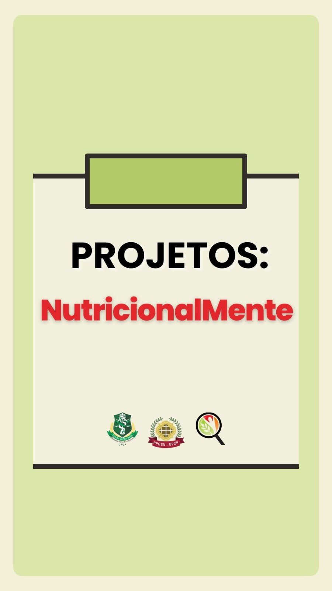
PesquisaVocê sabe o que te leva a realizar a escolha de determinados alimentos? O que influencia a forma como nos relacionamos com a comida? Apresentamos nosso projeto de pesquisa NutricionalMente, que investiga as dimensões do comportamento alimentar. 🔎 📍O objetivo do estudo é ampliar a compreensão sobre o comportamento alimentar e contribuir para o desenvolvimento de estratégias mais eficazes para a promoção da saúde e o manejo da obesidade. 📲 Continue acompanhando nosso perfil para saber mais sobre os resultados deste estudo e outras pesquisas do grupo. #gpensc #pesquisacientífica #ufop #ppgsn
GPENSC registra atividade de capacitação em epidemiologia
06/08/2026
 Extensão
Extensão
🎯 #TBT do Curso de Capacitação em Epidemiologia e Análise de Dados! Relembrando esse momento de imersão e aprendizado conduzido pela Profª. Drª. Adriana Lúcia Meireles! Um espaço fundamental para aprofundar a avaliação de evidências científicas na área de saúde pública. Ação promovida pelo projeto de extensão do GPENSC. Confira o registro da turma no carrossel! ➡️📸 #GPENSC #UFOP #Epidemiologia #PósGraduação Pesquisa SaudePublica
Projeto de capacitação promove introdução ao software R
23/07/2026
 Ensino
Ensino
📊 #TBT Curso de introdução ao R Passando para relembrar o curso de Introdução ao R, que reuniu duas turmas em jornadas incríveis de capacitação em análise de dados! 💻✨ Essa iniciativa faz parte do projeto de extensão “Capacitação em epidemiologia e análises de dados: uma atividade conduzida pelo Grupo de Pesquisa e Ensino em Nutrição e Saúde Coletiva (GPENSC)”, sob coordenação da Profa. Dra. Ariene Silva (@ariene.carmo). Nosso agradecimento a todos os alunos e pesquisadores que participaram e tornaram esses encontros tão ricos! Um agradecimento especial ao @emanuel.fps pela disponibilidade e excelência em ministrar o curso! Deslize para o lado para ver os registros das duas turmas! ➡️📸 #GPENSC #UFOP #LinguagemR #epidemiologia
Pesquisadora do GPENSC realiza missão científica em Granada
23/06/2026
 Internacionalização
Internacionalização
🇧🇷🇪🇸✈️ GPENSC pelo mundo! A professora Dra. Júlia Cristina Carraro Cardoso (@julia_carraro) esteve em Granada, na Espanha, em uma missão científica internacional ao Departamento de Psicobiologia da Universidad de Granada, sob a supervisão do professor David Garcia-Burgos. 🧠✨ A missão ocorreu no período de 04 a 18 de março de 2026 e teve como objetivo a discussão de colaboração científica em projeto na área de comportamento alimentar e obesidade, fortalecendo parcerias internacionais e ampliando oportunidades de pesquisa e intercâmbio de conhecimento. Arraste para o lado para conferir alguns registros dessa viagem! ➡️📸 #GPENSC #UFOP #Internacionalização #Pesquisa #Nutrição ComportamentoAlimentar Obesidade
Doutoranda do GPENSC inicia período de pesquisa na Universidade de Coimbra
19/06/2026
 Internacionalização
Internacionalização
Em abril, a pesquisadora do GPENSC e doutoranda do PPGSN/UFOP (@ppgsn.ufop), Laudicéia Ferreira Fróis (@laudiceia_frois), iniciou seu doutorado sanduíche no Centro de Investigação em Antropologia e Saúde (CIAS) (@cias_uc), vinculado ao Instituto de Antropologia e ao Departamento de Ciências da Vida, da Universidade de Coimbra (@uccoimbra), em Portugal. Durante esse período, Laudicéia desenvolverá sua pesquisa sobre saúde mental e comportamentos obesogênicos a partir de dados da Pesquisa Nacional de Saúde do Escolar (PeNSE), um dos principais inquéritos nacionais sobre a saúde de adolescentes no Brasil. A realização dessas atividades na Universidade de Coimbra favorece o intercâmbio científico entre Brasil e Portugal, ampliando a disseminação do conhecimento produzido com dados brasileiros e promovendo a troca de experiências e abordagens entre pesquisadores dos dois países. Além disso, a pesquisadora atua como colaboradora no projeto ScreenHealth, que investiga as trajetórias de uso das mídias digitais, as desigualdades sociais e seus efeitos a longo prazo sobre a obesidade e a saúde mental infantil. No âmbito desse projeto, sua proposta consiste em avaliar os efeitos da substituição temporal entre comportamentos de 24 horas (comportamento sedentário, atividade física e sono) sobre a saúde mental de crianças. As atividades são desenvolvidas sob a supervisão da Prof.ª Dr.ª Cristina Maria Padez (Universidade de Coimbra) e orientação da Prof.ª Dr.ª Adriana Lucia Meireles (@dri_meireles) (UFOP). A experiência representa uma importante oportunidade de aprofundamento científico e metodológico, contribuindo para o fortalecimento das colaborações internacionais e para a integração de conhecimentos produzidos no Brasil e em Portugal. Além disso, fortalece as colaborações científicas internacionais e amplia o processo de internacionalização do GPENSC e do PPGSN/UFOP. Desejamos muito sucesso à Laudicéia nesta importante etapa de sua trajetória acadêmica. 🧡 #doutorado #doutoradosanduíche #ufop #universidadedecoimbra
Exibição de documentário promove debate sobre alimentação e saúde
18/06/2026
 Extensão
Extensão
✨ #TBT - No dia 28/05, promovemos a exibição do documentário Comida de Mentira, um encontro marcado por muito aprendizado, troca de experiências e reflexões sobre alimentação, saúde e os impactos das nossas escolhas alimentares. Agradecemos a todos que estiveram presentes e contribuíram para esse momento tão enriquecedor. 💚 Quem participou dessa atividade com a gente? #tbt #GPENSC #comidadementira #alimentacaosustentavel
Capacitação aborda interpretação de artigos científicos
05/06/2026
 Ensino
Ensino
📚 Curso Gratuito | Leitura e Interpretação de Artigos Científicos com base na epidemiologia 🧑🏫Profª. Drª. Adriana Adriana Lúcia Meireles (DENCS/ENUT/UFOP) 🗓 24 de junho ⏰ 13h30 às 17h30 📍 Laboratório de Informática do Departamento de Estatística – UFOP Você sabe identificar se um artigo científico apresenta evidências de qualidade? Neste curso, serão abordados os principais aspectos para a leitura crítica e a interpretação adequada da literatura científica. Discutiremos como avaliar a qualidade metodológica de um estudo, reconhecer revistas científicas confiáveis, identificar características de revistas predatórias e interpretar resultados de pesquisas à luz dos conceitos fundamentais da epidemiologia. O curso é voltado para estudantes, pesquisadores e profissionais que desejam desenvolver habilidades essenciais para a análise crítica da produção científica e para a tomada de decisões baseada em evidências. 📢 Este curso é ofertado no âmbito do Projeto de Extensão intitulado: “Capacitação em epidemiologia e análises de dados: uma atividade conduzida pelo Grupo de Pesquisa e Ensino em Nutrição e Saúde Coletiva (GPENSC)” 🔗 Inscrições gratuitas pelo link: https://forms.gle/vryn5aEsgEneUok89 ⚠️ Vagas limitadas. Garanta sua vaga! #CursoGratuito #Epidemiologia #LeituraCientífica #PesquisaCientífica #SaúdeColetiva
GPENSC participa do CONBRAN 2026
22/05/2026
 Pesquisa
Pesquisa
✨ O GPENSC esteve presente no CONBRAN 2026! Foram dias de muitas trocas, aprendizados e fortalecimento da construção da ciência e da Saúde Coletiva. 💚📚 Seguimos firmes, produzindo ciência e compartilhando conhecimentos que transformam! #GPENSC #CONBRAN2026 #pesquisa #SaúdeColetiva #ciência
Doutoranda do GPENSC desenvolve atividades na Universidad de Granada
18/05/2026
 Internacionalização
Internacionalização
Em março, a pesquisadora do GPENSC e doutoranda do PPGSN/UFOP (@ppgsn.ufop), Vitória Regina Pinto (@vitoriareginan), iniciou seu doutorado sanduíche no Grupo de Investigación en Psicofisiología Humana y Salud, do Centro de Investigación Mente y Cerebro (@cimcyc) (CIMCYC), da Universidad de Granada (@canalug) – Facultad de Psicología, na Espanha, com bolsa da Fapemig. Durante esse período, Vitória desenvolverá sua pesquisa sobre mecanismos hedônicos (“liking”) e motivacionais (“wanting”) associados à obesidade e ao transtorno da compulsão alimentar periódica (TCAP), sob supervisão do Prof.º Dr.º David García-Burgos (Universidad de Granada) e orientação da Prof.ª Dr.ª Julia Cristina Cardoso Carraro (@julia_carraro) (UFOP). A experiência representa uma importante oportunidade para o aprofundamento técnico e científico em abordagens psicofisiológicas do comportamento alimentar, contribuindo para a compreensão mais integrativa da obesidade e da compulsão alimentar, para além dos aspectos exclusivamente nutricionais. Além disso, fortalece as colaborações científicas internacionais e amplia o processo de internacionalização do GPENSC e do PPGSN/UFOP. Desejamos muito sucesso nessa trajetória, Vitória! ✨
GPENSC celebra sua trajetória em publicação de aniversário
30/04/2026
 Institucional
Institucional
🎂✨ 7 anos de GPENSC! Nosso agradecimento a todos que fizeram e fazem parte dessa história. Seguimos com orgulho da nossa trajetória e ainda mais motivados para o que vem pela frente. 🧡🚀
Estudo do GPENSC é publicado na revista Nutrition
28/04/2026
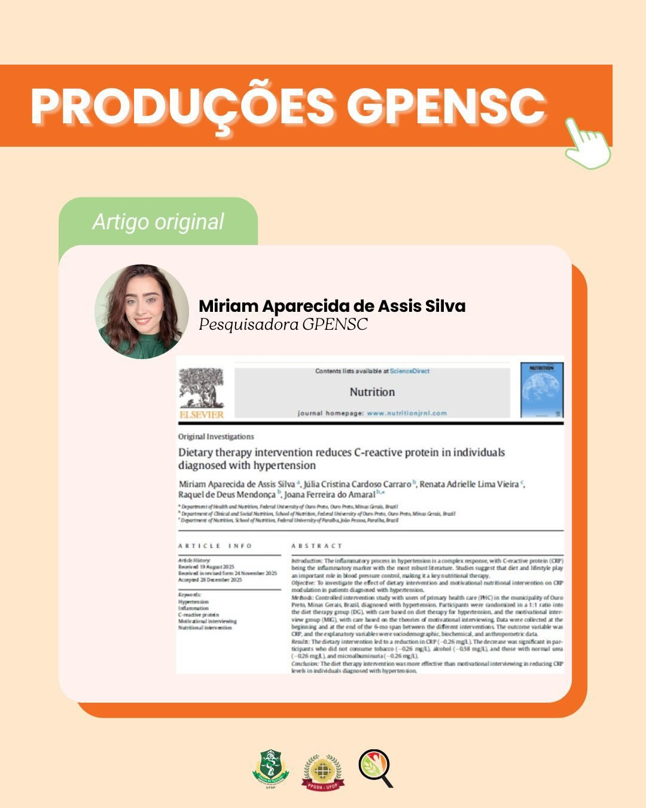
Pesquisa✨ Artigo publicado! ✨ Com muita alegria compartilhamos mais uma a publicação de artigo do nosso grupo na revista Nutrition 🧪📚 🫀 O que investigamos? Avaliamos o efeito de duas intervenções, dietoterapia para hipertensão e à entrevista motivacional, sobre a proteína C-reativa (PCR), um importante marcador inflamatório. Em pessoas com hipertensão arterial atendidas na Atenção Primária à Saúde. 📉 Principais achados: A intervenção com dietoterapia foi eficaz na redução da PCR, indicando melhora do perfil inflamatório em indivíduos hipertensos, reforçando o papel do cuidado nutricional individualizado e acolhedor como estratégia fundamental no cuidado à hipertensão. 💡 Este trabalho fortalece a evidência de que intervenções nutricionais bem estruturadas podem ir além do controle pressórico, impactando também processos inflamatórios associados às doenças cardiovasculares. 💙
GPENSC no Ar aborda polifenóis e saúde cardiovascular
20/12/2025
 Divulgação científica
Divulgação científica
🎙️Novo episódio do GPENSC NO AR disponível! A doutoranda Luciene Teixeira(@nutricionistalucienepaixao ) fala sobre como a ingestão de polifenóis se associa com o risco de desenvolvimento de doença cardiovascular. Ela explica o que são polifenóis e responde várias duvidas relacionadas ao tema. O programa é uma parceria com a Rádio Província FM 98,7MHz e já está disponível no Spotify! 🔗 Ouça agora mesmo: o link está na bio!
GPENSC no Ar discute motivos das escolhas alimentares
28/11/2025
 Divulgação científica
Divulgação científica
🎙️Novo episódio do GPENSC NO AR disponível! A doutoranda Renata Bento (@renatabentoo ) fala sobre o que influencia as nossas escolhas alimentares e responde várias dúvidas sobre o tema. O programa é uma parceria com a Rádio Província FM 98,7MHz e já está disponível no Spotify! 🔗 Ouça agora mesmo: o link está na bio!
GPENSC no Ar discute impacto ambiental da dieta
25/11/2025
 Divulgação científica
Divulgação científica
🎙️Novo episódio do GPENSC NO AR disponível! A doutoranda Amanda Motta (@amanda_mbortoli ) fala sobre como nossas escolhas alimentares impactam o meio ambiente e apresenta soluções simples e práticas para reduzir a produção de lixo e a poluição do planeta. Este conteúdo é essencial para quem quer comer melhor e cuidar do meio ambiente ao mesmo tempo. O programa é uma parceria com a Rádio Província FM 98,7MHz e já está disponível no Spotify! 🔗 Ouça agora mesmo: o link está na bio!
GPENSC relembra sua participação no VI CONAN
13/06/2025
 Pesquisa
Pesquisa
✨ Relembrando nossa participação no VI Congresso Nacional de Alimentação e Nutrição (VI CONAN - @conan_enut). O GPENSC marcou presença no CONAN com muita troca de conhecimento, apresentação de pesquisas e momentos especiais entre colegas e parceiros de caminhada científica. Seguimos firmes na construção de uma ciência crítica, ética e comprometida com a saúde coletiva! 💪📚🍽️ #GPENSC #VIConan #nutrição #saudecoletiva
Cartilha sobre estratégias de publicidade alimentar é divulgada
10/12/2024
 Divulgação científica
Divulgação científica
O GPENSC recomenda a cartilha “Estratégias da publicidade na alimentação”, lançada em novembro de 2024. O material foi elaborado pela doutoranda Tainá Damasceno (@tainacdamasceno), pesquisadora do projeto HipertenSUS, coordenado pela professora Dra. Raquel de Deus Mendonça (@raquelmendonca_enut). 💡A cartilha apresenta informações valiosas sobre a publicidade na alimentação, com destaque para o alerta sobre os perigos das propagandas e estratégias de marketing voltadas à venda de alimentos ultraprocessados, bem como os riscos associados ao consumo dessa classe de alimentos. Além disso, destaca a importância de verificar os rótulos para identificar a qualidade dos alimentos e recomenda o aplicativo Desrotulando (@desrotulandoapp) como um aliado nessa tarefa. 📚 A leitura é relevante para todos, pois o conhecimento sobre rótulos, composição e os riscos associados aos alimentos ultraprocessados é essencial para garantir o acesso à informação e promover a autonomia nas escolhas alimentares. 🔎 Para conferir a cartilha na íntegra e outros materiais do projeto acesse o link: https://enut.ufop.br/material-educativo . 🗣️ Gostou da dica? Compartilha com os amigos e aproveitar para salvar essa recomendação
GPENSC compartilha material educativo com receitas do projeto ESANP
20/02/2024
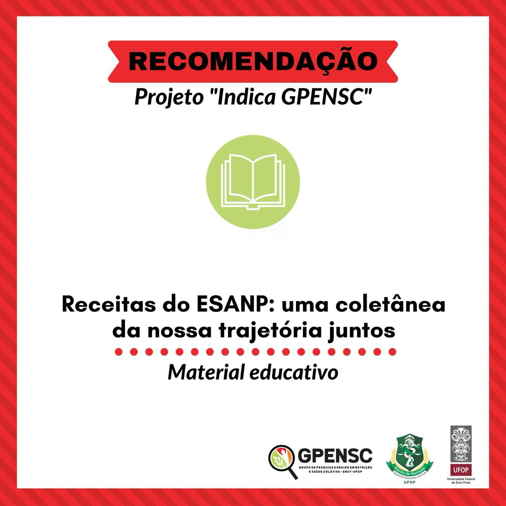
Divulgação científicaO GPENSC recomenda o material educativo “Receitas do ESANP: uma coletânea da nossa trajetória juntos”, desenvolvido por pesquisadores do GPENSC e da UFOP, sob supervisão das professoras Dra. Adriana Meireles (@dri_meireles) e Dra. Raquel Mendonça (@raquelmendonca_enut). 🍛 O material educativo aborda uma breve apresentação sobre o projeto HipertenSUS e traz informações sobre alimentação adequada e saudável, dando ênfase em algumas receitas. 👉🏻 Arraste para o lado e confira. 🗣️ Gostou da dica? Compartilha com os amigos e aproveitar para salvar essa recomendação.
HipertenSUS realiza atividades com unidades de saúde de Ouro Preto
19/05/2022
 Extensão
Extensão
O GPENSC relembra ação do projeto HipertenSUS realizada nas Unidades Básicas de Saúde (UBS) para a população do município de Ouro Preto, que aconteceu entre os dias 02 e 06 de maio de 2022. ❤️ A equipe do HipertenSUS, em parceria com a Secretaria Municipal de Saúde de Ouro Preto (@prefeituraouropreto), realizou salas de esperas em UBS do município (São Cristóvão, Bauxita, Saramenha, Antônio Dias, Morro Santana e Piedade) e uma Cozinha Experimental no Laboratório de Técnica Dietética da Escola de Nutrição (ENUT - @enutufop) da UFOP. 👉🏻 Arraste para o lado e confira algumas fotos dessa ação. ✨ Queremos agradecer ao empenho da equipe HipertenSUS para realizar essa ação. Vocês são essenciais e têm conduzido essa pesquisa de forma brilhante, com muita dedicação e profissionalismo. ❣️ Também queremos deixar registrado um agradecimento especial para todos os moradores que estavam presentes no evento e para todos os participantes do projeto. O HipertenSUS só é possível por causa de vocês. Obrigada por contribuírem com a nossa pesquisa e com o avanço da ciência no país! . 🗣 Continuem nos acompanhando para saber mais sobre esse e outros projetos desenvolvidos pelo nosso grupo.
Jornal regional destaca o projeto HipertenSUS
26/04/2022
 Pesquisa
Pesquisa
Neste mês de abril, o Jornal Mundo dos Inconfidentes (@jornalmundodosinconfidentes) publicou uma reportagem sobre o projeto HipertenSUS, que é realizado pela @enut_ufop, em parceria com a @prefeituraouropreto. O HipertenSUS faz o acompanhamento nutricional de pessoas com hipertensão arterial sistêmica (HAS) assistidas pela Atenção Primária à Saúde no município de Ouro Preto. 🗒 A reportagem destaca o objetivo do estudo, que consiste em avaliar a efetividade da intervenção nutricional pautada em entrevista motivacional e no Guia Alimentar para a População Brasileira para o controle da HAS. Seus resultados contribuirão para a avaliação e planejamento de políticas em alimentação e nutrição. 📃 O texto também traz informações sobre quando o projeto começou, sua duração, quem são os componentes da equipe do HipertenSUS e quais são as Unidas Básicas de Saúde onde as atividades estão acontecendo. Vale muito a pena a leitura! . 🔗 Para acessar a reportagem na íntegra, acesse o link disponível na nossa bio.
Conheça o projeto HipertenSUS na Atenção Primária
03/03/2022
 Pesquisa
Pesquisa
O GPENSC apresenta o projeto “Efetividade de intervenção nutricional para controle da Hipertensão Arterial Sistêmica na Atenção Primária à Saúde (HipertenSUS)”. ❤️ O HipertenSUS é um estudo realizado pela Escola de Nutrição - ENUT (@enut_ufop) da Universidade Federal de Ouro Preto (@minhaufop) em parceria com a Secretaria Municipal de Saúde de Ouro Preto (@prefeituraouropreto). 👥 A equipe do HipertenSUS é formada por professoras da ENUT, pós-doutoranda, doutorandas, mestrandas e estudantes de iniciação científica e voluntários. 🎯 Tem como objetivo avaliar a efetividade de intervenção nutricional pautada em entrevista motivacional e no Guia Alimentar para a População Brasileira para o controle da Hipertensão Arterial Sistêmica (HAS) e redução do consumo de alimentos ultraprocessados em usuários da Atenção Primária à Saúde. 📋 Em novembro de 2021, a pesquisa realizou diagnóstico situacional sobre a percepção da população em relação ao sistema alimentar de Ouro Preto. A próxima atividade consiste em acompanhar usuários do sistema de saúde com diagnóstico de HAS por 6 meses, por meio de atendimento individual nas Unidades Básicas de Saúde do município. 💡 Os resultados desta pesquisa contribuirão para avaliação e planejamento das políticas de alimentação e nutrição. 💌 Em caso de dúvidas, entre em contato pelo e-mail: projetohipertensus.enut@ufop.edu.br . 🎥 Para saber mais sobre o HipertenSUS, continue nos acompanhando por aqui e pelo Youtube: https://www.youtube.com/channel/UCa8eXLK5z0B3-wAKVJ11GjA
GPENSC compartilha conquistas em eventos científicos
02/03/2022
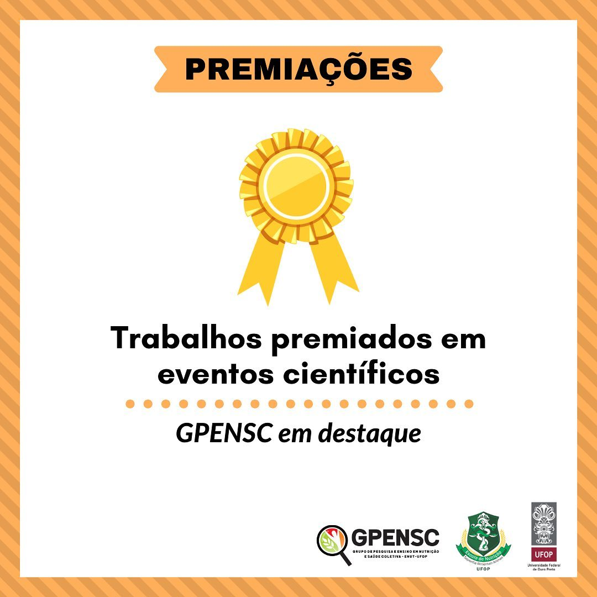
InstitucionalComo vocês têm acompanhado, o GPENSC participou de vários eventos locais, nacionais e internacionais no ano passado. O ano de 2021 foi cheio de conquistas para o nosso grupo. Hoje, em especial, vamos apresentar algumas #PremiaçõesGPENSC dos eventos de 2021. 🏅 Parabenizamos as doutorandas Priscila Pena Camargo (@priscilapenacamargo) e Irene Carolina Sousa Justiniano (@irenecsj_) por terem seus trabalhos escolhidos como sendo os melhores na área de Saúde Coletiva no V Congresso Nacional de Alimentos e Nutrição (CONAN - @conan_enut), em 2021. 🏅 Parabenizamos a mestranda Joice Silva Vieira Leal (@joicesvleal) pelo trabalho apresentado no Encontro de Saberes 2021, da Universidade Federal de Ouro Preto. Seu trabalho foi destaque por ser o melhor na área de Ciências da Vida, na VI Mostra dos Programas de Pós-Graduação (MPPG - @proppi_ufop). ✨ Também parabenizamos as demais autoras desses trabalhos pela colaboração, orientações e por todo empenho dedicado à pesquisa. 👉🏽 Arraste para o lado e confira os detalhes sobre os nossos trabalhos premiados.
Mariana Vidigal inicia doutorado sanduíche na Espanha
10/11/2026
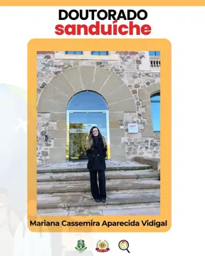
InstitucionalEm outubro, a pesquisadora do GPENSC e doutoranda do PPGSN/UFOP (@ppgsn.ufop), Mariana Cassemira Aparecida Vidigal (@mariana.vidigal), iniciou seu doutorado sanduíche no Institut de Recerca i Tecnologia Agroalimentàries (IRTA) em Caldes de Montbui, Barcelona, na Espanha, com bolsa CAPES. Durante esse período, Mariana desenvolverá sua pesquisa sobre as pegadas ambientais associadas às embalagens de bebidas consumidas pela população brasileira, considerando as diferenças entre as categorias de bebidas segundo a extensão e o propósito do processamento, sob a supervisão da pesquisadora Ujué Fresán (@ujuefresan) (IRTA) e das professoras Dra. Adriana Lúcia Meireles (@dri_meireles) (UFOP) e Dra. Raquel de Deus Mendonça (@raquelmendonca_enut) (UFOP).
Nayara Resende Gomes realiza qualificação no GPENSC
22/10/2026
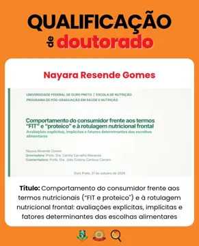
PesquisaNayara Resende Gomes (@nayararesendeg), sob orientação da Profª. Drª. Camila Carvalho Menezes (@menezescamilacarvalho) e coorientação da Profª. Drª. Júlia Cristina Cardoso Carraro (@julia_carraro), apresentou seu trabalho com muita dedicação, comprometimento e excelência. Parabéns, Nayara, por essa importante conquista! 👏✨ Que essa etapa represente mais um passo significativo em sua trajetória acadêmica, trazendo novos aprendizados, oportunidades e realizações. Desejamos muito sucesso na continuidade dessa caminhada e que muitas outras conquistas venham pela frente! 💐🎓
Mariana Cassemira Aparecida Vidigal realiza qualificação
27/08/2026
 Pesquisa
Pesquisa
Mariana Cassemira Aparecida Vidigal (@mariana.vidigal), sob orientação da Profª Drª Adriana Lúcia Meireles (@dri_meireles) e coorientação da Profª Drª Raquel de Deus Mendonça (@raquelmendonca_enut), apresentou seu trabalho com muita dedicação, comprometimento e excelência. Parabéns, Mariana, por essa importante conquista! Desejamos muito sucesso na continuidade de sua trajetória acadêmica e que essa etapa seja apenas mais um passo rumo a muitas outras conquistas! ✨👏🏼🎓
Doutorado sanduíche | GPENSC pelo mundo ✈️🌍🇨🇱
08/04/2026
 Institucional
Institucional
✈️🌍🇨🇱 Em setembro, a pesquisadora do GPENSC e doutoranda do PPGSN/UFOP (@ppgsn.ufop), Francine Rubim de Resende iniciou seu doutorado sanduíche no Centro de Investigación en Ambientes Alimentarios y Prevención de Enfermedades Crónicas Asociadas a la Nutrición (CIAPEC), localizado no Instituto de Nutreición y Tecnología de los alimentos (INTA) da Universidade de Chile, com bolsa da CAPES. Durante seu sanduíche, Francine irá desenvolver a pesquisa a cerca de alegações nutricionais e técnicas de marketing utilizados em rótulos de alimentos, uma análise que avalia os períodos anterior e posterior a implementação da lei de rotulagem nutricional frontal de alimentos no Chile, sob a supervisão da Dra. Camila Corvalán (Universidad de Chile) e das Profas. Dra. Camila Carvalho Meneses (UFOP) e Dra. Júlia Cristina Cardoso Carraro (UFOP). Continue nos acompanhando para saber mais sobre a pesquisa da Francine! 🧡 #doutorado #doutoradosanduiche #universidaddechile #cienciabrasileira
Momentos GPENSC | Defesa de mestrado ✨
24/03/2026
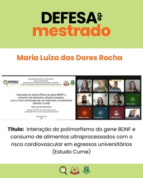
InstitucionalNo dia 06 de fevereiro de 2026, tivemos mais uma defesa de mestrado em nosso grupo de pesquisa. 🎓 Maria Luiza (@marialuiza.nut), orientada pela Profª Drª Júlia Cristina Cardoso Carraro (@julia_carraro) e coorientada pela Profª Drª Helen Hermana Miranda Hermsdorff (@helenhermana), apresentou seu trabalho com muita dedicação e empenho ao longo de toda a trajetória. Foi muito especial acompanhar esse percurso e celebrar esse momento! Desejamos muito sucesso na continuidade de sua trajetória profissional e científica. 👏🏼🧡
Momentos GPENSC | Defesa de mestrado ✨
10/03/2026
 Institucional
Institucional
No dia 05 de fevereiro de 2026 tivemos mais uma defesa de mestrado em nosso grupo de pesquisa. 🎓 Gabriela (@gabsmachados), sob orientação da Profª Drª Júlia Cristina Cardoso Carraro (@julia_carraro e coorientação da Profª Drª Renata Adrielle Lima Vieira (@renataadriellenutri), apresentou seu trabalho com dedicação, comprometimento e grande empenho ao longo de toda a trajetória. Parabéns por essa importante conquista! Que essa nova etapa seja repleta de aprendizados, oportunidades e muitas realizações. ✨👏
Momentos GPENSC ✨ - Defesa de Mestrado
03/03/2026
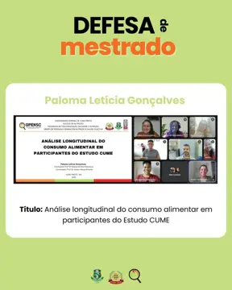
InstitucionalNo dia 05 de fevereiro de 2026, ocorreu mais uma defesa no nosso grupo de pesquisa. Paloma (@palomaleticia_17), orientada pela Dra. Raquel de Deus Mendonça (@raquelmendonca_enut) e coorientada pelo Dr. Adriano Marçal Pimenta, defendeu seu mestrado com muita dedicação e excelência. Parabéns, Paloma e demais envolvidos, pelo compromisso e dedicação à ciência. Desejamos um caminho de muito sucesso!🧡
O GPENSC se orgulha de acompanhar e celebrar cada etapa da trajetória de seus membros!
26/12/2025
 Institucional
Institucional
👏 Parabenizamos Selso Ananias Sitoe pela qualificação do seu projeto de doutorado. Projeto: Desenvolvimento de instrumento para a avaliação do ambiente alimentar informal em países de baixa e média renda Orientação: Profª Drª Mariana Carvalho de Menezes
Doutorado sanduíche - GPENSC pelo mundo ✈️🌍🇵🇹
07/10/2025
 Institucional
Institucional
✈️🌍🇵🇹 Em setembro, a pesquisadora do GPENSC e doutoranda do PPGSN/UFOP (@ppgsn.ufop), Tainá Damasceno, embarcou para realizar seu doutorado sanduíche na Faculdade de Ciências da Nutrição e Alimentação da Universidade do Porto (FCNAUP), em Portugal, com bolsa da CAPES. No período, Tainá desenvolverá o tema: “Concepções acerca do comportamento alimentar e escolhas alimentares na perspectiva de usuários da Atenção Primária à Saúde”, sob a supervisão do Dr. Rui Manuel Almeida Pinhos (Universidade do Porto) e das Profas. Dra. Raquel de Deus Mendonça (UFOP) e Dra. Júlia Cristina Cardoso Carraro (UFOP). 💬 Para Tainá, essa experiência é uma oportunidade de crescimento pessoal, por ser meu primeiro contato com a pesquisa fora da UFOP, e também profissional, ao me possibilitar aprender com novos pesquisadores e aprofundar meus conhecimentos em análise qualitativa. Sempre foi meu sonho estudar comportamento alimentar e compreender como podemos ajudar as pessoas a partir dessa perspectiva. Poder realizar isso em outro país, com uma cultura que dialoga com a brasileira, me inspira e motiva ainda mais a seguir nesse caminho. Continue nos acompanhando para saber mais sobre a pesquisa da Tainá! ❤️ #doutorado #doutoradosanduiche #universidadedoporto #universidade #cienciabrasileira #capes
Momentos especiais | Despedida da Tania Manjarrés ✨
11/09/2025
 Institucional
Institucional
Com muito carinho, nos despedimos de Tania Manjarrés, que esteve conosco nos últimos seis meses em seu doutorado sanduíche, sob orientação da professora Raquel de Deus Mendonça (@raquelmendonca_enut). Sua presença trouxe aprendizado, trocas valiosas e muitos momentos especiais para o nosso grupo de pesquisa e para os integrantes. Obrigada por toda a dedicação e pelos conhecimentos compartilhados. Seguiremos na torcida pelo seu caminho e sucesso! Até breve, Tania! 🧡
Prêmio CAPES de Tese | Thaís Sabião ✨
10/09/2025
 Institucional
Institucional
A pesquisadora Thaís, doutoranda egressa do PPGSN/UFOP (@ppgsn.ufop), orientada pela professora Júlia Carraro (@julia_carraro) e coorientada pelo George Machado-Coelho, foi vencedora do Prêmio CAPES de Tese 2025. Para Thaís, o prêmio marca sua trajetória acadêmica: mais do que uma realização pessoal, reflete o trabalho coletivo e reafirma a relevância de sua pesquisa para a sociedade. Sua tese mostrou como fatores sociais e biológicos, como insegurança alimentar e o metabolismo da vitamina D, podem influenciar sintomas de ansiedade e depressão. Os resultados contribuem para compreender a complexidade da saúde mental e orientam políticas públicas, estratégias de prevenção e cuidado inclusivo. Thaís destaca que essa conquista a motiva a continuar pesquisando, transformando conhecimento em ações concretas pela saúde mental. Parabéns à Thaís, à professora Júlia e ao professor George por essa conquista que enche o GPENSC de orgulho! #capes #premiocapes #prêmiocapesdetese #cienciabrasileira #gpensc #ufop
Participação da professora Adriana na Avaliação Quadrienal da Capes!
02/09/2025
 Institucional
Institucional
A professora Adriana Lúcia Meireles (@dri_meireles) foi convidada para atuar como consultora da área de Nutrição na Avaliação Quadrienal 2021-2024 da Capes. As atividades presenciais ocorreram em Brasília e envolveram 15 pesquisadores que avaliaram a qualidade dos cursos de mestrado e doutorado em Nutrição do Brasil. Essa participação representa um importante reconhecimento da trajetória da professora Adriana e reforça o papel do GPENSC na produção de conhecimento científico e na qualificação da pós-graduação em Nutrição no país. #pesquisa #ciencia #capes
Momentos GPENSC | Qualificações - Mestrado ✨🎓
14/07/2025
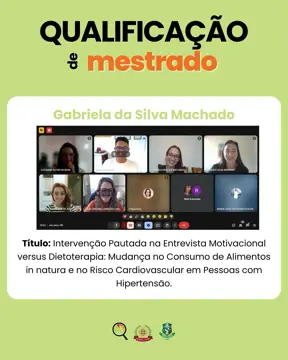
InstitucionalO caminho da pesquisa é feito de dedicação, trocas e muitos aprendizados. Nosso grupo celebra com alegria a etapa de qualificação das mestrandas do GPENSC! 🧡 Parabenizamos: Gabriela da Silva Machado Título: Intervenção Pautada na Entrevista Motivacional versus Dietoterapia: Mudança no Consumo de Alimentos in natura e no Risco Cardiovascular em Pessoas com Hipertensão Orientadora: Profª Drª Júlia Cristina Cardoso Carraro Gabrielle Araújo Santos Título: Associação entre qualidade do sono e consumo de “comfort foods” durante períodos de estresse prolongado Orientador: Prof. Dr. Luiz Antônio Alves de Menezes Júnior Maria Luiza das Dores Rocha Título: Polimorfismo do gene BDNF, consumo de alimentos ultraprocessados e sua interação com o risco cardiovascular em adultos graduados (Estudo CUME) Orientadora: Profª Drª Júlia Cristina Cardoso Carraro Paloma Letícia Gonçalves Título: Mudanças e consistência no consumo alimentar: coorte CUME Orientadora: Profª Drª Raquel de Deus Mendonça Edna da Silva Título: Consumo de bebidas adoçadas e sua associação com a qualidade do sono: Estudo COVID-Inconfidentes Orientadora: Profª Drª Adriana Lúcia Meireles Laís Fernanda Costa Oliveira Título: Acúmulo de resíduos sólidos provenientes das embalagens de alimentos ultraprocessados: análise do consumo alimentar da Coorte CUME Orientadora: Profª Drª Raquel de Deus Mendonça Chrislaine Corraide Dias dos Santos Título: Efetividade da entrevista motivacional e da dietoterapia no consumo de alimentos ultraprocessados em indivíduos com diagnóstico de hipertensão Orientadora: Profª Drª Raquel de Deus Mendonça Que essa etapa seja apenas o início de muitas contribuições para a ciência e para a saúde coletiva! 🚀📚 #GPENSC #Mestrado #Qualificação #Pesquisa #Nutrição #SaúdeColetiva #PPGSN #UFOP #MomentoGPENSC
GPENSC celebra seis anos de trajetória
08/04/2025
 Institucional
Institucional
Hoje é um dia muito especial para o GPENSC: estamos comemorando 6 anos de trajetória! São 6 anos de muita dedicação, projetos, aprendizados, descobertas e conquistas. Aproveitamos esse momento para agradecer a cada integrante que faz parte dessa história — o crescimento do nosso grupo só é possível devido ao esforço coletivo, ao trabalho em equipe e à troca constante de ideias e saberes. Nosso agradecimento também vai para vocês, que nos acompanham por aqui e fortalecem ainda mais essa rede. Parabéns, GPENSC! Que venham muitos outros anos de ciência, parceria e transformação! 💚❤️🧡
GPENSC encerra as atividades de 2024
31/12/2024
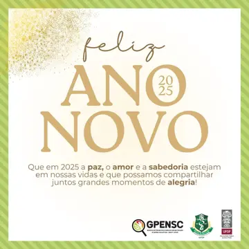
Institucional✨ 2024 está chegando ao fim, e é momento de agradecer a todos que fizeram parte da nossa jornada. Este ano foi repleto de desafios, mas também marcado por grandes conquistas e muitos aprendizados. Cada passo dado, cada descoberta e cada contribuição nos aproximaram ainda mais dos nossos objetivos. . 🎆 Que o novo ano nos traga ainda mais crescimento, colaboração e sucesso. Em 2025, seguimos comprometidos em fazer a diferença para, juntos, alcançarmos novos horizontes e continuarmos transformando o conhecimento! . 💫 Feliz Ano Novo da família GPENSC para você e sua família! . Com amor e carinho, Equipe GPENSC 💚🧡♥️
Enfim, chegou o Natal!🎄
24/12/2024
 Institucional
Institucional
Natal é tempo de esperança, amor e reflexão, um momento para celebrar a união, compartilhar gestos de bondade e renovar os sonhos para o ano que está por vir. . 💫 Desejamos que a alegria do Natal faça morada em nossas vidas e que tenhamos gratidão por tudo que vivemos e por esse novo ciclo que está chegando! . 🥰 Desejamos a todos um Feliz Natal! . ❤️ Com amor e carinho, esses são os votos do GPENSC!
Retrospectiva do GPENSC em 2024
19/12/2024
 Institucional
Institucional
No post de hoje, vamos rever e relembrar momentos especiais do nosso grupo durante 2024. . ✨ Nesse ano, tivemos muitas conquistas e celebrações. Encerramos o ano com a sensação de dever cumprido e com a certeza de que o próximo ano será ainda mais incrível! Temos muito orgulho e satisfação da nossa trajetória! . 👉🏼 Arraste para o lado e confira a nossa retrospectiva! . 👥 Somos muito felizes por cada seguidor que nos acompanhou aqui. Que venha 2024 com ainda mais ciência!
Última reunião do GPENSC em 2024
12/12/2024
 Institucional
Institucional
O GPENSC relembra última reunião do nosso grupo, que aconteceu no dia 02 de dezembro de 2024. . 💟 Foi um encontro muito especial, no qual tivemos a oportunidade de conversar e compartilhar nossas perspectivas sobre as reuniões presenciais, nossas dificuldades, aprendizados, pontos de melhoria, alegrias e desejos para o próximo ano. . 💫 Sabemos que 2024 foi um ano desafiador para muitos de nós, mas conseguimos transformar este encontro em um momento especial e acolhedor. Para 2025, desejamos que o GPENSC continue sendo um espaço de apoio mútuo, reflexão crítica, troca de conhecimento, aprendizado, produção e discussão científica, além de um ambiente de amizades, respeito e acolhimento! . Agradecemos a todos vocês que acompanharam nosso grupo em 2024! 💚❤️🧡
Ouro Preto recebe o 16º Encontro de Saberes
04/12/2024
 Institucional
Institucional
Entre os dias 09 e 11 de dezembro de 2024, irá acontecer o 16º Encontro de Saberes, no Centro de Artes e Convenções, em Ouro Preto. O evento é realizado pela Universidade Federal de Ouro Preto – UFOP (@minhaufop). . 👩🏻💻 Nós, do GPENSC, participaremos do Encontro de Saberes com apresentações de pôsteres. Convidamos você para participar do evento e conhecer os trabalhos desenvolvidos pelo nosso grupo. . 👉🏻 Arraste para o lado e confira mais detalhes dos pôsteres. . 🗣️ Continue nos acompanhando para ficar por dentro de todas as nossas atividades!
Doutorado sanduíche de Priscila Pena Camargo
17/10/2024
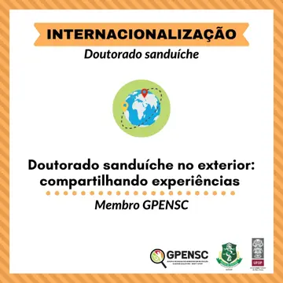
InstitucionalHoje, vamos compartilhar com vocês mais um pouquinho sobre o doutorado sanduíche de uma pesquisadora do nosso grupo, a Priscila Pena Camargo (@priscilapenacamargo), discente do PPGSN/UFOP (@ppgsn.ufop), que foi para a Boston University (@bostonu), Estados Unidos, com bolsa pela CAPES (@capes_oficial). . ✨ Para Priscila, esse período foi uma importante oportunidade de crescimento pessoal e acadêmico. Segundo a discente, foi uma experiência desafiadora e repleta de novidades, que aumentou sua confiança e proporcionou a oportunidade de conhecer e aprender com pesquisadores renomados de diversas partes dos EUA. Além disso, Priscila pôde praticar uma segunda língua, ter contato com outras culturas - já que a cidade recebe imigrantes de todas as partes do mundo - e ter a vivência em uma cidade com diversas atividades culturais, como Boston. . 👥 A doutoranda trabalhou em colaboração direta com o grupo de pesquisa do Instituto Children’s HealthWatch para desenvolver, implementar e analisar os dados de uma pesquisa on-line voltada para a equipe de recepção e médicos assistentes do Departamento de Pediatria do Boston Medical Center. Essa pesquisa fez parte das ações da Força-Tarefa de Segurança Alimentar e teve como objetivo entender as barreiras e facilitadores da implementação de uma ferramenta de triagem de necessidades sociais relacionadas à saúde para famílias de pacientes pediátricos que buscam atendimento na atenção primária do hospital. . 📚 Durante seu estágio no exterior, Priscila apresentou a pesquisa que desenvolveu no Brasil na Reunião do Conselho Executivo do instituto e teve a oportunidade de participar de seminários organizados por diversos órgãos de pesquisa, com os temas “Hunger Vital Sign” e “Food is Medicine”. . 👩🏻💻 A discente teve reuniões frequentes com sua supervisora estrangeira, Dra. Ana Poblacion, e teve a oportunidade de integrar o grupo de estudos do instituto, participando de suas reuniões e aprendendo sobre Insegurança Alimentar e políticas públicas para sua mitigação. Essas experiências certamente impactarão positivamente sua tese de doutorado, assim como sua carreira acadêmica. . 👉🏻 Arraste para o lado e confira al
Instrutivo de Abordagem Individual para o Manejo da Obesidade no SUS
25/09/2024
 Institucional
Institucional
O GPENSC recomenda o material “Instrutivo de Abordagem Individual para o Manejo da Obesidade no SUS”, elaborado pelo Grupo de Pesquisa de Intervenções em Nutrição da Universidade Federal de Minas Gerais (GIN/UFMG - @gin.ufmg) em parceria com a Coordenação Geral de Alimentação e Nutrição do Ministério da Saúde (CGAN/DEPROS/SAPS/MS). . 🎯 O objetivo deste instrutivo é servir como uma ferramenta de suporte e apoio para gestores e profissionais da saúde, promovendo a inovação e a qualificação do manejo da obesidade no SUS. . 📚 O instrutivo conta com 8 capítulos que abordam os seguintes temas: o cuidado da pessoa com obesidade no SUS; a perspectiva teórica na abordagem individual da pessoa com obesidade; os desafios no cuidado da pessoa com obesidade; a abordagem individual da pessoa com obesidade no SUS; a avaliação da pessoa com obesidade; a abordagem individual da pessoa com obesidade na prática; a abordagem nutricional individual na prática do/a nutricionista; e, por fim, um estudo de caso sobre a abordagem individual da pessoa com obesidade. . 💡Em resumo, o material apresenta perspectivas teóricas e práticas para o manejo da obesidade no SUS, promovendo uma abordagem individualizada e uma avaliação integral da pessoa com obesidade, com respeito, competência e empatia. . 🔗 Para conferir o documento na íntegra, acesse: https://drive.google.com/file/d/1lcIz12nMhFJziub06c8POUmrSPb7RONF/view?fbclid=PAZXh0bgNhZW0CMTEAAaZSpcZsRZU8kqeBDdKC-OBYrkQtZUzr-XstXdTO3kivRM6kVD9rxN5x2e4_aem_ztj1qMrUWU06qFBTh2XTjg . 🗣️ Gostou do conteúdo? Compartilha com os amigos e aproveita para salvar essa recomendação.
Defesa de doutorado de Thaís Sabião
12/09/2024
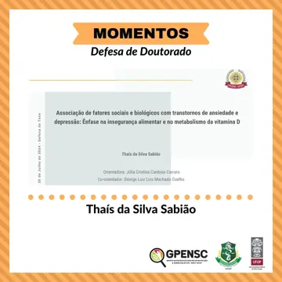
InstitucionalO #tbt de hoje é para lembrar da defesa de doutorado da Thaís Sabião (@thasabiao), que ocorreu no dia 30 de julho de 2024, no formato híbrido. . 🔎 A tese, intitulada “Associação de fatores sociais e biológicos com transtornos de ansiedade e depressão: Ênfase na insegurança alimentar e no metabolismo da vitamina D”, teve como objetivo analisar a associação entre os sintomas de transtornos de ansiedade e depressão com a insegurança alimentar, os níveis séricos de vitamina D e polimorfismos genéticos relacionados ao metabolismo da vitamina D. O estudo resultou em quatro artigos originais. . 👥 O estudo foi orientado pela Dra. Júlia Carraro - UFOP (@julia_carraro) e coorientado pelo Dr. George Coelho - UFOP (@georgelinsmachadocoelho). A banca da defesa foi composta pelas Dras. Aline Aguiar - UFOP (@aline.saguiar), Anelise Andrade - UFOP (@andradeanelise) e Carolina Nicoletti - USP (@carolnicolettif), e pelo Dr. Adriano Pimenta - UFPR (@adrianopimenta). . 📊 Os resultados mostraram uma forte associação entre insegurança alimentar e sintomas de ansiedade e depressão, influenciada por características sociodemográficas. Além disso, embora não tenha sido identificada uma associação direta entre a deficiência de vitamina D e os sintomas de ansiedade e depressão, a pesquisa evidenciou que a interação com variações genéticas e hábitos de vida pode influenciar os sintomas desses transtornos. . 💡 As descobertas do estudo evidenciam a complexidade dos fatores associados aos transtornos de saúde mental e seus sintomas, que são desafiadores de gerenciar devido à sua multidimensionalidade. O estudo abordou de maneira particular os aspectos sociais e biológicos, ressaltando a importância de integrá-los na promoção da saúde mental e na prevenção de transtornos mentais. . 🎆 Parabenizamos a Thaís pela defesa de doutorado e por sua valiosa contribuição ao PPGSN e à ciência do país. Desejamos muito sucesso!
GPENSC celebra o Dia do Nutricionista
31/08/2024
 Institucional
Institucional
Gostaríamos de parabenizar todos os profissionais que se dedicam a exercer a arte e a ciência da nutrição, promovendo saúde, bem-estar e qualidade de vida para todos. Vocês são essenciais para uma vida mais plena e feliz! . 🍽️ Aos nutricionistas que inspiram mudanças positivas e nos guiam em cada escolha, nossa gratidão e respeito. Que possamos sempre lutar pelo direito de acesso a uma alimentação adequada e saudável. . ✨ Parabéns a todos os Nutricionistas e futuros profissionais! Feliz dia! . Com carinho, equipe GPENSC. 💚❤️🧡
Defesa de mestrado de Felipe Reis Stavaux Baudson
29/08/2024
 Institucional
Institucional
Nosso tbt de hoje é para lembrar da defesa de mestrado do Felipe Reis Stavaux Baudson (@felipebaudson ), que ocorreu no dia 19 de julho de 2024 na Escola de Nutrição - ENUT/UFOP (@enut_ufop ). . 🔎 A dissertação do Felipe, intitulada “Consumo de alimentos segundo a classificação NOVA e prevalência de insônia em egressos de universidades mineiras: Coorte CUME”, teve como objetivo analisar o consumo de alimentos segundo classificação NOVA e a sua associação com a prevalência de insônia entre os participantes do estudo CUME. . 👥 Seu estudo foi orientado pela professora Dra. Raquel Mendonça – UFOP (@raquelmendonca_enut) e coorientada pela professora Dra. Renata Adrielle – UFPB (@renataadriellenutri ). O trabalho contou com a contribuição da banca formada pelo professor Dr. Luiz Antônio Menezes – UFOP (@luizmenezes__ ) e pela professora Dra. Camila Medeiros da Silva Mazzeti – UFMS (@cmazzeti). . 💡Os resultados da dissertação do Felipe não encontraram uma associação significativa entre o consumo de alimentos, conforme a classificação NOVA, e a prevalência de insônia em adultos jovens. No entanto, foi observado que fatores como depressão, nível de atividade física, tabagismo e consumo de bebidas alcoólicas desempenham um papel crucial no desenvolvimento da insônia. . 💡Esses achados enfatizam a necessidade de novos estudos que explorem essa associação para aprofundar o entendimento sobre como os hábitos alimentares influenciam esse distúrbio do sono, que é um dos mais comuns na sociedade atual. . 🎆 Parabenizamos o Felipe pela defesa e pela contribuição na ciência do país.
Cursos de saúde da UNA-SUS
13/08/2024
 Institucional
Institucional
O GPENSC recomenda a plataforma de cursos da Universidade Aberta do Sistema Único de Saúde (UNA-SUS). Criado em 2010, o sistema UMA-SUS é uma iniciativa do Ministério da Saúde que oferece diversos cursos de qualificação para profissionais de saúde de forma, de forma totalmente gratuita, on-line e com certificado. . 💻 Na plataforma, vocês encontram cursos sobre abordagem profissional em diferentes contextos de saúde, atualizações sobre manejo de saúde, entre outros temas. . 📚 Na indicação de hoje, selecionamos 10 cursos disponíveis que abrangem as áreas de Saúde, Nutrição e Pesquisa. São eles: 1º) Abordagem do sobrepeso e obesidade na atenção primária à saúde. Inscrições até o dia 20/05/2025; 2º) Amamenta e alimenta Brasil: recomendações baseadas no Guia Alimentar para crianças brasileiras menores de 2 anos. Inscrições até o dia 30/08/2024; 3º) Aspectos operacionais I: organização de documentos e dados de pesquisa. Inscrições até o dia 23/08/2024; 4º) Aspectos operacionais II: estruturação da equipe e tópicos regulatórios em pesquisa. Inscrições até o dia 23/08/2024; 5º) Aspectos operacionais III: implementação e acompanhamento do estudo. Inscrições até o dia 23/08/2024; 6º) Aspectos operacionais IV: gerenciamento e conclusão do estudo. Inscrições até o dia 23/08/2024; 7º) Cuidado da criança e adolescente com sobrepeso e obesidade na Atenção Primária à Saúde. Inscrições até o dia 30/08/2024; 8º) Estratégia de prevenção e controle da obesidade infantil (PROTEJA). Inscrições até o dia 05/07/2025; 9º) População em situação de rua. Inscrições até o dia 23/08/2024; 10º) Reconhecendo o sobrepeso e a obesidade no contexto da Atenção Primária à Saúde. Inscrições até o dia 20/05/2025. . 🔗 Esse e outros cursos da UNA-SUS estão disponíveis no site https://www.unasus.gov.br. . 🗣️ Gostou da dica? Compartilha com os amigos e aproveita para salvar essa recomendação.
Consumo de álcool na pandemia segundo sexo e escolaridade
23/07/2024
 Institucional
Institucional
O GPENSC apresenta o artigo intitulado “The interaction between education and sex with alcohol consumption during the COVID-19 pandemic: a cross-sectional analysis of two Brazilian cities”, de autoria da doutoranda Amanda Popolino Diniz (@amandapopolinonutri) juntamente com outros pesquisadores do GPENSC e da UFOP. . 🎯 O artigo teve como objetivo avaliar a associação conjunta de educação e sexo com o consumo excessivo habitual e episódico de álcool durante a pandemia da covid-19. . 📝 Trata-se de um estudo transversal realizado, entre outubro e dezembro de 2020, por meio de inquérito soroepidemiológico domiciliar de base populacional. O consumo excessivo episódico de álcool foi definido como o consumo de cinco ou mais doses para homens ou quatro ou mais doses para mulheres, pelo menos uma vez nos últimos 30 dias. Para avaliar as associações entre nível de educação e sexo com o consumo de álcool foi realizada regressão logística multivariada ajustada. . 📊 A prevalência de consumo habitual de álcool no estudo foi de 37,92%, enquanto a prevalência de consumo excessivo de álcool foi de 30,17%. Não houve associação entre o nível de educação e o consumo habitual ou excessivo de álcool de forma isolada. No entanto, ao avaliar o efeito combinado entre educação e sexo, observou-se que homens com baixo nível educacional eram mais propensos tanto ao consumo habitual (OR: 5,85; IC95:2,74–14,84) quanto ao consumo excessivo de álcool (OR: 4,45; IC95%: 1,54–12,82). Por outro lado, mulheres com alto nível educacional apresentavam maior propensão ao consumo habitual (OR: 2,16; IC95%: 1,18–3,95) e ao consumo excessivo de álcool (OR: 2,00; IC95%: 1,16–3,43). . 💡Os resultados destacam o efeito modificador do sexo na associação entre educação e consumo de álcool, indicando que a influência da educação sobre o consumo de álcool variou entre os sexos durante a pandemia. . 🔗 Acesse o artigo: https://www.mdpi.com/1660-4601/21/6/804
Genética, escolhas alimentares e mudança de peso no estudo CUME
18/07/2024
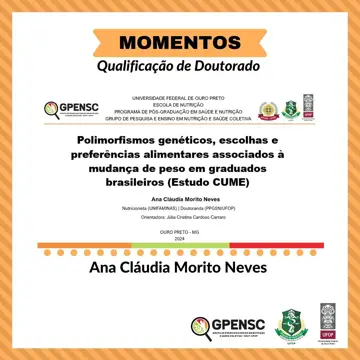
InstitucionalO GPENSC relembra qualificação de doutorado da aluna Ana Cláudia Morito Neves (@anaclaudiamorito ), que ocorreu no dia 13 de maio de 2024, no formato online. . 🔎 O projeto de doutorado da Ana Cláudia, intitulado “Polimorfismos genéticos, escolhas e preferências alimentares associados à mudança de peso em graduados brasileiros (Estudo CUME)”, tem como objetivo avaliar a associação entre fatores genéticos e comportamentais relacionados à mudança de peso em egressos de universidades mineiras. . 👥 Seu estudo é orientado pela professora Dra. Júlia Carraro - @julia_carraro (UFOP). O trabalho contou com as contribuições da banca formada pelas professoras Dra. Helen Hermana Miranda Hermsdorff - @helenhermana (UFV), Dra. Renata Adrielle Lima Vieira - @renataadriellenutri (UFPB) e Dra. Erika Cardoso dos Reis - @erikacareis (UFOP). . 📊 Os resultados preliminares indicam um efeito significativamente menor sobre a média de peso dos indivíduos no quintil mais alto de IQC (maior qualidade de consumo de carboidratos). . 💡Espera-se com os achados do estudo uma melhor compreensão dessas associações, objetivando subsidiar estratégias para aconselhamento nutricional adaptado ao genótipo do indivíduo no manejo da obesidade, escolhas e preferências alimentares, ampliando o entendimento sobre os fatores individuais. . 🎆 Parabenizamos a Ana Cláudia pela defesa da qualificação de doutorado e pela contribuição na ciência do país. Sucesso sempre!
Gene BDNF e preferências alimentares
20/06/2024
 Institucional
Institucional
O GPENSC relembra defesa de qualificação de mestrado da aluna Hiliane Karolline de Oliveira Silva (@nutrikarolloliveira), que ocorreu no dia 24 de abril de 2024, no formato online. . 🔎 O projeto de mestrado da Hiliane, intitulado “Associação do polimorfismo do gene BDNF Associação do polimorfismo do gene BDNF com escolhas e preferências alimentares mediada pela presença de depressão (Projeto CUME)”, tem como objetivo avaliar a associação do polimorfismo de nucleotídeo único do gene BDNF com as escolhas e preferências alimentares e o possível papel mediador da depressão nesta associação. . 👥 Seu estudo é orientado pela professora Dra. Júlia Cristina Cardoso Carraro - @julia_carraro (UFOP) e coorientado pelo Dr. Luiz Menezes - @menezesnutri (UFOP). O trabalho contou com as contribuições da banca formada pelas professoras Dra. Carolina Ferreira Nicoletti - @carolnicolettif (USP) e Dra. Aline Silva de Aguiar - @aline.saguiar (UFF). . 📊 Espera-se que os polimorfismos no gene do BDNF estejam relacionados a diferentes perfis que determinam as escolhas alimentares e preferência por alimentos mais palatáveis (como ricos em açúcar e gordura), e que esta associação seja parcialmente explicada pela presença de depressão. . 🎆 Parabenizamos a Hiliane pela defesa da qualificação de mestrado e pela contribuição na ciência do país. Sucesso sempre!
Priscila Pena Camargo compartilha experiência no exterior
18/06/2024
 Institucional
Institucional
Hoje, nosso post é para compartilhar com vocês sobre o doutorado sanduíche de uma pesquisadora do nosso grupo, a Priscila Pena Camargo (@priscilapenacamargo), discente do PPGSN/UFOP (@ppgsn.ufop), orientada pela professora Dra. Raquel de Deus Mendonça (@raquelmendonca_enut) e coorientada pela professora Dra. Adriana Lúcia Meireles (@dri_meireles). . ✈️ Priscila foi contemplada com uma bolsa da Coordenação de Aperfeiçoamento de Pessoal de Nível Superior (CAPES - @capes_oficial), pelo Programa de Doutorado Sanduíche no Exterior (PDSE), para realizar sua mobilidade acadêmica em Boston, EUA, entre abril e setembro de 2024. . 🏫 A instituição de destino foi a Boston University (@bostonu). A orientadora estrangeira da discente é a Dra. Ana Poblacion, pesquisadora associada do Instituto Children’s HealthWatch, que investiga a nutrição pediátrica e a erradicação da insegurança alimentar (IA) em domicílios com crianças, por meio da melhoria do acesso a alimentos saudáveis. . 📚No doutorado sanduíche, Priscila realizará estudos sobre como ações de proteção social implementadas podem determinar diferentes desfechos na situação de IA e são importantes para investigar os avanços/retrocessos, as lacunas e os obstáculos a serem vencidos para a mitigação da IA e a redução da fome e pobreza em diversos âmbitos. . 👉🏼 Arrasta para o lado e confira! . 🗣️ Continue nos acompanhando para saber mais novidades e trabalhos desenvolvidos pelo nosso grupo!
Projeto CUME convida egressos de universidades mineiras para pesquisa
13/06/2024
 Pesquisa
Pesquisa
Sabia que você, ex-aluno(a) da UFV, UFMG, UFOP, UFLA, UFJF, UNIFAL e UFVJM, pode ajudar a compreender a relação da nutrição com alguns desfechos de saúde? . 📑 Atualmente, o projeto CUME está em período de coleta de dados e os questionários estão sendo enviados para os egressos. A coleta de dados para a linha de base (Q_0) e para os seguimentos, que serão aplicados a cada dois anos, contempla um questionário autorrespondido, criado e preenchido em ambiente virtual. 📌 O estudo longitudinal conta com mais de 8 mil participantes. Neste ano de 2024, o projeto se expandiu, dando início ao CUME Plus, que marca a inserção de instituições federais de ensino superior de outros estados brasileiros. . 📲 Se você é ex aluno(a) de umas dessas universidades, participe respondendo o questionário que foi enviado para o seu e-mail ou acesse pelo site oficial do projeto CUME (na área do participante). . 📝 Sua participação ajudará na elaboração de futuras intervenções de promoção, prevenção, controle e tratamento dessas doenças na população brasileira. . 🗣️ Quer saber mais sobre o projeto CUME? Continue nos acompanhando e siga também o Instagram do @projeto_cume .
Movimento, obesidade e saúde mental durante o ensino remoto
31/05/2024
 Institucional
Institucional
O GPENSC relembra qualificação de doutorado da aluna Bruna Carolina Rafael Barbosa (@brunabcrb), que ocorreu no dia 23 de abril de 2024, via Google Meet. . 🔎 O projeto de doutorado da Bruna, intitulado “Comportamentos de movimentos e obesidade: associação com sintomas de ansiedade e depressão durante o ensino remoto”, tem como objetivo avaliar como os comportamentos de movimento e a obesidade estão associados a presença de sintomas de ansiedade e depressão entre estudantes universitários durante o ensino remoto devido a pandemia da covid-19”. . 👥 Seu estudo é orientado pela professora Dra. Adriana Lúcia Meireles - @dri_meireles (UFOP). O trabalho contou com as contribuições da banca formada pelo professor Dr. Mauro Virgílio Gomes de Barros (UPE) e pelas professoras Dra. Raquel de Deus Mendonça - @raquelmendonca_enut (UFOP) e Dra. Clareci Silva Cardoso (UFSJ). . 📊 Os resultados preliminares demonstram que os sintomas de ansiedade e depressão, bem como o comportamento sedentário (CS), são altamente prevalentes entre os estudantes universitários. Além disso, observou-se que o CS é um comportamento associado à presença de sintomas de ansiedade e depressão e que não praticar atividade física de intensidade moderada e vigorosa aumenta os efeitos negativos do CS. Por fim, os resultados preliminares indicam que estudantes com obesidade apresentam maiores chances de sintomas de ansiedade [OR: 1.43 (IC 95%: 1.24-1.65)] e sintomas de depressão [OR: 1.50 (IC 95%: 1.30-1.73)] quando comparados aos estudantes sem obesidade. . 💡Espera-se que esses achados contribuam para a elaboração de estratégias que reduzam o CS, promovam a prática regular de atividade física e apoiem a necessidade de combater a obesidade, visando melhorar a saúde física e mental dos estudantes universitários. . 🎆 Parabenizamos a Bruna pela sua aprovação na qualificação e pela contribuição para a ciência do país. Desejamos à aluna sucesso nas próximas etapas!
De olho na telinha: congressos científicos
23/05/2024
 Institucional
Institucional
Hoje, entrando na onda do congresso (@congressobrasileirodenutricao) trouxemos para vocês o momento #InteraçãoGPENSC com o “De olho na telinha”. . 👉🏼Arraste para o lado e confira o nosso momento interação da semana. . 👀E ai, de qual lado você está? Do lado que está no CONBRAN ou borocoxô? Conta para gente nos comentários! . 🗣️Não se esqueça de compartilhar com os amigos.
Mudanças alimentares após acompanhamento de pessoas com hipertensão
16/05/2024
 Institucional
Institucional
O GPENSC relembra de duas qualificações de mestrado, que ocorreram no mês de abril de 2024, no formato online. . 🔎 O projeto de mestrado da aluna Verônica Magalhães Silva (@nutri.veronica_mag), intitulado “Percepção de usuários com diagnóstico de hipertensão arterial quanto às mudanças nas práticas alimentares após acompanhamento nutricional individual na Atenção Primária à Saúde”, é orientado pela professora Dra. Raquel Mendonça - @raquelmendonca_enut (UFOP) e coorientado pelo Dra. Anabele Pires - @piresanabele (UFLA). O trabalho contou com as contribuições da banca formada pelas professoras Dra. Fernanda Penaforte (UFTM) e Dra. Júlia Carraro - @julia_carraro (UFOP). . 🔎 O projeto de mestrado aluna Jussara Quintão Faria (@nutri.jussaraquintao), intitulado “Índice inflamatório da dieta e incidência de síndrome metabólica: ELSA-Brasil”, é orientado pela professora Dra. Raquel Mendonça e coorientado pela professora Dra. Renata Adrielle Lima Vieira - @renatadriellenutri (UFPB). O trabalho contou com as contribuições da banca formada pela professora Dra. Júlia Carraro e pelo Dr. Oscar Geovanny Enriquez-Martinez (UFES). . 🎆 Parabenizamos a Verônica e a Jussara pela aprovação na qualificação de mestrado e pela contribuição na ciência do país. Desejamos sucesso nas próximas etapas!
Compartilha GPENSC: por que aprender outros idiomas?
10/05/2024
 Divulgação científica
Divulgação científica
Afinal, você sabe o porquê aprender outros idiomas? . 🌐 A ciência é a linguagem universal que nos conecta, mas é o multilinguismo que amplia essa conexão, permitindo que ideias e inovações fluam livremente por meio das fronteiras. Dominar diferentes idiomas não é apenas sobre comunicação; é sobre participar ativamente da comunidade científica global. . 📚 O aprendizado de idiomas estrangeiros pode transformar sua jornada científica e pessoal. Do inglês ao espanhol, cada idioma que você adiciona ao seu repertório é uma chave para um novo mundo de possibilidades. . 👉🏼 Arraste para o lado e confira as estratégias eficazes de aprendizado e dicas para se tornar um verdadeiro cidadão do mundo da ciência. . 🚀 Compartilhe suas experiências e vamos crescer juntos nesta jornada de descobertas sem limites! . 🗣️ Gostou do post de hoje? Aproveite para salvar e compartilhar com os amigos!
Defesa de doutorado de Samara Moura
25/04/2024
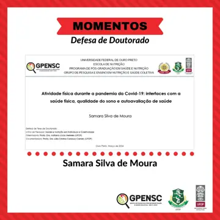
InstitucionalO GPENSC relembra defesa de doutorado da aluna Samara Moura (@mourasamara), que ocorreu no dia 08 de março de 2024, no formato online. . 🔎 A tese de doutorado da Samara, intitulada “Atividade física durante a pandemia de covid-19: Interfaces com a saúde física, qualidade do sono e autoavaliação de saúde”, teve como objetivo avaliar os fatores associados à inatividade física (IF) em residentes da região dos Inconfidentes, Minas Gerais, durante a pandemia da Covid-19. . 👥 Seu estudo foi orientado pela professora Dra. Adriana Lúcia Meireles - @dri_meireles (UFOP) e coorientado pelo professora Dra. Júlia Cristina Cardoso Carraro - @julia_carraro (UFOP). O trabalho contou com as contribuições da banca formada pelas professoras Dra. Aline Dayrell Ferreira Sales - @dayrellferreira (UFMG) e Dra. Lenice Kappes Becker - @lenice_becker (UFOP), pelo professor Luiz Menezes - @luizmenezes__ (UFOP) e pela pesquisadora Dra. Magda do Carmo Parajára - @magdaparajara (UFMG). . 📊 Os resultados da tese da Samara mostram uma associação entre a IF e o aumento do risco cardiovascular. Adicionalmente, a IF demonstrou influenciar negativamente os fatores metabólicos, incluindo a elevação dos níveis séricos da hemoglobina glicada, contribuindo para o aumento das doenças crônicas, como diabetes. . 📈 Além disso, ao buscar compreender a complexidade das interações entre atividade física(AF) e autoavaliação de saúde, observou que a AF não apenas atua na saúde física, mas também contribui para a melhoria em suas percepções individuais de bem-estar. Ademais, os seus achados indicam que uma boa qualidade de sono pode, por sua vez, influenciar positivamente a adesão consistente a prática de AF. . 💡Esses achado reforçam que a prática regular de AF é uma estratégia fundamental associada a repercussões adversas na saúde física, bioquímica e mental durante a pandemia da covid-19. . 🎆 Parabenizamos a Samara pela defesa de doutorado e pela contribuição na ciência do país. Sucesso sempre!
O dia de #tbt foi ontem, mas bora relembrar uma data especial para o GPENSC?
12/04/2024
 Institucional
Institucional
🔙😍 . 🗓️ Nosso tbt de hoje é para lembrar da defesa de mestrado da Wanessa Cecília de Oliveira (@_wanessa.o), que ocorreu no dia 27 de março de 2024, no formato online. . 🔎 A dissertação da Wanessa, intitulada “Consumo alimentar conforme a extensão e propósito de processamento e comportamento sedentário em crianças de cinco a dez anos”, teve como objetivo analisar a associação entre o comportamento sedentário e o consumo alimentar. . 👥 Seu estudo foi orientado pela professora Dra. Adriana Meireles – UFOP (@dri_meireles) e coorientada pelo professor Dr. Luiz Antônio Menezes – UFOP (@luizmenezes__). O trabalho contou com a contribuição da banca formada pela professora Dra. Mayla Toffolo – UFOP ( @maylanut) e pela pesquisadora Dra. Magda Parajará – (@magdaparajara). . 💡Os resultados da dissertação da Wanessa reforçam a importância de promover práticas saudáveis desde a infância e destacam a necessidade de estratégias integradas entre famílias, escolas e autoridades de saúde. Priorizar ações que incentivem a atividade física regular, reduzam o tempo excessivo de tela e promovam o consumo de alimentos naturais e minimamente processados são passos fundamentais para garantir o bem-estar e a qualidade de vida das crianças, tanto no contexto atual quanto nas perspectivas futuras. . 🎆 Parabenizamos a Wanessa pela defesa e pela contribuição na ciência do país.
De olho na telinha: edição de Páscoa
30/03/2024
 Institucional
Institucional
Hoje, entrando na onda da celebração da Páscoa, trouxemos para vocês o momento #InteraçãoGPENSC com o “De olho na telinha”. . 👉🏻 Arraste para o lado e confira o nosso momento interação da semana. . 👀 Conta para gente o que você gostaria de ganhar de presente do coelhinho da Páscoa. . 😇 Participe seguimores!
Defesa de mestrado de Mariana Vidigal
21/03/2024
 Institucional
Institucional
O GPENSC relembra defesa de mestrado da aluna Mariana Cassemira Aparecida Vidigal (@mariana.vidigal), que aconteceu no dia 20 de fevereiro de 2024, no formato online. . 🔎 A dissertação de mestrado da Mariana, intitulada “Consumo de bebidas adoçadas e sintomas de ansiedade, depressão e estresse entre estudantes universitários de Minas Gerais: PADu-multicêntrico”, teve como objetivo analisar os fatores associados ao consumo regular de bebidas adoçadas e sua interface com os sintomas de ansiedade, depressão e estresse. . 👥 Seu estudo foi orientado pela professora Dra. Adriana Lúcia Meireles - @dri_meireles (UFOP) e coorientado pelo professor Dr. Luiz Antônio Menezes - @luizmenezes__ (UFOP). O trabalho contou com a contribuição da banca formada pela professora Dra. Daniela Silva Canella - @dani_canella (UERJ) e pela professora Dra. Raquel de Deus Mendonça - @raquelmendonca_enut (UFOP). . 📊 Os resultados da dissertação da Mariana mostraram que o sexo masculino, consumo irregular de frutas, inatividade física, consumo de tabaco e excesso de peso foram fatores associados ao consumo regular de bebidas adoçadas. Além disso, encontrou que o consumo regular de bebidas adoçadas foi associado aos três sintomas avaliados no presente estudo. Por fim, observou-se um padrão dose-resposta para os sintomas de depressão e estresse, ou seja, os resultados indicam um aumento proporcional desses sintomas, conforme aumento na frequência semanal do consumo das bebidas adoçadas. . 💡Esses achado reforçam a importância da Educação Alimentar e Nutricional (EAN) e de medidas preventivas sobre saúde mental dentro das universidades. . 🎆 Parabenizamos a Mariana pela defesa de mestrado e pela contribuição na ciência do país. Queremos também parabenizá-la pela aprovação no doutorado no PPGSN/UFOP! Sucesso sempre!
Defesa de doutorado de Erica Costa Rodrigues
22/02/2024
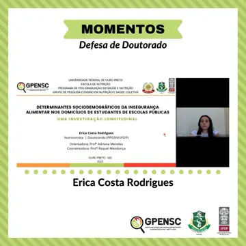
InstitucionalO GPENSC relembra defesa de doutorado da aluna Erica Costa Rodrigues (@costta.erica), que aconteceu no dia 06 de dezembro de 2023, no formato online. . 🔎 A tese de doutorado da Erica, intitulada “Determinantes Sociodemográficos da Insegurança Alimentar nos domicílios de estudantes de escolas públicas: uma investigação longitudinal”, teve como objetivo examinar a trajetória de mudança na situação de insegurança alimentar e seus fatores associados nos domicílios de estudantes da rede municipal de ensino de Mariana e Ouro Preto entre 2020 e 2022. . 👥 Seu estudo foi orientado pela professora Dra. Adriana Lúcia Meireles - @dri_meireles (UFOP) e coorientado pela professora Dra. Raquel de Deus Mendonça - @raquelmendonca_enut (UFOP). O trabalho contou com as contribuições da banca formada pelas professoras Dra. Anelise Andrade de Souza - @andradeanelise (UFOP), Maria Del Carmen Bisi Molina - @mdcarmen.molina (UFOP), Larissa Loures Mendes - @larissalouresmendes (UFMG) e pelo professor Dr. Eliseu Verly Junior - @eliseuverly (UERJ). . 📊 Os resultados da tese da Erica mostraram que durante o período de suspensão das aulas presenciais em função da pandemia de covid-19, foi encontrado elevada prevalência de insegurança alimentar, sendo associada à diminuição da renda familiar, recebimento de cesta básica de alimentos e maior número de crianças no domicílio. Longitudinalmente, observou-se que embora tenha havido redução da insegurança alimentar ao longo do tempo, esse declínio não ocorreu para as famílias extremamente pobres. Fatores interseccionais do chefe da família, como mulheres não brancas, não casadas e residentes em área rural foram significativos para pior situação de insegurança alimentar ao longo do tempo. . 💡Espera-se contribuir com evidências científicas para subsidiar ações de mitigação da fome e da insegurança alimentar adequados as necessidades regionais. . 🎆 Parabenizamos a Erica pela sua defesa de doutorado e pela contribuição com o PPGSN e para a ciência do país. Desejamos muito sucesso!
De olho na telinha: carnaval e BBB
15/02/2024
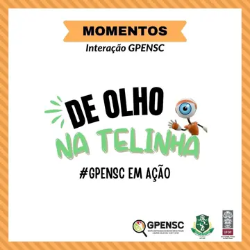
InstitucionalHoje, entrando na onda do BBB e o feriado de carnaval, trouxemos para vocês o momento #InteraçãoGPENSC com o “De olho na telinha”. . 👉🏻 Arraste para o lado e confira o nosso momento interação da semana. . 👀 Conta para gente qual é seu pódio da semana! . 😇 Que comece os jogos com os nossos seguimores!
Primeira reunião do GPENSC em 2024
08/02/2024
 Institucional
Institucional
Nosso #tbt é bem recente para lembrar da primeira reunião do grupo, que aconteceu no dia 05 de fevereiro de 2024. . 👥 Neste encontro, tivemos um momento de apresentação e boas-vindas, especialmente aos novos menbros, com direito a falar uma música que define o seu atual momento. Além disso, discutimos as ideias e atividades para o ano de 2024. Estamos animados com o retorno! . ✨ Que o GPENSC possa ser um grupo de apoio mútuo, trocas de conhecimento e aprendizado, reflexão cítrica, produção e ciência! . 🫂 Como grupo, que possamos aprender e crescer juntos a cada dia e encontro! E lembrem-se: “encare a vida como um processo, em cada etapa está favorecendo o seu crescimento, suas conquistas e o desenvolvimento de suas habilidades.” . 🗣️ Continue nos acompanhando e fique por dentro de todas as nossas atividades. . Com carinho, GPENSC 💚❤️🧡
Mensagem de Natal do GPENSC
25/12/2023
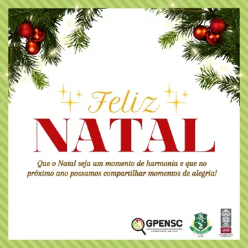
InstitucionalEntão é Natal! 🎄 . ✨ Natal é tempo de esperança, amor e reflexão. . 💫 Que a alegria do Natal invada sua casa e faça morada por todos os dias! Que tenhamos gratidão por tudo que vivemos e por esse novo ciclo que está chegando! . 🥰 Desejamos a todos um Feliz Natal! . ❤️ Com amor e carinho, esses são os votos do GPENSC!
Retrospectiva do GPENSC em 2023
21/12/2023
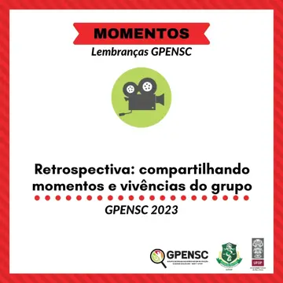
InstitucionalNo post de hoje, vamos rever e relembrar alguns momentos especiais do GPENSC ao longo de 2023. . 🎆 Nesse ano, tivemos muitas conquistas e momentos para celebrar. Encerramos 2023 com imensa satisfação e orgulho, refletindo sobre os momentos e planejando para que 2024 tenhamos ainda mais objetivos alcançados. . 👉🏻 Arraste para o lado e confira a retrospectiva do GPENSC. . 🫂 Somos felizes por ter cada seguidor acompanhando e engajando nosso perfil!Que venha 2024 ainda com mais ciência!
De olho na telinha: fim de período e férias
19/12/2023
 Institucional
Institucional
Hoje, entrando na onda do fim de período e das férias, trouxemos para vocês o momento #InteraçãoGPENSC com o "De olho na telinha". . 👉🏻 Arraste para o lado e confira o nosso momento interação da semana. . 👀 E ai, você ou algum amigo já esteve nessa situação? Conta para gente nos comentários! . 🗣️ Não se esqueça de compartilhar com os amigos.
Última reunião do GPENSC em 2023
14/12/2023
 Institucional
Institucional
O GPENSC relembra última reunião do nosso grupo, que aconteceu no dia 04 de dezembro de 2023. . 💟 Foi um encontro muito especial, em que tivemos a oportunidade de conversar e compartilhar nossas perspectivas sobre as reuniões presenciais, nossas dificuldades, alegrias e desejos para o próximo ano. . 💫 Sabemos que 2023 foi um ano desafiador para muitos de nós, mas fizemos desse encontro especial e acolhedor. Para 2024, desejamos que o GPENSC continue sendo espaço de apoio mútuo, reflexão crítica, troca de conhecimento, aprendizagem, de fazer e discutir ciência, além de ser um espaço para amizades, respeito e acolhimento! . Agradecemos a todos vocês que acompanharam nosso grupo! Muito obrigado a todos! 💚❤️🧡
Defesa de doutorado de Magda do Carmo Parajára
30/11/2023
 Institucional
Institucional
O GPENSC relembra defesa de doutorado da aluna Magda do Carmo Parajára (@magdaparajara), que aconteceu no dia 31 de outubro de 2023, no formato híbrido. . 🔎 A tese de doutorado da Magda, intitulada “Carga de doenças crônicas não transmissíveis atribuível a fatores de risco alimentares e seu custo financeiro para o Sistema Único de Saúde no Brasil”, teve como objetivo analisar a carga de doenças crônico não transmissíveis (DCNT) atribuível ao consumo de ácidos graxos trans (AGT) e consumo insuficiente de frutas, hortaliças e grãos integrais para a população brasileira entre 1990-2019 e o custo financeiro do consumo de AGT para o Sistema Único de Saúde (SUS) em 2019. . 👥 Seu estudo foi orientado pela professora Dra. Adriana Lúcia Meireles (UFOP) e coorientado pelo professor Dr. Eliseu Verly Junior - @eliseuverly (UERJ). O trabalho contou com as contribuições da banca formada pela professora Dra. Ísis Eloah Machado - @isiseloah (UFOP) e pelos professores Drs. Martin O’Flaherty (University of Liverpool), Eduardo Augusto Fernandes Nilson - @edu_nilson (Fiocruz) e Rafael Moreira Claro - rafael_claro (UFMG). . 📊 Os resultados da tese da Magda mostraram que a alimentação elevada em AGT e insuficiente em frutas, hortaliças e grãos integrais contribuem substancialmente para a carga de DCNT e custos para o SUS no Brasil, especialmente em estados com menor nível socioeconômico. . 💡 Os achados reforçam a importância de políticas alimentares para reduzir a carga de doença na população brasileira. . 🎆 Parabenizamos a Magda pela sua defesa de doutorado e pela contribuição com o PPGSN e para a ciência do país. Desejamos muito sucesso!
Entrevista motivacional no acompanhamento de pessoas com hipertensão
09/11/2023
 Institucional
Institucional
O GPENSC relembra qualificação de doutorado da aluna Raíssa de Melo Matos Ferreira (@raissa.mmatos), que ocorreu no dia 29 de setembro de 2023, via Google Meet. . 🔎 O projeto de doutorado da Raíssa, intitulado “Triagem de hipertensos e efetividade da entrevista motivacional sobre o controle da pressão arterial e consumo de frutas, verduras e legumes (FVL) em usuários da Atenção Primária à Saúde (APS)”, tem como objetivo elaborar e validar um instrumento de triagem para hipertensão arterial sistêmica (HAS), bem como verificar a efetividade de uma intervenção pautada na entrevista motivacional e no Guia Alimentar para a População Brasileira para o controle da HAS e melhora do consumo de FLV em usuários da APS de Ouro Preto-MG. . 👥 Seu estudo é orientado pela professora Dra. Júlia Carraro - @julia_carraro (UFOP) e coorientado pelo Dr. Luiz Menezes - @menezesnutri (UFOP). O trabalho contou com as contribuições da banca formada pelas professoras Dra. Lidiane Bernardes -@lidibernardes (UNIRV), Dra. Mariana Menezes -@maricarvalhomenezes (UFOP) e Dra. Erika dos Reis - @erikacareis (UFOP) . 📊 Os resultados preliminares indicam um questionário adequado na análise de conteúdo, análises fatoriais e na confiabilidade, sendo um bom instrumento para atender os objetivos de triagem de HAS na APS. . 💡Espera-se que os achados contribua para ampliar o entendimento sobre os fatores individuais relacionados a HAS, auxiliando na consolidação do conhecimento científico sobre a temática, principalmente no controle da HAS e produção de tecnologias para APS. . 🎆 Parabenizamos a Raíssa pela sua aprovação na qualificação e pela contribuição para a ciência do país. Desejamos à aluna sucesso nas próximas etapas!
De olho na telinha: publicações científicas
19/10/2023
 Institucional
Institucional
Hoje, entrando na onda das publicações científicas, trouxemos para vocês o momento #InteraçãoGPENSC com o "De olho na telinha". . 👉🏻 Arraste para o lado e confira o nosso momento interação da semana. . 👀 E ai, você ou algum amigo já vivenciou essa situação? Conta para gente nos comentários! . 🗣️ Não se esqueça de compartilhar com os amigos.
Compartilha GPENSC explica a técnica do mapa falante
17/10/2023
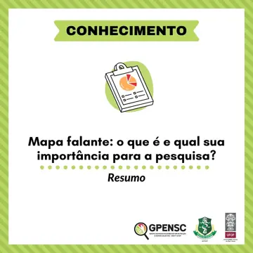
Divulgação científicaAfinal, você sabe o que é e qual o objetivo? . 📚 Mapa falante é uma técnica utilizada para fazer uma leitura de um determinado fenômeno, situação ou território, a partir de características específicas e suas múltiplas dimensões. . 📝 Na sua construção, os participantes visualizam o cenário que irão mapear e fazem uma representação coletiva de como percebem aquele território, considerando o espaço físico e as suas particularidades. Isso permite a compreensão, análise crítica da situação encontrada e o aprofundamento de questões para propor ações voltadas especificamente para o espaço analisado. . 👉🏻 Arraste para o lado e confira mais sobre o tema. . 🗣️ Gostou da postagem? Já tinha escutado falar sobre esse tema? Não deixe de conferir essa e as outras postagens e compartilhar com os amigos.
Defesa de mestrado de Sarah Beatriz Resende Tinoco
05/10/2023
 Institucional
Institucional
O GPENSC relembra defesa de mestrado da Sarah Beatriz Resende Tinoco (@sarahbeatriz_rt), que ocorreu no dia 08 de agosto de 2023, via Google Meet. . 🔎 A dissertação da Sarah, intitulada: “Associação da inatividade física e do comportamento sedentário com a hipertensão em egressos de universidades mineiras após seis anos de seguimento (Estudo CUME)”, teve como objetivo analisar a prevalência de inatividade física e comportamento sedentário e sua associação com a incidência de hipertensão arterial (HA) em egressos de universidades mineiras. . 👥 Seu estudo foi orientado pela professora Dra. Adriana Lúcia Meireles (@dri_meireles) e coorientado pela professora Dra. Raquel de Deus Mendonça (@raquelmendonca_enut). O trabalho contou com as contribuições da banca formada pelos professores Dr. Adriano Marçal Pimenta - @adrianompimenta (UFPR) e Dra. Lenice Kappes Becker Oliveira - @lenice_becker (UFOP). . 📊 Os resultados da dissertação da Sarah demonstraram que a inatividade física não se mostrou associada à HA. Além disso, observou-se que dentre os participantes com 45 anos ou mais, os que apresentavam comportamento sedentário maior ou igual a 6h/dia tinham 41% mais chances de desenvolver HA. . 🎆 Parabenizamos a Sarah pela defesa de mestrado e pela contribuição com o PPGSN e para a ciência do país!
De olho na telinha: atividades acadêmicas
27/09/2023
 Institucional
Institucional
Hoje, entrando na onda das atividades acadêmicas, trouxemos para vocês o momento #InteraçãoGPENSC com o "De olho na telinha". . 👉🏻 Arraste para o lado e confira o nosso momento interação da semana. . 👀 E ai, você ou algum amigo já esteve nessa situação? Conta para gente nos comentários! . 🗣️ Não se esqueça de compartilhar com os amigos.
Defesa de doutorado de Hillary Nascimento Coletro
24/08/2023
 Institucional
Institucional
O GPENSC relembra defesa de doutorado da Hillary Nascimento Coletro (@hillarycoletro), que ocorreu no dia 26 de julho de 2023, de forma híbrida. . 🔎 A tese de doutorado da Hillary, intitulada: “Consumo alimentar segundo processamento e suas interfaces com a saúde humana durante a pandemia da covid-19: um estudo sobre saúde mental e insegurança alimentar”, teve como objetivo principal avaliar a associação entre o consumo alimentar segundo extensão e propósito de processamento com desfechos relacionados à saúde durante a pandemia da covid-19, em adultos de duas cidades da região sudeste do Brasil. . 👥 Seu estudo foi orientado pela professora Dra. Mariana Carvalho de Menezes - @maricarvalhomenezes (UFOP). O trabalho contou com as contribuições da banca formada pelas professoras Dra. Anelise de Souza - @andradeanelise (UFOP), Dra. Renata Adrielle Lima - @renataadriellenutri (UFOP), Dra. Mariana Souza Lopes (UFPB) e Dra. Naiza Nayla Bandeira de Sá (UFPA). . 📊 O doutorado da Hillary originou três artigos. Os achados evidenciam que o maior consumo de alimentos ultraprocessados pode ter impactos negativos à saúde mental e à segurança alimentar, uma vez que os alimentos in natura/minimamente processados são benéficos para ambas as situações. . 💭 Mais detalhes sobre os resultados dos artigos, podem ser conferidos nos comentários. . 🎆 Parabenizamos a Hillary pela finalização do doutorado e pela contribuição com o PPGSN e para a ciência do país. Desejamos muito sucesso!
De olho na telinha: fim de período
10/08/2023
 Institucional
Institucional
Hoje, entrando na onda do fim de período, trouxemos para vocês o momento #InteraçãoGPENSC com o "De olho na telinha". . 👉🏻 Arraste para o lado e confira o nosso momento interação da semana. . 👀 E ai, como vocês reagem quando te questionam sobre a escrita do TCC, dissertação ou tese? Conta para gente nos comentários! . 🗣️ Não se esqueça de compartilhar com os amigos.
Equipe do GPENSC: mestranda Hiliane Karolline de Oliveira Silva
01/08/2023
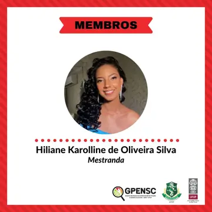
InstitucionalO GPENSC apresenta mais uma de nossas pesquisadoras, a mestranda Hiliane Karolline de Oliveira Silva (@nutrikarolloliveira). . 👩🏻🎓 Hiliane é nutricionista formada pela Universidade Federal de Ouro Preto (UFOP). Possui experiência na nutrição clínica com ênfase em emagrecimento e tratamento de doenças. Atualmente, é mestranda no Programa de Pós-graduação em Saúde e Nutrição (PPGSN/UFOP - @ppgsn.ufop), na linha de pesquisa Saúde e Nutrição em indivíduos e Coletividades. . 📚 É pesquisadora do projeto Coorte das Universidades Mineiras (CUME - @projeto_cume) e sua pesquisa de mestrado é intitulada "Associação entre depressão, escolhas e preferências alimentares em egressos universitários de Minas Gerais", sob orientação da professora Dra. Júlia Carraro (@julia_carraro). . 🔎 Quer saber mais sobre o tema da Hiliane? Continue nos acompanhando e fique por dentro deste e de outros projetos desenvolvidos pelo nosso grupo!
Encontros do GPENSC em junho e julho
27/07/2023
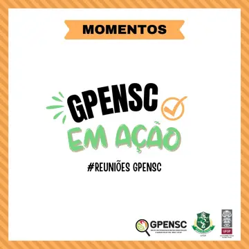
InstitucionalNosso #tbt é bem recente, para lembrar de alguns encontros do GPENSC que ocorreram no mês de junho e julho. . 👥 Durante os encontros, tivemos momentos especiais com trocas de experiências e aprendizados entre os membros, além de um momentos de afeto e companheirismo! . 👉🏻 Arraste para o lado e confira nossos momentos! . 🗣 Continue nos acompanhando e fique por dentro de todas as nossas atividades e projetos!
GPENSC em Ação: atividades acadêmicas
04/07/2023
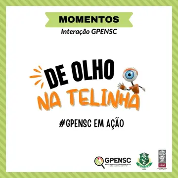
InstitucionalHoje, entrando na onda das atividades acadêmicas, trouxemos para vocês o momento #InteraçãoGPENSC com o "GPENSC em Ação". . 👉🏻 Arraste para o lado e confira o nosso momento interação da semana. . 👀 E ai, já ocorreu com você ? Conta para gente nos comentários! . 🗣️ Não se esqueça de compartilhar com os amigos.
Arraiá do GPENSC: interação de festas juninas
13/06/2023
Hoje, entrando na onda das festas juninas, trouxemos para vocês o momento #InteraçãoGPENSC com o "Arraiá do GPENSC". . 👉🏻 Arraste para o lado e confira o nosso momento interação da semana. . 👀 E ai, você é de qual time ? Conta para gente nos comentários! . 🗣️ Não se esqueça de compartilhar com os amigos.
A rotina acadêmica em De olho na telinha
29/05/2023
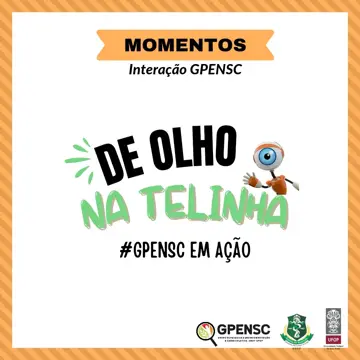
InstitucionalHoje, entrando na onda de nossas atividades acadêmicas, trouxemos para vocês o momento #InteraçãoGPENSC com o "De olho na telinha". . 👉🏻 Arraste para o lado e confira o nosso momento interação da semana. . 👀 E ai, já ocorreu isso com vocês? Conta para gente nos comentários! . 🗣️ Não se esqueça de compartilhar com os amigos.
Processamento dos alimentos e insônia na coorte CUME
27/04/2023
 Institucional
Institucional
O GPENSC relembra de três qualificações de mestrado que ocorreram em março de 2023. . 🗓️ No dia 15 de março, de forma online, aconteceu a qualificação de mestrado do aluno Felipe Reis Stravaux (@felipebauson). . 🔎 O projeto de mestrado do Felipe, intitulado “Consumo de alimentos segundo classificação nova e prevalência de insônia em egressos de universidades mineiras: Coorte CUME”, é orientado pela professora Dra. Raquel de Deus Mendonça - @raquelmendonca_enut (UFOP) e coorientado pela professora Dra. Renata Adrielle Lima Vieira - @renataadriellenutri (UFOP). Sua banca de qualificação contou com a colaboração do professor Dr. Adriano Marçal Pimenta - @adrianompimenta (UFPR) e da professora Dra. Adriana Lúcia Meireles – @dri_meireles (UFOP). . 🗓️ No dia 27 de março, de forma presencial, ocorreu a qualificação da mestranda Wanessa Cecília de Oliveira (@_wanessa.o). . 🔎 O projeto de mestrado da Wanessa, intitulado “Consumo alimentar segundo o propósito e a extensão do processamento durante a pandemia da Covid-19, em crianças de cinco a dez anos em Ouro Preto, MG”, é orientado pela professora Dra. Adriana Lúcia Meireles – @dri_meireles. Sua banca de qualificação contou com as contribuições da professora Dra. Mayla Cardoso - @maylanut (UFOP) e do Dr. Luiz Antônio Menezes - @luizmenezes__ (UFOP). 🗓️ No dia 28 de março, de forma híbrida, ocorreu a qualificação da mestranda Mariana Vidigal (@mariana.vidigal). . 🔎 O projeto de mestrado da Mariana, intitulado “Consumo de bebidas açucaradas e sintomas de transtorno de ansiedade, depressão e estresse entre estudantes universitários de Minas Gerais: PADu-Multicêntrico”, é orientado pela professora Dra. Adriana Lúcia Meireles. Sua banca de qualificação contou com as contribuições da professora Dra. Daniela Canella - @dani_canella (UERJ) e do Dr. Luiz Antônio Menezes. . 🎇 Parabenizamos o Felipe, a Wanessa e a Mariana pela aprovação em suas qualificações e pela contribuição na ciência do país. Desejamos sucesso nas próximas etapas!
Defesa de mestrado de Michelle Izabel Ferreira Mendes
13/04/2023
 Institucional
Institucional
O GPENSC relembra defesa de mestrado da Michelle Izabel Ferreira Mendes (@michellef80mendes), que ocorreu no dia 14 de março de 2023, via Google Meet. . 📕 A dissertação da Michelle, intitulada " Consumo de carne vermelha e processada e a incidência de hipertensão arterial: ELSA-Brasil coorte", teve como objetivo investigar a associação entre o consumo de carne vermelha e processada e a ocorrência de novos casos de hipertensão arterial (HA) em participantes do Estudo Longitudinal de Saúde do Adulto (ELSA-Brasil). . 👥 Seu estudo foi orientado pela professora Dra. Maria del Carmen Bisi Molina - @mdcarmen.molina (UFES) e coorientado pela professora Dra. Raquel de Deus Mendonça - @raquelmendonca_enut (UFOP) e Dra. Taísa Sabrina Silva Pereira - taisa.sabrina (Universidad de las Américas Puebla). . 📊 Os resultados da dissertação da Michelle demonstram que após 3,9 anos de seguimento, identificou-se 1.186 novos casos de HA. Além disso, os resultados indicam que o consumo de carne vermelha não apresentou impacto negativo na saúde dos participantes. Todavia, foi visto que o consumo elevado de carne processada aumentou o risco de desenvolvimento de HA em 1,3 vezes. . 🎉 Parabenizamos a Michelle pela sua defesa de mestrado e pela contribuição para a ciência do país!
De olho na telinha acompanha a rotina de estudos
04/04/2023
 Institucional
Institucional
Hoje, entrando na onda de nossas atividades acadêmicas, trouxemos para vocês o momento #InteraçãoGPENSC com o "De olho na telinha". . 👉🏻 Arraste para o lado e confira o nosso momento interação da semana. . 👀 E ai, como você reage em uma situação dessas? Conta para gente nos comentários! . 🗣️ Não se esqueça de compartilhar com os amigos.
O dia de #tbt foi ontem, mas bora relembrar uma data especial para o GPENSC?
31/03/2023
 Institucional
Institucional
🔙😍 . 🗓️ Nosos #tbt de hoje é para lembrar da defesa de mestrado da Tainá Cristina Damasceno Silva (@tainacdamasceno), que ocorreu dia no dia 16 de fevereiro de 2023, de forma híbrida. . 🔎 A dissertação da Tainá, intitulada “Validação de materiais educativos digitais para o manejo da hipertensão arterial na Atenção Primária à Saúde pautados no Guia Alimentar para a População Brasileira”, teve como objetivo validar materiais educativos de apoio elaborados baseados no Guia Alimentar para a População Brasileira para usuários com diagnóstico de hipertensão arterial (HA) na Atenção Primária à Saúde (APS). . 👥 Seu estudo foi orientado pela professora Dra. Raquel de Deus Mendonça - @raquelmendonca_enut (UFOP) e coorientado pela professora Dra. Júlia Cristina Cardoso Carraro - @julia_carraro (UFOP). O trabalho contou com as contribuições da banca composta pelas professoras Dra. Mariana Carvalho de Menezes - @maricarvalhomenezes (UFOP) e Dra. Renata Andrade de Medeiros Moreira (UFT). . 💡Os resultados da dissertação da Tainá demonstram que os materiais educativos digitais foram validados para serem utilizados no manejo da HA como apoio ao atendimento nutricional individual. . 🎆 Parabenizamos a Tainá pela defesa de mestrado e pela contribuição na ciência do país. Queremos também parabenizá-la pela aprovação no doutorado no PPGSN/UFOP! Sucesso sempre!
De olho na telinha: a rotina das publicações científicas
21/03/2023
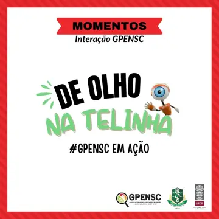
InstitucionalHoje, ainda na tour das publicações científicas, trouxemos para vocês o momento #InteraçãoGPENSC com o "De olho na telinha". . 👉🏻 Arraste para o lado e confira o meme da semana. . 👀 Conta pra gente o que você achou sobre essa nova lista de revistas predatórias. . 🗣️ Ah, não se esqueça de compartilhar com os amigos. Fala se essa postagem não merece um 🍪?
Defesa de mestrado de Thaís Calcagno Vidon Bruno
16/03/2023
O GPENSC relembra defesa de mestrado da Thaís Calcagno Vidon Bruno (@t.calcagno), que ocorreu no dia 15 de fevereiro de 2023, via Google Meet. . 🔎 A dissertação da Thaís, intitulada “Percepção de suporte social, consumo alimentar e ganho de peso em estudantes universitários durante a pandemia de covid-19: estudo PADu-covid", teve como objetivo validar uma escala de percepção de suporte social durante a pandemia e avaliar sua associação com o consumo alimentar e ganho de peso em estudantes de graduação de uma instituição de ensino superior do estado de Minas Gerais. . 👥 Seu estudo foi orientado pela professora Dra. Julia Cristina Cardoso Carraro - @julia_carraro (UFOP) e coorientado pela professora Dra. Sabrina Martins Barroso - @sabarroso (UFTM). O trabalho contou com as contribuições da banca composta pelas professoras Dra. Raquel de Deus Mendonça - @raquelmendonca_enut (UFOP) e Dra. Daniela Saes Sartorelli (USP). . 📈 Os resultados da dissertação da Thaís apresentam uma escala com atributos de validade para a avaliação da percepção de suporte social em estudantes universitários em período de restrição social. Ademais, os resultados indicam que houve um aumento da percepção de suporte social entre estudantes universitários e foi visto que ter um maior suporte social está relacionado a uma alimentação de melhor qualidade. . 🎆 Parabenizamos a Thais pela sua defesa de mestrado e pela contribuição para a ciência do país!
Consumo de álcool e condições socioeconômicas na pandemia
02/03/2023
 Institucional
Institucional
O GPENSC relembra qualificação de doutorado da aluna Amanda Popolino Diniz (@amandapopolinonutri), que ocorreu no dia 23 de dezembro de 2022, via Google Meet. . 📝 O projeto de doutorado da Amanda, intitulado “Consumo de bebidas alcoólicas e sua interface com as condições socioeconômicas e demográficas durante a pandemia da covid-19: COVID-Inconfidentes”, tem como objetivo avaliar a prevalência do consumo de bebidas alcoólicas em residentes da região dos Inconfidentes/MG durante a pandemia da covid-19 e os fatores socioeconômicos associados. . 👥 Seu estudo é orientado pela professora Dra. Adriana Lúcia Meireles (@dri_meireles ) e coorientado pela professora Dra. Raquel de Deus Mendonça (@raquelmendonca_enut ). O trabalho contou com as contribuições da banca composta pelo professor Dr. Crizian Saar (UFMG) e pelas professoras Dras. Anelise Souza - @andradeanelise (UFOP), Ísis Eloah - @isiseloah (UFOP) e Júlia Carraro - @julia_carraro (UFOP). . 📊 Os resultados preliminares indicam uma prevalência do consumo de bebidas alcoólicas de 55,5% durante a pandemia da covid-19, sendo observada relação com o sexo, faixa etária, número de filhos, grau de escolaridade, estrutura domiciliar e atividade laboral. . 📍Os resultados reforçam a importância de programas que visem a promoção da saúde e redução do consumo de bebidas alcoólicas, para que os danos à saúde da população sejam minimizados. . 🎆 Parabenizamos a Amanda pela sua aprovação na qualificação e pela contribuição para a ciência do país. Desejamos à aluna sucesso nas próximas etapas!
Leitura recomendada: Donos do Mercado
23/02/2023
 Institucional
Institucional
O GPENSC recomenda o livro “Donos do Mercado: como os grandes supermercados exploram trabalhadores, fornecedores e a sociedade” escrito por João Peres e Victor Matioli, ambos profissionais do O Joio e O Trigo. . 📚 O livro foi publicado em outubro de 2020 e conta a história dos grandes supermercados no Brasil, abordando como eles surgiram e cresceram tanto. Ainda, os autores abordam sobre os impactos que esse gigantismo traz para os consumidores e trabalhadores em geral. . 🎯 O objetivo do livro é tornar o leitor consciente dos impactos que estas grandes redes de supermercados tem em nossas vidas, e como eles afetam a produção, transporte e comercialização de alimentos no Brasil. . 👉🏻 Arraste para o lado e confira. . 🗣️ Aproveita e já salva esse post e não deixe de marcar aqui nos comentários ou enviar essa publicação para aquele(a) amigo(a) que vai gostar dessa indicação.
Primeira reunião do GPENSC em 2023
16/02/2023
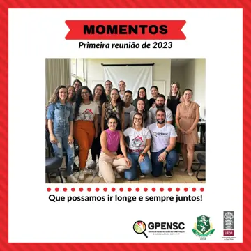
InstitucionalNosso #tbt é bem recente, para lembrar da primeira reunião do GPENSC, que aconteceu no dia 13 de fevereiro de 2023. . 👥 Foi um momento de reencontro, trocas e boas-vindas. No nosso primeiro encontro, também fizemos uma retrospectiva das atividades de 2022 e discutimos ideias e projetos para o ano de 2023. Estamos animados com esse retorno! . 💟 Que o nosso grupo possa ser um espaço de apoio mútuo, reflexão crítica, troca de conhecimento, aprendizagem, de fazer e discutir ciência! Que os laços que nos unem sejam fortalecidos para que possamos ir cada vez mais longe, colhendo os frutos do nosso trabalho. . 🗣 Continue nos acompanhando e fique por dentro de todas as nossas atividades e projetos!
Ambiente alimentar e insegurança alimentar em dois municípios
02/02/2023
 Institucional
Institucional
O GPENSC relembra qualificação de doutorado da aluna Irene Justiniano (@irenecsj_), que ocorreu no dia 20 de dezembro de 2022, via Google Meet. . 🔎 O projeto de doutorado da Irene, intitulado: “Ambiente alimentar durante a pandemia da covid-19 em dois municípios brasileiros e sua relação com a insegurança alimentar”, tem como objetivo analisar as características do ambiente alimentar e sua relação com a insegurança alimentar nos municípios de Ouro Preto e Mariana (MG) durante a pandemia da covid-19. . 👥 Seu estudo é orientado pela professora Dra. Mariana Carvalho de Menezes (@maricarvalhomenezes). O trabalho contou com as contribuições da banca formada pelas professoras Dras. Milene Cristine Pessoa - @milenepessoa1 (UFMG), Érika Cardoso dos Reis - @erikacareis (UFOP), Adriana Lúcia Meireles - @dri_meireles (UFOP), e pelo professor Dr. Paulo César Castro Pereira Júnior - @pc.castrojr (UFRJ). . 📈 Os resultados preliminares demonstram uma maior disponibilidade de locais que comercializam alimentos ultraprocessados (cerca de 70%) em ambos os municípios. Dentre os domicílios de escolares avaliados, 69,6% estavam em situação de insegurança alimentar. A pior percepção sobre o preço de frutas e hortaliças foi associada a baixa disponibilidade de alimentos in natura/minimamente processados no domicílio, e com a insegurança alimentar. . 💡 Com o estudo, espera-se compreender as repercussões da covid-19 sobre o ambiente alimentar e a insegurança alimentar, além de contribuir para a implementação de intervenções e políticas de saúde pública que possam minimizar os impactos sobre a alimentação e a saúde. . 🌌 Parabenizamos a Irene pela aprovação na sua qualificação e pela contribuição para a ciência do país. Desejamos à aluna sucesso nas próximas etapas!
HipertenSUS realiza atividades em Ouro Preto
31/01/2023
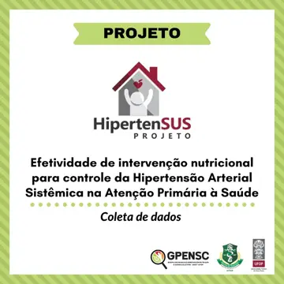
InstitucionalDurante os meses de fevereiro e março, a equipe do projeto HipertenSUS, em parceria com a Secretaria Municipal de Saúde de Ouro Preto (@prefeituraouropreto), irá realizar a última coleta de dados. . 🎯 O objetivo dessa etapa é reavaliar os pacientes após 3 meses da finalização dos acompanhamentos, para verificar se houve manutenção das mudanças no estilo de vida. . ⚠️ Então, se você participa do projeto HipertenSUS, fique atento! Nos próximos dias, a equipe entrará em contato para agendar sua consulta! . ✅ A participação dos pacientes é de extrema importância para o projeto! O HipertenSUS só é possível por causa de vocês! Contamos com a colaboração de todos mais uma vez! . 🗣️ Continuem nos acompanhando para saber mais sobre esse e outros projetos desenvolvidos pelo nosso grupo. . AbraSUS ❤️
Doutorado sanduíche de Thaís Sabião
26/01/2023
 Institucional
Institucional
Hoje, nosso post é para compartilhar com vocês sobre o doutorado sanduíche de uma pesquisadora do nosso grupo, a Thaís Sabião (@thasabiao), discente do PPGSN/UFOP (@ppgsn.ufop), orientada pela professora Dra. Júlia Carraro (@julia_carraro). . ✈️ A Thaís foi contemplada com uma bolsa do Conselho Nacional de Desenvolvimento Científico e Tecnológico (CNPq - @cnpq_oficial) de Apoio à Pesquisa Científica, Tecnológica e de Inovação no exterior, para realizar sua mobilidade acadêmica em Pamplona, Espanha, entre janeiro e julho de 2023. . 🏫 A instituição de destino foi a Universidade de Navarra (@universidaddenavarra), na qual a aluna irá desenvolver uma análise longitudinal sobre os fatores associados à depressão utilizando dados da coorte Seguimiento Universidad de Navarra (Projeto SUN). Na foto, a aluna acompanhada da Profa. Dra Maira Bes Rastrollo, sua orientadora no exterior, e do Prof. Dr. Miguel Ángel Martínez González, fundador do projeto SUN. . 📚 Durante esse período, foi oportunizado à aluna a integração em grupos de estudos, acompanhamento de disciplinas e aprendizagem de novas análises estatísticas. . 👉🏻 Arraste para o lado e confira! . 🗣️ E continue nos acompanhando, para saber mais sobre as novidades e trabalhos desenvolvidos pelo nosso grupo!
De olho na telinha: BBB e volta às aulas
24/01/2023
 Institucional
Institucional
Hoje, entrando na onda do BBB e a volta das atividades acadêmicas, trouxemos para vocês o momento #InteraçãoGPENSC com o "De olho na telinha". . 👉🏻 Arraste para o lado e confira o nosso momento interação da semana. . 👀 E ai, quem é você na vida acadêmica? Conta para gente nos comentários! . 😇 Que comece o jogo com os nossos seguimores! . 🗣️ Não se esqueça de compartilhar com os amigos. Essa postagem merece um 🍪, né?
Mensagem de fim de ano do GPENSC
31/12/2022
 Institucional
Institucional
✨ Um novo ano se aproxima e com ele temos a oportunidade de olhar para o passado com serenidade, respeito e gratidão, além de confiar em um futuro com mais esperança e otimismo. . 💌 Que possamos fazer desse novo ano, um recomeço de tudo que é bom e nos faz bem! É hora de repensar nossos valores, corrigir nossos passos, renovar os sentimentos positivos, cuidar e se cuidar, planejar e replanejar, batalhar e prosperar. É hora de fazer renascer os velhos sonhos e ser feliz. INFINITAMENTE FELIZ! . 🫂 Agradecemos imensamente a todos que estiveram conosco em 2022, seja interagindo em nossas postagens ou participando do nosso grupo. Que possamos continuar cada vez mais juntinhos em 2023! . 🌠 Feliz Ano Novo da família GPENSC para sua família! . Com carinho, Equipe GPENSC 💚❤️🧡
Mensagem de Natal do GPENSC
25/12/2022
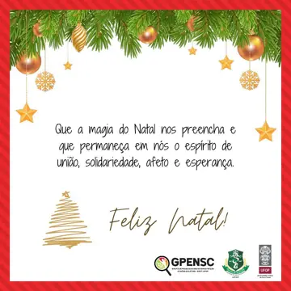
InstitucionalEntão é Natal! . ✨ Natal é tempo de esperança e reflexão. . 💫 Que esta data tão simbólica aprofunde os nossos sentimentos, aprimore nosso ser e amplifique a nossa sensibilidade de olhar para outro, para nós mesmos e para tudo que há de mais belo no nosso entorno. Que aprendamos mais sobre a partilha, compreensão e todas as coisas que verdadeiramente importam. Que estejamos sempre juntos dos que amamos, celebrando a vida. Que a fé nos direcione, que a coragem nos acompanhe e que a felicidade nos preencha. . 🥰 Desejamos a todos um Feliz Natal! . ❤️ Com amor e carinho, esses são os votos do GPENSC!
Compartilha GPENSC: o que é comer emocional?
24/12/2022
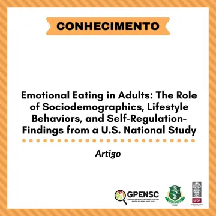
Divulgação científicaMas por que estudar sobre comer emocional? . A alimentação emocional é caracterizada pela tendência de comer demais em resposta a emoções negativas e tem sido frequentemente associada ao ganho de peso. . 🎯 O objetivo do artigo foi avaliar a relação entre fatores individuais e socioeconômicos, comportamentos de saúde e autorregulação com padrões alimentares emocionais entre adultos americanos. . 📈 Foi realizada um estudo transversal com 5.863 participantes da Pesquisa de Hábitos de Saúde da Família. A regressão logística multivariada e ordenada foram utilizadas para examinar a relação entre a frequência do desejo de comer quando emocionalmente perturbado (nunca, raramente, às vezes, frequentemente e muito frequentemente) e as variáveis independentes. . 📊 Os achados do estudo indicam que 20,5% dos participantes tendiam a comer emocionalmente frequentemente ou muito frequentemente. Ser do sexo feminino, branco não hispânico e de idade mais jovem foram fatores relacionados a uma maior probabilidade de comer emocionalmente. Além disso, a incapacidade de adiar a gratificação (impaciência) foi relacionada a um aumento de 18,0% na probabilidade do comer emocional (IC95% 1,05-1,33). Além disso, a alimentação emocional foi significativamente relacionada ao consumo mais frequente de fast-food. . 🔎 Em conclusão, foi observado que um quinto dos adultos americanos relataram comportamento alimentar emocional frequentemente ou muito frequentemente, sendo mais comum entre os mais jovens adultos, brancos não hispânicos, aqueles com diploma universitário e com dificuldade em atrasar gratificação imediata. . 💡 Os resultados ressaltam a importância da elaboração e implementação de programas e intervenções direcionadas que melhorem as habilidades de regulação emocional, e que também sejam voltadas à abordagem de comportamentos não saudáveis, como o consumo de fast-food. . 👉🏻 Arraste para o lado e confira o resumo do artigo.
Última reunião do GPENSC em 2022
22/12/2022
 Institucional
Institucional
O GPENSC relembra última reunião do nosso grupo, que aconteceu no dia 12 de dezembro de 2022. . 💟 Foi um encontro muito especial, em que tivemos a oportunidade de conversar e compartilhar nossas perspectivas sobre as reuniões presenciais, nossas dificuldades, alegrias e desejos para o próximo ano. Além disso, foi um momento de reencontro com a doutoranda Magda Parajará, que compartilhou um pouco sua vivência em Liverpool. . 💫 Sabemos que 2022 foi um ano desafiador para muitos de nós, mas fizemos desse encontro especial e acolhedor. Para 2023, desejamos que o GPENSC continue sendo espaço de apoio mútuo, reflexão crítica, troca de conhecimento, aprendizagem, de fazer e discutir ciência, além de ser um espaço para amizades, respeito e acolhimento! . Agradecemos a todos vocês que acompanharam nosso grupo! Gratidão é a palavra que nos define! 💚❤️🧡
Magda Parajára relata sua experiência em Liverpool
15/12/2022
 Institucional
Institucional
Hoje, vamos compartilhar com vocês mais um pouquinho sobre o doutorado sanduíche de uma aluna do PPGSN/UFOP (@ppgsn.ufop) e pesquisadora do nosso grupo, a Magda do Carmo Parajára (@magdaparajara), que foi para a Universidade de Liverpool (@livuni), Reino Unido, com bolsa pela CAPES (@capes_oficial). . ✨ Para Magda, esse período foi uma experiência ímpar de crescimento pessoal e acadêmico. Segundo a aluna, essa etapa foi cheia de desafios e dúvidas quanto ao novo, mas também uma oportunidade para ter mais confiança, conhecer pessoas de diversas partes do mundo, vivenciar outras culturas, além de praticar uma segunda língua e aprender com um grupo de pesquisa internacional. . 👥 A aluna teve reuniões frequentes com seu supervisor estrangeiro Martin O’Flaherty e a pós-doutoranda Zoé Colombet para discutir sobre sua pesquisa e aprender sobre a técnica de modelagem. A partir do uso dessa metodologia, ela segue junto com os pesquisadores na elaboração de um manuscrito sobre sua temática de estudo. . 👩🏻💻 Magda também participou das reuniões mensais do Non-Communicable Disease Prevention and Food Policy Research Group, reuniões semanais e eventos do Department of Public Health, Policy & Systems e apresentou um trabalho na conferência “Society for Social Medicine & Population Health 66th Annual Scientific Meeting”. . 🏫 A orientadora da aluna e uma das líderes do GPENSC, a professora Dra. Adriana Meireles (@dri_meireles), fez uma visita técnica à Universidade de Liverpool, onde teve a oportunidade de conhecer mais de perto o trabalho do grupo de pesquisa no exterior, apresentar os projetos do nosso grupo e discutir sobre parcerias futuras. . 👉🏻 Arraste para o lado e confira alguns desses momentos! . 🌌 Desejamos um bom retorno para a Magda e que essa etapa tenha sido um período de muito aprendizagem e trocas de conhecimento! . 🗣️ Continue nos acompanhando para saber mais sobre as novidades e trabalhos desenvolvidos pelo nosso grupo!
Nutrição e segurança alimentar nas fases da vida
01/12/2022
 Institucional
Institucional
O GPENSC relembra presença de membros do GPENSC no XXVII Congresso Brasileiro de Nutrição – Conbran em Maceió, e no 13º Congresso Brasileiro de Saúde Coletiva – Abrascão em Salvador, nos meses de outubro e novembro de 2022. . 📝 O Conbran teve como tema central “Nutrição nas diferentes fases da vida: desafios para a promoção da Saúde e da Segurança Alimentar e Nutricional”. Já o tema desta edição do Abrascão foi "Saúde é democracia: diversidade, equidade e justiça social". . 🌎 Tanto o Conbran, quanto o Abrascão são dois dos principais eventos de nutrição e saúde coletiva do país. A participação dos membros nestes congressos, reforça o nosso compromisso em fazer ciência e compartilhar conhecimento. . ➡️ Arraste para o lado e confira! . 🎉 Parabenizamos a todos os membros por representar tão bem o GPENSC, o PPGSN e a UFOP. . 🗣️ Continue nos acompanhando e fique por dentro de todas as nossas atividades e projetos!
Ciência, tecnologia e humanização: desafios e propostas para o século XXI
30/11/2022
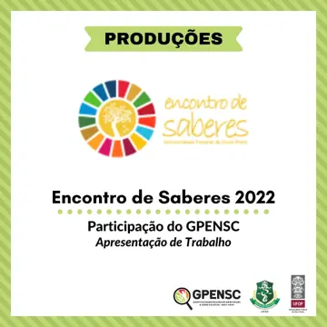
InstitucionalNos dias 12 e 16 de dezembro, vai acontecer a 14ª Edição do Encontro de Saberes 2022, realizado pela UFOP (@minhaufop). O tema desta edição será "Ciência, tecnologia e humanização: desafios e propostas para o século XXI". . 💻 O evento será no formato online, por meio da plataforma Moodle na UFOP Aberta. Para participar, é necessário acessar o site https://aberta.ufop.br/ e realizar o cadastro para gerar login e senha de acesso. Os eventos estarão acessíveis apenas a partir do dia 12 de dezembro. . 🎥 Nós do GPENSC, desenvolvemos alguns vídeos científicos de curta duração para o Encontro de Saberes, que estão disponíveis no YouTube. Não deixe de conferir! . 👉🏻 Arraste para o lado e confira mais detalhes sobre os nossos trabalhos.
Primeira defesa de doutorado do PPGSN e do GPENSC
17/11/2022
 Institucional
Institucional
O GPENSC relembra 1ª defesa de doutorado do Programa de Pós-Graduação em Saúde e Nutrição - PPGSN (@ppgsn.ufop) e do GPENSC. O primeiro doutor em Saúde e Nutrição foi o Luiz Antônio Alves de Menezes Júnior (@luizmenezes__). A defesa ocorreu no dia 28 de setembro de 2022, de forma híbrida. . 🔎 O projeto de doutorado do Luiz teve como objetivo avaliar a qualidade do sono da população adulta das cidades de Mariana e Ouro Preto (MG) durante a pandemia da covid-19, verificar seus determinantes, e associação com o consumo alimentar, comportamento sedentário e vitamina D sérica. . 📊 O doutorado do Luiz originou quatro artigos, sendo a má qualidade do sono a variável desfecho. No primeiro artigo, verificou-se que mais da metade dos indivíduos tinham má qualidade do sono (52,5%) e que viver sozinho, ter ansiedade, sintomas da covid-19 e perda ou ganho de mais 5% de peso corporal durante a pandemia, foram fatores associados a má qualidade do sono. Este artigo está publicado na revista São Paulo Medical Journal (doi:10.1590/1516-3180.2022.0139.R1.19082022). . 📈 No segundo artigo, foi verificado que o maior consumo de alimentos ultraprocessados concomitante ao menor consumo de alimentos in natura/minimamente processados foi associado a má qualidade de sono. Este artigo está publicado na revista Clinical Nutrition ESPEN (doi:10.1016/j.clnesp.2022.03.02). . 📈 No terceiro artigo, observou-se que os indivíduos com comportamento sedentário acima de 9 horas por dia, tinham maiores chances de má qualidade de sono. A prática de atividade física moderada a vigorosa, foi um fator protetivo para esta associação. Este artigo está submetido na revista European Journal of Sports Science, e encontra-se sob revisão por pares. . 📈 E no último artigo, verificou-se que a deficiência de vitamina D em indivíduos que não expunham adequadamente ao sol foi associado a má qualidade do sono. Este artigo está submetido na revista Nutrition, sob revisão por pares. . 🎆 Parabenizamos o Luiz pela finalização do doutorado e pela contribuição com o PPGSN e para a ciência do país. Desejamos muito sucesso!
Ansiedade, depressão e mudanças durante a pandemia
03/11/2022
 Institucional
Institucional
O GPENSC relembra qualificação de doutorado da aluna Thaís Sabião (@thasabiao), que ocorreu no dia 08 de setembro de 2022, via Google Meet. . 🔎 O projeto de doutorado da Thaís, intitulado: “Sintomas de transtorno de ansiedade e de depressão: implicações dos determinantes pré-existentes e dos que foram impactados pela pandemia da covid-19”, tem como objetivo avaliar a associação da insegurança alimentar (IA), home office e vitamina D nos sintomas de transtorno de ansiedade (TA) e de depressão (TD) durante a pandemia em residentes da região dos Inconfidentes, Minas Gerais. . 👥 Seu estudo é orientado pela professora Dra. Júlia Carraro (@julia_carraro) e coorientado pelo professor Dr. George Machado Coelho (@georgellinsmachado). O trabalho contou com as contribuições da banca formada pelas professoras Dra. Raquel Mendonça - @raquelmendonca_enut (UFOP), Maria Del Carmen - @mdcarmen (UFES), Fernanda Vidigal - @fcvidigal (UNIFAL) e Ana Paula Cândido - @apccandido (UFJF). . 📈 Os resultados preliminares indicam que os sintomas de transtorno de ansiedade estiveram presentes em 23,3% dos indivíduos e de depressão, em 15,6%. Verificou-se uma associação positiva entre a IA e a gravidade dos sintomas de TA e TD durante a pandemia da covid-19, sendo observada maior vulnerabilidade de indivíduos de raça/cor da pele não branca, sem filhos e com menor renda familiar mensal. . 💡 Espera-se que os dados obtidos forneçam subsídios para o aprimoramento e formulação de políticas públicas que assegurem a promoção da qualidade de vida da população e redução dos custos em saúde, no que se refere à saúde mental. . 🌌 Parabenizamos a Thaís pela aprovação na sua qualificação e pela contribuição para a ciência do país. Desejamos à aluna sucesso nas próximas etapas!
Processamento dos alimentos e saúde durante a pandemia
20/10/2022
 Institucional
Institucional
O GPENSC relembra qualificação de doutorado da aluna Hillary Nascimento Coletro (@hillarycoletro), que ocorreu no dia 02 de setembro de 2022, via Google Meet. . 🔎 O projeto de doutorado da Hillary, intitulado “Consumo alimentar segundo extensão e propósito de processamento e suas interfaces com a saúde humana durante a pandemia da covid-19: estudo covid inconfidentes” tem como objetivo avaliar a associação entre o consumo alimentar segundo extensão e propósito de processamento em desfechos relacionados à saúde humana, em adultos brasileiros, durante a pandemia da covid-19. . 👥 Seu estudo é orientado pela professora Dra. Mariana Carvalho de Menezes (@maricarvalhomenezes). O trabalho contou com as contribuições da banca composta pelas professoras Dras. Patrícia Freitas (UFOP), Ísis Eloah - @isiseloah (UFOP), Maria del Carmen - mdcarmenmolina (UFES/UFOP), e Raquel Mendonça - @raquelmendonça_enut (UFOP). . 📊 Os resultados preliminares evidenciam que o maior consumo semanal de alimentos in natura/minimamente processados está associado a uma menor prevalência de sintomas de depressão, assim como o maior consumo semanal de alimentos ultraprocessados está associado a uma maior prevalência de sintomas de ansiedade e depressão. . 📈 Além disso, a presença de comportamentos de risco à saúde (alto consumo de alimentos ultraprocessados, o consumo não diário de frutas e hortaliças e o comportamento sedentário) também estão associados a uma maior razão de prevalência de sintomas de ansiedade ou depressão. Por fim, observou-se que o maior consumo semanal de alimentos ultraprocessados está associado a uma razão de prevalência 60% maior para a insegurança alimentar. . 🎇 Parabenizamos a Hillary pela aprovação na sua qualificação e pela contribuição na ciência do país. Desejamos à aluna sucesso nas próximas etapas!
Atividade física no lazer e alterações metabólicas
06/10/2022
 Institucional
Institucional
O GPENSC relembra qualificação de doutorado da aluna Samara Silva de Moura (@mourasamara), que ocorreu no dia 16 de agosto de 2022, via Google Meet. . 🔎 O projeto de doutorado da Samara, intitulado "Atividade física no lazer e marcadores bioquímicos de alterações metabólicas durante a pandemia de covid-19: COVID-Inconfidentes", tem como objetivo avaliar a prevalência da prática de atividade física no lazer em residentes da região dos Inconfidentes/MG durante a pandemia da covid-19 e seus fatores associados, assim como sua influência nos marcadores bioquímicos de alterações metabólicas. . 👥 Seu estudo é orientado pela professora Dra. Adriana Meireles (@dri_meireles) e coorientação pela professora Dra. Júlia Carraro (@julia_carraro). O trabalho contou com as contribuições da banca formada pelos professores Drs. Lenice Becker - @lenice_becker (UFOP), Aline Dayrell - @dayrellferreira (UFMG), George Machado-Coelho - @georgellinsmachado (UFOP) e Pedro Hallal - pedrohallal (UFPEL). . 👩🏻🏫 Os resultados preliminares evidenciam um aumento substancial na prevalência da inatividade física durante a restrição social devido a pandemia da covid-19, sendo observada maior vulnerabilidade entre os indivíduos com renda familiar mais baixa, baixo nível de escolaridade e cor de pele não branca. . 💡 Esses achados reforçam a necessidade de programas que visem a promoção da qualidade de vida, para que os danos à saúde da população sejam mitigados em curto e longo prazo. . 🎇 Parabenizamos a Samara pela aprovação na sua qualificação e pela contribuição na ciência do país. Desejamos à aluna sucesso nas próximas etapas!
PPGSN e GPENSC anunciam primeira defesa de doutorado
26/09/2022
 Pesquisa
Pesquisa
É com muita alegria que o GPENSC e o Programa de Pós-Graduação em Saúde e Nutrição – PPGSN (@ppgsn.ufop) convidam todos para participar da 1ª defesa de doutorado do PPGSN e do nosso grupo. . 👨🏻🎓 O primeiro aluno a defender o doutorado é o Luiz Antônio Alves de Menezes Júnior (@luizmenezes_), com a tese intitulada “Qualidade do sono durante a pandemia e suas interfaces com o consumo alimentar, comportamento sedentário e vitamina D”. O trabalho foi desenvolvido sob orientação da professora Dra. Adriana Lúcia Meireles – UFOP (@dri_meireles) e coorientação da professora Amanda Cristina de Souza Andrade – UFMT (csouza.amanda). . 🗓️ O exame de defesa do Luiz ocorrerá no dia 28 de setembro (quarta-feira), às 14h00, de forma híbrida. Para aqueles que desejam assistir de forma presencial, em Ouro Preto-MG, a defesa será na sala 107 do CEAD. Além disso, será transmitido por videoconferência, via Google Meet. Para assistir, basta acessar o link da defesa por meio do QR Code. . 🗣️ Não deixe de participar conosco e prestigiar o Luiz nesse momento tão especial! Esperamos vocês!
Disponibilidade de alimentos nos domicílios de escolares
15/09/2022
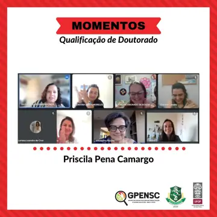
InstitucionalNosso #tbt de hoje é bem recente, para lembrar da qualificação de doutorado da aluna Priscila Pena Camargo (@priscilapenacamargo), que ocorreu no dia 05 de agosto de 2022, via Google Meet. . 🔎 O projeto de doutorado da Priscila, intitulado "Disponibilidade alimentar em domicílios de escolares na pandemia da covid-19: estudo longitudinal ESANP”, tem como objetivo avaliar a disponibilidade alimentar em domicílios de escolares da rede pública municipal de ensino nos municípios de Mariana e Ouro Preto-MG na pandemia da covid-19. . 👥 Seu estudo é orientado pela professora Dra. Raquel de Deus Mendonça (@raquelmendonca_enut) e coorientado pela professora Dra. Adriana Lúcia Meireles (@dri_meireles). O trabalho contou com as contribuições da banca formada pelas professoras Dras. Anelise Souza - @andradeanelise (UFOP), Daniela Canella - @dani_canella (UERJ), Elisabetta Recine (UNB) e Milene Pessoa - @milenepessoa1 (UFOP). . 🍽️ Os resultados preliminares apontam que a disponibilidade de alimentos está comprometida e há alta prevalência de insegurança alimentar nos domicílios dos escolares na pandemia da covid-19. . 💡 Esses achados reforçam a necessidade de políticas públicas que retirem os domicílios da situação de vulnerabilidade e apoiem produtores locais e ações para o acesso a alimentos frescos e saudáveis, em quantidade suficiente e com preço acessível, para que sejam garantidas as necessidades básicas dessa população. . 🎇 Parabenizamos a Priscila pela aprovação na sua qualificação e pela contribuição na ciência do país. Desejamos à aluna sucesso nas próximas etapas!
Doutorado sanduíche de Magda do Carmo Parajára
08/09/2022
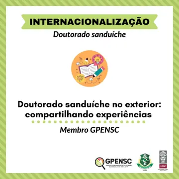
InstitucionalHoje, nosso post é para compartilhar com vocês sobre o doutorado sanduíche de uma pesquisadora do nosso grupo, a Magda do Carmo Parajára (@magdaparajara), discente do PPGSN/UFOP (@ppgsn.ufop), orientada pela professora Dra. Adriana Lúcia Meireles (@dri_meireles). . ✈️ A Magda foi contemplada com uma bolsa da Coordenação de Aperfeiçoamento de Pessoal de Nível Superior (CAPES - @capes_mec), pelo Programa de Doutorado Sanduíche no Exterior (PDSE), para realizar sua mobilidade acadêmica em Liverpool, Reino Unido, entre maio e outubro de 2022. . 🏫 A instituição de destino foi a University of Liverpool (@livuni). O orientador estrangeiro da aluna é o professor Dr. Martin O’Flaherty, líder do time de modelagem do Non-Communicable Disease Prevention and Food Policy Research Group. Além dele, o trabalho também conta com a colaboração e supervisão da pós-doutoranda Zoé Colombet (@zoe.teb). . 📚 Durante o doutorado sanduíche, Magda realizará parte do seu estudo sobre o impacto de políticas de alimentação na redução da carga de doença e econômica e das iniquidades no Brasil, usando metodologia de modelagem. . 👉🏽 Arraste para o lado e confira! . 🗣️ E continue nos acompanhando, para saber mais sobre as novidades e trabalhos desenvolvidos pelo nosso grupo!
Dia do Nutricionista e o direito à alimentação adequada
31/08/2022
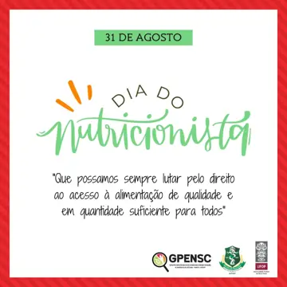
InstitucionalHoje, no Dia do Nutricionista, queremos parabenizar a todos os profissionais que se dedicam na busca do direito humano à alimentação adequada e saudável, que buscam a promoção da saúde e a transformação social por meio da alimentação. . 👥 Nossa admiração e agradecimento a cada profissional que se empenha para termos uma sociedade mais justa, que luta contra a fome, que promove qualidade de vida e bem-estar para a população, mesmo diante de tantos desafios. . ✨ Parabéns também a todos os futuros nutricionistas! . Feliz Dia do Nutricionista! Com carinho, equipe GPENSC 💚❤️🧡
Pesquisa CUME abre participação a egressos de universidades mineiras
29/08/2022
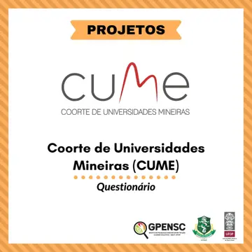
PesquisaSabia que você, ex-aluno(a) da UFV, UFMG, UFOP, UFLA, UFJF, UNIFAL e UFVJM, pode ajudar a compreender a relação da nutrição com alguns desfechos de saúde? . 📑 Atualmente, o projeto CUME está em período de coleta de dados e os questionários estão sendo enviados para os egressos. A coleta de dados para a linha de base (Q_0) e para os seguimentos, que serão aplicados a cada dois anos, contempla um questionário autorrespondido, criado e preenchido em ambiente virtual. . 📲 Se você é ex aluno(a) de umas dessas universidades, participe respondendo o questionário que foi enviado para o seu e-mail ou acesse pelo site oficial do projeto CUME (na área do participante). . 📝 Sua participação ajudará na elaboração de futuras intervenções de promoção, prevenção, controle e tratamento dessas doenças na população brasileira. . 🗣️ Quer saber mais sobre o projeto CUME? Continue nos acompanhando e siga também o Instagram do @projeto_cume.
Nosso #tbt é bem recente, para lembrar da primeira reunião presencial do GPENSC em 2022!
18/08/2022
 Institucional
Institucional
🫂 Voltar às atividades presenciais depois de mais de dois anos de encontros remotos foi muito especial para todos! Foi um momento de reencontro e de boas-vindas, especialmente para os novos membros. Alegria por estar de volta no nosso cantinho, pelas trocas e por ter o Lamusc cheio novamente. . 💫 Esperamos que todos tenham bons encontros presenciais e que esta jornada se inicie com muita felicidade. Como grupo, que possamos aprender e crescer juntos a cada dia! 💚❤️🧡 . 🗣️ Continue nos acompanhando e fique por dentro de todas as nossas atividades e projetos!
Processamento dos alimentos e saúde mental de universitários
21/07/2022
 Institucional
Institucional
Nosso #tbt é bem recente, para lembrar das defesas de trabalhos de conclusão de curso (TCCs) de três alunas do GPENSC, que aconteceram em junho de 2022. . 👩🏻💻 No dia 22 de junho, ocorreu a defesa de TCC da aluna Milena Martins de Oliveira (@mi_martinns), via Google Meet. O trabalho da Milena, intitulado “Associação do consumo alimentar segundo grau de processamento e prevalência dos sintomas de ansiedade e depressão entre estudantes universitários durante a pandemia da covid-19”, foi orientado pela professora Dra. Mariana Carvalho de Menezes (@maricarvalhomenezes) e coorientado pela doutoranda Hillary Coletro Nascimento (@hillarycoletro). Sua banca contou com a colaboração da professoras Dras. Adriana Lúcia Meireles (@dri_meireles) e Renata Adrielle Lima Vieira (@renataadriellenutri). . 👩🏻🏫 No dia 23 de junho, aconteceu a defesa da aluna Chrislaine Corraide Dias dos Santos (@chris.cordis), de modo presencial, na Escola de Nutrição da UFOP. O TCC da Chrislaine, intitulado “Disponibilidade de alimentos nos domicílios dos alunos atendidos pelas redes municipais de ensino de Mariana e Ouro Preto - Minas Gerais na pandemia de covid-19”, foi orientado pela professora Dra. Raquel de Deus Mendonça (@raquelmendonca_enut) e coorientado pela doutoranda Priscila Pena Camargo (@priscilapenacamargo). Sua banca contou as contribuições da pós-doutoranda Anabele Pires Santos (@piresanabele) e da doutoranda Bruna Carolina Rafael Barbosa (@brunabcrb). . 👩🏻💻 No dia 23 de junho, também ocorreu a defesa de TCC da aluna Larissa Menezes Santos Carvalho (@lissamenezes), via Google Meet. O trabalho da Larissa, intitulado “Alterações do peso e do índice de massa corporal entre estudantes universitários: Projeto PADu-Covid”, foi orientado pela professora Dra. Raquel de Deus Mendonça e coorientado pela professora Dra. Adriana Lúcia Meireles. Sua banca contou com a colaboração da professora Dra. Anelise Andrade de Souza (@andradeanelise) e da pós-doutoranda Anabele Pires Santos. . 🎇 Parabenizamos as alunas pelas defesas dos TCCs e desejamos sucesso nas próximas etapas!
O dia de #tbt foi ontem, mas bora relembrar uma data especial para o GPENSC?
17/06/2022
 Institucional
Institucional
🔙😍 . 🗓️ Nosso #tbt é bem recente, para lembrar da defesa de mestrado da aluna Joice Silva Vieira Leal (@joicesvleal), que ocorreu no dia 12 de maio, via Google Meet. . 🔎 A dissertação da Joice, intitulada "Carga de doenças crônicas atribuível ao consumo de bebidas açucaradas no Brasil", teve como objetivo estimar a carga (financeira e na saúde) das doenças crônicas não transmissíveis (DCNT) atribuíveis ao consumo de bebidas açucaradas para a população brasileira, em 2019, e a mudança entre os anos de 1990 e 2019. . 👥 Seu trabalho foi orientado pela profa. Dra. Mariana Carvalho de Menezes (@maricarvalhomenezes) e contou com as contribuições da banca formada pelas professoras Dras. Ísis Eloah Machado – @isiseloah (UFOP) e Mariana Santos Felisbino Mendes – @nana.sfm (UFMG). . 📊 Os resultados da dissertação da Joice apontam que, em 2019, o consumo de bebidas açucaradas causou uma perda de 233.436,09 (II95% 157.094,89 – 302.483,29) anos de vida perdidos ajustados pela incapacidade (DALY) e 7.657,9 (II95% 5.131,26 – 9.795,68) óbitos por DCNT no Brasil. Unidades Federativas da região Nordeste, além de indivíduos do sexo masculino e em faixas etárias superiores, apresentaram maior carga de DCNT relacionadas ao consumo de bebidas açucaradas. . 💰 Além disso, cerca de $ 14.116.240,55 (equivalente a R$ 55.674.452,74) foram gastos com procedimentos de média e alta complexidade no tratamento de DCNT atribuídas ao consumo de bebidas açucaradas no Sistema Único de Saúde (SUS), em 2019. Esses valores foram maiores para o sexo masculino e nas regiões Sudeste e Sul. . 💡 Esses achados reforçam a urgência da implantação de ações e políticas articuladas para a redução do consumo de bebidas açucaradas, tanto em âmbito nacional como estadual. . Parabenizamos a Joice pela defesa de mestrado e pela contribuição na ciência do país! 👏🏻🎉✨
Interação GPENSC: correio do amor acadêmico
14/06/2022
 Institucional
Institucional
💘 Entrando no clima de festa junina e na semana do dia dos namorados, queremos saber de quem você adoraria receber um correio do amor “mood acadêmico”. . ❤️ Nós do GPENSC, gostaríamos de receber de todos. E vocês? Conta pra gente aqui nos comentários de quem é o correio do amor que você gostaria de receber essa semana.
Inatividade física e ganho de peso na coorte CUME
02/06/2022
 Institucional
Institucional
Nosso #tbt de hoje é recente, para lembrar de duas qualificações de mestrado que ocorreram no dia 07 de março de 2022, via Google Meet. . 🔎 O projeto de mestrado da aluna Sarah Beatriz Resende Tinoco (@sarahbeatrizrt), intitulado “Associação da inatividade física e do comportamento sedentário com o ganho de peso em egressos das universidades mineiras (Projeto CUME)”, é orientado pela professora Dra. Adriana Lúcia Meireles (@dri_meireles) e coorientado pela professora Dra. Raquel de Deus Mendonça (@raquelmendonca_enut). Sua banca de qualificação contou com a colaboração do professor Dra. Adriano Marçal Pimenta –@adrianompimenta (UFPR) e da professora Dra. Lenice Kappes Becker Oliveira – @lenice_becker (UFOP). . 🔎 O projeto de mestrado da aluna Thaís Calcagno Vidon Bruno, intitulado "Associação da percepção de suporte social em tempos de pandemia de covid-19 com hábitos alimentares e ganho de peso: PADU-COVID", é orientado pela professora Dra. Júlia Cristina Cardoso Carraro (@julia_carraro) e coorientado pela professora Dra. Sabrina Martins Barroso – @sabarroso (UFTM). Sua banca de qualificação contou com as contribuições da professora Dra. Isis Danyelle Dias Custódio (UFU) e da professora Dra. Maria Del Carmen Bisi Molina – @mdcarmenmolina (UFOP). . 🎇 Parabenizamos a Sarah e a Thaís pela aprovação na sua qualificação e pela contribuição na ciência do país. Desejamos sucesso nas próximas etapas!
Cinco documentários sobre alimentação
01/06/2022
 Institucional
Institucional
A nossa recomendação no #IndicaGPENSC de hoje são cinco documentários sobre alimentação, para você assistir nos seus momentos de descontração e também para quando precisar buscar por algumas informações. . 💭 As nossas indicações foram pensadas com o objetivo de levar informações sobre nutrição de maneira descontraída. . 💡 Você já conhecia algumas dessas indicações? Tem mais sugestões? Responde nos comentários. . 🗣 Não deixe de conferir e compartilhar com os amigos!
Carnes vermelhas e processadas e hipertensão no ELSA-Brasil
26/05/2022
 Institucional
Institucional
Nosso #tbt de hoje é recente, para lembrar de duas qualificações de mestrado que ocorreram em fevereiro e março de 2022 , via Google Meet. . 🗓️ No dia 24 de fevereiro, aconteceu a qualificação de mestrado da aluna Michelle Izabel Ferreira Mendes (@michellef80mendes). . 🔎 O projeto de mestrado da Michelle, intitulado “Consumo de carne vermelha e processada e risco de hipertensão arterial em participantes do Elsa-Brasil”, é orientado pela professora Dra. Maria del Carmen Bisi Molina (@mdcarmenmolina) e coorientado pela professora Dra. Raquel de Deus Mendonça (@raquelmendonca_enut). Sua banca de qualificação contou com a colaboração da professora Dra. Taísa Sabrina Silva Pereira (UDLAP) e da professora Dra. Adriana Lúcia Meireles – @dri_meireles (UFOP). . 🗓️ No dia 07 de março, ocorreu a qualificação da mestranda Tainá Cristina Damasceno Silva (@tainacdamasceno). . 🔎 O projeto de mestrado da Tainá, intitulado “Intervenção nutricional para controle da Hipertensão Arterial Sistêmica na Atenção Primária à Saúde”, é orientado pela professora Dra. Raquel de Deus Mendonça (@raquelmendonca_enut) e coorientado pela professora Dra. Júlia Cristina Cardoso Carraro (@julia_carraro). Sua banca de qualificação contou com as contribuições da professora Dra. Renata Andrade de Medeiros Moreira (UFT) e da professora Dra. Maria del Carmen Bisi Molina – @mdcarmenmolina (UFOP). . 🎇 Parabenizamos a Michelle e a Tainá pela aprovação na sua qualificação e pela contribuição na ciência do país. Desejamos sucesso nas próximas etapas!
Livro: O peso das dietas
25/05/2022
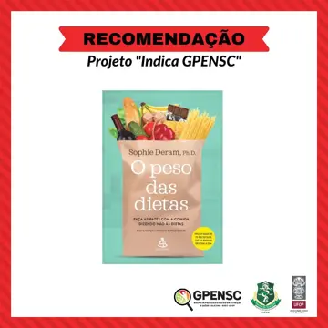
InstitucionalO GPENSC recomenda o livro “O peso das dietas”, escrito pela Ph.D Sophie Deram, nutricionista, doutora pelo departamento de Endocrinologia da Faculdade de Medicina da Universidade de São Paulo (FMUSP). . 🎯 O livro tem como objetivo discutir mitos e crenças sobre a alimentação, reunindo evidências da área nutriogenômica e neurociências. . 😋 O livro também conta com receitas simples, a fim de contribuir com uma vida mais saudável e sem restrição. . 💡Você já conhecia a nossa indicação? Tem mais sugestões? Responda nos comentários! . 🗣 Não deixe de conferir e compartilhar com os amigos.
Defesa de mestrado de Bruna Carolina Rafael Barbosa
05/05/2022
 Institucional
Institucional
Nosso #tbt de hoje é bem recente, para lembrar da defesa de mestrado da aluna Bruna Carolina Rafael Barbosa (@brunabcrb18), que ocorreu no dia 22 de março, via Google Meet. . 🔎 A dissertação da Bruna, intitulada “Coocorrência de comportamentos obesogênicos e sintomas de ansiedade e depressão durante os meses iniciais da pandemia da covid-19: PADu-COVID, um estudo com universitários” teve como objetivo estimar a prevalência dos sintomas de ansiedade e depressão e sua associação com a coocorrência de comportamentos obesogênicos em estudantes de graduação de uma Instituição Federal de Ensino Superior durante os meses iniciais (julho a agosto de 2020) da pandemia da covid-19. . 👥 Seu trabalho foi orientado pela professora Dra. Adriana Lúcia Meireles (@dri_meireles) e coorientado pela professora Dra. Elaine Leandro Machado (@lili_mach). O trabalho contou com as contribuições da professora Dra. Fernanda de Carvalho Vidigal (@fcvidigal) e da professora Dra. Mariana Carvalho de Menezes (@maricarvalhomenezes). . 📈 Os resultados da dissertação da Bruna indicam que os sintomas de ansiedade (46,1%) e depressão (54,6 %) foram altamente prevalentes entre os estudantes universitários durante o período de suspensão das atividades presenciais na universidade. Além disso, os resultados mostraram que quanto maior o número de comportamentos obesogênicos simultâneos, maior a chance dos estudantes apresentarem sintomas de ansiedade e depressão. . 💡 Esses achados reforçam a necessidade de desenvolver ações de saúde pública para melhor abordar questões de saúde mental no ambiente universitário. . Parabenizamos a Bruna pela defesa de mestrado e pela contribuição na ciência do país. Queremos também parabenizá-la pela aprovação no doutorado no PPGSN/UFOP! Sucesso sempre! 👏🎉✨
Você já se perguntou quem está por trás dos nossos posts?
04/05/2022
 Institucional
Institucional
👥 Hoje, é dia nos apresentarmos para vocês. Vamos mostrar quem são as pessoas que estão por trás das postagens do Instagram do GPENSC. Ainda, vamos apresentar outras integrantes do grupo que também já mostraram a sua criatividade por aqui. . 💭 Aqui desse lado, nós gostaríamos de agradecer por cada curtida, comentário e notificação ativada, isso contribui muito com o nosso grupo, com o engajamento das nossas postagens e acaba sendo um termômetro para nossos esforços em levar conhecimento para vocês. . Obrigada a todos que fazem parte dessa nossa história! 💚❤️🧡
Primeira reunião do GPENSC em 2022 reúne integrantes
03/05/2022
 Institucional
Institucional
👥 Foi um momento de reencontro, apresentação dos novos membros e trocas. Que o nosso grupo possa ser oportunidade de convivência, de estar junto, aprender e fazer junto, de fazer e discutir ciência! . 💻 No nosso primeiro encontro, também fizemos uma retrospectiva das atividades de 2019 a 2021 e discutimos ideias para o ano de 2022. Além disso, as professoras líderes do GPENSC fizeram um balanço sobre a produção do grupo desde sua criação. . 📚 Estamos muito animados com esse novo ano. Que 2022 possa ser um período de muitas oportunidades e de conhecimento para nós, e que permaneçamos juntos e conectados! . 🗣 Continue nos acompanhando e fique por dentro de todas as nossas atividades e projetos!
HipertenSUS e Secretaria de Saúde promovem ação em Ouro Preto
29/04/2022
 Institucional
Institucional
Na próxima semana, entre os dias 02 e 06 de maio, a equipe do projeto HipertenSUS, em parceria com a Secretaria Municipal de Saúde de Ouro Preto (@prefeituraouropreto), irá realizar uma ação para a população nas Unidades Básicas de Saúde (UBS) do município. . ❣️ Serão realizadas salas de espera nas UBS (São Cristóvão, Bauxita, Saramenha, Antônio Dias, Morro Santana e Piedade) e Cozinha Experimental no Laboratório de Técnica Dietética da Escola de Nutrição (ENUT - @enut_ufop) da UFOP. . 👉🏽 Arraste para o lado e confira mais detalhes sobre a ação. . 👥 Toda a comunidade está convidada para participar desse evento com a gente. Esperamos vocês!
Aniversário do perfil do GPENSC
27/04/2022
 Institucional
Institucional
Na semana passada, no dia 23 de abril, nosso Instagram completou mais um ano de existência, e nós somos muito gratos por todos vocês que nos seguem e que interagem nos nossos posts semanalmente. . ✨ Nosso intuito sempre foi levar ciência e informação a todos vocês de maneira clara e objetiva. E nosso desejo é que possamos continuar juntos por aqui nessa missão! . Obrigada a cada um de vocês! Com carinho, Equipe GPENSC 💚🧡❤️
Defesa de mestrado de Larissa Fernanda Fonseca Guedes
21/04/2022
 Institucional
Institucional
O GPENSC relembra defesa de mestrado da aluna Larissa Fernanda Fonseca Guedes (@larissaguedesnutri), que aconteceu no dia 04 de março de 2022. . 🔎 A dissertação da Larissa, intitulada “Impactos financeiros e à saúde da população brasileira devidos ao consumo excessivo de sódio”, teve como objetivo estimar a carga de doenças crônicas não transmissíveis (DCNT) relacionada ao consumo excessivo de sódio na população adulta brasileira e os custos financeiros diretos decorrentes desse fator de risco para o Sistema Único de Saúde (SUS) no Brasil e nas 27 Unidades Federativas em 2019. . 👥 O trabalho foi orientado pela professora Dra. Ísis Eloah Machado (@isiseloah) e contou com as contribuições da banca formada pela professora Dra. Mariana Santos Felisbino-Mendes (@nana.sfm), da UFMG, e pelo professor Dr. George Luiz Lins Machado Coelho (@georgellinsmachado), da UFOP. . 📊 Os resultados da dissertação da Larissa mostraram que se o consumo médio de sódio pela população brasileira fosse reduzido para 3g/dia no passado (conforme preconizado pelo estudo Global Burden of Disease - GBD), em 2019, 30.814 mortes e 699.119 anos de vida perdidos ajustados pela incapacidade (DALYs) relacionados às DCNT poderiam ter sido evitados. Além disso, cerca de R$ 225,45 milhões em internações e procedimentos de média e alta complexidades poderiam ser economizados pelo SUS. . 📈 Ao utilizar taxas padronizadas para a idade, a carga de DCNT foi maior nos estados do Nordeste, o que revela as disparidades regionais em função dos determinantes sociais e a necessidade de minimizar as iniquidades, fortalecendo a atenção primária para consolidar ações de educação em saúde e engajamento desse grupo populacional. . Parabenizamos a Larissa pela defesa de mestrado e pela contribuição na ciência do país. Queremos também parabenizá-la pela aprovação no doutorado no PPGSN/UFOP! Sucesso sempre! 👏🎉✨
Já que hoje é dia de #sextou, que tal interagir com o GPENSC no "De olho na telinha"?
08/04/2022
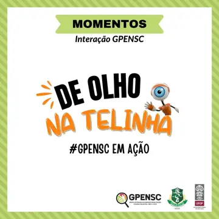
Institucional"? . 👉🏻 Arraste para o lado e confira nosso momento interação da semana. . 👀 E aí, quem é você na vida acadêmica? Nós, somos #team comunicativo e determinado. . 😇 Que comecem os jogos com os nossos seguimores! . 🗣️ Ahhh, não se esqueça de compartilhar com os(as) amigos(as). Fala se essa postagem não merece um 🍪?
Defesa de mestrado de Ana Cláudia Morito
31/03/2022
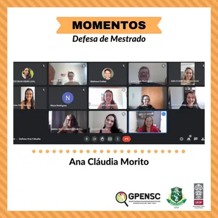
InstitucionalNosso #tbt de hoje é bem recente, para lembrar da defesa de mestrado da aluna Ana Cláudia Morito (@anaclaudiamorito), que ocorreu no dia 24 de fevereiro, via Google Meet. . 🔎 A dissertação da Ana Cláudia, intitulada "Associação dos sintomas de transtorno de ansiedade com a mudança dos escores de alimentação e do peso corporal em universitários durante a pandemia da covid-19 (Projeto PADu-COVID) teve como objetivo avaliar a associação entre os sintomas de transtorno de ansiedade com a mudança dos escores de alimentação e do peso corporal durante a pandemia da covid-19 em universitários de uma instituição de ensino superior. . 👥 Seu trabalho foi orientado pela professora Dra. Júlia Cristina Cardoso Carraro (@julia_carraro) e coorientado pela professora Dra. Adriana Lúcia Meireles (@dri_meireles). O trabalho contou com as contribuições da professora Dra. Carolina Gomes Coelho e da professora Dra. Maria del Carmen Bisi Molina (@mdcarmenmolina). . 📈 Os resultados da dissertação da Ana Cláudia indicam que, embora um pequeno aumento dos sintomas de ansiedade e do peso corporal tenha sido observado, as mudanças dos hábitos alimentares e de peso corporal dos estudantes não estiveram associadas à ansiedade. . Parabenizamos a Ana Cláudia pela defesa de mestrado e pela contribuição na ciência do país. Queremos também parabenizá-la pela aprovação no doutorado no PPGSN/UFOP! Sucesso sempre! 👏🎉✨
Defesa de mestrado de Ana Flávia Martins
24/03/2022
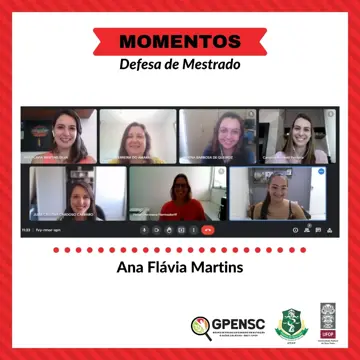
InstitucionalNosso #tbt de hoje é bem recente, para lembrar da defesa de mestrado da aluna Ana Flávia Martins (@ananutrifuncional), que aconteceu no dia 23 de fevereiro, via Google Meet. . 🔎 A dissertação da Ana Flávia, intitulada “Efeito da interação entre o aleitamento materno e o polimorfismo in/del da eca sobre o risco de hipertensão arterial em adultos jovens”, teve como objetivo avaliar a interação do aleitamento (AME) com o polimorfismo In/Del ECA sobre os níveis de angiotensina II (ANG II) e o desenvolvimento de hipertensão arterial sistêmica (HAS) em adultos de 20 a 30 anos. . 👥 Seu trabalho foi orientado pela professora Dra. Júlia Cristina Cardoso Carraro (@julia_carraro) e coorientado pela professora Dra. Karina Barbosa de Queiroz (@prof.karina_queiroz). O trabalho contou com as contribuições da professora Dra. Carolina Nicoletti Ferreira (USP), Helen hermana Miranda Hermsdorff (UFV) e Joana Ferreira do Amaral (UFOP). . 📊 A prevalência de HAS nessa população foi de 24,75%, sendo maior no sexo masculino. Essa prevalência não teve relação com o genótipo do gene da ECA. A frequência cardíaca foi maior nos indivíduos do grupo de genótipo de homozigose para deleção + heterozigotos (DD + ID). Observou-se que os níveis de ANG II foram maiores no grupo de genótipo de homozigose para inserção e não houve relação com os valores pressóricos, bem como com a classificação de HAS. . 📈 A maior parte da população foi amamentada exclusivamente por menos de 6 meses, tempo recomendado pela OMS. Com relação a interação do AME e o genótipo, os indivíduos portadores do genótipo de homozigose de inserção e que foram amamentados por 6 meses tiveram uma redução dos níveis séricos de ANG II, sugerindo um efeito protetor do AM. . Parabenizamos a Ana Flávia pela defesa de mestrado e por sua contribuição na ciência do país. Queremos também parabenizá-la pela aprovação no doutorado no PPGSN/UFOP! Sucesso sempre! 👏🎉✨
Polifenóis e hipertensão na coorte CUME
23/03/2022
 Institucional
Institucional
Hoje, trazemos para vocês o artigo intitulado “Total Polyphenol Intake, Polyphenol Subtypes, and Prevalence of Hypertension in the CUME Cohort”, de autoria da doutoranda Hillary Nascimento Coletro (@hillarycoletro), sob a orientação das professoras Dras. Júlia Carraro (@julia_carraro), Raquel Mendonça (@raquelmendonca_enut) e Adriana Meireles (@dri_meireles), juntamente com participação de outros pesquisadoress da UFOP e UFMG. . 🎯 Esse artigo é produto do mestrado da Hillary e teve como objetivo avaliar a existência de associação entre o consumo de polifenóis totais, suas classes e subclasses com a presença de hipertensão arterial sistêmica. . 💻 Para isso, foram realizadas análises com dados da linha de base da Coorte das Universidades de Minas Gerais (CUME). Os participantes preencheram um questionário online de frequência alimentar e os dados da composição fenólica dos alimentos foi avaliado usando o banco de dados Phenol Explorer. A hipertensão foi determinada pelo relato de diagnóstico médico da morbidade, relato de pressão arterial ≥ 130 mmHg/80 mmHg ou relato de uso de anti-hipertensivo. Modelos de regressão logística ajustados foram usados para estimar odds ratios e intervalos de confiança 95% para verificar a associação existente entre a exposição (consumo alimentar de polifenóis) e o desfecho (hipertensão). . 💡 Após análise, foi observado que o consumo de flavonoides, flavonóis e ácido hidroxibenzoico está associado a uma menor chance de ter hipertensão. . 🔗 Acesse o artigo no link abaixo: https://www.tandfonline.com/doi/full/10.1080/07315724.2021.1977735
Homenagem às mulheres do GPENSC
08/03/2022
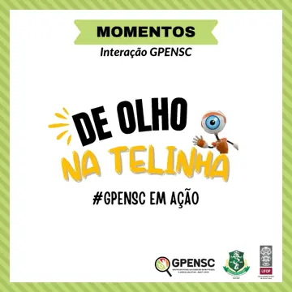
InstitucionalAproveitando que hoje é o dia das mulheres e que ontem foi dia do jogo da discórdia, gostaríamos de homenagear as nossas mulheres maravilhosas no "De olho na telinha". . 👉🏻 Arraste para o lado e escolha as plaquinhas para uma mulher especial do seu mundo acadêmico. . 💭 Responda nos comentários quem merece receber uma plaquinha dessas. . 😇 Que comece o jogo com os nossos seguimores! . Desejamos um feliz dia das mulheres para todas as mulheres especiais do nosso grupo e nossas seguidoras! Juntas somos mais fortes ♥️👭
Equipe do GPENSC: pós-doutorando Frederico Machado Almeida
24/02/2022
 Institucional
Institucional
O GPENSC apresenta mais um de nossos pesquisadores, o pós-doutorando Frederico Machado Almeida (@falmeida856). . 👨🏾🎓 Frederico é licenciado em estatística pela Universidade Eduardo Mondlane (UEM), formado em ensino de Matemática pela Universidade Pedagógica (UP), mestre e doutor em Estatística pelo Programa de Pós-Graduação em Estatística da Universidade Federal de Minas Gerais (DEST-UFMG). Tem experiência nas linhas de pesquisa: análise de sobrevivência e confiabilidade; inferência Bayesiana; estatística não-paramétrica; e modelo de regressão para respostas binárias e de contagem. . 🗂️ Atualmente, é pós-doutorando no Programa de Pós-Graduação em Saúde e Nutrição (PPGSN) da Universidade Federal de Ouro Preto (UFOP), sob a orientação da professora Dra. Adriana Lúcia Meireles (@dri_meireles). De modo geral, no pós-doutorado, Frederico tem como objetivo dar suporte na parte de análise estatística para os alunos do programa que estão vinculados em diferentes projetos de pesquisa. . 🔎 Quer saber mais sobre os trabalhos desenvolvidos pelo nosso grupo? Continue nos acompanhando.
De olho na telinha: edição sobre o BBB
22/02/2022
 Institucional
Institucional
Hoje, entrando na onda do BBB, trouxemos para vocês o momento #InteraçãoGPENSC com o "De olho na telinha". . 👉🏻 Arraste para o lado e confira nossos escolhidos no jogo da discórdia. . 👀 Conta pra gente quem você quer ver fora desse game! . 😇 Que comece o jogo com os nossos seguimores!
Indicações de janeiro do GPENSC
21/01/2022
 Institucional
Institucional
Como mencionamos no último post, nesse mês de janeiro preparamos uma série de indicações bem legais para vocês. Dando continuidade ao nosso #IndicaGPENSC especial de janeiro, hoje vamos recomendar a Aliança pela Alimentação Adequada e Saudável (@aliancaalimentacao). . 🤝🏻 A Aliança foi oficialmente lançada em 2016 e consiste em uma cooperação entre organizações da sociedade civil, associações, coletivos, movimentos sociais, entidades profissionais e pessoas físicas. . 🍽 Essa organização tem como objetivo a promoção e o fortalecimento de ações coletivas voltadas para o Direito Humano à Alimentação Adequada (DHAA). Suas ações buscam o avanço de políticas públicas para a garantia da Segurança Alimentar (SAN) e Nutricional e da Soberania Alimentar no país. . ‼️ Vale muito a pena acompanhar a Aliança e ficar por dentro de todas as suas atividades! . 👉 Arraste para o lado e confira os endereços das suas redes sociais. . 📌 Gostou da dica? Aproveita para salvar e compartilhar esse post!
💫 O ano de 2021 nos mostrou que a vida é agora e o momento que você tem é hoje!
31/12/2021
 Institucional
Institucional
Ame, perdoe, abrace, demonstre e sorria! Seja você, seja livre! . 💌 Agora é tempo de encher o coração de otimismo e esperança de dias melhores! Vamos fazer desta virada de ano um recomeço de tudo que é bom. Um recomeço de sentimentos positivos e novos sonhos! . 🎆 Para o próximo ano, desejamos muita saúde, amor e paz. Que 2022 possa nos surpreender e ser palco de conquistas, encontros, alegrias e sonhos. Que bons sentimentos cresçam e se fortaleçam ainda mais nesse novo ano. E que enfrentemos os novos desafios com muita fé e resiliência. . 🫂 Agradecemos imensamente a todos que estiveram conosco em 2021, seja interagindo em nossas postagens ou participando do nosso grupo. Que possamos continuar juntos em 2022! . 🌠 Feliz Ano Novo da família GPENSC para sua família! . Com carinho e amor, Equipe GPENSC 💚❤️🧡
Mensagem de Ano-Novo do GPENSC
28/12/2021
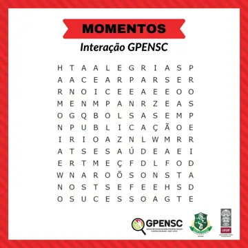
InstitucionalA chegada de um novo ano é sempre um período de renovar as energias e pensar nas metas para o próximo ano. O que será que 2022 reserva para você? . 🧮 Como estamos em ritmo de fim de ano, hoje trazemos um momento #InteraçãoGPENSC em formato de caça-palavra. As duas primeiras palavras que você encontrar melhor definirão o seu ano novo e não vão faltar em 2022. . 💭 Independentemente de quais sejam essas palavras, lembre-se que é apenas um momento para descontração, o que mais conta no final são as coisas que você escolhe fazer. . 🎆 E aí, conta para gente nos comentários quais palavras você encontrou.
O GPENSC celebra o Natal
24/12/2021
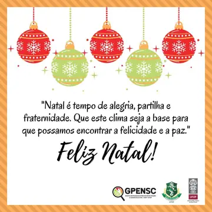
InstitucionalEntão é Natal! . ✨ Natal é tempo de reflexão, um momento de olharmos para dentro de nós mesmos. . 🫂 Mais que uma comemoração, o Natal é um momento de partilha, fraternidade, união, perdão, doação e afeto. . 💫 Nesta data, que possamos celebrar a vida e estarmos presentes na vida dos que amamos. Que a beleza do Natal reflita em nossos corações e que não nos falte paz, fé e bons sentimentos. Que o clima do Natal renove nossas esperanças em dias melhores! . 🥰 Desejamos a todos um Feliz Natal! . ❤️ Com amor e carinho, esses são os votos do GPENSC!
Última reunião do GPENSC em 2021 relembra conquistas do ano
21/12/2021
 Institucional
Institucional
❣️ Neste encontro, para lá de especial e emocionante, tivemos um momento para compartilhar uns com os outros algo importante ou marcante de 2021, como uma foto ou uma história, algo que nos inspirou ou que nos manteve fortes. . 💭 Foram trocas e histórias lindas! Sabemos que os momentos bons existem, assim como as dificuldades, mas que possamos sempre permanecer esperançosos, flexíveis e resilientes nessa caminhada. . 🌟 Como grupo, que possamos permanecer unidos, cultivando as boas amizades e recordações. Que os laços que nos unem sejam fortalecidos para que possamos ir cada vez mais longe, colhendo os frutos do nosso trabalho. . 💚 Finalizamos o ano de 2021 gratos pelo que passou e por tudo que foi conquistado. Agradecemos cada membro que contou sua história nesse ano e que possamos continuar contando a história do GPENSC por muitos anos!
UFOP realiza o 13º Encontro de Saberes
26/11/2021
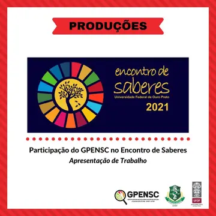
InstitucionalNa próxima semana, entre os dias 29 de novembro e 03 de dezembro, vai acontecer a 13ª Edição do Encontro de Saberes 2021, realizado pela UFOP (@minhaufop). O tema desta edição será a Agenda 2030. . 💻 O evento vai acontecer no formato 100% online, por meio da plataforma Moodle na UFOP Aberta. Para participar, é necessário acessar o site https://aberta.ufop.br/ e realizar o cadastro para gerar login e senha de acesso. Os eventos estarão acessíveis apenas partir do dia 29/11. . 🎥 Nós, do GPENSC, desenvolvemos alguns vídeos científicos de curta duração para o Encontro de Saberes, que estão disponíveis no YouTube. Não deixe de conferir, os vídeos estão demais! . 👉🏽 Arraste para o lado e confira mais detalhes sobre os nossos trabalhos. . 🗣️ E continue nos acompanhando para ficar por dentro de todas as nossas atividades!
Equipe do GPENSC: pós-doutoranda Nara Nunes Lage
15/10/2021
 Institucional
Institucional
O GPENSC apresenta mais uma pesquisadora do nosso grupo, a pós-doutoranda Nara Nunes Lage (@narinhalage). . 👩🏼🎓 A Nara é nutricionista graduada pela Universidade Federal de Ouro Preto (UFOP), mestre pelo Programa de Pós-Graduação em Saúde e Nutrição (PPGSN), com ênfase em Bioquímica e Fisiopatologia da Nutrição (2014), e doutora pelo Programa de Pós-Graduação em Ciências Biológicas (CBIOL), com ênfase em Bioquímica Metabólica e Fisiológica (2018), ambos realizados na UFOP. Em 2017, teve a oportunidade de realizar o seu doutorado sanduíche no Department of Nutrition and Food Science, Texas A&M University (EUA). Foi professora no curso de Nutrição da UFOP (2018-2019) e da Faculdade Santa Rita (FaSaR-2020). Atualmente, é nutricionista na Secretaria Municipal de Saúde da Prefeitura Municipal de Mariana, MG. . 👩🏼🔬 Como pesquisadora, possui experiência em Bioquímica Metabólica e Biologia Molecular, atuando nos seguintes temas: alimentos funcionais, antioxidantes, estresse oxidativo, diabetes, esteatose hepática, metabolismo de lipídios, microbiota e câncer de mama. . 🧫 De 2020 a 2021, realizou seu estágio pós-doutoral voluntário no projeto “Vigilância epidemiológica da COVID-19 na região dos Inconfidentes, Minas Gerais” do PPGSN da UFOP, no qual esteve envolvida nas análises laboratoriais do projeto, sob orientação da professora Dra. Adriana Lúcia Meireles (@dri_meireles) e do professor Dr. George Luiz Lins Machado Coelho (@georgellinsmachado). . 🗣️ Quer saber mais sobre os trabalhos desenvolvidos pelo nosso grupo? Então, continue nos acompanhando!
Insegurança alimentar durante a suspensão das aulas
17/09/2021
 Institucional
Institucional
Tem produção nova do GPENSC vindo aí! . 📄 Hoje, trazemos para vocês o artigo intitulado “Home food insecurity during the suspension of classes in Brazilian public schools due to the COVID-19 pandemic”, de autoria da doutoranda Érica Costa Rodrigues, sob a orientação da professora Dr. Adriana Lúcia Meireles, juntamente com outras pesquisadoras do grupo. Esse artigo foi realizado com resultados da linha de base do Estudo da Segurança Alimentar e Nutricional na Pandemia da COVID-19 – ESANP, um estudo longitudinal desenvolvido pelo GPENSC. . 🎯 O objetivo do artigo foi avaliar o efeito das condições socioeconômicas e de variáveis relacionadas à pandemia da COVID-19 sobre a insegurança alimentar (IA) de alunos durante a suspensão das aulas nas escolas públicas municipais. . 📌 A coleta de dados foi realizada com adultos responsáveis pela compra de alimentos durante a pandemia da COVID-19. O desfecho foi a IA, avaliada por meio da Escala Brasileira de Insegurança Alimentar (EBIA). Modelos de regressão logística multivariada foram usados para estimar o Odds Ratio (OR) e intervalo de confiança de 95% (IC95%). . 📊 A prevalência total de IA nos domicílios foi de 82%, sendo 65,7% IA leve, 11,3% IA moderada e 5,0% IA grave. Famílias com o maior número de filhos (OR = 2,17; IC95%: 1,10–4,27) e as famílias que receberam cestas básicas do governo local (OR = 1,64; IC95%: 1,04–2,58) foram significativamente associadas à IA. Além disso, as famílias que não experimentaram diminuição na renda durante a pandemia foram inversamente associadas à IA (OR = 0,17; IC95%: 0,09–0,32). . 💡 A prevalência de IA foi elevada e as políticas de distribuição de cestas básicas podem não ser suficientes para garantir a segurança alimentar das famílias mais vulneráveis com maior número de filhos. Considerando o possível agravamento da IA durante a pandemia de COVID-19, o Programa Nacional de Alimentação Escolar (PNAE) pode desempenhar um papel estratégico na promoção da segurança alimentar dos alunos. . 🔗 O artigo pode ser encontrado no seguinte link: https://www.sciencedirect.com/science/article/abs/pii/S0899900721003105
Comportamento alimentar e métodos de avaliação
07/09/2021
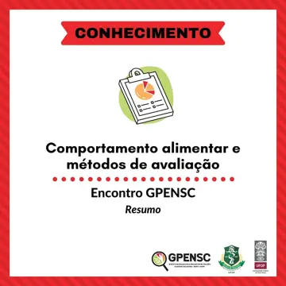
InstitucionalO GPENSC apresenta mais um resumo do projeto #compartilhaGPENSC. . 📄 Neste resumo, vamos falar sobre "Comportamento alimentar e métodos de avaliação", apresentado pelas mestrandas Ana Cláudia Morito (@anaclaudiamorito) e Thaís Calcagno (@t.calcagno), sob orientação da professora Dra. Júlia Carraro. . 💡 Na apresentação, as alunas abordaram sobre o que é o comportamento alimentar e fatores influenciadores, além de algumas ferramentas usadas para a avaliação do comportamento alimentar. Além disso, na apresentação as mestrandas mostraram que o comportamento alimentar é apontado como um fator significativo na prevenção e no tratamento da obesidade. . 👉 Arraste para o lado e confira mais sobre esse tema. . 🗣 Continue nos acompanhando para saber mais sobre os trabalhos desenvolvidos pelo nosso grupo!
Fatores de risco alimentares e custos das doenças crônicas no SUS
02/09/2021
 Institucional
Institucional
Nosso #tbt é bem recente, para lembrar da qualificação de doutorado da aluna Magda do Carmo Parajára (@magdaparajara), que aconteceu no dia 20 de agosto de 2021, via Google Meet. . 🔎 O projeto de doutorado da Magda, intitulado "Carga de doenças crônicas não transmissíveis atribuível a fatores de risco alimentares e seu custo direto para o Sistema Único de Saúde no Brasil", é orientado pela professora Dra. Adriana Lúcia Meireles - @dri_meireles (UFOP). . 💡 O trabalho contou com as contribuições da banca composta pela professora Dra. Ísis Eloah Machado - @isiseloah (UFOP), pelo professor Dr. Eliseu Verly Júnior - @eliseuverly (UERJ) e pelos Drs. Eduardo Augusto Fernandes Nilson - @edu_nilson (Ministério da Saúde) e Renato Azeredo Teixeira (Rede GBD Brasil). . 🎇 Parabenizamos a Magda pela aprovação na sua qualificação e pela contribuição na ciência do país. Desejamos à aluna sucesso nas próximas etapas!
Comportamento alimentar durante a pandemia da COVID-19
27/08/2021
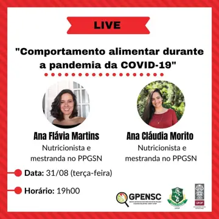
InstitucionalPara comemorar o dia do nutricionista, teremos mais uma #LiveGPENSC. . 🗓️ Nosso bate-papo será no dia 31 de agosto (terça-feira), às 19h00, e terá como tema “Comportamento alimentar durante a pandemia da COVID-19”. Nesse bate-papo, contaremos com a participação das mestrandas do PPGSN/UFOP, Ana Flávia Martins (@ananutrifuncional) e Ana Cláudia Morito (@anaclaudiamorito). . 📲 A live será aqui no perfil do GPENSC. Participe conosco! . 💭 Vocês podem participar enviando perguntas por direct. Também abriremos uma caixinha de perguntas no nosso story, fiquem ligados! . 🗣️ Não fique de fora! Anota aí na agenda e #vemcomagente. Esperamos vocês!
Segurança alimentar de famílias de escolares durante a pandemia
05/08/2021
 Institucional
Institucional
Nosso #tbt é bem recente, para lembrar da qualificação de doutorado da aluna Erica Costa Rodrigues, que ocorreu no dia 21 de julho, via Google Meet. . 🔎 O projeto de doutorado da Erica, intitulado "Estudo longitudinal da situação de segurança alimentar domiciliar de estudantes de escolas públicas na pandemia da COVID-19", é orientado pela professora Dra. Adriana Lúcia Meireles - @dri_meireles (UFOP) e coorientado pela professora Dra. Raquel de Deus Mendonça - @raquelmendonca_enut (UFOP). . 💡 O trabalho contou com as contribuições da banca composta pelas professoras Dras. Maria del Carmen Bisi Molina - @mdcarmenmolina (UFOP), Milene Cristine Pessoa - @milenepessoa1 (UFMG), Anelise Andrade de Sousa - @andradeanelise (UFOP) e Inês Rugani Ribeiro de Castro (UERJ). . 🎇 Parabenizamos a Erica pela aprovação na sua qualificação e pela contribuição na ciência do país. Desejamos à aluna sucesso nas próximas etapas!
Sarah Tinoco investiga inatividade física e comportamento sedentário
18/06/2021
 Institucional
Institucional
Na última semana, apresentamos para vocês a pesquisa da mestranda Sarah Tinoco (@sarahrtinoco). Mas qual a importância de investigar a inatividade física e o comportamento sedentário (CS)? . 🎯 O objetivo deste estudo foi examinar a associação entre atividade física e tempo de CS e a mortalidade por todas as causas. . 📌 O presente estudo realizou uma meta-análise incluindo nove estudos de coorte prospectivos de quatro países, sendo que 44.370 homens e mulheres foram acompanhados em um período entre 4 e 14,5 anos. As associações entre diferentes combinações de atividade física de intensidade moderada a vigorosa (AFMV) e tempo de CS foram analisadas usando a análise de regressão de riscos proporcionais de Cox e resumidas usando meta-análise de efeitos aleatórios. . 📊 Os resultados demonstram que em todas as coortes, o tempo médio de CS variou de 8,5 horas/dia a 10,5 horas/dia e 8 min/dia a 35 min/dia para a AFMV. O risco de morte aumentou quando os níveis de AFMV eram menores e o tempo de CS maior. . 🔎 O estudo conclui que o maior tempo de CS está associado à maior mortalidade em indivíduos menos ativos. Cerca de 30–40 minutos de AFMV por dia atenuam a associação entre o CS e o risco de morte. . 👉 Arraste para o lado e confira o resumo do artigo apresentado e outros dois artigos relacionados a esse tema.
Equipe do GPENSC: mestranda Sarah Beatriz Resende Tinoco
11/06/2021
 Institucional
Institucional
O GPENSC apresenta mais uma pesquisadora do nosso grupo, a mestranda Sarah Beatriz Resende Tinoco (@sarahrtinoco). . 🎓 A Sarah é graduada em Educação Física pela Faculdade Santa Rita – FASAR (2017). Atualmente, é aluna de mestrado do Programa de Pós-Graduação em Saúde e Nutrição da UFOP (PPGSN/UFOP), na linha de pesquisa Saúde e Nutrição em Indivíduos e Coletividades. . 📚 Seu projeto de mestrado tem como título “Inatividade física e comportamento sedentário como fatores de risco do ganho de peso entre egressos das universidades mineiras (Projeto CUME)” e tem a orientação da professora Adriana Lúcia Meireles (@dri_meireles). . 🔎 Quer saber mais sobre o projeto da Sarah e de outros trabalhos desenvolvidos pelo nosso grupo? Continue nos acompanhando.
V Webinar PADu aborda a adaptação à vida acadêmica
18/05/2021
 Institucional
Institucional
O GPENSC, em parceria com o PADu (@padufederais) e o PET Nutrição/UFOP (@petnutricaoufop), convidam para o V Webinar PADu intitulado “Como se adaptar à vida acadêmica e controlar a ansiedade?”. . 🗓️ Nosso encontro será no dia 25 de maio (terça-feira), às 18h30, e contaremos com a participação da psicóloga e mestra em Psicologia pela Universidade Federal de São João del Rei (UFSJ), Anna Clara Santos da Silva (@annaclara_ssilva), e da professora da Escola de Nutrição da UFOP (ENUT/UFOP) e membro do GPENSC, Júlia Cristina Cardoso Carraro (@julia_carraro). . 🗣️ Participe conosco! No dia do Webinar, basta acessar o link que estará disponível aqui na nossa bio e na bio do @padufederais. . 🎯 Aproveite e marque um amigo(a) que não pode perder esse Webinar!
O post de hoje é muito especial porque temos motivos em dobro para comemorar
23/04/2021
 Institucional
Institucional
Neste mês de abril, o GPENSC completa dois anos, e ainda, comemoramos um ano do nosso Instagram. . ❤️ Diante do atual cenário epidemiológico no qual estamos passando, infelizmente não poderemos estar juntos nesse momento tão especial para nós. No entanto, seguimos confiantes em dias melhores e ficamos felizes e orgulhosos, pois mesmo diante desses desafios que a pandemia nos trouxe, o grupo vem se fortalecendo e trabalhando arduamente em prol da ciência no país. Queremos deixar registrado o nosso agradecimento a cada membro do GPENSC! Vocês são essenciais para nós! . 🧡 Também não podemos deixar de agradecer a cada um de vocês que nos acompanha por aqui, que acredita no trabalho que desenvolvemos e que interage nas nossas publicações. Cada postagem é feita com muito carinho para vocês. Sintam-se “em casa” neste espaço que é de vocês também, pois queremos estar sempre próximos! . 🤍 Agora, pedimos que contem pra gente aqui nos comentários o que o GPENSC representa para vocês! Esperamos ansiosos para saber como temos motivado cada um de vocês! . Com carinho, Equipe GPENSC.
Carnes processadas e custos das doenças no Brasil
22/04/2021
 Institucional
Institucional
Nosso #tbt é bem recente, para lembrar de duas qualificações de mestrado que ocorreram nos últimos dias, via Google Meet. . 🗓️ No dia 16 de abril, aconteceu a qualificação de mestrado da aluna Carla Eduarda Rocha (@carlaef.rocha). . 🔎 O projeto de mestrado da Carla, intitulado "Carga de doenças atribuível a dieta rica em carnes processadas e seu custo financeiro para o Sistema Único de Saúde no Brasil" é orientado pela professora Dra. Adriana Lúcia Meireles (@dri_meireles) e coorientado pela professora Dra. Mariana Carvalho de Menezes (@maricarvalhomenezes). Sua banca de qualificação contou com a colaboração da professora Dra. Ísis Eloah Machado (@isiseloahmachado) e da professora Dra. Erika Cardoso dos Reis, ambas professoras da UFOP. . 🗓️ No dia 20 de abril, ocorreu a qualificação da mestranda Bruna Carolina Barbosa (@brunabcrb18). . 🔎 O projeto de mestrado da Bruna, intitulado "Coocorrência de comportamentos obesogênicos em estudantes universitários: estudo PADu" é orientado pela professora Dra. Adriana Lúcia Meireles (@dri_meireles), da UFOP, e coorientado pela professora Dra. Elaine Leandro Machado (@lili_mach), da UFMG. A banca de qualificação da Bruna contou com as contribuições da professora Dra. Mariana Carvalho de Menezes - UFOP (@maricarvalhomenezes) e da professora Dra. Luana Caroline dos Santos - UFMG (@luanacstos). . 🎇 Parabenizamos Carla e Bruna pela aprovação na qualificação e pela contribuição na ciência do país. Sucesso, meninas! ✨👏🏻🎉
Defesa de mestrado de Bianca Bastos Lima
08/04/2021
 Institucional
Institucional
Nosso #tbt é bem recente, para lembrar da defesa de mestrado da aluna Bianca Bastos Lima (@limabiancabastos), que aconteceu no dia 30 de março, via Google Meet. . 🔎 A dissertação da Bianca, intitulada "Efetividade do Programa Promoção da Alimentação Adequada e Saudável na Atenção Primária: Ensaio Comunitário Controlado Randomizado", teve como objetivo avaliar a efetividade do programa Promoção da Alimentação Adequada e Saudável (PAAS) em usuários das Unidades Básicas da Atenção Primária à Saúde dos municípios de Nova Lima e Carmo do Cajuru, Minas Gerais. . 📌 Sua pesquisa de mestrado foi uma parceria com o GIN-UFMG (Grupo de Pesquisa de Intervenções em Nutrição - @gin.ufmg) e foi orientado pela professora Dra. Mariana Carvalho de Menezes (@maricarvalhomenezes). O trabalho da Bianca contou com as contribuições da professora Dra. Raquel de Deus Mendonça – UFOP (@raquelmendonca_enut) e da professora Dra. Aline Cristine Souza Lopes – UFMG (@alinelopes_ufmg). . 💡O diferencial do programa PAS é que a estruturação das ações de educação alimentar e nutricional, pautando as atividades em importantes materiais problematizadores, geram empoderamento do indivíduo em seu cuidado em alimentação e nutrição. . 🎇 Parabenizamos a Bianca a pela defesa de mestrado e por sua contribuição na ciência do país! 👏🎉
Infográficos na comunicação científica
05/04/2021
 Institucional
Institucional
Vocês já ouviram falar sobre “infográfico”? No segundo semestre de 2020, realizamos uma palestra super interessante sobre esse tema. Mas o que é infográfico? Infográficos são elementos visuais explicativos que misturam texto e imagem e que tem sido muito utilizados para representar resultados de artigos, dissertações e etc. . 📚 Pensando nisso, hoje iremos apresentar os resultados da dissertação da Waléria de Paula (@waleria_dp) através de um infográfico (arraste para o lado). . 💡A Waléria defendeu seu mestrado no final de 2019 e seu trabalho teve como objetivo avaliar o uso de substâncias psicoativas e a prevalência dos sintomas de transtorno de ansiedade e de depressão e seus fatores associados em estudantes do primeiro período de cursos ofertados pela Universidade Federal de Ouro Preto (UFOP). No seu estudo, a Waléria utilizou dados da linha de base do PADu-Ingressantes, que é um projeto aninhado ao PADu (@padufederais). . 🎯 A primeira etapa do PADu-Ingressantes foi conduzida em 2019 e contou com a participação de 356 estudantes do primeiro período de 14 cursos de graduação presenciais da UFOP. . 📌 Os resultados deste estudo têm implicações importantes para a comunidade acadêmica, pois evidencia que já no início da vida universitária os estudantes são acometidos pelos sintomas de transtornos de ansiedade e depressão, reforçando a necessidade de programas de saúde mental no ambiente universitário. . 🗣️ Continue nos acompanhando para saber mais sobre os trabalhos desenvolvidos pelo nosso grupo.
Aleitamento materno, genética e hipertensão
11/03/2021
 Institucional
Institucional
Nosso #tbt é bem recente, para lembrar de uma qualificação que aconteceu semana passada. . No dia 05 de março, ocorreu a qualificação da aluna de mestrado Ana Flávia Martins Silva (@ananutrifuncional), via Google Meet. . 🔎 O projeto de mestrado da Ana Flávia, intitulado "Interação do aleitamento materno exclusivo com polimorfismo associado à hipertensão arterial", é orientado pela professora Dra. Júlia Cristina Carraro (UFOP) e coorientado pela professora Dra. Karina Barbosa de Queiroz (@prof.karina_queiroz - UFOP). O trabalho contou com as contribuições da professora Dra. Adriana Lúcia Meireles (@dri_meireles - UFOP) e do professor Dr. José Luiz Marques Rocha (@zeluiz.rocha - UFES). . Parabenizamos a Ana Flávia pela aprovação na sua qualificação e pela contribuição na ciência do país. Sucesso nas próximas etapas! 👏🎉✨
Métodos de estimação da carga de doenças e dos fatores de riscos nutricionais
26/02/2021
 Institucional
Institucional
Nessa semana, realizamos a primeira reunião do GPENSC de 2021! . 👥 Foi um momento de reencontro e de recepção dos novos membros. Aproveitamos para dar novamente as boas-vindas a todos, especialmente para os alunos que estão chegando agora. Que o nosso grupo possa ser um espaço de apoio mútuo, reflexão crítica, troca de conhecimento, aprendizagem, de fazer e discutir ciência! . 👩🏽💻 No nosso primeiro encontro, também contamos com a apresentação do tema “Métodos de estimação da carga de doenças e dos fatores de riscos nutricionais”, realizado pela doutoranda Magda do Carmo Parajára (@magdaparajara). Nesse ano, nossas reuniões serão uma oportunidade para aprofundar temas comuns do grupo e discutir sobre as principais temáticas trabalhadas. . 📚 Estamos muito animados com esse novo ano. Que 2021 possa ser um período de muitas oportunidades e de conhecimento para nós, e que permaneçamos juntos e conectados! . 🗣 Continue nos acompanhando e fique por dentro de todas as nossas atividades e projetos!
Projeto: Cartas para um estudante em tempos de recolhimento
10/12/2020
 Institucional
Institucional
Hoje vamos falar para vocês um pouco mais sobre o projeto cartas desenvolvido entre os membros do GPENSC. . 💌 Pensando em criar meios de apoio e de aproximação entre os integrantes do GPENSC durante a pandemia, as professoras Adriana Meireles, Júlia Carraro, Mariana Menezes e Raquel Mendonça idealizaram o projeto “Cartas para um estudante em tempos de recolhimento”, onde os participantes trocaram cartas entre si nos meses de setembro, outubro e novembro. . ❣️ Este projeto foi fonte de muita inspiração, acolhimento e permitiu criar novos laços, fortalecer os laços existentes, motivar a carreira profissional, a vida pessoal e compartilhar a trajetória acadêmica. Alguns participantes relataram não ter vivido, até então, a experiência de escrever e enviar por correio uma carta. Dentre os relatos, o mais comum foi a emoção da expectativa da chegada da carta e se os destinatários também tinham recebido. . 🎞 Com certeza essa experiência fará parte da coleção de boas memórias do nosso grupo. 👇🏽Se você, membro do GPENSC, que participou do projeto, deixe seu depoimento nos comentários e compartilhe seu sentimento sobre esse projeto especial.
IV Webinar PADu discute o cuidado com a dor
16/09/2020
 Institucional
Institucional
O GPENSC em parceria com o PADu (@padufederais) e o PET Nutrição UFOP (@petnutricaoufop), convidam para o IV Webinar PADu intitulado "Cuidar da dor (acadêmica e da vida), é possível? Compartilhando vivências e aprendizados". . 🗓 Nosso encontro será no dia 22 de setembro (terça-feira) e contaremos com as participações da professora Mariana Carvalho (@maricarvalhomenezes), membro do GPENSC, e a professora Maria Tereza, tutora do PET Nutrição UFOP. . 🗣 Participe conosco! O link de acesso estará disponível aqui na nossa bio e na bio do PADu. . 🎯 Marque um amigo(a) que não pode perder esse webinar!
GPENSC relembra defesa de mestrado de Luiz Antônio Menezes Júnior
03/09/2020
 Pesquisa
Pesquisa
A defesa de mestrado do Luiz Antônio Alves de Menezes Júnior (@menezesnutri ), aconteceu de forma remota, via google meet, na última semana 💻🎊👏. . A dissertação do Luiz, intitulada “Distúrbios do sono em trabalhadores de turno alternante: validação de método e associação com níveis de vitamina D”, foi desenvolvida sob a orientação da professora Dra. Adriana Lúcia Meireles (@dri_meireles ) e coorientação do professor Dr. Raimundo Marques do Nascimento Neto, no Programa de Pós-Graduação em Saúde e Nutrição (PPGSN/UFOP). . O trabalho contou com as contribuições da banca avaliadora, composta pela professora Dra. Lunara da Silva Freitas (FAMP) e a professora Dra. Júlia Cristina Cardoso Carraro (@julia_carraro ) (UFOP) . Parabenizamos o Luiz pela defesa de mestrado e sua valiosa contribuição para a ciência nacional! . Também já aproveitamos para parabenizá-lo pela aprovação no doutorado no PPGSN/UFOP 📚👨🏫🎉 . #defesa #mestrado #doutorado #saudeenutricao #ppgsn #tbt
Conheça Amanda, integrante do GPENSC em 2020
19/08/2020
 Institucional
Institucional
A Amanda é nutricionista formada pela Universidade Federal de Ouro Preto (2016), atualmente é mestranda acadêmica no Programa de Pós-Graduação em Saúde e Nutrição, também da Universidade Federal de Ouro Preto. É integrante do GPENSC desde a sua criação e possui experiência em pesquisa científica atuando na área de epidemiologia e saúde coletiva com ênfase nas doenças crônicas não transmissíveis. Sua pesquisa é orientada pela professora Dra. Adriana Lúcia Meireles (@dri_meireles) e co-orientada pela professora Dra. Raquel de Deus Mendonça (@raquelmendonca_enut), e intitulada como “Ingestão de polifenóis e sua relação com os alimentos ultraprocessados em participantes da linha de base da coorte de universidades mineiras (Projeto Cume)”. . 🔎 A pesquisa propõe avaliar a relação entre a ingestão de polifenóis e os alimentos ultraprocessados na coorte de egressos universitários, participantes do projeto CUME (@projeto_cume). . 📌 A pesquisa compreende a ingestão de polifenóis, compostos bioativos considerados fatores protetores para doenças cardiovasculares, e o consumo de alimentos ultraprocessados, considerados fatores de risco para doenças cardiovasculares. Os dados da pesquisa são importantes, pois há um aumento significativo global na produção e no consumo de alimentos ultraprocessados. E assim, grande proporção da população mundial encontra-se exposta a alimentos excessivamente densos em energia e ricos em gordura saturada, açúcar e sódio. E essa tendência preocupante do padrão alimentar é percebida na população brasileira, a qual reflete um consumo elevado de produtos ultraprocessados e baixa ingestão de alimentos in natura como as frutas e hortaliças, principal fonte de polifenóis. . Quer saber mais sobre esse tema e sobre a pesquisa? Continue nos acompanhando.
GPENSC relembra defesa de mestrado de Waléria de Paula
30/07/2020
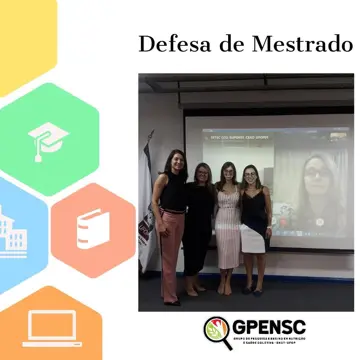
Pesquisa😍😍 . 🔹 Dessa vez, voltamos em fevereiro deste ano, quando aconteceu a Defesa de Mestrado da Waléria de Paula (@waleria_dp), que atualmente é doutoranda (Cipharma/UFOP) e integrante do nosso grupo de pesquisa. . 🔹 A dissertação intitulada “Sintomas de transtorno de ansiedade e depressão e uso de substâncias psicoativas entre estudantes ingressantes da Universidade Federal de Ouro Preto” faz parte do Projeto de Ansiedade e Depressão em universitários (PADu - @padufederais) e teve como objetivo avaliar a prevalência dos sintomas de ansiedade e depressão e do uso de substância psicoativas e os fatores associados em estudantes universitários do primeiro período da #UFOP. . 🔹 O trabalho foi orientado pela professora Dra. Adriana Lúcia Meireles (@dri_meireles), coorientado pela professora Dra. Renata C. R. M. do Nascimento (@recmacedo) e desenvolvido no Programa de Pós-Graduação em Saúde e Nutrição (PPGSN/UFOP). Além disso, contou com a contribuição da banca composta pela professora Dra. Elaine Leandro Machado (DMPS/UFMG) e pela professora Dra. Clareci Silva Cardoso (UFSJ). . . Parabéns Waléria pela sua contribuição na ciência brasileira! 👏👩🏻🏫✨
Defesa de mestrado de Fátima Costa Oliveira
16/07/2020
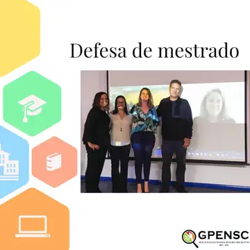
InstitucionalHoje é dia de #tbt e temos uma recordação muito especial para compartilhar com vocês, a Defesa de Mestrado da Fátima Costa Oliveira (@fatimaoliveira3936), que aconteceu em fevereiro, na #UFOP 🎉🎈 . A dissertação da Fátima, intitulada “Associação de componentes dietéticos relacionados à inflamação e à microbiota intestinal com a prevalência de depressão em egressos universitários (Projeto CUME)”, faz parte do Projeto CUME (@projeto_cume), foi desenvolvida sob a orientação da professora Dra Júlia Cristina Cardoso Carraro e coorientação da professora Dra Raquel de Deus Mendonça (@raquelmendonca_enut), no Programa de Pós-Graduação em Saúde e Nutrição (PPGSN/UFOP). . O trabalho contou também com as contribuições da banca avaliadora, composta pela professora Dra. Josefina Bressan (@josefinabressan) (DNS/UFV; coordenadora do Projeto CUME) e do professor Dr. George Luiz Lins Machado Coelho (EMED/UFOP). . . Parabenizamos a Fátima pela defesa e por sua valiosa contribuição na ciência nacional! 👩🏻🏫👏🏻
GPENSC relembra pesquisa de Thaís Sabião
18/06/2020
 Institucional
Institucional
🥳🥳 . . A Thaís Sabião foi aluna e integrante do nosso grupo de pesquisa no ano de 2019 e conduziu sua pesquisa intitulada: “Capacidade antioxidante da dieta e hipertensão arterial entre fumantes e não fumantes egressos das Universidade Mineiras” sob a orientação da professora Aline Silva Aguiar e coorientação da professora Júlia Cristina Cardoso Carraro. A sua pesquisa teve desenho transversal e realizada com egressos de cinco instituições federais de ensino superior situadas no estado de Minas Gerais participantes do projeto CUME @projeto_cume (Coorte de Universidades Mineiras) e teve como objetivo investigar a associação do fumo com a hipertensão e ainda, analisar se a capacidade antioxidante total (CAT) da dieta atua como mediador desse desfecho entre os participantes. O trabalho também contou com as contribuições das professoras Adriana Meireles (@dri_meireles (UFOP) e Fernanda Vidgal (@fcvidigal) (UNIFAL) 👏🏻👏🏻👏🏻 . . . Parabéns Thaís, por auxiliar no desenvolvimento da ciência no país 👩🏻🏫
Conheça Mariana Carvalho de Menezes
27/05/2020
 Institucional
Institucional
😍 Conheçam um pouco mais sobre a Professora Mariana. . A professora Mariana Carvalho de Menezes possui graduação em Nutrição, é especialista em Saúde com ênfase em Epidemiologia, Mestre em Saúde e Enfermagem, Doutora em Enfermagem e Saúde com ênfase em Saúde Pública, sendo que, todas suas titulações foram obtidas pela Universidade Federal de Minas Gerais (UFMG). Mariana também fez Doutorado sanduíche na School of Public Health, Drexel University, Philadelphia, USA. Atualmente, é professora Adjunta do Departamento de Nutrição Clínica e Social da Universidade Federal de Ouro Preto (UFOP). É pesquisadora do projeto SALURBAL (Drexel University; Fiocruz-RJ), do Grupo de Intervenções em Nutrição (GIN-UFMG), do Grupo de Estudos, Pesquisas e Práticas em Ambiente Alimentar (GEPPAAS-UFMG) e do Grupo de Pesquisa e Estudos em Nutrição e Saúde Coletiva (GPENSC-UFOP). Possui experiência na área de Saúde Pública, com ênfase em Epidemiologia Nutricional, atuando principalmente nos temas: ambiente alimentar, consumo alimentar e intervenção nutricional.
Defesa de mestrado de Ana Carla de Alcântara
22/05/2020
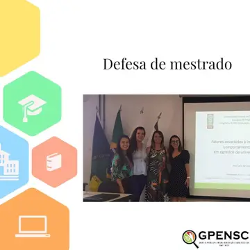
InstitucionalHoje, temos uma lembrança muito especial, a Defesa de Mestrado da Ana Carla de Alcântara, que aconteceu em fevereiro, na #UFOP 👩🏻🎓👏🏻 A dissertação intitulada “Fatores associados à inatividade física e ao comportamento sedentário em egressos de universidades mineiras” faz parte do Projeto CUME (@projeto_cume), foi desenvolvida com a orientação da professora Dra. Adriana Lúcia Meireles e co-orientação da professora Dra. Júlia Cristina Cardoso Carraro, no Programa de Pós-Graduação em Saúde e Nutrição (PPGSN/UFOP). O trabalho também contou com as contribuições das professoras Dras. Milene Cristine Pessoa (UFMG) e Aline Elizabeth da Silva Miranda (UFMG), que compuseram a banca examinadora.
Hillary investiga polifenóis e hipertensão
15/05/2020
 Institucional
Institucional
Oi pessoal, hoje vamos conhecer um pouquinho da pesquisa de um dos integrantes do GPENSC 👩🏻🎓📚 A Hillary é nutricionista formada pela Universidade Federal de Ouro Preto em 2018, e ela gostou tanto da universidade que resolveu ficar por aqui mais um pouco e voltou a ser aluna em 2019. Hoje ela tem sua pesquisa orientada pela professora Dra. Júlia Carraro (@julia_carraro ) e coorientada pela professora Dra. Raquel Mendonça (@raqueldmendonca ). Intitulada, “Associação entre o consumo de polifenóis e hipertensão arterial sistêmica em participantes da Coorte de Universidades Mineiras (Projeto CUME)”, a pesquisa da Hillary propõe avaliar a associação entre o consumo de polifenóis da dieta e a incidência de hipertensão arterial nos egressos das Universidades Federais de Minas Gerais, participantes do projeto CUME (@projeto_cume -Coorte de Universidades Mineiras). É uma pesquisa super importante pois as doenças cardiovasculares, dentre elas a hipertensão arterial, foram as principais causas de óbito no mundo 🚨 no período de 2000 a 2012, segundo dados da Organização Mundial da Saúde, e estudos epidemiológicos mostraram associações entre consumo de polifenóis, e redução de risco de doenças crônicas entre elas as doenças cardiovasculares. Os polifenóis são metabólitos secundários das plantas e atuam como fator de proteção tanto nos processos inflamatórios e disfunção endotelial implicados no desenvolvimento de doenças. Quer saber mais sobre a pesquisa? Continue nos acompanhando!
Conheça Júlia Cristina Cardoso Carraro
13/05/2020
 Institucional
Institucional
Conheçam um pouco mais sobre a Professora Júlia. . A professora Júlia Cristina Cardoso Carraro possui graduação em Nutrição pela UFV, Mestrado e Doutorado em Ciência da Nutrição pela mesma instituição e Doutorado Sanduíche pela Universidad de Navarra (Pamplona, Espanha), no Departamento de Ciéncia de la Alimentación, y Fisiología. Professora adjunta de Nutrição Clínica do Departamento de Nutrição Clínica e Social e professora permanente do Programa de Pós–Graduação em Saúde e Nutrição da UFOP. Coordenadora do Ambulatório de Nutrição e do projeto de extensão Atenção Nutricional na Síndrome Metabólica. Experiência nas áreas de genômica nutricional, obesidade e síndrome metabólica.
O GPENSC atualmente conta com quatro linhas principais de pesquisa. Ficou curioso?
06/05/2020
 Institucional
Institucional
Vamos falar um pouquinho sobre cada uma delas a seguir. . Análise do Consumo Alimentar e Estado Nutricional de Populações: nesta linha de pesquisa, estão sendo desenvolvidos trabalhos sobre ingestão de polifenóis e consumo de alimentos ultraprocessados entre egressos de universidades mineiras. . Epidemiologia das Doenças Crônicas Não Transmissíveis: esta linha de pesquisa conta com estudos sobre fatores de risco e proteção (como prática de atividade física, comportamento sedentário, práticas alimentares e outros hábitos de vida de universitários, egressos e trabalhadores de turnos alternantes) associados ao acometimento de doenças crônicas não transmissíveis. . Carga Global de Doenças (GBD): nesta linha, estão sendo conduzidos estudos sobre a carga das doenças crônicas não transmissíveis na população adulta brasileira relacionada à alimentação inadequada e ao excesso de peso e seus custos financeiros para o Sistema Único de Saúde. . Ambiente Alimentar: esta linha de estudo compreende a avaliação da mudança temporal do ambiente comunitário de uma metrópole. . Para saber mais detalhes sobre as linhas de pesquisa e sobre os projetos que estão em andamento, continuem acompanhando nossa página! . #gpensc #ufop #pesquisa #ensino #extensão #nutrição #saúdecoletiva #saúde
Nossa homenagem e felicitações a todos os trabalhadores!
01/05/2020
 Institucional
Institucional
Que o dia de hoje seja lembrado pela valorização de todas as profissões que nos auxiliam e nos inspiram dias melhores 🌠
Conheça os membros do GPENSC!
29/04/2020
 Institucional
Institucional
A professora Adriana Lúcia Meireles possui graduação em Nutrição pela UFOP, Mestrado e Doutorado em Saúde Pública/Epidemiologia pela Faculdade de Medicina da UFMG. Professora adjunta do Departamento de Nutrição Clínica e Social e professora permanente do Mestrado e Doutorado em Saúde e Nutrição da UFOP. Líder do Grupo de Pesquisa e Estudos em Nutrição e Saúde Coletiva (GPENSC). Coordenadora geral do PADu (Projeto de Ansiedade e Depressão em universitários). Trabalha com projetos que envolvem epidemiologia das doenças crônicas não transmissíveis e saúde urbana.
Cidadania, Saúde e Sustentabilidade
05/11/2024
 Extensão
Extensão
Hoje, vamos divulgar a VI edição do Congresso Nacional de Alimentos e Nutrição - CONAN (@conan_enut), realizado pela Escola de Nutrição da UFOP (@enut_ufop). . 📚 O Congresso terá como tema central “Cidadania, Saúde e Sustentabilidade”, integrando os Objetivos de Desenvolvimento Sustentável (ODS) da ONU, o conhecimento científico produzido no Brasil e as ações de extensão junto às comunidades. Esse tema reflete a urgência de integrar aspectos sociais, ambientais e de saúde nessas áreas. . 🎬 A programação será intensa e diversificada, incluindo palestras, cursos, oficinas, rodas de conversa, apresentações de trabalhos científicos e de atividades extensionistas. . 🗓️ O CONAN acontecerá entre os dias 26 e 30 de maio de 2025, no Centro de Artes e Convenções da UFOP. . 🔗 As inscrições já estão abertas. Para realizar sua inscrição, acesse o site: https://conan.ufop.br/inscricoes. . 💻 Para mais informações e ficar por dentro de toda a programação siga página do evento no Instagram: @conan_enut. Não deixe de participar!
Episódio: Higiene do sono
09/04/2024
 Extensão
Extensão
O GPENSC recomenda o episódio “Higiene do sono”, do podcast UFOP CAST, que é uma iniciativa do projeto de extensão Viva Mais (@vivamais.ufop) em parceria com a rádio UFOP (@radioufop ). . 📝 O episódio faz parte do “Rádio ciência na rua”, que traz informações, educação e ciência em uma só sintonia. Você sabia que suas atividades e hábitos diários, especialmente antes de dormir, podem influenciar qualidade do seu sono ou contribuir para episódios de insônia? . 📚 Na indicação de hoje, você terá a oportunidade de aprender mais sobre a importância de uma boa noite sono e recomendações importantes para mudança de hábitos e efetividade do seu descanso, em busca de melhorar sua qualidade de vida e saúde. . 👥 O episódio conta com a participação do professor Dr. Luiz Menezes (@luizmenezes__), que é doutor em Saúde e Nutrição e professor substituto na Escola de Nutrição (ENUT) da UFOP e colaborador no Programa de Pós-Graduação em Saúde e Nutrição (@ppgsn.ufop). . 🔎 Esse e outros episódios do podcast UFOP CAST estão disponíveis no Spotify. . 🗣️ Gostou da dica? Compartilha com os amigos e aproveita para salvar essa recomendação.
Episódio: Uso de substâncias - Álcool
05/12/2023
 Extensão
Extensão
O GPENSC recomenda o episódio “Uso de substâncias - Álcool", do podcast UFOP CAST, que é uma iniciativa do projeto de extensão Viva Mais (@vivamais.ufop) desenvolvido pela escola de Medicina da UFOP. . 📝 O episódio faz parte de uma série de podcasts que aborda temáticas referentes a covid-19. Você sabia que a pandemia pode ter afetado, além da saúde física, os hábitos de vida dos indivíduos? . 📚 Na indicação de hoje, você terá a oportunidade de aprender mais informações sobre o hábito da população durante a covid-19 em relação ao consumo de bebidas alcoólicas. . 👥 O episódio conta com a participação da doutoranda Amanda Popolino (@amandapopolinonutri), que é nutricionista e doutoranda em Saúde e Nutrição pelo Programa de Pós Graduação em Saúde e Nutrição (@ppgsn.ufop). . 🔎 Esse e outros episódios da série sobre a covid-19 no UFOP CAST estão disponíveis no Spotify. . 🗣️ Gostou da dica? Compartilha com os amigos e aproveitar para salvar essa recomendação.
Episódio: Transtornos de saúde mental e sono relacionados à covid
29/08/2023
 Extensão
Extensão
O GPENSC recomenda o episódio “Transtornos de saúde mental e sono relacionados à covid”, do podcast UFOP CAST, que é uma iniciativa do projeto de extensão Viva Mais (@vivamais.ufop) desenvolvido pela escola de Medicina da UFOP. . 📝 O episódio faz parte de uma série de podcasts que trata sobre temáticas referentes a covid-19. Você sabia que a pandemia pode ter afetado para além da saúde física das pessoas? . 📚 Na indicação de hoje, você terá a oportunidade de aprender mais informações sobre os transtornos mentais e sono e como estão relacionados à covid, ao cotidiano pessoal e social dos indivíduos. . 👥 O episódio conta com a participação do Dr. Luiz Menezes (@menezes.nutri), que é Doutor em Saúde e Nutrição e pesquisador do GPENSC. . 🔎 Esse e outros episódios da série sobre a covid-19 do poscat UFOP CAST estão disponíveis no Spotify. . 🗣️ Gostou da dica? Compartilha com os amigos e aproveitar para salvar essa recomendação.
Sistema alimentar, escolhas e saúde
01/09/2026
 Ensino
Ensino
Você sabia que o sistema alimentar e a produção atual impactam diretamente nossas escolhas e saúde? 💭 O estudo qualitativo conduzido por Anabele Pires Santos, Raquel de Deus Mendonça e demais pesquisadoras da Universidade Federal de Ouro Preto (UFOP) e da Universidade Federal de Minas Gerais (UFMG) investigou a percepção de usuários com hipertensão arterial acompanhados na Atenção Primária à Saúde (APS) em Ouro Preto, Minas Gerais, sobre o sistema alimentar e suas implicações para a saúde. 💡 O que foi investigado? Os pesquisadores realizaram um estudo qualitativo com análise documental. A coleta de dados ocorreu entre novembro e dezembro de 2021 por meio de quatro oficinas com 25 participantes no total (média de 7 pessoas por grupo) utilizando a técnica do “mapa falante”. O objetivo foi mapear as vivências, representações, crenças e percepções dos usuários sobre o sistema alimentar local. 📊 Principais achados: Os achados revelam a transição do cultivo e preparo familiar para o alto consumo de ultraprocessados, acompanhada da perda de sabor, textura e diversidade dos alimentos. Os usuários associaram o modelo agrícola intensivo ao uso excessivo de agrotóxicos e poluição por plásticos, identificando-o como risco à saúde humana e ambiental. Além disso, o preço é o principal determinante de compra. Ouro Preto enfrenta dependência de cadeias longas de abastecimento (como a CEASA/BH) devido à baixa produção agrícola local, impactada pela mineração, enquanto as feiras livres foram destacadas como essenciais para o acesso a alimentos frescos. ✅ Conclusão: O estudo conclui que os hipertensos veem o sistema atual como barreira para comer bem. Fica evidente a necessidade de políticas públicas intersetoriais para fortalecer feiras, incentivar a agricultura local e ampliar o acesso a alimentos frescos. #alimentaçãosaudável #saudepublica #agricultura #alimentos
Barreiras à alimentação saudável entre pessoas com hipertensão
24/06/2026
 Ensino
Ensino
👉🏽 Você sabia que o ambiente em que vivemos e a forma como o percebemos podem ditar nossas escolhas alimentares, funcionando como barreiras ou promotores de uma alimentação saudável? 📚Estudo conduzido por Bruna Aparecida Avelar (@brunnaavelar), juntamente com pesquisadores do GPENSC, investigou as barreiras e os facilitadores da alimentação saudável sob a perspectiva de usuários com hipertensão arterial acompanhados na Atenção Primária à Saúde (APS) em Ouro Preto, Minas Gerais. 💡 O que foi investigado? Os pesquisadores realizaram um estudo com abordagens quantitativa e qualitativa. Na etapa quantitativa, avaliaram a percepção de 176 participantes utilizando a versão brasileira do questionário Perceived Nutrition Environment Measures Survey (NEMS-P). Na etapa qualitativa, realizaram oficinas com 25 participantes, utilizando a técnica do “mapa falante” em grupos focais para mapear as vivências e percepções sobre o sistema alimentar local. 📊 Principais achados: Os participantes apontaram que o ambiente atual impõe mais dificuldades do que incentivos para uma alimentação saudável. Entre as dificuldades, destacaram-se o fácil acesso a alimentos ultraprocessados, os preços elevados e a qualidade/aparência insatisfatórias de frutas e verduras, além das mudanças nos hábitos de comensalidade. Entre os incentivos, foram mencionados a disponibilidade e a variedade de frutas e vegetais no bairro, a valorização das feiras livres e dos alimentos provenientes da agricultura familiar, bem como o resgate de práticas domésticas positivas, como o cultivo de hortas comunitárias ou caseiras. ✅ O estudo concluiu que os indivíduos percebem alto acesso financeiro e físico a produtos ultraprocessados, em contrapartida a um baixo acesso a alimentos frescos. Esses achados reforçam a necessidade de políticas públicas intersetoriais que integrem saúde, segurança alimentar e sustentabilidade, promovendo a taxação de ultraprocessados, o subsídio a alimentos frescos e o fortalecimento dos circuitos locais de agricultura familiar. #saudecoletiva #nutrição #epidemiología #ufop
Alimentação no Dia Mundial do Meio Ambiente
05/06/2026
 Ensino
Ensino
Neste Dia Mundial do Meio Ambiente, reforçamos uma reflexão importante: a forma como produzimos, distribuímos e consumimos alimentos impacta o meio ambiente, influenciando o uso de recursos naturais, a geração de resíduos e a sustentabilidade dos sistemas alimentares. 🍽️🌍 Promover escolhas alimentares mais conscientes é também uma forma de cuidar do planeta e da saúde coletiva. 💚 #diamundialmeioambiente #alimentaçãosustentavel #sustentabilidade
Que jornada incrível no #GPENSC até agora!
18/08/2025
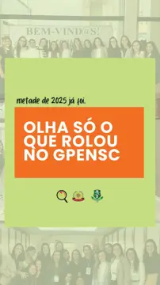
Ensino🚀 Entre palestras inspiradoras, trocas de experiências, reencontros especiais e muito aprendizado, cada momento tem sido único. 📸 Aqui vai um pouquinho do que já vivemos até o momento, e ainda tem mais por vir! #gpensc #grupodepesquisa #universidade #gpensc saudecoletiva #nutriçao
Workshop sobre pegada de carbono
15/08/2025
 Ensino
Ensino
Workshop GPENSC! Pegada de carbono: do conceito à ação Quer compreender o que é a pegada de carbono e aprender a aplicar esse conhecimento na prática? No dia 18/08, o GPENSC promove um encontro especial sobre esse tema com a doutoranda Tania Manjarrés (@taniamanjarresfit). 📅 Data: 18/08 🕘 Horário: 9h às 16h • Parte teórica: 09:00 às 12:00 • Parte prática: 14:00 às 16:00 📍 Local: Lamusc Venha transformar conceitos em ação e contribuir para um futuro mais sustentável! #PegadaDeCarbono #Sustentabilidade #MeioAmbiente #MudançasClimáticas #DoConceitoÀAção #NutriçãoESustentabilidade
Quer aprimorar suas habilidades para apresentações e palestras acadêmicas?
04/08/2025
 Ensino
Ensino
Então não perca nosso workshop sobre oratória acadêmica com a pesquisadora Dra. Irene Justiniano (@irenecsj_). 🗓 Data: 08/08 ⏰ Horário: 10h 📲 Inscreva-se agora pelo QR Code! Garanta sua vaga e fale com mais confiança e clareza! #GPENSC #saudecoletiva #pesquisacientifica #pesquisador
Sandhi Barreto discute a revisão de artigos científicos
26/05/2025
 Ensino
Ensino
Você já parou para pensar em quais habilidades são essenciais para revisar artigos científicos com excelência? Para aprofundar essa discussão, o GPENSC convida você para uma palestra imperdível com a Prof.ª Dr.ª Sandhi Barreto 🗓 Data: 02/06/25 📍 Local: LAMUSC/ENUT e online pelo link 🎤 Palestrante: Prof.ª Dr.ª Sandhi Barreto #PesquisaCientífica #RevisãoDeArtigos #HabilidadesAcadêmicas #GPENSC #CiênciaDeQualidade
VI Congresso Nacional de Alimentos e Nutrição
02/05/2025
 Ensino
Ensino
📢 É com grande entusiasmo que anunciamos a VI edição do Congresso Nacional de Alimentos e Nutrição – CONAN (@conan_enut)! ⠀ De 26 a 30 de maio de 2025, a Escola de Nutrição da UFOP convida você a participar de um dos mais importantes espaços de diálogo nas áreas de alimentos e nutrição. Com o tema “Cidadania, Saúde e Sustentabilidade”, o CONAN 2025 propõe reflexões integradas aos Objetivos de Desenvolvimento Sustentável (ODS), unindo ciência, extensão e compromisso social. ⠀ Prepare-se para uma programação rica em debates, experiências e conexões transformadoras! E nós, do GPENSC, estaremos participando com palestras e apresentação de trabalhos. ⠀ Faça sua inscrição e venha participar do CONAN com a gente! ⠀ #CONAN2025 #Nutrição #UFOP #CongressoCientífico #GPENSC
Você já parou para pensar no impacto ambiental das suas escolhas alimentares?
28/04/2025
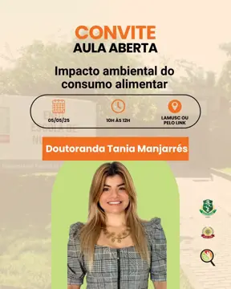
Ensino🌎 Refletir sobre esse tema é essencial para construirmos um futuro mais sustentável e, para aprofundar essa discussão, o GPENSC convida você para uma palestra imperdível com Tania Manjarrés (@taniamanjarresfit). 🗓 Data: 05/05/25 📍 Local: LAMUSC/ENUT e online pelo link 🎤 Palestrante: Tania Manjarrés Esperamos você! 💚 #ImpactoAmbiental #ConsumoAlimentar #Sustentabilidade
Perfis sobre pesquisa, ensino e escrita científica
04/07/2024
 Ensino
Ensino
Hoje, a nossa recomendação no #IndicaGPENSC são Instagrans que ensinam e dão dicas sobre pesquisa baseada em evidências, ensino, escrita científica e concursos. . 1️⃣ A primeira indicação é o @pesquisanapratica. Nele, vocês terão acesso a dicas de como dominar a escrita científica. . 2️⃣ A segunda indicação é a @dra.anavidotto. Com ela, vocês terão acesso a dicas de como se preparar para a prova escrita, didática e análise de currículo dos concursos para Universidade Federais. . 3️⃣ A terceira indicação é @thiagovidotto. Com ele, vocês terão a oportunidade de conhecer e aprender sobre estatística. . 4️⃣ A quarta indicação é @leo_costa_pbe. Com ele, vocês terão acesso a importantes dicas sobre a prática baseada em evidências e sobre a verdadeira ciência. . 5️⃣ A quinta e última dica é o @academica_pesquisa. Nele, vocês terão acesso a diversos aprendizados essenciais para o mestrado e o doutorado. . 👉🏼 Arraste para o lado e conheça os perfis que nos auxiliam em busca da excelência na nossa formação acadêmica! . 🗣️ Gostou da dica? Compartilha com os amigos e aproveita para salvar essa recomendação.
Jornada acadêmica e profissional sobre os caminhos da pesquisa
02/05/2024
 Ensino
Ensino
Na próxima semana, entre os dias 08 a 10 de maio de 2024, vai acontecer a “Jornada acadêmica e profissional: desvendando caminhos da pesquisa”, na Escola de Nutrição (ENUT) da UFOP. . 👩🏻💻 Nós, do GPENSC, iremos participar do evento ministrando alguns workshops com temas gerais relacionados às linhas de pesquisa do Programa de Pós-Graduação em Saúde e Nutrição - PPGSN (@ppgsn.ufop). . 👉🏽 Arraste para o lado e confira mais detalhes sobre os workshops que serão ministrados pelos membros do GPENSC. . 📌 Participe conosco! Inscreva-se e fique por dentro de todas as novidades e informações sobre a Jornada no perfil do evento @integracaosaudenutricao e do PPGSN!
Primeira Jornada Acadêmica e Profissional de pesquisa
16/04/2024
 Ensino
Ensino
Hoje, vamos divulgar a 1º edição da Jornada Acadêmica e Profissional: desvendando caminhos da pesquisa, que será realizada pela Comissão Estratégica de Fortalecimento em parceria com o Programa de Pós-Graduação em Saúde e Nutrição da Universidade Federal de Ouro Preto - PPGSN/ UFOP (@ppgsn.ufop). . 🎯 O objetivo do evento é discutir ciência, aperfeiçoar conhecimentos, reconhecer e premiar os trabalhos de excelência produzidos por mestrandos e doutorandos do PPGSN. . 🗓️ A Jornada acadêmica e profissional acontecerá nos dias 08, 09 e 10 de maio de 2024, de forma presencial na Escola de Nutrição da UFOP. . 👥 A 1ª edição contará com participação de alunos de pós-graduação e pesquisadores do GPENSC ministrando minicursos. Não deixe de participar! . 🔗 Para mais informações e para ficar por dentro de toda a programação siga página do evento no instagram: @integracaosaudenutricao.
Revoluções tecnológicas e as mudanças sociais
17/11/2023
 Ensino
Ensino
Nos dias 20 e 21 de novembro, vai acontecer a 15ª edição do Encontro de Saberes 2023, realizado pela UFOP (@minhaufop). O tema desta edição será "Revoluções tecnológicas e as mudanças sociais". . 📍 O evento será no formato presencial com atividades no Centro de Artes e Convenções, em Ouro Preto. Para participar, é necessário fazer a inscrição no site https://encontrodesaberes.ufop.br/. . 👩🏻🔬 Nós do GPENSC, iremos apresentar trabalhos/minicurso durante o evento e contamos com a presença de todos vocês! . 👉🏻 Arraste para o lado e confira mais detalhes sobre os nossos trabalhos.
Ferramentas para elaborar gráficos
15/09/2023
 Ensino
Ensino
Hoje, a nossa recomendação no #IndicaGPENSC são sites que trazem recursos para a elaboração de gráficos. . 📊 Gráficos são como a linguagem universal dos números, pois transformam dados complexos em representações visuais que qualquer pessoa pode entender. Eles nos permitem: . 1️⃣ Contextualizar: eles ajudam a contar histórias e revelam tendências que não estão descritas. . 2️⃣ Tomar decisões informadas: são ferramentas cruciais para tomada de decisões baseadas em evidências científicas. . 3️⃣ Comunicar: gráficos tornam informações mais acessíveis e cativantes, facilitando a comunicação de resultados de pesquisa e dados importantes. . 4️⃣ Identificar padrões: permitem detectar padrões, anomalias e insights valiosos que podem ser fundamentais para avançar em diversas áreas. . ⚠️ É por isso que elaborar gráficos condizentes com o objetivo do estudo é tão importante e hoje, temos diversos sites que nos ajudam, tornando os números mais claros e as informação mais poderosas. . 👉🏻 Arraste para o lado e conheça alguns desses sites, que nos ajudam nessa etapa tão importante da pesquisa acadêmica. . 🗣️ Gostou da dica? Compartilha com os amigos e aproveitar para salvar essa recomendação.
Gráficos: o que precisamos saber?
08/08/2023
 Ensino
Ensino
É com muita alegria que o GPENSC convida para o minicurso, intitulado “Gráficos: o que precisamos saber?”. . 🗓️ Nosso encontro será dia 14 de agosto (segunda-feira), às 10h00, e contaremos com a participação da professora Dra. Raquel de Deus Mendonça (@raquelmendonca_enut). . 📝 O intuito do encontro é conversar com os alunos sobre os diferentes tipos de gráficos que podem ser utilizados em trabalhos científicos. . 📍 O minicurso será presencial, no Laboratório Multiusuário de Pesquisa em Saúde Coletiva (LAMUSC) da Escola de Nutrição (ENUT/UFOP). . 🗣️ Venha participar conosco, não fique de fora! Anota aí na agenda e #vemcomagente. Esperamos vocês!
GPENSC participa da Mostra de Profissões da UFOP
06/07/2023
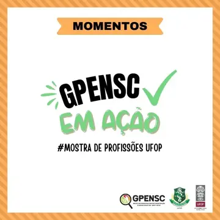
EnsinoO GPENSC relembra participação do GPENSC na Mostra de Profissões da UFOP, que ocorreu no dia 17 de junho de 2023. . 🎯 O objetivo do evento foi apresentar os cursos da universidade por meio de palestras, salas interativas, apresentações culturais e visitas monitoradas a estandes e laboratórios. A última edição do evento, organizado pela Pró-Reitoria de Graduação (Prograd), através do Núcleo de Apoio Pedagógico (NAP), aconteceu em 2019, no Campus Morro do Cruzeiro, em Ouro Preto, e trouxe para dentro da universidade cerca de seis mil estudantes do ensino médio de 110 escolas públicas e privadas de várias regiões de Minas Gerais. . 🔎 O evento como a Mostra de Profissões é de extrema importância para a sociedade, já que o momento da escolha de uma profissão é tão marcante, e em meio a tantas opções, algumas inclusive desconhecidas, entender sobre as carreiras e os possíveis caminhos é uma forma de facilitar a escolha. . 👥 Membros do GPENSC apresentaram os diversos projetos desenvolvidos pelo grupo, como: PADu- Multicêntrico, Projeto Cume, ESANP e covid-Inconfidentes. . 🗣 Continue nos acompanhando e fique por dentro de todas as nossas atividades e projetos!
Como elaborar uma pergunta/hipótese de pesquisa?
03/05/2023
 Ensino
Ensino
É com muita alegria que o GPENSC convida para o minicurso, intitulado " Como elaborar uma pergunta/hipótese de pesquisa?". . 🗓️ Nosso encontro será dia 08 de maio (segunda-feira), às 10h00, e contaremos com a participação do pós-doutorando Luiz Menezes(@luizmenezes__). . 📝 O intuito do encontro é auxiliar os alunos sobre como elaborar uma pergunta/hipótese de pesquisa, que costuma ser dúvida frequente no início da elaboração de um trabalho acadêmico. . 📍 O minicurso será presencial, no Laboratório Multiusuário de Pesquisa em Saúde Coletiva (LAMUSC) da Escola de Nutrição (ENUT/UFOP). . 🗣️ Venha participar conosco, não fique de fora! Anota aí na agenda e #vemcomagente. Esperamos vocês!
Saúde mental de universitários e uso da internet
07/03/2023
 Ensino
Ensino
O GPENSC apresenta o artigo intitulado "Key characteristics including sex, sexual orientation and internet use associated with worse mental health among university students in Brazil and implications", de autoria da doutoranda Waléria de Paula (@waleria_dp) juntamente com outros pesquisadores da UFOP. . 🎯 O artigo, um dos produtos da dissertação de mestrado da Waléria, teve como objetivo avaliar a prevalência e os fatores associados aos sintomas de ansiedade e de depressão entre universitários do primeiro semestre da Universidade Federal de Ouro Preto. . 📝 Trata-se de um estudo transversal realizado com estudantes do primeiro semestre de cursos de graduação. Os dados foram coletados por meio de um questionário impresso autoaplicável composto por variáveis sociodemográficas, estilos de vida, condições de saúde e a escala de ansiedade, depressão e estresse (DASS-21). O desfecho do estudo foi a presença de sintomas de ansiedade e de depressão. . 📈 Os resultados indicam que a prevalência de sintomas de ansiedade e de depressão foi de 42,5% e 33,2%, respectivamente. Observou-se associação positiva entre a presença dos transtornos mentais avaliados com sexo feminino, não heterossexual, cor da pele não branca, uso excessivo de internet, falta de atividade física, não frequentar festas universitárias, ter acompanhamento psicológico, histórico de ansiedade em parentes de primeiro ou segundo grau, autoavaliação de saúde ruim e uso de medicamentos psicotrópicos. . 💡 Os achados do estudo destacam a importância do desenvolvimento de programas de promoção da saúde mental e física entre a população universitária. . 🔗 Acesse o artigo: https://doi.org/10.1093/pubmed/fdab406
Comportamentos obesogênicos e depressão em universitários
15/02/2023
 Ensino
Ensino
O GPENSC apresenta o artigo intitulado “Age, skin color, self-rated health, and depression associated with co-occurrence of obesogenic behaviors in university students: a cross-sectional study”, de autoria da doutoranda Bruna Carolina Barbosa (@brunabcrb), juntamente com outros pesquisadores do GPENSC e da UFMG. . 🎯 O artigo, um dos produtos da dissertação de mestrado da Bruna, teve como objetivo estimar a prevalência e os fatores associados à coocorrência de comportamentos obesogênicos entre universitários. . 📝 Trata-se de um estudo transversal realizado com estudantes ingressantes em 2019 nos cursos de graduação de uma universidade pública brasileira. Os dados foram coletados entre abril e setembro de 2019, por meio de um questionário autoaplicável. O desfecho foi a coocorrência de comportamentos obesogênicos, mensurada a partir da soma de três comportamentos de risco: práticas alimentares inadequadas, inatividade física no lazer e comportamento sedentário. . 📈 Os resultados deste estudo indicam que os comportamentos obesogênicos são altamente prevalentes entre os estudantes universitários e tendem a ocorrer de forma simultânea. Observou-se que as práticas alimentares inadequadas constituíram o comportamento obesogênicos isolado mais prevalente (80,6%), que também foi o mais prevalente quando combinado com o comportamento sedentário (23,6%). Estudantes universitários com idade igual ou inferior a 20 anos, cor da pele não branca, autoavaliação de saúde ruim e sintomas depressivos tiveram maiores chances de ocorrência simultânea de comportamentos obesogênicos. . 💡 Esses achados destacam a importância de desenvolver e implementar ações para reduzir os comportamentos obesogênicos combinados no ambiente universitário. As instituições devem se concentrar na criação de um ambiente que promova comportamentos de proteção à saúde, como atividade física e alimentação saudável. . 🔗 Acesse o artigo: https://doi.org/10.1590/1516-3180.2022.0301.R1.10102022
Saúde e Nutrição Além das Fronteiras
29/09/2022
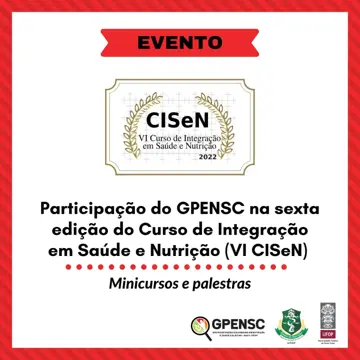
EnsinoNa próxima semana, entre os dias 03 a 07 de setembro de 2022, vai acontecer a sexta edição do Curso de Integração em Saúde e Nutrição (VI CISeN), com o tema “Saúde e Nutrição Além das Fronteiras” na UFOP. . 🧑🏻💻 Nós, do GPENSC, participaremos do evento por meio de apresentações de minicursos e palestras com os temas relacionados às duas linhas de pesquisa do Programa de Pós-Graduação em Saúde e Nutrição - PPGSN (@ppgsn.ufop). O objetivo é despertar o interesse de futuros pesquisadores que desejam ingressar no programa. . 👉🏽 Arraste para o lado e confira mais detalhes sobre os minicursos e palestras que serão ministrados pelos membros do GPENSC. . 📌 Participe conosco! Inscreva-se e fique por dentro de todas as novidades sobre o VI CISeN no perfil do evento @integracaosaudenutricao e do PPGSN!
VI CISeN: Saúde e Nutrição Além das Fronteiras
20/09/2022
 Ensino
Ensino
Vem aí o VI CISeN! . 🆕 Com muita alegria, divulgamos para vocês a sexta edição do Curso de Integração em Saúde e Nutrição (CISeN), com o tema “Saúde e Nutrição Além das Fronteiras”. . 🎯 O CISeN tem o objetivo de divulgar as linhas de pesquisa e atividades do Programa de Pós-Graduação em Saúde e Nutrição da UFOP - PPGSN/UFOP (@ppgsn.ufop) para os interessados em ingressar nos cursos de mestrado e doutorado do programa. Além disso, outras temáticas relevantes para a carreira acadêmica também são abordadas durante o evento. . 🗓️ O evento acontecerá presencialmente, e de forma gratuita, entre os dias 03 e 07 de outubro de 2022, no Auditório do Bloco de Salas de Aula da UFOP. . 👩🏻🏫 A sexta edição contará com a participação de alunos e professores do GPENSC ministrando palestras e minicursos. Serão 5 dias de muito conteúdo, troca e aprendizado! . 📌 Inscreva-se e fique por dentro de todas as novidades sobre o VI CISeN no perfil do evento @integracaosaudenutricao e do PPGSN!
ESANP - Estudo da Segurança Alimentar e Nutricional na pandemia de covid-19
08/08/2022
 Ensino
Ensino
Estamos com inscrições abertas para vagas de entrevistadores voluntários no estudo "ESANP - Estudo da Segurança Alimentar e Nutricional na pandemia de covid-19". . 👥 O ESANP é realizado pela Escola de Nutrição da Universidade Federal de Ouro Preto (ENUT/UFOP - @enut_ufop), em parceria com as Secretarias Municipais de Educação de Mariana e Ouro Preto, sob coordenação da professora Dra. Raquel de Deus Mendonça (@raquelmendonca_enut). . 🔸 Quem pode participar? Alunos de graduação e pós-graduação do curso de Nutrição. . 🔸 Como realizar a inscrição? Envie e-mail demonstrando interesse de colaborar com o ESANP para o seguinte contato: projetoescolas.enut@ufop.edu.br . 🔸 Qual é o prazo máximo das inscrições? Até o dia 08/08/22. . 🗣️ Não perca essa chance, venha fazer pesquisa com a gente!
Adesão ao acompanhamento nutricional na hipertensão
25/04/2022
 Ensino
Ensino
O GPENSC apresenta as alunas de Iniciação Científica (IC) que estão colaborando no Projeto HipertenSUS e que são membros do GPENSC. . 👩🏻🎓 A Bruna Barbosa Furtado (@brufurtado_) é aluna do quinto período de Nutrição da Universidade Federal de Ouro Preto (UFOP). Seu tema de pesquisa da IC é intitulado "Adesão à intervenção nutricional individual entre usuários com Hipertensão Arterial Sistêmica na Atenção Primária à Saúde de Ouro Preto, Minas Gerais", sob orientação da professora Dra. Raquel de Deus Mendonça (@raquelmendonca_enut) e coorientação da pós-doutoranda Anabele Pires Santos (@piresanabele). . 👩🏻🎓 A Gabriela da Silva Machado (@gabsmachados) é aluna do sexto período de Nutrição da UFOP. Seu tema de pesquisa é intitulado "Consumo de doces e bebidas açucaradas em hipertensos de Ouro Preto-MG". É orientada pela professora Dra. Renata Adrielle Lima (@renataadriellenutri) e coorientada pela professora Dra. Silvana Mara Luz Turbino (@silluzturbino). . 👩🏼🎓 A Laura Nunes Faria (@laura.nunesfaria) é aluna do sexto período do curso de Nutrição da UFOP. Seu tema de IC é intitulado “Adesão a estilos de vida saudáveis entre usuários com Hipertensão Arterial Sistêmica na Atenção Primária à Saúde de Ouro Preto”, sob orientação da professora Dra. Raquel de Deus Mendonça. . 👩🏻🎓 A Marília de Lima Alvares (@mariliadelimaalvares) é aluna do quinto período de Nutrição da UFOP. Seu tema de pesquisa é "Qualidade da dieta dos hipertensos da Atenção Primária à Saúde de Ouro Preto". É orientada pela professora Dra. Renata Adrielle Lima Vieira. . 🗣 Continue nos acompanhando para saber mais sobre o nosso grupo e os projetos que estamos desenvolvendo!
Equipe do GPENSC: pós-doutoranda Anabele Pires Santos
05/04/2022
Hoje, é dia de apresentar para vocês mais uma de nossas pesquisadoras, a pós-doutoranda Anabele Pires Santos (@piresanabele). . 👩🏻🎓 A Anabele é nutricionista graduada pela Universidade Federal de Ouro Preto (UFOP), possui especialização em Saúde Indígena e é doutora em Ciências da Saúde pelo Programa de Pós-Graduação em Medicina Translacional, ambos pela Escola Paulista de Medicina, da Universidade Federal de São Paulo (UNIFESP). . 📝 Trabalha com saúde indígena há 15 anos. Foi professora do curso de Nutrição da UFOP entre 2019 e 2021. Membro do Núcleo Executivo do Grupo de Trabalho Promoção da Saúde e Desenvolvimento Sustentável da Associação Brasileira de Saúde Coletiva (ABRASCO). Tem experiência na área de Saúde Coletiva, com ênfase em Saúde de Populações Indígenas, Políticas Públicas Saúde e Nutrição, Educação em Saúde, Agricultura Familiar e Segurança Alimentar e Nutrição. . 👩🏻💻 Atualmente, é pós-doutoranda pelo Programa de Pós-Graduação em Saúde e Nutrição (PPGSN), da UFOP, e pesquisadora do projeto "Efetividade de intervenção nutricional para controle da Hipertensão Arterial Sistêmica na Atenção Primária à Saúde" (Projeto HipertenSUS), sob supervisão da professora Dra. Raquel de Deus Mendonça (@raquelmendonca_enut). . 🗣️ Quer saber mais sobre o trabalho da Anabele e de outros trabalhos desenvolvidos pelo nosso grupo? Então, continue nos acompanhando!
Insegurança alimentar nas famílias de escolares
17/02/2022
O GPENSC relembra defesa do Trabalho de Conclusão de Curso (TCC) da aluna Mariana Silva Araújo, que aconteceu no dia 04 de novembro de 2021, via Google Meet. . 🔎 O TCC da Mariana, intitulado "Fatores sociais e econômicos associados à insegurança alimentar na pandemia da covid-19: domicílio dos alunos da rede municipal dos distritos de Mariana e Ouro Preto – MG", foi orientado pela professora Dra. Raquel de Deus Mendonça (@raquelmendonca_enut) e coorientado pela doutoranda Erica Costa Rodrigues (@costta.erica), ambas da UFOP. . 👥 Seu trabalho contou com as contribuições da banca composta pela professora Dra. Érika Cardoso dos Reis (@erikacareis - UFOP) e pela doutoranda Magda do Carmo Parajára (@magdaparajara - UFOP). . 🎇 Parabenizamos a Mariana pela aprovação e desejamos sucesso nas próximas etapas!
Depois de alguns dias off, estamos de volta com as nossas postagens!
18/01/2022
 Ensino
Ensino
🚀 E para começar o ano com tudo, hoje é dia de #IndicaGPENSC. Ah, especialmente nesse mês de janeiro, preparamos para vocês algumas outras recomendações. Então, fiquem de olho no nosso perfil! . 🌐 Hoje, queremos indicar o site da Universidade Aberta do SUS - UNA-SUS (@se_unasus). Criado em 2010, o sistema da UNA-SUS é coordenado pelo Ministério da Saúde. Os cursos da UNA-SUS têm a finalidade de capacitar e fornecer educação permanente aos profissionais que atuam no Sistema Único de Saúde (SUS). . 👩🏾⚕️ Os profissionais de saúde que atendam aos pré-requisitos dos cursos oferecidos poderão se inscrever. Além disso, o sistema UNA-SUS também têm cursos voltados para estudantes da área da saúde e de livre acesso. Os temas ofertados são diversos, incluindo desde diagnóstico e tratamento de doenças até a gestão e políticas públicas em saúde. . 💻 Os cursos são a distância e gratuitos. Vale a pena conferir os cursos na página da UNA-SUS e ficar de olho nas novidades! . 🔗 Acesse em: www.unasus.gov.br . 📌 Gostou da dica? Aproveite para salvar e compartilhar esse post!
GPENSC divulga quinta edição do WebCISeN
23/11/2021
 Ensino
Ensino
🆕 Com muita alegria, anunciamos a quinta edição do Curso de Integração em Saúde e Nutrição (CISeN). . 🎯 O WebCISeN tem o objetivo de divulgar as linhas de pesquisa e atividades do Programa de Pós-Graduação em Saúde e Nutrição da UFOP (PPGSN/UFOP) para os interessados em ingressar nos cursos de mestrado e doutorado do programa. Além disso, outras temáticas relevantes para a carreira acadêmica também são abordadas durante o evento. . 🗓️ O evento acontecerá entre os dias 06 e 10 de dezembro de 2021 e será totalmente online e gratuito. . 📌 Inscreva-se e fique por dentro de todas as novidades sobre o WebCISeN no perfil do @integracaosaudenutricao. . Vai ser imperdível! 🤩
Iniciação científica no PADu-Multicêntrico
05/11/2021
 Ensino
Ensino
O GPENSC apresenta alguns alunos de Iniciação Científica (IC) que estão colaborando com o PADu-Multicêntrico (Estudo das Federais de Minas Gerais) e que são membros do GPENSC. . 👩🏻🎓 A Fernanda Vimieiro (@fernandavimieiro) é aluna do sétimo e oitavo período de Nutrição da Universidade Federal de Ouro Preto (UFOP), orientada pela professora Dra. Adriana Lúcia Meireles (@dri_meireles) e coorientada pela mestranda Bruna Carolina Barbosa (@brunabcrb18). . 👨🏻🎓 Matheus Santos Cordeiro (@mathheuscor) é aluno do sexto período de Nutrição da UFOP. Na IC, pretende trabalhar com Insegurança Alimentar e Nutricional e ambiente alimentar nos domicílios de escolares, tema de estudo que desenvolverá seu Trabalho de Conclusão de Curso (TCC), sob orientação da professora Dra. Adriana Lúcia Meireles. . 👩🏽🎓 A Mídian de Oliveira Silva (@mihcardoso2) é aluna do sétimo período de Nutrição da UFOP. Seu tema de pesquisa é intitulado “Consumo de alimentos ultraprocessados associado ao sono entre estudantes universitários durante a pandemia da COVID-19”. Mídian é orientada pela professora Dra. Adriana Lúcia Meireles. . 👩🏻🎓 A Nádia da Silva Luz (@nadias.luz) é aluna do quarto período de Nutrição da UFOP, orientada pela professora Dra. Adriana Lúcia Meireles. Na IC, pretende trabalhar com os impactos socioeconômicos na alimentação durante a pandemia da COVID-19. É orientada pela professora Dra. Adriana Lúcia Meireles. . 👩🏻🎓 A Scarlarty Silveira Correa (@scarlartys) é aluna do sétimo período de Nutrição da UFOP. Seu tema de pesquisa e do TCC dentro do PADu-Multicêntrico é “Hábito de beliscar e comportamento sedentário entre estudantes universitários”. Scarlarty é orientada pela professora Dra. Adriana Lúcia Meireles e coorientada pela mestranda Bruna Carolina Barbosa. . 🗣️ Continue nos acompanhando para saber mais sobre o nosso grupo e os projetos que estamos desenvolvendo!
III Seminário Latino-Americano de Ambiente Alimentar e Saúde
26/10/2021
Nessa semana, nos dias 28 e 29 de outubro, vai acontecer o III Seminário Latino-Americano de Ambiente Alimentar e Saúde - III SEMLAAAS (@semlaaas). . 🗣️ Nós, do GPENSC, participaremos do III SEMLAAAS. Contaremos com a apresentação da doutoranda Irene Carolina Sousa Justiniano (@irenecsj_) e queremos convidar você que vai participar do evento para conhecer esse trabalho desenvolvido pelo nosso grupo, em parceria com o GEPPAAS/UFMG (@geppaasufmg). . 👉🏽 Arraste para o lado e confira mais detalhes sobre a apresentação. . ⚠️ E se você ainda não se inscreveu no evento, o link está na nossa bio. Corre que ainda dá tempo! Lembrando que o evento é gratuito! . Nos vemos no III SEMLAAAS!
Cursos pré-congresso do EPI2021
05/10/2021
 Ensino
Ensino
Entre os dias 18 e 19 de novembro de 2021, acontecerão os cursos pré-congresso do 11° Congresso Brasileiro de Epidemiologia (EPI2021), realizado pela Abrasco (@abra.sco), em formato virtual. Nós, do GPENSC, participaremos de dois cursos pré-congresso. . 1️⃣ Bases conceituais e metodológicas do ambiente alimentar no Brasil e na América Latina Esse curso contará com a participação da professora Dra. Mariana Carvalho de Menezes (UFOP), pesquisadora do GPENSC. Destacamos que esse curso é uma parceria com o GEPPAAS (@geppaasufmg) e PENSAP (@grupopensap). . 2️⃣ Introdução ao estudo de Carga Global de Doenças Esse curso contará com a participação da professora Dra. Ísis Eloah Machado - @isiseloah (UFOP), pesquisadora do GPENSC. Já esse curso, será realizado juntamente com pesquisadores da Rede GBD Brasil, IHME, UFMG, FCM-MG, UFSJ, UNB e Vital Strategies. . 👉 Arraste para o lado e confira mais informações sobre os cursos. . 🌐 As inscrições podem ser realizadas no site do evento (epi.org.br), na opção “Cursos”, ou no link na nossa bio. . ⚠️ A participação nos cursos é condicionada à inscrição no congresso. . Esperamos vocês! 😉
Dia do Nutricionista: história da profissão e homenagem
31/08/2021
Você sabia que essa data foi escolhida devido à criação da Associação Brasileira de Nutrição (ABN), nesse mesmo dia, no ano de 1949? A ideia da criação dessa associação foi para fortalecer o campo de nutrição, assim como os estudos acerca da qualidade da alimentação. O curso de nutrição, no entanto, só foi regulamentado no país em 1967. Algum tempo depois, a ABN foi alterada para a Federação Brasileira de Nutricionistas, que nos dias de hoje é a Associação Brasileira de Nutrição - ASBRAN (@asbran.brasil). . 📝 Muitas vezes, o profissional de nutrição é lembrado pela prescrição de dietas, não é mesmo? Porém, vale lembrar que o nutricionista tem o papel fundamental, por meio da alimentação adequada e saudável, de promover saúde, qualidade de vida e bem-estar, além de contribuir na prevenção e tratamento de doenças. Isso pode ser feito por meio da sua atuação nas áreas de nutrição em saúde coletiva, clínica, alimentação coletiva e em esportes e exercício físico. . ❤️ Fica nossa homenagem para todos esses profissionais que se empenham para promover uma vida com mais saúde, sabor e amor. . 🎇 Parabéns a todos os Nutricionistas! Com carinho, GPENSC.
Seleção de estudantes para iniciação científica no GPENSC
17/08/2021
 Ensino
Ensino
Estamos selecionando dois alunos de Iniciação Científica para Projetos do Grupo de Pesquisa e Ensino em Nutrição e Saúde Coletiva (GPENSC), coordenados pela Profa. Dra. Adriana Lúcia Meireles (@dri_meireles). . ▪️ Quem pode participar? Alunos do curso de Nutrição da UFOP a partir do quarto período e que tenham coeficiente maior que 6,0. . ▪️ Como realizar a inscrição? Para realizar a inscrição, entre em contato pelo e-mail: gpensc.ppgsn@aluno.ufop.edu.br . ▪️ Qual o prazo máximo das inscrições? Até dia 27/08/2021. . 👉 Arraste para o lado e confira mais informações a respeito dessa seleção. . 🗣 Não perca essa chance, venha fazer pesquisa com a gente!
Equipe do GPENSC: pós-doutoranda Bárbara Simões
13/08/2021
O GPENSC apresenta mais uma pesquisadora do nosso grupo, a pós-doutoranda Bárbara Simões (@barbaradossantossimoes). . 👩🏻🎓 A Bárbara é graduada em Nutrição pela Universidade Federal do Ouro Preto (UFOP), especialista em Gestão de Serviços de Saúde pela Universidade Federal de Juiz de Fora (UFJF), mestre em Ciências Biológicas pela UFOP e doutora em Saúde Pública pela Universidade Federal de Minas Gerais (UFMG), com realização de período sanduíche na Universidade de Nova Iorque (08/2017-12/2017). É professora do curso de Medicina, coordenadora do bloco Abdome Agudo, pesquisadora do Grupo de Pesquisa em Atenção Primária à Saúde e membro do Núcleo Docente Estruturante do curso de Medicina da Universidade José do Rosário Vellano (UNIFENAS_BH). Tem experiência nas áreas de: epidemiologia, saúde pública, metodologia científica, metodologias ativas de ensino, fisiologia humana, análise do consumo alimentar e estado nutricional de populações. . 📚 Atualmente, é pós-doutoranda na linha de pesquisa Saúde e Nutrição em Indivíduos e Coletividades pelo Programa de Pós-Graduação em Saúde e Nutrição (PPGSN) e pesquisadora do projeto “Vigilância Epidemiológica da COVID-19 na região dos Inconfidentes, Minas Gerais (COVID-Inconfidentes)". Sua pesquisa de pós-doutorado, intitulada "Validação do questionário de frequência alimentar (QFA)”, tem orientação da professora Dra. Adriana Lúcia Meireles (@dri_meireles). A Bárbara é membro do GPENSC e da Comissão de Acolhimento do PPGSN. . 🔎 Quer saber mais sobre o projeto da Bárbara e de outros trabalhos desenvolvidos pelo nosso grupo? Continue nos acompanhando.
Seminário discute pesquisa e políticas sobre ambiente alimentar
10/08/2021
Hoje, vamos divulgar o III Seminário Latino-Americano sobre Ambiente Alimentar e Saúde: Avanços em Pesquisas e Políticas e Novos Desafios", que conta com a organização e colaboração do GPENSC, GEPPAAS (@geppaasufmg) e PENSAP (@grupopensap). . 📚 Vocês já ouviram falar a respeito do Seminário Latino-Americano sobre Ambiente Alimentar e Saúde (SEMLAAAS)? O SEMLAAAS (@semlaaas) é um evento técnico-científico que tem como objetivo reunir estudantes, pesquisadores, profissionais, gestores e ativistas das áreas de Nutrição e Saúde Pública que estudam a relação entre ambiente alimentar e saúde, bem como abordar reflexões sobre os novos desafios inerentes ao tema. . 🎯 Esse ano, em função da pandemia de COVID-19, a terceira edição do SEMLAAAS será realizada em formato virtual nos dias 28 e 29 de outubro de 2021. O evento será gratuito e as mesas temáticas contarão com tradução simultânea para o idioma Inglês. . 👥 Nesta edição, o Comitê Organizador é formado por representantes da Fundação Oswaldo Cruz (Fiocruz), Universidade do Estado do Rio de Janeiro (UERJ) e Universidades Federais do Rio de Janeiro (UFRJ), de Santa Catarina (UFSC), de Ouro Preto (UFOP) e de Minas Gerais (UFMG). . 🗓️ As inscrições já estão abertas e a submissão de trabalhos vai até o dia 20 de agosto de 2021. . 🗣️ Participe do III Seminário Latino-Americano sobre Ambiente Alimentar e Saúde! Inscreva-se gratuitamente acessando o link que está disponível na nossa bio.
Waléria de Paula participa de aula aberta de epidemiologia
13/07/2021
 Ensino
Ensino
A professora da disciplina de Epidemiologia Nutricional, Adriana Lúcia Meireles (@dri_meireles), convida a todos para participarem da última aula aberta do semestre de 2020/2. . 🗓️ A próxima aula será dia 15 de julho, de 15h:15 às 17h:00, com a participação da doutoranda Waléria de Paula (@waleria_dp). . 💻 No dia da aula, basta acessar o link que estará disponível aqui na bio do nosso Instagram. . 👥 Aula aberta a toda comunidade acadêmica! . 📌 Não deixe de participar conosco! Esperamos vocês!
Iniciação científica no projeto COVID-Inconfidentes
28/06/2021
 Ensino
Ensino
Na semana passada, apresentamos para vocês algumas alunas de Iniciação Científica (IC) que fazem parte do projeto COVID-Inconfidentes (Vigilância epidemiológica da COVID-19 na região dos Inconfidentes/MG) e que são membros do GPENSC. Hoje, iremos apresentar para vocês o restante desse time. . 🎓 A Milena Martins (@mi_martinns) é aluna do sexto período de Nutrição na Universidade Federal de Ouro Preto (UFOP), orientada pela professora Dra Mariana Carvalho de Menezes (@maricarvalhomenezes) e coorientada pelas doutorandas Hillary Nascimento Coletro (@hillarycoletro) e Irene Carolina Souza Justiniano (@irenecsj_). O tema do seu projeto de pesquisa na iniciação é sobre ambiente alimentar e o tema do seu TCC envolve consumo alimentar e saúde mental. . 🎓 A Railane Sangir Santos (@railanesangir) é aluna do sexto período de Serviço Social da Universidade Federal de Viçosa (UFV). Orientada pela professora Dra. Adriana Lúcia Meireles (@dri_meireles) e coorientada pela doutoranda Amanda Popolino Diniz (@amandapopolinonutricionista), seu tema de pesquisa é “Relação do consumo de tabaco e bebidas alcoólicas com a atividade laboral durante a pandemia da COVID-19”. . 🎓 A Shisa Maris Martins Pereira (@shisamartins) é aluna do sexto período do curso de Medicina (UFOP), orientada pela professora Dra. Adriana Lúcia Meireles e coorientada pelo doutorando Luiz Antônio Alves de Menezes Júnior (@luizmenezes__). Seu tema de pesquisa é intitulado “Associação do excesso de peso com a qualidade do sono durante a pandemia da COVID-19”. . 🎓 A Virgínia Silva Rocha é aluna do sexto período do curso de Medicina (UFOP), orientada pela professora Dra. Adriana Lúcia Meireles e coorientada pela doutoranda Samara Silva de Moura (@mourasamara). O tema do seu projeto de pesquisa na iniciação é sobre “Inatividade física e comportamento sedentário durante a pandemia de COVID-19”. . 🗣️ Continue nos acompanhando para saber mais sobre o nosso grupo e os projetos que desenvolvemos!
A importância da alimentação para a saúde mental
25/06/2021
 Ensino
Ensino
O GPENSC, em parceria com o PADu (@padufederais) e o PET Nutrição UFOP (@petnutricaoufop), convidam para o VI Webinar PADu, com o tema “A importância da alimentação para a saúde mental”. . 🗓 Nosso encontro será no dia 29 de junho (terça-feira), às 18h00. Nesse webinar, contaremos com a participação da doutora (UFMG) e pesquisadora (Santa Casa/BH) Helem Sena Ribeiro (@helemsenaphd) e da mestranda (PPGSN/UFOP) e membro do PADu, Bruna Carolina Rafael Barbosa (@brunabcrb18). . 🌐 Participe conosco! No dia do evento, basta acessar o link que estará disponível aqui na nossa bio ou na bio do @padufederais. . 📲 Vocês também podem participar enviando perguntas para a nossa palestrante. O formulário está disponível aqui na nossa bio e na bio do @petnutricaoufop. . 🗣 Aproveite e já marque aquele amigo(a) que não pode perder esse webinar! Esperamos vocês!
Inês Rugani participa de aula aberta de epidemiologia
21/06/2021
 Ensino
Ensino
A próxima aula aberta da disciplina de Epidemiologia Nutricional já tem data marcada e contará com uma convidada especial. . 🗓️ Será dia 24 de junho, de 13:30 às 15:00, com a participação da professora Dra. Inês Rugani. . 💻 No dia da aula, basta acessar o link que estará disponível aqui na bio do nosso Instagram. . 👥 Aula aberta a toda comunidade acadêmica! . 📌 Não deixe de participar conosco! Esperamos vocês!
Convidados da disciplina de Epidemiologia Nutricional
14/06/2021
 Ensino
Ensino
Durante os meses de junho e julho, a professora Adriana Lúcia Meireles (@dri_meireles) receberá alguns convidados na disciplina de Epidemiologia Nutricional, na qual ela é professora responsável. . 🗓️ A primeira aula intitulada "Infográficos" será no dia 17 de junho, de 13:30 às 15:00. Contaremos com a participação do aluno de jornalismo Victor Hugo Fagundes de Carvalho. . 💻 No dia da aula, basta acessar o link que estará disponível aqui na bio do nosso Instagram. . 👥 Aula aberta a toda comunidade acadêmica! . 📌 Não deixe de participar conosco! Esperamos vocês!
Currículo Lattes: como preencher?
08/06/2021
 Ensino
Ensino
É com grande alegria que anunciamos a nossa primeira palestra de 2021, intitulada “Currículo Lattes: como preencher?”. . 🗓️ O evento acontecerá no dia 16/06 (quarta-feira), das 18h00 às 20h00, via Google Meet. Para ministrar essa palestra, contaremos com a participação especial da Lúcia Helena A. Gratão (@nutriluciagratao), que é Doutoranda em Saúde da Criança e do Adolescente (UFMG) e membro do GEPPAAS (@geppaasufmg). . 💻 No dia da palestra, basta acessar o link que estará disponível na bio aqui do nosso Instagram. . 👥 Evento aberto a toda comunidade acadêmica! . 📄 Haverá emissão de certificado. . 📌 Não fique de fora! Anota aí na agenda e #vemcomagente. Esperamos vocês!
Comportamento sedentário de escolares antes e durante a pandemia
28/05/2021
O GPENSC apresenta os alunos de Iniciação Científica (ICs) do ESANP (Estudo da Segurança Alimentar e Nutricional na pandemia da COVID-19: situação domiciliar dos alunos de Mariana e Ouro Preto) e membros do GPENSC. . 🎓 A Natália de Freitas Tavares (@nataliaftavares) é aluna do sexto período de Nutrição da Universidade Federal de Ouro Preto (UFOP). Orientada pela professora Dra. Adriana Lúcia Meireles (@dri_meireles) e coorientada pela doutoranda Erica Costa Rodrigues, seu tema de pesquisa da iniciação científica é intitulado "Prevalência de comportamento sedentário entre estudantes de escolas públicas antes e durante a pandemia do COVID-19". . 🎓 A Chrislaine Corraide Dias dos Santos (@chris.cordis) é aluna do sexto período do curso de Nutrição (UFOP). Seu tema de pesquisa e do seu Trabalho de Conclusão de Curso (TCC) dentro desse projeto maior é “Disponibilidade de alimentos nos domicílios dos alunos atendidos pela rede municipal de ensino de Mariana e Ouro Preto/MG na pandemia de SARS-CoV-2”. Chrislaine é orientada pela professora Dra. Raquel de Deus Mendonça (@raquelmendonca_enut) e coorientado pela doutoranda Priscila Pena Camargo (@priscilapenacamargo). . 🎓 O Matheus Felipe Chagas Batista (@matheusfeleal) é aluno do segundo período do curso de Nutrição (UFOP), orientado pela professora Dra. Raquel de Deus Mendonça e coorientada pela doutoranda Priscila Pena Camargo. Seu tema de pesquisa é “Estudo da Segurança Alimentar e Nutricional na Pandemia da Covid-19”. . 👥 Agradecemos aos ICs e também aos demais voluntários que vêm contribuindo para que esse projeto se torne realidade, são eles: Berenice, Carol Constantino, Helton, Mariana Cassemiro, Larissa Menezes, Tainá, Júlia, Lorran, Railane e Edilaine. . 🗣 Continue nos acompanhando para saber mais sobre o nosso grupo e os projetos que desenvolvemos!
Estudantes de iniciação científica do PADu
02/04/2021
 Ensino
Ensino
O GPENSC apresenta as alunas de Iniciação Científica do “Projeto sobre Ansiedade e Depressão em Universitários” (PADu - @padufederais) e membros do GPENSC. . 🎓 A Isadora Dantas Sakr Khouri (@isadorasakr) é aluna do oitavo período do curso de Medicina da Universidade Federal de Ouro Preto (UFOP), orientada pela professora Dra. Adriana Lúcia Meireles (@dri_meireles) e coorientada pela mestranda Bruna Carolina Rafael Barbosa (@brunabcrb18). Seu tema de pesquisa dentro do projeto PADu-COVID é “Impactos da pandemia na saúde mental da comunidade acadêmica da UFOP”. . 🎓 A Wanessa Cecília de Oliveira (@_wanessa.o) é aluna do sexto período de Ciências Biológicas (bacharelado), da UFOP. Seu tema de pesquisa e do seu Trabalho de Conclusão de Curso (TCC) dentro desse projeto maior é "Efeito da COVID-19 na utilização de fármacos pela comunidade acadêmica". Wanessa é orientada pela professora Dra. Glenda Nicioli (@glenda_abcdef) e coorientada pela doutoranda Waléria de Paula (@waleria_dp). . 🎓 A Mariana Cassemira Aparecida Vidigal (@mariana.vidigal) é aluna do sétimo período do curso de Nutrição (UFOP). No seu TCC, intitulado "Preditores da percepção de saúde negativa em estudantes universitários", foram utilizados os dados do PADu-Ingressantes. Na iniciação, a aluna trabalhará com o PADu-COVID. Mariana é orientada pela professora Dra. Adriana Lúcia Meireles e coorientada pela doutoranda Waléria de Paula. . 🎓 A Larissa Menezes Santos Carvalho (@lissamenezes) é aluna do quinto período do curso de Nutrição (UFOP) e é orientada pela professora Dra. Raquel de Deus Mendonça (@raquelmendonca_enut) na sua iniciação. Seu estudo faz parte do PADu-COVID e seu tema de pesquisa é "Pandemia de Covid-19 e o perfil nutricional da comunidade acadêmica". . 🗣 Continue nos acompanhando para saber mais sobre o nosso grupo e os projetos que desenvolvemos!
Custos da alimentação inadequada e do excesso de peso
23/02/2021
O GPENSC apresenta os alunos de iniciação científica do projeto “Impactos financeiros e à saúde devidos à alimentação inadequada e ao excesso de peso no Brasil e Unidades Federativas” e membros do GPENSC. . 🎓 O Helton da Costa Paiva (@heltonpaiva05) é aluno do sexto período do curso de Nutrição, da Universidade Federal de Ouro Preto (UFOP). Seu tema de pesquisa e do seu Trabalho de Conclusão de Curso (TCC) dentro desse projeto maior é “Tendência da carga de doenças cardiovasculares atribuível ao consumo insuficiente de grãos integrais na população brasileira, no período de 1990 a 2019”. Helton é orientado pela professora Dra. Adriana Lúcia Meireles (@dri_meireles) e coorientado pela doutoranda Magda do Carmo Parajára (@magdaparajara). . 🎓A Iana Barboza (@ianacmb) é aluna do quinto período de Nutrição (UFOP), orientada pela professora Dra. Mariana Carvalho de Menezes (@maricarvalhomeneses) e coorientada pela mestranda Joice Vieira Leal (@joicesvleal). Seu tema de pesquisa e também de TCC é intulado “A carga da Diabetes Mellitus tipo 2 (DM-2) atribuída ao consumo elevado de bebidas açucaradas na população brasileira em 2019”. . 🎓A Jéssica Venâncio Pio é aluna do quinto período do curso de Nutrição (UFOP). Durante a iniciação científica, Jéssica foi orientada pela professora Dra. Adriana e coorientada pela mestranda Carla Eduarda Rocha (carlaef.rocha). . 🗣️ Continue nos acompanhando e fique por dentro destes e de outros trabalhos que estão sendo desenvolvidos por nossos alunos de iniciação científica.
GPENSC oferece seis vagas de iniciação científica
03/02/2021
 Ensino
Ensino
Estamos com inscrições abertas para o preenchimento de 3 vagas para bolsistas e 3 vagas para voluntários de Iniciação Científica em projetos do GPENSC. . 🔸 Quem pode participar? Estudantes do curso de Nutrição da UFOP. . 🔸 Quais os documentos necessários? Histórico escolar, carta de interesse e disponibilidade . 🔸 Como realizar a inscrição? Para realizar a inscrição, entre em contato com as pesquisadoras responsáveis, pelos seguintes endereços de e-mail: • Profa. Dra. Adriana Meireles: adriana.meireles@ufop.edu.br • Profa. Dra. Mariana Menezes: mariana.menezes@ufop.edu.br • Profa. Dra. Raquel Mendonça: raquel.mendonca@ufop.edu.br . 🔸 Qual o prazo máximo das inscrições? Até dia 05/02/2021. . 🗣️ Não perca essa chance, venha fazer pesquisa com a gente!
Alimentação inadequada e custos para a saúde no Brasil
21/01/2021
 Ensino
Ensino
Estamos com inscrições abertas para o preenchimento de vaga para bolsista DTI-CNPq (Desenvolvimento Tecnológico e Industrial-CNPq), no estudo intitulado “Impactos financeiros e à saúde devidos à alimentação inadequada e ao excesso de peso no Brasil e Unidades Federativas”, coordenado pela Profa. Dra. Ísis Eloah Machado (@isiseloah). . 🔸 Quem pode participar? Aqueles que já tenham graduação concluída em cursos das áreas da Saúde ou Estatística. . 🔸 Quais os documentos necessários? Currículo Lattes e carta de interesse. . 🔸 Como realizar a inscrição? Para realizar a inscrição, e para mais informações, entre em contato com a pesquisadora responsável, Profa. Dra. Ísis Eloah Machado, no seguinte endereço de e-mail: isis.machado@ufop.edu.br . 🔸 Qual o prazo máximo das inscrições? Até dia 29/01/2021. . 🗣️ Não perca essa chance, venha fazer pesquisa com a gente!
Palestra: Descomplicando a oratória
29/12/2020
 Ensino
Ensino
O GPENSC apresenta o resumo de mais uma de nossas palestras ministradas no primeiro semestre de 2020. . 🗣 Uma comunicação eficaz é essencial para nos expressarmos. Ainda assim, a comunicação clara e objetiva pode ser um desafio. Mas você sabia que a habilidade de falar bem em público pode ser adquirida com o aprendizado de técnicas? . ‼️ Neste post, apresentaremos algumas dessas técnicas, tema da palestra “Descomplicando a oratória”, ministrada pela doutoranda Irene Carolina Sousa Justiniano (@irenecsj_). . 👉 Passe para o lado e confira algumas dicas de oratória que, se aplicadas, te ajudarão a falar melhor em público. . 📌 Gostou? O conteúdo foi útil para você? Então salve esse post para consultar sempre que precisar. . 💬 Também não deixe de marcar nos comentários ou enviar esse resumo para aquele(a) amigo(a) que precisa conferir esse post sobre oratória.
Como preparar apresentações acadêmicas no Canva
22/12/2020
 Ensino
Ensino
No post de hoje vamos apresentar outro resumo de uma das palestras que foram ministradas no primeiro semestre de 2020. . 🖥️ Você já conhece o Canva? Sabia que podemos fazer apresentações de slides super criativas utilizando esse aplicativo/site? Esse foi o tema da palestra apresentada pela mestranda Bruna (@brunabcrb18 ). . 👉🏻 Arraste para o lado e confira alguns pontos interessantes sobre essa ferramenta, que será muito útil para seus trabalhos acadêmicos. . 📍Gostou? O conteúdo foi útil para você? Se sim, salve esse post para consultar sempre que precisar. . 💬 Também não deixe de marcar nos comentários ou enviar esse resumo para aquele(a) amigo(a) que precisa conferir esse conteúdo sobre o Canva.
Elaboração de apresentação científica no Power Point
15/12/2020
 Ensino
Ensino
O post de hoje é sobre o resumo de uma de nossas palestras ministradas no primeiro semestre de 2020. . 👩🏻💻 O tema do resumo é “Elaboração de apresentação científica no Power Point” e foi apresentado pela mestranda Bianca Bastos Lima (@bia.nca.bl). . 👉 Arraste para o lado e confira alguns pontos da apresentação para saber por que o Power Point é útil. Além disso, fique por dentro de algumas dicas para sua apresentação científica e exemplos de recursos disponíveis nessa ferramenta. . 📌 Gostou? O conteúdo foi útil para você? Se sim, salve esse post para consultar sempre que precisar. . 💬 Também não deixe de marcar nos comentários ou enviar esse resumo para aquele(a) amigo(a) que precisa conferir esse conteúdo sobre Power Point.
Como estimar a carga de doenças crônicas
21/11/2020
 Ensino
Ensino
Há alguns dias apresentamos para vocês a pesquisa da Larissa (@lalaguedes_ ).Mas, por que estimar a carga de doenças crônicas não transmissíveis relacionada à dieta com elevado teor de sódio e seu custo financeiro para o Sistema Único de Saúde (SUS)? . 📍 Esse artigo propõe uma ferramenta de custeio para hipertensão e doenças cardiovasculares (DCV), adaptando as metodologias de custo da doença para estimar a carga atribuível à ingestão excessiva de sal nas DCV. . 📚 A metodologia estima as mudanças na pressão arterial que resultam de cada grama alterado na ingestão de sal, relacionando a dieta aos custos diretos e indiretos de DCV. . 💸A ferramenta de custeio propôs em seus achados que, em 2013, US $102,0 milhões em hospitalizações públicas poderiam ser economizados se a ingestão média de sal dos brasileiros fosse reduzida para 5 g/dia. . 💡 O conhecimento sobre o custo das doenças é imprescindível para medir e comparar os encargos econômicos que elas acarretam para o SUS e para a sociedade, além de auxiliar os gestores a estabelecer e priorizar políticas e intervenções em saúde, face ao cenário de escassez de recursos. Dessa forma, a pesquisa da Larissa trará uma contribuição importante para a ciência e sociedade brasileira. DOI: 10.1111 / jch.13836
Palestra: Carreira acadêmica
19/11/2020
 Ensino
Ensino
Na próxima segunda-feira (23/11), às 14h30, teremos a palestra intitulada “Carreira acadêmica”. O convidado especial que irá ministrar a palestra é o Marco Mello, professor associado na USP e um dos autores do blog Sobrevivendo na Ciência. . 📢 Anota na agenda e participe conosco! No dia da palestra, basta acessar o link que estará disponível aqui na nossa bio. . 👥 Palestra aberta a toda comunidade acadêmica! . Esperamos vocês pra nossa última palestra de 2020! 😉
Busca de artigos científicos em bases de dados
16/11/2020
Neste post, trouxemos para vocês o resumo de uma de nossas palestras que aconteceu no primeiro semestre de 2020. . 🔎 O tema do resumo de hoje é “Busca de artigos científicos em bases de dados” e foi apresentado pela doutoranda Magda do Carmo Parajára (@magdaparajara). . 👉 Arraste para o lado e confira alguns pontos da apresentação para saber como realizar uma busca eficiente de artigos científicos em bases de dados. . 📌 Gostou das dicas? O conteúdo foi útil para você? Se sim, salve esse post para consultar sempre que precisar. . 💬 Também não deixe de marcar nos comentários ou enviar esse resumo para aquele(a) amigo(a) que precisa ler sobre como pesquisar em bases de dados.
Indicadores locais de segurança alimentar na pandemia
09/11/2020
 Ensino
Ensino
A equipe do ESANP – Estudo da Segurança Alimentar e Nutricional na Pandemia da COVID-19: situação domiciliar dos alunos de Mariana e Ouro Preto – em parceria com o GPENSC, convida para o evento online “Segurança alimentar e nutricional em tempos de pandemia: diálogos a partir de indicadores locais”. . 🗓 O evento acontecerá nesta quinta-feira, dia 12/11, às 14h. Contaremos com as participações da Dra. Anabele Pires Santos (@piresanabele) – Aliança pela Alimentação Saudável e Adequada-MG, da Ma. Melissa Luciana de Araújo – CONSEA-MG e Comissão Permanente de Direito Humano e da Ma. Erica Rodrigues – Doutoranda em Saúde e Nutrição-UFOP e membro do GPENSC. . 🗒 Anota na agenda e participe conosco! No dia da palestra, basta acessar o link que estará disponível aqui na nossa bio. . 👥 Palestra aberta a toda comunidade acadêmica! . Esperamos vocês!
Palestra: Comunicação e ciência: uso de infográficos
02/11/2020
 Ensino
Ensino
Na próxima segunda-feira (09/11), às 14h30, teremos a palestra intitulada “Comunicação e ciência: uso de infográficos”. A convidada especial que irá ministrar a palestra é a Dra. Renata Muylaert. . 📢 Participe conosco! No dia da palestra, basta acessar o link que estará disponível aqui na nossa bio. . 👥 Palestra aberta a toda comunidade acadêmica! . Esperamos vocês! 😉
Palestra de gestão do tempo no GPENSC
26/10/2020
 Ensino
Ensino
Hoje é dia de trazermos para vocês o resumo de uma de nossas palestras que ocorreu no primeiro semestre de 2020. . ⏰ O tema do nosso resumo de hoje é “Gestão de tempo” e foi apresentado pela professora Dra. Mariana Carvalho de Menezes (@maricarvalhomenezes). . 👉 Arraste para o lado e confira alguns pontos importantes da apresentação da professora Mariana. Essas dicas irão ajudar você no seu gerenciamento de tempo e na definição das suas prioridades. . Gostou⁉️ Então salve esse post para consultar depois e aproveite para compartilhar com aquele(a) amigo(a) que também tem mil coisas para fazer e não sabe por onde começar 😉
Cartas de um acadêmico em tempos de recolhimento
16/10/2020
 Ensino
Ensino
Hoje, iremos compartilhar com vocês um projeto muito especial desenvolvido entre os membros do GPENSC, intitulado "Cartas de um acadêmico em tempos de recolhimento". . 💕 A proposta é que possamos nos sentir mais próximos e acolhidos, assim como compartilhar um pouco o percurso da vida pessoal e profissional, incluindo desafios, alegrias e perspectivas. . 💌 Os membros do grupo irão trocar cartas entre os meses de setembro a dezembro de 2020. A cada mês é realizado um sorteio entre os membros e, então, cada carta é enviada por correio para o destinatário sorteado. . 📬 No final do ano, iremos compartilhar uns com os outros sobre as nossas experiências em relação a essa troca de correspondências.
Gerenciamento de referências bibliográficas: Ferramenta Mendeley
12/10/2020
 Ensino
Ensino
Hoje, trouxemos para vocês o resumo de outro assunto que foi abordado em uma das nossas palestras do primeiro semestre de 2020. . 🗂 O tema do nosso resumo de hoje é “Gerenciamento de referências bibliográficas: Ferramenta Mendeley”, apresentado pelo doutorando Luiz Antônio Alves de Menezes Júnior (@menezesnutri). . 👉 Passe para o lado e confira a síntese da apresentação do Luiz. Temos certeza de que essas dicas irão facilitar o gerenciamento das suas referências bibliográficas nos próximos trabalhos. . 📌 Gostou? Salve esse post e já marque nos comentários aquele(a) amigo(a) que também tem interesse em saber um pouco mais sobre o uso do Mendeley!
Palestra sobre funções do Excel com Sérgio Batista
09/10/2020
 Ensino
Ensino
ATENÇÃO! NOSSA PALESTRA JÁ TEM DATA MARCADA: SERÁ DIA 18 DE NOVEMBRO, ÀS 20H30. . Conforme divulgamos no nosso cronograma, dia 19/10 (segunda-feira), às 20h30min, teremos uma palestra intitulada: "Excel: principais funções". O convidado especial que irá ministrar a palestra é o Sérgio Batista. . 📝 Participe conosco! No dia da palestra, basta acessar o link que estará disponível aqui na nossa bio. . 🔍Palestra aberta a toda comunidade acadêmica!
Práticas alimentares de universitários da área da saúde
07/10/2020
 Ensino
Ensino
Estão lembrados que na semana passada apresentamos a mestranda Bruna (@brunabcrb18)? Pois bem, hoje trazemos para vocês um estudo publicado por ela e por outras pesquisadoras do GPENSC. Esse artigo é proveniente do trabalho de conclusão de curso da Bruna 📄. O artigo intitulado “Práticas alimentares de estudantes universitários da área da saúde, de acordo com as recomendações do Guia Alimentar para a População Brasileira”, é de autoria das integrantes Bruna Barbosa (@brunabcrb18), Waléria de Paula (@waleria_dp) e da professora Dra. Adriana Lúcia Meireles (@dri_meireles). O estudo também contou com a participação da pós-doutoranda do PPGSN, Nathalia Sernizon Guimarães. . 🎯 O objetivo do artigo foi avaliar as práticas alimentares de estudantes universitários de acordo com as recomendações da segunda edição do Guia Alimentar para a População Brasileira. 📌 Trata-se de um estudo transversal realizado com estudantes ingressantes do 1º semestre de 2019 dos cursos presenciais de graduação em Educação Física, Farmácia, Medicina e Nutrição da Universidade Federal de Ouro Preto (UFOP). A pesquisa é parte integrante de um estudo intitulado “Sintomas de ansiedade e depressão entre estudantes universitários de Minas Gerais: estudo longitudinal”, também conhecido como PADu-Longitudinal. . 🔎 As práticas alimentares foram obtidas por meio da escala desenvolvida e validada por Kamila Gabe e Patrícia Jaime. Os resultados do artigo destacam que as práticas alimentares dos estudantes universitários correlacionam-se positivamente com a variável “sexo” e que os estudantes universitários apresentam elevado percentual de práticas alimentares de risco (52,0%) e inadequadas (75,7%). 💡Dessa forma, faz-se necessário desenvolver políticas públicas e programas que visem à promoção da saúde e da alimentação saudável, a fim de auxiliar a prática de alimentação adequada e saudável pelos estudantes universitários, tendo em vista que muitos hábitos alimentares adquiridos pelos estudantes se mantêm posteriormente. 🗣️O artigo na íntegra pode ser encontrado no nosso drive ou acessado pelo link https://www.e-publicacoes.uerj.br/index.php/demetra/article/view/45855
Nos meses de outubro e novembro, o GPENSC contará com palestras incríveis!
05/10/2020
 Ensino
Ensino
🗓 Confira a nossa programação e não deixe de participar conosco! . 📌 Coloque na agenda ou salve esse post para não se esquecer. . Aproveita e já marca aquele(a) amigo(a) que também precisa ficar por dentro da nossa programação. . Esperamos vocês!
Leitura crítica e avaliação da qualidade do artigo científico
28/09/2020
 Ensino
Ensino
Neste post, trouxemos para vocês mais um resumo de uma das nossas palestras ministradas no primeiro semestre de 2020. . 📝 O resumo de hoje tem como tema “Leitura crítica e avaliação da qualidade do artigo científico” e foi apresentado pela doutoranda Waléria de Paula (@waleria_dp). . 👉 Passe para o lado e veja os principais pontos abordados na apresentação da Waléria. . Ótimas dicas, não é mesmo⁉️ 🤩 Aproveite e marque nos comentários aquele(a) amigo(a) que também precisa ficar por dentro desse tema!
Palestra: Comunicação científica: o que preciso saber antes de publicar meu artigo?
25/09/2020
 Ensino
Ensino
Na próxima segunda-feira (28/09) às 14h30min teremos uma palestra intitulada: "Comunicação científica: o que preciso saber antes de publicar meu artigo?". A convidada especial que irá ministrar a palestra é a professora Dra. Mariana Felisbino. . 📝 Participe conosco! No dia da palestra, basta acessar o link que estará disponível aqui na nossa bio. . Palestra aberta a toda comunidade acadêmica!
Magda Parajára estuda os custos da alimentação inadequada
23/09/2020
 Ensino
Ensino
Há alguns dias, apresentamos para vocês a pesquisa da Magda (@magdaparajara). Mas por que investigar a carga e o custo financeiro das doenças atribuídas ao consumo alimentar inadequado? . 📌 Embora modificável, o consumo alimentar inadequado é um dos principais contribuintes para a carga de doenças crônicas não transmissíveis (DCNT). No entanto, o impacto dos custos da alimentação inadequada não é conhecido em muitos países. . 🎯 O objetivo do artigo apresentado foi estimar a carga financeira das DCNT devido ao não cumprimento das recomendações alimentares no Canadá, em 2018. . 💸 Observou-se que um total de US$ 15,8 bilhões em custos diretos (hospitalizações, consultas e medicamentos) e indiretos (abordagem do capital humano) de saúde poderiam ser evitados se os canadenses cumprissem as recomendações alimentares quanto ao consumo de frutas, vegetais, leite, grãos integrais, nozes e sementes, bebidas açucaradas, carne vermelha e carne processada. . 💡 O conhecimento sobre o custo das doenças é imprescindível para auxiliar na formulação e priorização de políticas, intervenções e alocação de recursos de saúde. Diante da falta de informações sobre esta temática no Brasil, o estudo da Magda contribuirá para a investigação da carga financeira das DCNT atribuídas aos fatores alimentares no Sistema Único de Saúde (SUS).
Revisão Sistemática: conceitos e primeiros passos
14/09/2020
 Ensino
Ensino
Conhecimento nunca é demais, não é mesmo⁉️ . 📌 Por isso, pensamos em compartilhar com vocês as principais ideias das nossas palestras ministradas no primeiro semestre de 2020. . 📑 Hoje, trazemos um resumo do tema apresentado pela aluna Hillary Nascimento Coletro (@hillarycoletro): “Revisão Sistemática: conceitos e primeiros passos”. . 👉 Passe para o lado e veja um resumo da palestra. . Esperamos ajudar vocês! Aproveita e já marca também aquele(a) amigo(a) que precisa saber mais sobre revisão sistemática! 😉
Roda de conversa sobre ética profissional
11/09/2020
 Ensino
Ensino
O GPENSC em parceria com os alunos da disciplina de Ética Profissional e Bioética convidam para a roda de conversa sobre o "Código de Ética e de Conduta do Nutricionista". Nosso bate papo será na próxima terça-feira (15/09) e contaremos com a participação especial do Luiz Carlos Gomes Júnior, diretor tesoureiro do Conselho Regional de Nutricionistas da 9° Região (CRN9) . 📝 Participe conosco! No dia da roda de conversa, o link de acesso estará disponível na bio do nosso Instagram. . Palestra aberta a toda comunidade acadêmica👨🏻💻👩🏻💻
Dados de consumo alimentar na Pesquisa de Orçamentos Familiares
05/09/2020
Na próxima quinta-feira (10/09), teremos uma palestra intitulada "Utilização dos dados do Inquérito Nacional de Alimentação da POF (2008/2009 e 2017/2018)". O convidado especial que irá ministrar a palestra é o professor Dr. Eliseu Verly Júnior (UERJ) (@eliseuverly ). . 📝 Participe conosco! No dia da palestra, basta acessar o link que estará disponível aqui na nossa bio. . Palestra aberta a toda comunidade acadêmica👨🏻💻👩🏻💻
Quarta edição do WebCISeN é anunciada em formato on-line
01/09/2020
 Ensino
Ensino
📚 . 📌 Com muita alegria anunciamos a quarta edição do Curso de Integração em Saúde e Nutrição. Neste ano, a novidade é o formato 100% online e gratuito! . ✔️ Com o objetivo de divulgar o PPGSN para interessados em ingressar nos cursos de mestrado e doutorado, o evento ocorrerá entre os dias 07 a 11 de dezembro. 📆 . 📝 Fique por dentro de todas as atualizações sobre o WebCISen acompanhando a página no Instagram @integracaosaudenutricao . Fique ligado!😉
Adriana Meireles apresenta ações do GPENSC à UFT
27/08/2020
 Ensino
Ensino
🗓 No dia 31 de agosto, a professora Adriana Lúcia Meireles (@dri_meireles) participará de um evento em comemoração ao Dia do Nutricionista, organizado pelo Curso de Nutrição da UFT. Ela irá falar sobre as atividades desenvolvidas pelo #GPENSC durante a pandemia e as contribuições do nosso grupo para a comunidade científica 👏😍 . 📋 O formulário de inscrição já está disponível no link que se encontra na bio do nosso Instagram. . O evento é 💯% online e gratuito! . Será fornecido certificado de participação.
Seleção de estudantes para projeto de pesquisa
23/08/2020
 Ensino
Ensino
🚨🚨 ATENÇÃO!! 🚨🚨 . 🔈 Seleção de estudantes para projeto de pesquisa. Experiência única de aprendizado em pesquisa epidemiológica. . 🦠 Dentro de alguns dias, será iniciada a coleta de dados do inquérito domiciliar sobre a COVID-19 na Região dos Inconfidentes (#OuroPreto, #Mariana e #Itabirito). . 👥 Vamos precisar de uma equipe grande! Por isso, estamos selecionando alunos de graduação, de qualquer curso ou instituição, que tenham interesse em participar como voluntários da pesquisa. . 📌 Serão quatro semanas espaçadas de coleta de dados, com 21 dias entre cada. As tarefas serão divididas de acordo com o perfil dos alunos e as equipes serão distribuídas por município (Ouro Preto, Mariana e Itabirito). . 📃 Será fornecido certificado de participação! . Contamos com você! 💪
Bruno Alberto apresenta palestra sobre escrita científica
14/08/2020
Na próxima segunda-feira 17/08, às 14:30h, teremos uma palestra com Bruno Alberto sobre aprimoramento da escrita científica. O link da palestra será publicado na Bio do Instagram. Não perca!
Palestra: Como revisar artigos para revistas científicas
07/08/2020
O GPENSC está de volta com as palestras abertas e preparamos para vocês um semestre repleto de discussões super interessantes! 😍✨ . ➡️ Em função do retorno de algumas atividades de ensino de forma remota na #UFOP, precisamos nos reajustar. Nossas palestras não acontecerão semanalmente e vamos ter algumas alterações quanto aos dias e horários! Agora nossas palestras serão às segundas-feiras. . 📢 Mas temos uma ótima notícia! Já na próxima segunda-feira, dia 10/08, às 14h30, a professora Ísis Eloah Machado (@isiseloah) irá ministrar a palestra intitulada “Como revisar artigos para revistas científicas”. . ‼️ Não fique de fora! Anota aí na agenda e #vemcomagente! . . . Ah! Continuem nos acompanhando e fiquem por dentro de todas as novidades 🥰
ESANP seleciona estudantes de Nutrição para entrevistas
26/06/2020
 Ensino
Ensino
Atenção! 🚨🚨🚨🚨 . Oportunidade de participação em pesquisa com certificado de horas! 😍😍😍😍😍😍 . É isso mesmo! Esse recado é para você que quer ter a experiência de colaborar em um projeto de pesquisa. . Nós do GPENSC, juntamente com a equipe ESANP (Estudo da Segurança Alimentar e Nutricional na Pandemia da COVID-19), estamos selecionando alunos do curso de Nutrição para participarem como entrevistadores voluntários no projeto. . Para mais informações, entre em contato com uma das nossas pesquisadoras responsáveis ⏬⏬⏬ Erica Costa: erica.costa@aluno.ufop.edu.br Prof.ª Raquel Mendonça: raquel.mendonca@ufop.edu.br . Vem fazer pesquisa com a gente! 🥳
O GPENSC apresenta um membro do GPENSC!
17/06/2020
 Ensino
Ensino
😍 Conheçam um pouco mais sobre a Professora Raquel. . A professora Raquel de Deus Mendonça possui graduação em Nutrição pela Universidade Federal de Minas Gerais (UFMG), mesma instituição que fez mestrado, doutorado (sanduíche na Universidad de Navarra, Espanha) e pós-doutorado, em Enfermagem e Saúde. Atualmente, é professora Adjunta do Curso de Nutrição da Universidade Federal de Ouro Preto (UFOP). Pesquisadora do Grupo de Pesquisa e Ensino em Nutrição e Saúde Coletiva (GPENSC/UFOP) e do Núcleo Interinstitucional de Estudos Epidemiológicos em Saúde (NIELOS/UFMG). Tem experiência na área de Nutrição, com ênfase em Saúde Pública, atuando principalmente nos seguintes temas: Intervenção Nutricional, Epidemiologia Nutricional, Políticas e Programas de Alimentação e Nutrição. . Continuem nos acompanhando aqui para saber mais sobre nossos pesquisadores e seus estudos!
Dia C da Ciência nas escolas
28/05/2020
 Ensino
Ensino
O #tbt de hoje volta lá em outubro/2019 para o DIA C DA CIÊNCIA 👩🏻🔬👨🏽🔬 que ocorreu nas escolas do município de Ouro Preto. O Dia C da Ciência faz parte de uma mobilização das universidades e institutos federais de todo o Brasil. O tema do ano foi "Bioeconomia: diversidade e riqueza para o desenvolvimento sustentável”. Os estudantes participaram de oficinas sobre alimentação saudável 🥬🍎 dentre várias outras atividades oferecidas por diversos cursos da UFOP.
Curso de Integração em Saúde e Nutrição na UFOP
08/05/2020
 Ensino
Ensino
Você já ouviu falar do Curso de Integração em Saúde e Nutrição (CISeN)? Este curso é ofertado todos os anos pelo Programa de Pós-Graduação em Saúde e Nutrição da Universidade Federal de Ouro Preto. O objetivo do CISeN é promover os cursos de mestrado e doutorado em Saúde e Nutrição da UFOP para todos aqueles que têm interesse na área acadêmica e aqueles que amam a pesquisa, como nós. Em 2019, o evento contou com a ajuda de vários alunos do GPENSC na organização, promoção de palestras, minicursos teóricos e práticos e apresentação dos projetos desenvolvidos.
Você tem o hábito de observar ou comprar alimentos com os termos caseiro e artesanal?
29/10/2026
 Pesquisa
Pesquisa
Um estudo conduzido por Thais Falco (@thafalco), em colaboração com pesquisadores do GPENSC, teve como objetivo identificar e caracterizar alimentos industrializados comercializados com os termos “caseiro” e/ou “artesanal” nas principais redes de supermercados brasileiras e avaliar sua qualidade nutricional 🔎 O que foi investigado? Estudo descritivo baseado em levantamentos online e presenciais de produtos alimentícios disponíveis no varejo brasileiro. Os alimentos foram classificados de acordo com o grau e a finalidade do processamento (classificação NOVA) e avaliados utilizando dois modelos de perfil nutricional: o modelo da Organização Pan-Americana da Saúde e o modelo brasileiro. 📊 Principais achados A amostra foi composta por 97 produtos. De acordo com a classificação NOVA, 77% eram alimentos ultraprocessados e 23% eram alimentos processados. Utilizando o modelo internacional de perfil nutricional, 57,36% apresentaram pelo menos um nutriente crítico em excesso; segundo o modelo brasileiro, 48,22% continham altos níveis de sódio, gordura saturada ou açúcar adicionado. 💡 Conclusão Os resultados reforçam as evidências sobre a discrepância entre as alegações de marketing e a qualidade nutricional, e demonstram a aplicabilidade de múltiplos modelos de avaliação de nutrientes à análise de rotulagem de alimentos.
🍎 ALIMENTAÇÃO E QUALIDADE DE VIDA NA UNIVERSIDADE
21/10/2026
 Pesquisa
Pesquisa
Você sabia que a qualidade da alimentação pode estar associada à qualidade de vida de estudantes universitários? Um estudo conduzido por Deisyane Fumian Bouzada (@deisyanebouzada), em colaboração com pesquisadores do GPENSC, investigou a associação entre a qualidade da alimentação, considerando a extensão e a finalidade do processamento dos alimentos segundo a classificação NOVA, e a qualidade de vida de estudantes universitários de diferentes áreas do conhecimento. 🔎 O que foi investigado? Estudo transversal, com dados do projeto multicêntrico “Sintomas de transtorno de ansiedade e depressão em universitários de Minas Gerais: prevalência e fatores associados” (PADu-multicêntrico), realizado on-line com estudantes de graduação de oito instituições federais de ensino superior de Minas Gerais. A qualidade de vida foi avaliada pelo World Health Organization Quality of Life – BREF (WHOQOL-bref), considerando os domínios físico, psicológico, relações sociais e meio ambiente. O consumo alimentar foi avaliado por meio de questionário de frequência alimentar. 📊 Principais achados A amostra foi composta por 8.650 universitários O estudo identificou que universitários classificados no quarto quartil (Q4), correspondente à pior qualidade da dieta, apresentaram maiores chances de baixa qualidade de vida nos domínios físico (OR=2,49; IC95%: 2,16–2,88), psicológico (OR=2,40; IC95%: 2,08–2,76), meio ambiente (OR=1,95; IC95%: 1,66–2,30) e relações sociais (OR=1,59; IC95%: 1,34–1,89). 💡 Conclusão Os achados reforçam a importância da alimentação saudável como um aspecto relevante para a promoção da qualidade de vida de estudantes universitários, destacando a necessidade de estratégias de promoção da saúde no ambiente acadêmico. #Gpensc #universitários #alimentação #qualidadedevida
Conheça mais uma pesquisadora do GPENSC, a Dra. Bruna Barbosa (@brunabcrb).
10/09/2026
 Pesquisa
Pesquisa
). Nutricionista formada pela Universidade Federal de Ouro Preto (UFOP), mestre e doutora em Saúde e Nutrição pelo Programa de Pós-Graduação em Saúde e Nutrição (PPGSN/UFOP). Pesquisadora do Grupo de Pesquisa e Ensino em Nutrição e Saúde Coletiva (GPENSC/UFOP) e do Projeto de Ansiedade e Depressão em Universitários (PADu). Atualmente, atua como consultora técnica na Coordenação-Geral de Doenças Crônicas Não Transmissíveis do Departamento de Análise Epidemiológica e Vigilância de Doenças Não Transmissíveis do Ministério da Saúde (CGDNT/DAENT/SVSA/MS). Continue de olho no nosso perfil e acompanhe os projetos desenvolvidos pela Bruna!
Trajetórias profissionais e possibilidades de atuação na Nutrição
31/08/2026
 Institucional
Institucional
Talvez uma das coisas mais bonitas da Nutrição seja descobrir, ao longo da nossa trajetória, quantos caminhos podem existir dentro de uma mesma profissão. Podemos pesquisar. Podemos ensinar. Podemos atuar em diferentes áreas. Podemos transformar políticas e realidades. Podemos ocupar espaços diversos. Podemos atravessar fronteiras. 🌎 No GPENSC, celebramos essas diferentes possibilidades e as pessoas que, cada uma à sua maneira, ajudam a construir a Nutrição que queremos para o futuro. Que nossos sonhos nunca sejam pequenos demais para a profissão que escolhemos. Feliz Dia do Nutricionista! 💚🔬
O que os motivos das escolhas alimentares têm a ver com o desejo por alimentos?
25/08/2026
 Pesquisa
Pesquisa
Um estudo conduzido pela doutoranda Ana Cláudia Morito Neves (@anaclaudiamorito), em parceria com pesquisadores do GPENSC (@gpenscufop) e sob orientação da Profª Drª Júlia Cristina Cardoso Carraro (@julia_carraro), investigou a associação entre os motivos e valores que orientam as escolhas alimentares e o desejo por alimentos (food cravings) em adultos brasileiros. O que foi investigado? O estudo utilizou dados de uma subamostra da Coorte Universitária de Minas Gerais (CUME), um estudo de coorte prospectivo, aberto e realizado on-line, que investiga a relação entre padrões alimentares, transição nutricional e ocorrência de doenças crônicas não transmissíveis em graduados e pós-graduados de instituições federais de ensino superior brasileiras. Participaram do estudo 549 adultos, e o desejo por alimentos foi avaliado por meio do Food Craving Inventory instrumento adaptado e validado para a população brasileira. Os motivos das escolhas alimentares foram investigados pelo Food Choice Questionnaire, que contempla nove dimensões: saúde, humor, conveniência, apelo sensorial, conteúdo natural, preço, controle de peso, familiaridade e preocupações éticas. 📊 Principais achados Motivos relacionados a humor, conveniência, apelo sensorial, preço e familiaridade estiveram associados a maior desejo por alimentos ricos em gordura e doces. Em contraste, motivos relacionados à saúde e ao conteúdo natural apresentaram associação com menor desejo por esses alimentos. Além disso, humor, apelo sensorial, preço, controle de peso e familiaridade estiveram associados a maior desejo por alimentos tradicionais. 💡 Conclusão Os resultados mostram que o food craving não está relacionado apenas a necessidades biológicas. O desejo por alimentos é influenciado por diferentes dimensões das escolhas alimentares, envolvendo aspectos emocionais, práticos, sensoriais, racionais e culturais. ✨ Esses achados reforçam a importância de compreender o comportamento alimentar de forma ampla, considerando os múltiplos fatores que influenciam nossas escolhas e desejos alimentares.
Quem são os alimentos comercializados com o termo fit no Brasil?
18/08/2026
 Pesquisa
Pesquisa
🔍 O estudo realizado por Thamara de Cássia Carneiro (@thamara_f), Dra. Bruna Eugênia Ferreira Mota (@bruna.emota), doutoranda Francine Rubim de Resende (@francinerubimnutri), Dra. Raquel de Deus Mendonça (@raquelmendoca_enut) e Dra. Camila Carvalho Menezes (@menezescamilacarvalho) avaliou a qualidade nutricional de alimentos comercializados no Brasil com o termo “fit” ou “fitness”. 📌Neste estudo, foram avaliados 146 alimentos que apresentavam os termos fit/fitness no rótulo do alimento. 📊 Os autores verificaram que 79% foram classificados como ultraprocessados. Segundo o perfil de nutrientes, 75% e 39,2% dos alimentos possuíam pelo menos um nutriente crítico em nível em quantidade elevada, quanto critérios estabelecidos pela OPAS e ANVISA, respectivamente. Além disso, 80% dos rótulos apresentaram outras alegações e termos nutricionais exaltando alguma propriedade nutricional. 📝Conclusão: Os resultados deste estudo verificaram que alimentos fit/fitness são, em sua maioria, ultraprocessados, com elevada prevalência de nutrientes críticos e possuem baixa qualidade nutricional. A utilização desses termos, que não são regulamentos pela legislação brasileiras podem ser utilizados de forma intencional pela indústria para atrair a atenção do consumidor e pode induzi-lo ao engano. Ficou interessado em ler o artigo? Escaneie o Qr Code para ter acesso ao conteúdo na integra.
Conheça mais uma integrante do GPENSC!
14/08/2026
 Pesquisa
Pesquisa
Apresentamos Isis de Carvalho Rodrigues (@isiscro), graduanda de nutrição da Universidade Federal de Ouro Preeto (UFOP). Isis é integrante do GPENSC, sob orientação da Prof.ª Dr.ª Ariene Carmo (@ariene.carmo). 📚 Linha/Projeto de pesquisa: Isis desenvolve pesquisas na área de Ações de alimentação e nutrição da Atenção Primária à Saúde 👉 Continue nos acompanhando para conhecer mais membros do GPENSC e as pesquisas que desenvolvemos! #GPENSC #Ciencia #Nutricao #SaudeColetiva #APS
📢 𝗦𝗲𝗹𝗲𝗰̧𝗮̃𝗼 𝗣𝗣𝗚𝗦𝗡/𝗨𝗙𝗢𝗣 𝟮𝟬𝟮𝟳 𝗮𝗯𝗲𝗿𝘁𝗮!
13/08/2026
 Pesquisa
Pesquisa
O Programa de Pós-Graduação em Saúde e Nutrição da UFOP está com inscrições abertas para: 🎓 𝗠𝗲𝘀𝘁𝗿𝗮𝗱𝗼: 27 vagas 🎓 𝗗𝗼𝘂𝘁𝗼𝗿𝗮𝗱𝗼: 15 vagas 🔬 𝗟𝗶𝗻𝗵𝗮𝘀 𝗱𝗲 𝗽𝗲𝘀𝗾𝘂𝗶𝘀𝗮: • Bases Experimentais em Saúde, Alimentos e Nutrição • Saúde e Nutrição em Indivíduos e Coletividades 📅 𝗜𝗻𝘀𝗰𝗿𝗶𝗰̧𝗼̃𝗲𝘀: 13/08 a 14/09/2026 💰 Inscrição gratuita 📍 UFOP – Ouro Preto (MG) #GPENSC #UFOP #PPGSN #Mestrado #doutorado
Júlia Carraro recebe bolsa de produtividade
28/07/2026
 Pesquisa
Pesquisa
A professora Júlia Carraro (@julia_carraro), líder do GPENSC, foi contemplada com a Bolsa Produtividade em Pesquisa do CNPq! ✨ Essa bolsa tem como objetivo reconhecer e valorizar pesquisadores com produção científica relevante, além de incentivar cada vez mais o avanço da ciência no Brasil. Essa conquista reforça a importância do trabalho da professora Júlia e do GPENSC como grupo de pesquisa. #pesquisa #ciencia #cnpq #saudecoletiva
🌍 O GPENSC marcando presença pelo mundo!
21/07/2026
 Pesquisa
Pesquisa
Arraste para o lado para conferir um pouquinho de como foi essa jornada de troca de conhecimentos e apresentações de trabalhos em importantes eventos científicos! ➡️🎓🚀 #GPENSC #UFOP #Nutrição #PesquisaCientifica #Internacional
✨ Conheça mais uma integrante do GPENSC!
16/07/2026
Apresentamos Lorena Pinto Andrade (@lorenaandradenutricionista), nutricionista, mestre em Ciência dos Alimentos pela Universidade Federal de Lavras (UFLA) e, atualmente, doutoranda em Saúde e Nutrição pela Universidade Federal de Ouro Preto (UFOP). Lorena é integrante do GPENSC e doutoranda vinculada ao Programa de Pós-Graduação em Saúde e Nutrição (PPGSN – @ppgsn.ufop) da UFOP, sob orientação da Prof.ª Dr.ª Camila Carvalho Menezes Salierno (@menezescamilacarvalho). 📚 Linha/Projeto de pesquisa: Lorena desenvolve pesquisas na área de rotulagem nutricional, alimentos ultraprocessados, composição de alimentos e saúde pública. Seu projeto de doutorado avalia a conformidade da rotulagem nutricional e o teor de sódio de hambúrgueres processados e seus análogos plant-based comercializados no Brasil. 👉 Continue nos acompanhando para conhecer mais membros do GPENSC e as pesquisas que desenvolvemos! #GPENSC #Ciencia #Nutricao #SaudeColetiva #Pesquisa
Sono, ansiedade e percepção da própria saúde
14/07/2026
 Pesquisa
Pesquisa
😴 Sono, ansiedade e depressão: como esses fatores influenciam a percepção da própria saúde? Um estudo conduzido pelo Prof°. Dr. Luiz Menezes-Júnior (@luizmenezes_jr), em parceria com pesquisadores do GPENSC (@gpenscufop), investigou a associação entre a qualidade do sono e a autopercepção de saúde, além do papel da ansiedade e da depressão nessa relação. 🔎 O que foi investigado? O estudo foi realizado durante a pandemia de covid-19, nas cidades de Ouro Preto e Mariana (MG), com 1.762 adultos. Foram avaliadas a qualidade do sono, por meio do Índice de Qualidade do Sono de Pittsburgh (PSQI), e a autopercepção de saúde. Para identificar ansiedade e depressão, foram considerados o relato de sintomas, o diagnóstico médico e o uso de medicamentos relacionados a essas condições. 📊 Principais achados O estudo identificou uma elevada frequência de má qualidade do sono, sintomas de ansiedade e depressão e uma parcela importante de participantes que avaliava sua saúde de forma negativa. Além disso, pessoas com má qualidade do sono apresentaram maior probabilidade de perceber sua saúde como ruim. Os resultados também mostraram que os sintomas de ansiedade e depressão mediaram parte dessa associação, evidenciando o papel da saúde mental na forma como a qualidade do sono influencia a percepção da própria saúde. 💡 Conclusão Os achados reforçam que a qualidade do sono é um importante determinante da percepção de saúde e que a ansiedade e a depressão explicam parte dessa associação. Promover hábitos de sono saudáveis e fortalecer ações voltadas à saúde mental são estratégias fundamentais para melhorar o bem-estar e a qualidade de vida. #GPENSC #pesquisacientífica #sono #depressão #ansiedade
Homenagem a quem faz ciência
08/07/2026
🔬 Hoje é dia de homenagear quem dedica seu trabalho à construção do conhecimento e ao avanço da ciência. Parabéns a todos os pesquisadores pelo Dia Nacional do Pesquisador Científico! 💙 #GPENSC #Ciência #Pesquisa #UFOP
Pesquisa de pós-doutorado de Ariene Silva do Carmo
30/06/2026
 Pesquisa
Pesquisa
📚 Estudo conduzido pela Dra. Ariene Silva do Carmo, sendo fruto do pós-doutorado orientado pela professora Larissa Loures Mendes da UFMG e líder do Grupo de Estudo, Pesquisa e Práticas em Ambiente Alimentar e Saúde (GEPPAAS). O estudo utilizou dados do Caeb (Comercialização de Alimentos em Escolas Brasileiras) e teve como objetivo analisar os preços e as estratégias de promoção comercial de alimentos vendidos em cantinas de escolas particulares brasileiras, segundo o sistema de classificação de alimentos NOVA. 📊 Principais achados: Os resultados mostraram que os alimentos in natura, minimamente processados e preparações culinárias apresentaram menor preço quando comparados por 100 g ou 100 ml. Porém, ao considerar o preço por porção, que representa o valor pago pelo estudante, essas opções se tornaram mais caras em comparação aos alimentos ultraprocessados. Além disso, aproximadamente 27% das cantinas utilizavam estratégias de precificação, como promoções e combos. Entretanto, essas ações eram aplicadas de forma semelhante para alimentos saudáveis e ultraprocessados, sem priorizar escolhas alimentares mais saudáveis. ✅ O estudo concluiu que: A forma como os preços são apresentados pode influenciar as escolhas alimentares dos estudantes. Apesar de os alimentos saudáveis apresentarem menor custo proporcionalmente, o preço por porção pode dificultar seu acesso, tornando os ultraprocessados opções mais atrativas economicamente. Esses resultados reforçam a necessidade de políticas e intervenções que favoreçam a oferta, acessibilidade financeira e valorização de alimentos saudáveis no ambiente escolar. #saudecoletiva #nutrição #epidemiologia #alimentacaosaudavel #ambienteescolar
Ganepão reúne pesquisadores em São Paulo
26/06/2026
 Pesquisa
Pesquisa
✨Entre os dias 10 e 12 de junho de 2026, foi realizado, em São Paulo (SP), o Ganepão (@ganepao), congresso anual de nutrição. A membra do GPENSC Cleisiane (@cleisi0102), participou do evento e apresentou o trabalho intitulado “Adesão às recomendações de tempo de tela entre crianças e adolescentes: um estudo longitudinal”. 📚 O estudo, conduzido pelo GPENSC e desenvolvido no âmbito de sua dissertação de mestrado, investigou a adesão às recomendações de tempo de tela ao longo do tempo entre crianças e adolescentes, contribuindo para o avanço do conhecimento científico sobre comportamentos relacionados à saúde nessa população. Seguimos firmes, produzindo ciência e compartilhando conhecimentos! 🤍🧡 #gpensc #saudecoletiva #ganepao #ciencia
UFOP EXPLICA - ALIMENTAÇÃO SUSTENTÁVEL/ ALIMENTACIÓN SOSTENIBLE
16/06/2026
 Pesquisa
Pesquisa
Alimentação sustentável é um modelo de dieta que promove a saúde humana ao mesmo tempo em que respeita o meio ambiente. Ela se baseia em alimentos de origem vegetal, produzidos localmente e com baixo impacto ambiental. Ujué Fresán, pesquisadora do programa Sustainability in Biosystems do Institute of Research and Technology in Agro-Food - IRTA, Barcelona, na Espanha, nos apresenta informações sobre o tema. La alimentación sostenible es un modelo de dieta que promueve la salud humana respetando el medio ambiente. Se basa en alimentos de origen vegetal, producidos localmente y con bajo impacto ambiental. Ujué Fresán, investigadora del programa de Sostenibilidad en Biosistemas del Instituto de Investigación y Tecnología Agroalimentaria (IRTA) de Barcelona, España, ofrece información sobre el tema.
Vitamina D, genética e depressão
16/06/2026
 Pesquisa
Pesquisa
🧠☀️ Você sabia que a relação entre vitamina D e depressão pode depender de fatores genéticos e do estilo de vida? Estudo conduzido por Thaís da Silva Sabião (@thasabiao), juntamente com outros pesquisadores do GPENSC, investigou a interação entre polimorfismos em genes da via metabólica da vitamina D, os níveis séricos dessa vitamina e a presença de sintomas depressivos em adultos brasileiros durante a pandemia de COVID-19. 💡 O que foi investigado? Foi realizado um estudo transversal de base populacional com 1.637 participantes. Os pesquisadores avaliaram sintomas depressivos por meio do Patient Health Questionnaire-9 (PHQ-9), identificaram a deficiência de vitamina D (valores inferiores a 20 ng/mL) e construíram um escore de risco genético com base em polimorfismos dos genes envolvidos no metabolismo da vitamina D (DHCR7, GC e VDR). 📊 Principais achados: ✔️ Não foi observada associação direta entre deficiência de vitamina D e sintomas depressivos na população geral; ✔️ Indivíduos com predisposição genética para deficiência de vitamina D apresentaram maior prevalência de sintomas depressivos quando associados a fatores como: • cor da pele não branca; • não utilização de suplementação de vitamina D; • exposição insuficiente ao sol. ✅ Conclusão: A deficiência de vitamina D esteve associada a uma maior prevalência de sintomas depressivos em brasileiros geneticamente predispostos, especialmente entre aqueles com a cor da pele não branca, com menor exposição solar e sem suplementação. Esses achados reforçam a necessidade de estratégias de promoção da saúde mental que considerem fatores biológicos e hábitos de vida, contribuindo para abordagens mais personalizadas e eficazes. #GPENSC #PesquisaCientífica #VitaminaD #SaúdeMental #Depressão Link do artigo: https://www.sciencedirect.com/science/article/abs/pii/S0899900725001200?via%3Dihub
Como a alegação “sem adição de açúcar” influencia a escolha
10/06/2026
 Pesquisa
Pesquisa
A presença de alguns termos como “sem adição de açúcar” na embalagem do alimento te influencia na escolha dos alimentos? O estudo realizado por Francine Rubim de Resende (@fracinerubimnutri), coorientada pelo Dr. Eduardo Beazorte e orientada pela Dra. Camila Carvalho Meneses investigaram exatamente isso. 🔍 Os pesquisadores investigaram se a presença de alegações nutricionais referente ao teor de açúcar (sem adição, baixo ou reduzido em açúcar) influencia na escolha de alimentos. 📌Neste estudo, realizado com 622 responsáveis por crianças de primeira infância (menores de 6 anos), os pesquisadores apresentaram dois protótipos de rótulos de um biscoito de chocolate, um tradicional e um sem adição de açúcar. 📊 Os autores verificaram que mesmo sem terem acesso a lista de ingredientes ou tabela de informação nutricional, a maioria do participantes relataram maior intenção de compra para o protótipo de rótulo com a alegação “sem adição de açúcar”. 📈 Além disso, relataram que permitiriam que a criança consumisse uma maior porção do biscoito sem adição de açúcar quando comparado ao tradicional. ✅ A análise qualitativa mostrou que, ao avaliar o protótipo “sem adição de açúcar”, os responsáveis descreveram esse alimento como “mais saudável” e “bom para a saúde”, atribuindo-lhes maior saudabilidade. 📝Conclusão: Embora a legislação brasileira regule o uso dessa alegação, sua presença em rótulos de alimentos pode induzir os consumidores a erro, favorecendo o maior consumo desses alimentos industrializados. 💡 Destaca-se assim, a necessidade de que os consumidores avaliem de forma crítica e completa o rótulo dos alimentos, para realizarem escolhas mais conscientes. Ficou interessado em ler o artigo? Escaneie o Qr Code para ter acesso ao conteúdo na integra.
Sintomas de ansiedade entre universitários brasileiros
03/06/2026
🧠 Você sabia que mais da metade dos universitários brasileiros apresentaram sintomas de ansiedade e depressão durante o período de ensino remoto na pandemia? 📚💻 Estudo conduzido por Bruna Carolina Rafael Barbosa (@brunabcrb,) juntamente com outros pesquisadores do GPENSC, investigou a saúde mental de estudantes universitários de diferentes regiões do Brasil durante a suspensão das aulas presenciais na pandemia de COVID-19. 💡 O que foi investigado? Foi realizado um estudo multicêntrico, transversal e online com 8.650 estudantes de graduação regularmente matriculados em 8 universidades públicas brasileiras, entre outubro de 2021 e fevereiro de 2022. As análises estimaram a prevalência de sintomas de ansiedade e depressão e sua relação com características sociodemográficas e acadêmicas dos participantes. 📊 Principais achados: ✔️ 59,7% dos estudantes apresentaram sintomas de ansiedade; ✔️ 63,0% apresentaram sintomas de depressão; ✔️ os sintomas foram mais frequentes entre mulheres, estudantes mais jovens, pessoas com redução de renda durante a pandemia, minorias sexuais e de gênero, além de estudantes de diferentes áreas do conhecimento. Os achados revelam um cenário preocupante de sofrimento psicológico entre universitários durante o período de ensino remoto. ✅ Conclusão: Os resultados reforçam a necessidade de ações institucionais e políticas públicas voltadas à promoção da saúde mental e do bem-estar de estudantes universitários, especialmente em contextos de vulnerabilidade social e mudanças no ambiente acadêmico. Link do artigo: https://www.scielo.br/j/spmj/a/BjJH7Mnb9FzcSccs3TdWTgK/?lang=en
GPENSC participa de três congressos internacionais
27/05/2026
 Pesquisa
Pesquisa
Neste primeiro semestre de 2026, o GPENSC estará presente em três congressos internacionais.🌎 Nossa pesquisadora @laudiceia_frois participará, nos dias 28 e 29 de maio, do XXV Congresso de Nutrição e Alimentação (@apnutricao), em Porto, Portugal. Nosso pesquisador @luizmenezes_jr estará presente no REDIMED Omics Symposium 2026 & 6th International Congress on Olive Oils, realizado em Jaén, Espanha, nos dias 11 e 12 de junho. Luiz também participará da XLIV Reunión Anual de la Sociedad Española de Epidemiología (SEE) e do XXI Congresso da Associação Portuguesa de Epidemiologia (APE), em Pamplona, Espanha, entre os dias 23 e 26 de junho. Além deles, nossa pesquisadora @vitoriareginan estará presente no VI International Congress of Psychobiology, em Servilha, Espanha, entre os dias 24 e 26 de junho. Estamos felizes em acompanhar a internacionalização do nosso grupo e desejamos excelentes apresentações aos nossos pesquisadores! ✈️ Se você também vai participar desses congressos, aproveite para conhecer de perto os estudos desenvolvidos pelo GPENSC. 👉 No carrossel, confira os detalhes das apresentações. #SaúdePública #PesquisaCientífica #GPENSCInternacional #Epidemiologia AlimentaçãoSaudável
UFOP exibe o documentário Comida de Mentira
13/05/2026
 Pesquisa
Pesquisa
Convidamos você a participar do evento de exibição do documentário “Comida de Mentira” na Universidade Federal de Ouro Preto (UFOP)! 🎬 Sobre o filme: O documentário apresenta, de forma acessível e provocadora, como a indústria dos ultraprocessados influencia os hábitos alimentares, impacta a saúde da população, o meio ambiente e as políticas de alimentação no Brasil. Com participações de Bela Gil, Carlos Monteiro, Daniel Becker, Paula Johns, Rita Von Hunty, entre outros nomes, o filme é um convite à ação coletiva, ao pensamento crítico e à mobilização por uma alimentação adequada e saudável para todas as pessoas. 🍿 Cinema gratuito + debates 📍 Local: Auditório da Escola de Nutrição – UFOP 📅 Data: 28/05/2026 (quinta-feira) 🕠 Horário: 17h30 🗂️ Organização: Grupo de Pesquisa Obesidade, Interseccionalidade e estigma e o Grupo de Pesquisa e Ensino em Nutrição e Saúde Coletiva (GPENSC), em parceria com a Cleia Costa Barbosa, nutricionista e membro da Rede IBFAN Brasil, da Aliança pela Alimentação Adequada e Saudável e mentora do Movimento Ouro Preto pela Infância (MOPI). O evento contará com: 📽️ Vídeo do MOPI. 📽️ Exibição do filme da IBFAN. 📽️ Exibição do documentário Comida de Mentira. 💬 Roda de conversa sobre o filme. 🥫 Tenda de ultraprocessados. 📚 Lançamento do terceiro livro Mulheres em Construção. 📄 Haverá emissão de certificado de participação. 🔗 Inscrições até o dia 22 de maio através do seguinte link: https://forms.gle/qoWdsibuzF1xeLvf8 💚 Entrada gratuita. Chame seus amigos e participe!
✨ Conheça mais um integrante do GPENSC!
12/05/2026
 Pesquisa
Pesquisa
Apresentamos Nayara Resende Gomes (@nayararesendeg), nutricionista e mestre pela Universidade Federal de Ouro Preto (UFOP). Atualmente, é doutoranda vinculada ao GPENSC, na linha de Saúde e Nutrição em indivíduos e coletividades do Programa de Pós-Graduação em Saúde e Nutrição (PPGSN – @ppgsn.ufop) da UFOP, sob orientação das Prof.ª Dra. Camila Carvalho Menezes (@menezescamilacarvalho) 📚 Linha/Projeto de pesquisa: Nayara atua na área de pesquisa em comportamento alimentar, com foco em entender como os rótulos dos alimentos, especialmente termos como ‘fit’ e alegações de proteína, influenciam a percepção e as escolhas dos consumidores. 👉 Continue nos acompanhando para conhecer mais membros do GPENSC e as pesquisas que desenvolvemos! #GPENSC #ciencia #nutricao #saudecoletiva #pesquisa
🌍✨ Internacionalização, ciência e sustentabilidade caminhando juntas!
08/05/2026
 Pesquisa
Pesquisa
🌱 O GPENSC tem a honra de receber a Drª. Ujué Fresán (@ujuefresan), pesquisadora do programa Sustainability in Biosystems do Institute of Research and Technology in Agro-Food - IRTA, Barcelona, Espanha (@irtacat) 🇪🇸 Com ampla experiência em sustentabilidade alimentar e impacto ambiental dos sistemas alimentares, a pesquisadora Ujué Fresán vem contribuindo internacionalmente para o avanço de pesquisas sobre dietas sustentáveis, políticas públicas e alimentação saudável 🌿🍎📚 🤝 Esta visita representa um importante passo para o fortalecimento de parcerias científicas internacionais e construção de soluções inovadoras para sistemas alimentares mais sustentáveis. EN: 🎯 Main goals of this scientific exchange: Strengthen internationalization and scientific exchange in sustainable food systems; develop high-impact joint scientific publications; enhance student training through academic activities; and foster innovative approaches with potential impact on public policies and sustainable diets. ES: 🎯 Principales objetivos de este intercambio científico: Fortalecer la internacionalización y el intercambio científico en sistemas alimentarios sostenibles; desarrollar producción científica conjunta de alto impacto; cualificar la formación de estudiantes mediante actividades académicas; y estimular enfoques innovadores con potencial impacto en políticas públicas y alimentación sostenible. 🌎💡 Ciência sem fronteiras para transformar os sistemas alimentares do futuro! #SustainableFoodSystems #SustainableDiets #FoodSustainability #InternationalCollaboration #PesquisaCientífica AlimentaçãoSustentável FoodSystems PublicHealth Science NutritionResearch
XXIX Congresso Brasileiro de Nutrição
05/05/2026
 Pesquisa
Pesquisa
Entre os dias 12 a 15 de maio de 2026, acontece o XXIX Congresso Brasileiro de Nutrição (@congressobrasileirodenutricao), em Curitiba – PR. O GPENSC estará presente com a apresentação de trabalhos que refletem nossas principais linhas de pesquisa. ⠀ Se você vai participar do congresso, aproveite para conhecer de perto os estudos desenvolvidos pelo grupo! ⠀ 👉 No carrossel, você confere os detalhes das apresentações. #saudepublica #pesquisacientífica #conbran #epidemiologia #alimentacaosaudavel
✨ Conheça mais um integrante do GPENSC!
23/04/2026
 Pesquisa
Pesquisa
Apresentamos João Lucas Araújo Rocha (@joaolucaaraujo), graduando em estatística pela Universidade Federal de Ouro Preto (UFOP). Atualmente, é aluno de iniciação científica no Programa de Pós-Graduação em Saúde e Nutrição (PPGSN – @ppgsn.ufop) da UFOP, sob orientação das Prof.ªs. Dra. Adriana Lúcia Meireles (@dri_meireles) e Dra Raquel de Deus Mendonça (@raquelmendonca_enut). 📚 Linha/Projeto de pesquisa: João Lucas colabora em projetos que avaliam o impacto ambiental do consumo de alimentos ultraprocessados, em especial a pegada de carbono. 👉 Continue nos acompanhando para conhecer mais membros do GPENSC e as pesquisas que desenvolvemos! #GPENSC #ciencia #nutricao #saudecoletiva #pesquisa
✨ Conheça mais um integrante do GPENSC!
09/04/2026
Apresentamos João Victor Monsores Barbosa (@joao21monsores), nutricionista formado pela Universidade Federal de Ouro Preto (UFOP). Atualmente, é mestrando no Programa de Pós-Graduação em Saúde e Nutrição (PPGSN – @ppgsn.ufop) da UFOP, sob orientação da Profa. Dra. Adriana Lúcia Meireles (@dri_meireles). 📚 Linha de pesquisa: João investiga o impacto ambiental de diferentes tamanhos de embalagens no Brasil, com foco em sustentabilidade e nas implicações das escolhas de consumo para o meio ambiente. Sua pesquisa contribui para ampliar o debate sobre sistemas alimentares mais sustentáveis e estratégias que integrem saúde, nutrição e responsabilidade ambiental. 👉 Continue nos acompanhando para conhecer mais membros do GPENSC e as pesquisas que desenvolvemos! #GPENSC #nutricao #saudecoletiva #sustentabilidade #sistemasalimentares
Dia Mundial da Atividade Física!
06/04/2026
 Pesquisa
Pesquisa
A prática regular de atividade física contribui diretamente para a saúde física e mental, auxiliando na prevenção de doenças e na melhora da qualidade de vida. 🏃♂️💪 Incorporar o movimento na rotina, mesmo que de forma simples, já é um passo importante para uma vida mais ativa e equilibrada. 🔄💚 #gpensc #AtividadeFísica #Saúde #QualidadeDeVida #Pesquisa
✨ Conheça mais uma integrante do GPENSC!
02/04/2026
 Pesquisa
Pesquisa
Apresentamos Leidiane Rafaela Fernandes de Oliveira (@olliveiraleidiane), nutricionista formada pela Universidade Federal de Ouro Preto (UFOP). Atualmente, é mestranda no Programa de Pós-Graduação em Saúde e Nutrição (PPGSN – @ppgsn.ufop) da UFOP, sob orientação do Prof. Dr. Luiz Menezes-Júnior (@luizmenezes_jr) e coorientação da Profa. Dra. Anna Beatriz Souza Antunes, Assessora Técnica do Ministério da Saúde. 📚 Linha/Projeto de pesquisa: Leidiane investiga o consumo de bebidas adoçadas no Brasil e seus fatores associados, contribuindo para a compreensão dos impactos desse consumo na saúde da população e para o fortalecimento de políticas públicas em alimentação e nutrição. 👉 Continue nos acompanhando para conhecer mais membros do GPENSC e as pesquisas que desenvolvemos! #GPENSC #ciencia #nutricao #saudecoletiva #pesquisa
✨ Conheça mais uma integrante do GPENSC!
26/03/2026
 Pesquisa
Pesquisa
Apresentamos Francine Rubim de Resende (@francinerubimnutri), nutricionista formada pela UniFaminas. Atualmente, é doutoranda no Programa de Pós-Graduação em Saúde e Nutrição (PPGSN – @ppgsn.ufop) da UFOP, sob orientação da Profa. Dra. Camila Carvalho Menezes (@menezescamilacarvalho) e co-orientação da Profa. Dra. Julia Cristina Cardoso Carraro (@julia_carraro). 📚 Linha/Projeto de pesquisa: Francine investiga Alimentos comercializados com termos “vegano”ou “plant-based”: qualidade nutricional e impacto na percepção dos consumidores frente à rotulagem frontal. 👉 Continue nos acompanhando para conhecer mais membros do GPENSC e as pesquisas que desenvolvemos! #GPENSC #ciencia #nutricao #saudecoletiva #pesquisa
✨ Conheça mais um integrante do GPENSC!
19/03/2026
 Pesquisa
Pesquisa
Apresentamos Daiane Aparecida Nogueira (@daiane.nogueira14), nutricionista formada pela Universidade Federal de Uberlândia (UFU). Atualmente é doutoranda no programa de Atenção a Saúde da Universidade Federal do Triângulo Mineiro (UFTM) sob orientação da Profa. Dra. Leila Aparecida Kauchakje Pedrosa. 📚 Linha/Projeto de pesquisa: Daiane investiga a influência das habilidades culinárias e conhecimento dos pais na alimentação da primeira infância. 👉 Continue nos acompanhando para conhecer mais membros do GPENSC e as pesquisas que desenvolvemos! #GPENSC #ciencia #nutricao #saudecoletiva #pesquisa
Camila Carvalho Menezes e a liderança do GPENSC
12/03/2026
 Pesquisa
Pesquisa
Conheça a Profa. Dra. Camila Carvalho Menezes (@menezescamilacarvalho), uma das líderes do GPENSC! Professora do Departamento de Alimentos da Escola de Nutrição da Universidade Federal de Ouro Preto (DEALI/ENUT/UFOP). Doutora e mestre em Ciência de Alimentos pela Universidade Federal de Lavras (UFLA) e Nutricionista pela UFOP. As pesquisas da Profa. Camila têm como foco de investigação: rotulagem nutricional de alimentos, comportamento de compra e consumo dos consumidores, e influência do processamento na qualidade nutricional e sensorial dos alimentos. Continue acompanhando nosso perfil e fique por dentro dos projetos desenvolvidos pela Profa. Camila.
GPENSC homenageia as mulheres no Dia Internacional da Mulher
08/03/2026
 Institucional
Institucional
Desejamos um mundo justo e seguro para todas. Parabéns a todas as mulheres, em especial as do nosso grupo de pesquisa! 🧡🤍
Conheça a Profa. Dra. Ariene Silva do Carmo (@ariene.carmo), uma das líderes do GPENSC!
06/03/2026
 Pesquisa
Pesquisa
Professora do Departamento de Nutrição Clínica e Social da Escola de Nutrição da Universidade Federal de Ouro Preto (DENCS/ENUT/UFOP). Nutricionista e Mestre em Saúde e Enfermagem (UFMG). Doutora em Ciências da Saúde na área de concentração Saúde da Criança e do Adolescente pela Universidade Federal de Minas Gerais (UFMG). Residência pós-doutoral em Saúde Pública (UFMG). Residência Pós-doutoral em andamento no Programa de Pós-Graduação em Alimentação, Nutrição e Saúde da Universidade do Estado do Rio de Janeiro (UERJ). As pesquisas da Profa. Ariene têm como foco de investigação: políticas de alimentação e nutrição e de segurança alimentar e nutricional, os ambientes alimentares (especialmente os ambientes comunitários e ambientes escolares), saúde e nutrição de crianças e adolescentes, epidemiologia nutricional, obesidade e impacto dos eventos climáticos nos desfechos nutricionais. Continue acompanhando nosso perfil e fique por dentro dos projetos desenvolvidos pela Profa. Ariene.
Momentos GPENSC | Defesa ✨
25/02/2026
No dia 03 de fevereiro de 2026 tivemos mais uma defesa no nosso grupo de pesquisa! 🎓 Bruna (@brunabcrb), orientada pela Profª Drª Adriana Lucia Meireles (@dri_meireles), apresentou seu trabalho com excelência, refletindo toda a sua dedicação, compromisso e amor pela ciência. Parabéns pela trajetória construída com empenho e seriedade! Que sua caminhada seja marcada por novas conquistas, aprendizados contínuos e muitas oportunidades. 💛
Retrospectiva do GPENSC em 2025
31/12/2025
 Pesquisa
Pesquisa
2025 foi um ano de muito aprendizado, trocas, desafios e crescimento. Entre projetos, encontros e descobertas, seguimos construindo conhecimento de forma coletiva, fortalecendo parcerias e reafirmando o valor de uma pesquisa feita com compromisso e afeto. Que 2026 venha como continuidade desse caminho, abrindo novos horizontes, trazendo boas oportunidades e ainda mais colaboração. Seguimos juntos, com esperança, curiosidade e o desejo de fazer uma ciência que transforma. Feliz Ano Novo! Com carinho, Equipe GPENSC 💚❤️🧡
#TBT do Encontro de Saberes!
27/11/2025
 Pesquisa
Pesquisa
Hoje lembramos com orgulho a participação dos membros do GPENSC, que apresentaram trabalhos e compartilharam conhecimento com a comunidade acadêmica no Encontro de Saberes. Foi um momento de troca, aprendizado e reconhecimento da dedicação de cada um às pesquisas desenvolvidas no grupo. 📚 Seguimos firmes, produzindo ciência e compartilhando conhecimentos que transformam! #GPENSC #UFOP #pesquisa #EncontrodeSaberes #ciência #universidade #compartilharconhecimento #divulgaçãocientífica #educação
Momentos GPENSC | Defesa
19/11/2025
No dia 24 de outubro de 2025, aconteceu mais uma defesa no nosso grupo de pesquisa! Parabéns, Deisyane (@deisyanebouzada), pela sua trajetória, dedicação e compromisso com a ciência. Que esta nova etapa seja repleta de realizações, aprendizado contínuo e muitas oportunidades!
📢Inscrições Abertas para o PPGSN/UFOP 2026!
30/09/2025
 Pesquisa
Pesquisa
O Programa de Pós-Graduação em Saúde e Nutrição (PPGSN/UFOP) @ppgsn.ufop está com inscrições abertas para o processo seletivo de Mestrado e Doutorado Acadêmico para ingresso no primeiro semestre de 2026. 🔬 Linhas de pesquisa: 1️⃣ Bases Experimentais em Saúde, Alimentos e Nutrição – investigações sobre nutrientes, fatores ambientais e genéticos, com abordagens bioquímicas, moleculares e imunológicas. 2️⃣ Saúde e Nutrição em Indivíduos e Coletividades – estudos sobre alimentação, nutrição, políticas públicas, programas e impactos na saúde da população. 🎓 Vagas disponíveis: ✔️ 30 para Mestrado ✔️ 16 para Doutorado 🗓️ Inscrições: de 1º de setembro a 27 de outubro de 2025. 👉 Uma oportunidade única para quem deseja se aprofundar na pesquisa em saúde e nutrição em uma das principais universidades federais do país! Para mais informações acesse: https://posnutricao.ufop.br/news/editais-publicados-processo-seletivo-ppgsn-mestrado-e-doutorado-2026 #UFOP #PPGSN #Mestrado #Doutorado #Saúde #Nutrição #PósGraduação #Ciência
Atividade física e substituição do tempo sedentário
24/09/2025
 Pesquisa
Pesquisa
🧠 Você sabia? Substituir o tempo de comportamento sedentário por atividade física pode reduzir a chance de sintomas de ansiedade e depressão! Um estudo conduzido por Bruna Carolina Rafael Barbosa (@brunabcrb) e pesquisadores do GPENSC e de mais sete universidades públicas de Minas Gerais avaliou os efeitos da substituição do tempo gasto em comportamento sedentário (CS) por atividade física de intensidade moderada (AFM) e intensidade vigorosa (AFV) sobre os sintomas de ansiedade e depressão entre estudantes universitários. Principais achados: ▫️55% dos estudantes passam mais de 9h/dia em CS e cerca de 48% são fisicamente inativos. ▫️Os estudantes que não aderiram as diretrizes de movimento tem mais chance de apresentar sintomas de ansiedade [OR: 1,89 (IC 95%: 1,67–2,14)] e depressão [OR: 2,49 (IC 95%: 2,19–2,82)]. ▫️Modelos de substituição isotemporal mostraram que aumentar o tempo gasto em AFM e AFV e reduzir o tempo dedicado ao CS diminuiu as chances de os estudantes apresentarem sintomas de ansiedade e depressão, com efeito protetor mais pronunciado quanto maior a substituição dos comportamentos (p < 0,05). Conclusão: Os comportamentos de movimento avaliados estão associados à presença de sintomas de ansiedade e depressão em adultos jovens. Aumentar os níveis de AF e reduzir o CS deve ser uma prioridade de saúde pública para melhorar a saúde mental e física dos estudantes. 🔗 Link do artigo: https://doi.org/10.1186/s12889-025-23523-4 👉🏻 Arrasta para o lado e confira. #saudemental #atividadefisica #comportamentosedentario #estudante #universidade #pesquisacientifica #saudecoletiva
Adriana Meireles recebe bolsa de produtividade do CNPq
26/08/2025
 Pesquisa
Pesquisa
A professora Adriana Meireles, líder do GPENSC, foi contemplada com a Bolsa Produtividade em Pesquisa do CNPq! ✨ Essa bolsa tem como objetivo reconhecer e valorizar pesquisadores com produção científica relevante, além de incentivar cada vez mais o avanço da ciência no Brasil. Essa conquista reforça a importância do trabalho da professora Adriana e do GPENSC como grupo de pesquisa. #pesquisa #ciencia #cnpq #saudecoletiva
Conheça mais uma integrante do GPENSC!
21/08/2025
 Pesquisa
Pesquisa
Melissa Ionara Ribeiro Sabbagh é nutricionista formada pela Universidade Federal de Juiz de Fora (UFJF), mestre em Ciências da Nutrição pela Universidade Federal dos Vales do Jequitinhonha e Mucuri (UFVJM). Atualmente, é doutoranda no Programa de Pós-Graduação em Saúde e Nutrição (PPGSN - @ppgsn.ufop) da Universidade Federal de Ouro Preto (UFOP), sob orientação da Profa. Dra. Adriana Lúcia Meireles (@dri_meireles) e coorientação do Prof. Dr. Luiz Antônio Alves de Menezes Júnior (@luizmenezes_jr). Atua como pesquisadora no projeto “Vigilância Epidemiológica da COVID-19 na Região dos Inconfidentes/MG – COVID-Inconfidentes”, cujo objetivo é analisar a associação entre desigualdades sociais e a má qualidade do sono. Continue nos acompanhando para conhecer mais membros do grupo! #GPENSC #ciencia #nutricao #saudecoletiva #pesquisa
Conheça mais uma pesquisadora do GPENSC, a Dra. Samara Moura (@mourasamara).
13/08/2025
). A linha de pesquisa da Samara busca compreender como o comportamento sedentário e a (in)atividade física se associam com o consumo alimentar, a má qualidade do sono e indicadores de saúde mental, contribuindo para o entendimento de suas relações. Continue de olho no nosso perfil e acompanhe os projetos desenvolvidos pela Samara!
Com alegria, apresentamos mais uma integrante do GPENSC!
08/08/2025
 Pesquisa
Pesquisa
Fernanda Segurasse de Moraes (@fernanda.segurasse) é farmacêutica formada pela Universidade Federal de Ouro Preto (UFOP). Atualmente, é mestranda no Programa de Pós-Graduação em Saúde e Nutrição da UFOP (@ppgsn.ufop), na linha de pesquisa Saúde e Nutrição dos Indivíduos e Coletividades, sob orientação da profa. Dra. Adriana Lúcia Meireles (@dri_meireles) e coorientação da Dra. Waléria de Paula (@waleria_dp). Atua como pesquisadora no projeto “Análise epidemiológica de morbimortalidade e sua relação com as estratégias e ações no contexto pós-desastre nos municípios atingidos pelo colapso das barragens de Fundão e da Mina Córrego do Feijão em Minas Gerais”, com foco na avaliação da saúde mental das populações afetadas. Continue nos acompanhando para conhecer mais membros do grupo! #GPENSC #Ciência #Nutrição #SaúdeColetiva #Pesquisa
Tempo de tela de estudantes durante a suspensão das aulas
31/07/2025
 Pesquisa
Pesquisa
Você sabe o que aconteceu com o tempo de tela dos estudantes quando as aulas presenciais foram suspensas durante a pandemia? Estudo conduzido por Érica Costa Rodrigues (@costta.erica ) juntamente com outros pesquisadores do GPENSC, buscou entender como o tempo de tela de estudantes de escolas públicas de Mariana e Ouro Preto mudou antes e durante a suspensão das aulas presenciais devido a pandemia da COVID-19. E o que encontraram? ▫️O tempo de tela diário dos estudantes aumentou 150%, passando de 2 horas para 5 horas por dia. ▫️Estudantes do sexo masculino, de áreas urbanas, com maior renda familiar ou que receberam auxílio emergencial passaram mais tempo em frente às telas. ▫️ O comportamento dos responsáveis também teve grande influência: quanto mais tempo eles passavam em telas, mais os estudantes também passavam. Conclusão: A pandemia escancarou como fatores sociodemográficos e familiares impactam o uso de tecnologia entre adolescentes. Entender esse cenário é fundamental para pensar políticas públicas que promovam um uso mais consciente dos meios digitais entre crianças e adolescentes. 🔗 Link do artigo: https://bmcpublichealth.biomedcentral.com/articles/10.1186/s12889-025-22773-6 👉🏻 Arrasta para o lado e confira. #comportamentosedentario #tempodetela #saudecoletiva #pesquisacientifica
Com alegria, apresentamos mais uma integrante do GPENSC!
23/07/2025
 Pesquisa
Pesquisa
Miriam Aparecida de Assis Silva (@miriamaasilva) é nutricionista e mestre em Saúde e Nutrição pela Universidade Federal de Ouro Preto (UFOP). Atualmente, é doutoranda no Programa de Pós-Graduação em Saúde e Nutrição da UFOP (@ppgsn.ufop), sob orientação da profa. Dra. Raquel de Deus Mendonça (@raquelmendonca_enut) e coorientação da profa. Dra. Joana Ferreira do Amaral (@joanaferreiradoamaral). Sua linha de pesquisa é consumo de alimentos ultraprocessados e parâmetros bioquímicos em indivíduos com hipertensão arterial. Continue nos acompanhando para conhecer mais membros do grupo! #GPENSC #Ciência #Nutrição #SaúdeColetiva #Pesquisa
Conheça o pesquisador do GPENSC, Dr. Luiz Menezes (@luizmenezes_jr).
16/07/2025
). As pesquisa do Luiz tem como foco epidemiologia nutricional, cronobiologia e distúrbios relacionados ao sono. Continue acompanhando nosso perfil e fique por dentro dos projetos desenvolvidos pelo Luiz!
Alimentação de crianças e adolescentes na pandemia
09/07/2025
 Pesquisa
Pesquisa
Crianças e adolescentes enfrentaram desafios alimentares durante a pandemia e isso foi investigado de perto! Estudo conduzido por Priscila Pena Camargo (@priscilapenacamargo) juntamente com outros pesquisadores do GPENSC, para investigar como o contexto da pandemia de COVID-19 agravou a insegurança alimentar, especialmente entre as populações mais vulneráveis. O que foi feito? Estudo com 611 famílias de estudantes da rede pública para entender como a suspensão das aulas e a consequente interrupção no fornecimento da alimentação escolar durante a pandemia de COVID-19, afetou a disponibilidade de alimentos nos domicílios dos estudantes. E o que encontraram? 82% dos lares estavam em insegurança alimentar; 65% tinham baixa condição socioeconômica; 50% dos responsáveis estavam desempregados; A disponibilidade de alimentos saudáveis foi significativamente menor em famílias com com insegurança alimentar, com mais filhos, chefiadas por pessoas não casadas, com queda na renda familiar e em situação de maior vulnerabilidade. Conclusão: A pandemia escancarou desigualdades sociais. Famílias com crianças e adolescentes enfrentaram grande dificuldade no acesso a alimentos saudáveis, especialmente aquelas em maior vulnerabilidade. O estudo mostra que a segurança alimentar precisa ser prioridade em políticas públicas, principalmente em tempos de crise. 🔗Acesse o artigo completo: https://pubs.sciepub.com/jfs/13/2/4/index.html
🔬 08 de Julho | Dia Nacional da Ciência e do Pesquisador
08/07/2025
 Pesquisa
Pesquisa
Hoje celebramos quem dedica sua vida à produção de conhecimento que transforma o mundo. 📚 Um dia para valorizar quem transforma curiosidades em conhecimento, e conhecimento em transformação social. Que nunca nos falte coragem para seguir pesquisando e defendendo a ciência que transforma vidas!
Apresentamos com alegria mais um membro do GPENSC!
07/07/2025
 Pesquisa
Pesquisa
Tania Manjarrés Rodríguez (@taniamanjarresfit) é bióloga pela Universidad Pedagógica y Tecnológica da Colômbia. É mestre em Conservação e Uso da Biodiversidade pela Pontificia Universidad Javeriana de Bogotá. Especialista em Nutrição Certificada Internacionalmente pelo Nutrition Coach Institute. Atualmente, é doutoranda em Nutrição Humana e Alimentos pela Universidad de Antioquia e doutoranda sanduíche no Programa de Pós-Graduação em Saúde e Nutrição (@ppgsn.ufop ), sob orientação da professora Dra. Raquel de Deus Mendonça (@raquelmendonca_enut). Tania contribui para a saúde alimentar e ecologicamente sustentável, diminuindo os impactos ambientais por meio da potencialização da agrobiodiversidade, das tradições ancestrais e da alimentação agrossustentável. Continue nos acompanhando para conhecer novos membros. #GPENSC #Ciência #AlimentaçãoSustentável #Pesquisa
📞 Vigitel 2025 já começou!
03/07/2025
 Pesquisa
Pesquisa
Você pode ser uma das pessoas sorteadas para responder à pesquisa por telefone. O Vigitel é um dos principais inquéritos de saúde do Brasil, realizado com pessoas de 18 anos ou mais em todas as capitais do país. Ele ajuda a monitorar fatores de risco e proteção para doenças crônicas, como alimentação, atividade física, tabagismo, consumo de álcool, entre outros. 💡 Sua participação é essencial para a construção de políticas públicas de saúde mais eficazes. 👉🏻 Se receber a ligação do Ministério da Saúde, participe! Sua resposta faz a diferença, e todas as informações são mantidas em sigilo. #vigitel2025 #ministériodasaude #vigilânciaemsaúde #sus #saudepublica
✨ Momentos GPENSC | Qualificações ✨
01/07/2025
 Pesquisa
Pesquisa
O GPENSC se orgulha de acompanhar e celebrar cada etapa da trajetória de seus membros! 🎓👏 Parabenizamos Laudicéia Ferreira Fróis e Deisyane Fumian Bouzada pelas qualificações de seus projetos de doutorado, que contribuem para o avanço do conhecimento em nutrição e saúde coletiva. 👩🏻🏫 Laudicéia Ferreira Fróis Projeto: Fatores genéticos, comportamentais e ambientais no risco cardiovascular da população da Região dos Inconfidentes - MG Orientação: Profª Drª Adriana Lúcia Meireles Coorientação: Profª Drª Milene Cristine Pessoa 👩🏻🏫 Deisyane Fumian Bouzada Projeto: Qualidade de vida e saúde de estudantes universitários: PADu-Multicêntrico Orientação: Profª Drª Adriana Lúcia Meireles
Com alegria, apresentamos mais uma integrante do GPENSC!
23/06/2025
 Pesquisa
Pesquisa
Amanda Motta de Bortoli (@amanda_mbortoli) é nutricionista e mestre em Saúde e Nutrição pela Universidade Federal do Espírito Santo (UFES). Atualmente, é doutoranda no Programa de Pós-Graduação em Saúde e Nutrição da UFOP (@ppgsn.ufop), sob orientação da profa. Dra. Raquel de Deus Mendonça (@raquelmendonca_enut). Sua linha de pesquisa é alimentação sustentável, com foco nos impactos das dietas sobre o meio ambiente e à saúde. Continue nos acompanhando para conhecer mais membros do grupo! #GPENSC #Ciência #Nutrição #SaúdeColetiva #AlimentaçãoSustentável#Pesquisa
🔍 Avaliar o risco cardiovascular com perguntas simples?
18/06/2025
Sim, é possível! Estudo conduzido por Luiz Antônio Alves de Menezes Júnior (@luizmenezes_jr) juntamente com outros pesquisadores do GPENSC, com amostra de mais de 1.400 trabalhadores de uma mineradora para investigar se o Framingham Risk Score (FRS) — uma ferramenta usada para prever risco de doenças cardiovasculares — poderia ser adaptado para contextos onde medidas clínicas (como colesterol e pressão arterial) não estão disponíveis. O que foi feito? Os pesquisadores compararam a versão tradicional do FRS (com exames laboratoriais) com versões adaptadas que usaram informações autorreferidas, como diagnóstico médico de hipertensão ou dislipidemia e uso de medicamentos. E o que encontraram? A versão adaptada com apenas a hipertensão autorreferida (FRS-SAH) teve alta correlação com a original (r = 0,90). Todos os modelos adaptados apresentaram alta precisão, com área sob a curva (AUC) acima de 0,85. A FRS-SAH foi a que mais se destacou, mostrando ser uma alternativa eficaz e confiável. Mesmo sem exames laboratoriais, é possível avaliar com segurança o risco cardiovascular usando informações que podem ser coletadas por meio de entrevistas ou questionários. 🔗 Acesse o artigo completo: https://bmccardiovascdisord.biomedcentral.com/articles/10.1186/s12872-025-04579-x
✨ Conheça a pesquisadora do GPENSC, Dra. Erica Rodrigues (@costta.erica).
11/06/2025
 Pesquisa
Pesquisa
). ⠀ Erica dedica suas pesquisas ao estudo da insegurança alimentar e do impacto ambiental do consumo alimentar, contribuindo para reflexões essenciais sobre saúde, alimentação e sustentabilidade. ⠀ Fique de olho no nosso perfil e acompanhe de perto os trabalhos desenvolvidos pela Erica! ⠀ #gpensc #pesquisa #insegurançaalimentar #sustentabilidade #consumoalimentar
Conheça a Dra. Sandhi Barreto!
06/06/2025
É com grande alegria que recebemos a Professora Visitante Sandhi Barreto no Programa de Pós-Graduação em Saúde e Nutrição da UFOP (@ppgsn.ufop). Além de sua atuação no Programa, Sandhi também passa a integrar o GPENSC, contribuindo com sua ampla experiência para fortalecer nossas atividades de pesquisa e ensino. Acompanhe nosso perfil para conhecer os projetos desenvolvidos com a participação da professora Sandhi e ficar por dentro das novidades do nosso grupo de pesquisa! #SaúdeColetiva #Epidemiologia #UFOP #PósGraduação #DCNTs #PesquisaEmSaúde #GPENSC
Comportamentos de movimento e risco cardiovascular
03/06/2025
 Pesquisa
Pesquisa
🔍 Como os comportamentos de movimento se associam ao risco cardiovascular, e qual o papel da qualidade do sono nessa relação? Artigo produzido por Samara Silva de Moura (@mourasamara) e outros pesquisadores do GPENSC investigou a associação entre os comportamentos de movimento e o risco cardiovascular, considerando a mediação pela qualidade do sono. O estudo envolveu 1.550 indivíduos, sendo 46,3% com idades entre 35 e 59 anos e 50,7% do sexo feminino. A análise multivariada indicou que indivíduos com maior nível de atividade física por hora de comportamento sedentário apresentaram menor probabilidade de risco cardiovascular intermediário a alto, e parte desse efeito foi mediado pela qualidade do sono. Na análise combinada, aqueles com boa qualidade de sono e maior proporção de atividade física também apresentaram menor probabilidade de risco cardiovascular elevado. 🔗 Acesse o artigo completo: https://bmcpublichealth.biomedcentral.com/articles/10.1186/s12889-024-20829-7 #RiscoCardiovascular #QualidadeDoSono #ComportamentosDeMovimento #Pesquisa #Epidemiologia
Apresentamos com alegria mais um membro do GPENSC!
27/05/2025
 Pesquisa
Pesquisa
Vitória Regina Pinto (@vitoriarnutri) é nutricionista e mestre pela Universidade Federal de Ouro Preto (UFOP). Atualmente, é doutoranda no Programa de Pós Graduação em Saúde e Nutrição da UFOP (@ppgsn.ufop), orientada pela professora Dra. Júlia Carraro (@julia_carraro). Vitória contribui para o avanço das pesquisas em nutrição e epidemiologia. Continue nos acompanhando para conhecer novos membros! #GPENSC #saudecoletiva
🔍 Como a insegurança alimentar afeta diferentes grupos durante crises de saúde?
21/05/2025
⠀ Artigo produzido por Erica Costa Rodrigues (@costta.erica) e outros pesquisadores do GPENSC buscou investigar como os fatores sociais e demográficos associados à insegurança alimentar mudam em um importante grupo populacional durante uma crise de saúde, identificando grupos vulneráveis. Os achados deste estudo podem subsidiar programas de insegurança alimentar, especialmente durante interrupções escolares, e contribuir para o desenvolvimento de protocolos de apoio e enfrentamento para situações de crise que afetam o ambiente escolar e, consequentemente, a vida familiar das famílias mais vulneráveis. ⠀ 🔗 Acesse o artigo completo: https://authors.elsevier.com/a/1kvUa3CdHt2-br ⠀ #InsegurançaAlimentar #Pesquisa #GPENSC #SaúdePública #VulnerabilidadeSocial #Equidade
Mais um momento especial para o GPENSC!
20/05/2025
 Pesquisa
Pesquisa
No dia 26 de março de 2025, aconteceu mais uma defesa no nosso grupo de pesquisa! 🎓✨ Parabéns, Priscila (@priscilapenacamargo), por essa conquista tão importante! Que essa seja apenas uma das muitas vitórias na sua trajetória acadêmica e profissional. #defesadoutorado #pesquisador #ciencia
Raquel de Deus Mendonça e a fundação do GPENSC
19/05/2025
Conheça a Profa. Dra. Raquel de Deus Mendonça (@raquelmendonca_enut ), uma das fundadoras e líderes do GPENSC! As pesquisas da Profa. Raquel têm como foco o consumo alimentar e sua associação com doenças crônicas não transmissíveis, bem como o impacto da alimentação na saúde humana e planetária. Continue acompanhando nosso perfil e fique por dentro dos projetos desenvolvidos pela Profa. Raquel! #nutrição #saudecoletiva #epidemiologia #ciencia #pesquisador
No GPENSC, tivemos momentos de grande conquista!
16/05/2025
 Pesquisa
Pesquisa
Parabenizamos Hiliane, Jussara (@ju.quintao_) e Verônica (@veronica_magalhaes_) por suas defesas de mestrado! Hiliane, orientada pela Prof.ª Dr.ª Júlia Carraro (@julia_carraro) e coorientada pelo Prof. Dr. Luiz Menezes (@luizmenezes_jr). Jussara, orientada pela Prof.ª Dr.ª Raquel Mendonça (@raquelmendonca_enut) e coorientada pela Prof.ª Dr.ª Renata Vieira (@renataadriellenutri). Verônica, orientada pela Prof.ª Dr.ª Raquel Mendonça (@raquelmendonca_enut) e coorientada pelo Prof.ª Dr.ª Anabele Santos (@piresanabele). Que este seja apenas o começo de uma trajetória de grandes realizações! #GPENSC #Mestrado #DefesaDeMestrado #Ciência #Pesquisa #SucessoAcadêmico
Ouro Preto recebe o VI CONAN
15/05/2025
 Pesquisa
Pesquisa
Entre os dias 26 e 30 de maio de 2025, acontece o VI CONAN (@conan_enut), em Ouro Preto – MG. O GPENSC estará presente com a apresentação de trabalhos que refletem nossas principais linhas de pesquisa. ⠀ Se você vai participar do congresso, aproveite para conhecer de perto os estudos desenvolvidos pelo grupo! ⠀ 👉 No carrossel, você confere os detalhes das apresentações.
Qualidade do sono no Quadrilátero Ferrífero
23/04/2025
 Pesquisa
Pesquisa
PRODUÇÕES GPENSC 🧠 Um estudo conduzido por Luiz Antônio Alves de Menezes Júnior (@luizmenezes_jr) juntamente com outros pesquisadores do GPENSC investigou como a qualidade do sono foi afetada durante a pandemia em adultos do Quadrilátero Ferrífero (MG). Entre os 1.511 participantes, 52,5% apresentaram má qualidade do sono. Sintomas de ansiedade foram relatados por 23,4% e de depressão por 15,0%. Cerca de 39,8% relataram pelo menos uma doença DCNT. Na análise ajustada, observou-se que a cada nova DCNT, a chance de má qualidade do sono aumentava em 39,0%. Na análise de mediação, os sintomas de ansiedade explicaram 6,5% e os de depressão, 36,1% da associação entre DCNTs e má qualidade do sono. Os resultados destacam a importância da orientação de autoridades públicas para a promoção da saúde e intervenções multidisciplinares para reduzir os sintomas de depressão e ansiedade e melhorar a qualidade do sono. #SaúdeMental #QualidadeDoSono #DCNT #CiênciaParaTodos #Pandemia
Júlia Carraro e a fundação do GPENSC
22/04/2025
 Pesquisa
Pesquisa
Conheça a Profa. Dra. Júlia Carraro (@julia_carraro), uma das fundadoras e líderes do GPENSC! As pesquisas da Profa. Júlia tem como foco o comportamento alimentar e sua associação com as doenças crônicas não transmissíveis. Desenvolve estudos nas áreas de genômica nutricional, obesidade, síndrome metabólica, saúde mental e comportamento alimentar. Continue acompanhando nosso perfil e fique por dentro dos projetos desenvolvidos pela Profa. Júlia! #nutrição #saudecoletiva #epidemiologia #ciencia #pesquisador
Prioridades de pesquisa em vigilância em saúde e ambiente
16/04/2025
 Pesquisa
Pesquisa
Você sabia? 💭 A Secretaria de Vigilância em Saúde e Ambiente (SVSA/MS) lançou um documento com demandas prioritárias de pesquisa na área de vigilância em saúde e ambiente. Com 9 eixos temáticos, o material identifica lacunas de conhecimento e orienta ações estratégicas para fortalecer o SUS e reduzir desigualdades em saúde. Pesquisadores, gestores e profissionais: vale a leitura! Acesse o documento completo e conheça as prioridades que vão guiar o futuro da pesquisa em saúde pública no Brasil. #saudepublica #pesquisaemsaúde #vigilânciaemsaúde #SUS #ministeriodasaude
Adriana Meireles e a fundação do GPENSC
15/04/2025
 Pesquisa
Pesquisa
Conheça a Profa. Dra. Adriana Meireles (@dri_meireles), uma das fundadoras e líderes do GPENSC! As pesquisas da Profa. Adriana sempre tiveram como foco a epidemiologia e a saúde coletiva, com ênfase nas seguintes temáticas: saúde mental, insegurança alimentar e comportamentos obesogênicos em populações vulneráveis. Continue acompanhando nosso perfil e fique por dentro dos projetos desenvolvidos pela Profa. Adriana! #nutrição #saudecoletiva #epidemiologia #ciencia #pesquisador
#tbt da primeira reunião do ano do nosso grupo de pesquisa!
03/04/2025
 Pesquisa
Pesquisa
🔙😍 📅 No dia 10 de fevereiro de 2025, demos início a mais um ano de pesquisa, inovação e descobertas. 🤝 Apresentamos os novos membros, compartilhamos ideias e traçamos planos para os próximos desafios do ano. 🔍 Que venham muitos avanços científicos e grandes conquistas! 🚀 Acompanhe nossa jornada e fique por dentro de tudo que vem por aí! 💚❤️🧡
A Epidemiologia e a complexidade dos desafios sanitários
05/12/2024
 Pesquisa
Pesquisa
O GPENSC relembra presença de pesquisadores do GPENSC no 12º Congresso Brasileiro de Epidemiologia- EPI 2024, no Rio de Janeiro, realizado entre os dias 24 a 27 de novembro de 2024. . 📝A 12º edição do EPI teve como tema principal “A Epidemiologia e a complexidade dos desafios sanitários”. Nosso grupo de pesquisa participou ativamente do congresso, apresentando alguns dos nossos trabalhos por meio de pôsteres e comunicação coordenada. . ➡️ Arraste para o lado e confira! . 🎉 Parabenizamos a todos os membros por representar tão bem o GPENSC, o PPGSN e a UFOP! . 🗣️ Continue nos acompanhando e fique por dentro de todas as nossas atividades e projetos!
Conhecimento, Inovação e Demandas Sociais
28/11/2024
Hoje, vamos divulgar a 16ª edição do Encontro de Saberes 2024, realizado pela Universidade Federal de Ouro Preto – UFOP (@minhaufop). O tema desta edição é "Conhecimento, Inovação e Demandas Sociais". . 🎯 O objetivo do evento é promover a integração dos saberes das áreas de ensino, pesquisa, extensão e internacionalização, criando oportunidade para a comunidade acadêmica debater sobre ciência; inovações tecnológicas; criação artística e literária; atividades de extensão; inovações pedagógicas; assuntos comunitários e estudantis; e, internacionalização. . 🗓️ O Encontro de Saberes 2024 acontecerá entre os dias 09 de dezembro a 11 de dezembro de 2024, de forma presencial, com atividades no Centro de Artes e Convenções, em Ouro Preto. . 👥 A 16ª edição contará com a participação de alunos de iniciação cientifica e pós-graduação do GPENSC apresentando seus trabalhos acadêmicos. Não deixe de ir e conferir! . 🔗 Para mais informações, acesse: Encontro de Saberes 2024 - Universidade Federal de Ouro Preto. . 🗣️ Nós, do GPENSC, convidamos a toda comunidade para participar e conhecer as ações que envolvem ciência desenvolvidas no dia a dia universitário, principalmente as que trazem melhorias e impactos positivos a sociedade.
Vitamina D, variante FokI e sintomas de transtornos mentais
26/11/2024
 Pesquisa
Pesquisa
O GPENSC apresenta o artigo intitulado “Interaction between FokI polymorphism and vitamin D deficiency in the symptoms of mental disorders in adults: a population-based study”, de autoria de Thaís Sabião (@thasabiao) em parceria com pesquisadores do GPENSC. . 🎯 O artigo teve como objetivo avaliar a possível associação entre a deficiência de vitamina D e os sintomas de ansiedade e depressão m em adultos, considerando o polimorfismo FokI (rs2228570) do gene receptor de vitamina D. . ✏️ Trata-se de um estudo transversal de base populacional, com amostragem estratificada e por conglomerados, envolvendo 1637 adultos. Os níveis de vitamina D, analisados por eletroquimioluminescência, foram considerados deficientes se <20 ng/mL em uma população saudável ou <30 ng/mL em grupos de risco. A genotipagem foi feita por PCR em tempo real utilizando sondas TaqMan. . 📊 Os resultados mostraram que a prevalência de sintomas de ansiedade foi de 23,5%, de sintomas de depressão foi de 15,8% e de deficiência de vitamina D foi de 30,9%. Embora não tenha sido observada uma associação direta entre a deficiência de vitamina D e os sintomas de ansiedade ou depressão, a análise de interação revelou um efeito combinado entre a deficiência de vitamina D e o polimorfismo FokI nos sintomas de depressão, mas não nos sintomas de ansiedade. Indivíduos com deficiência de vitamina D e uma ou duas cópias do alelo alterado de FokI apresentaram maior prevalência de sintomas de depressão do que aqueles com o alelo selvagem e níveis adequados de vitamina D. . 💡Os achados destacam a importância de considerar a interação entre fatores bioquímicos e genéticos nos sintomas de depressão. . 📚 Acesse o artigo completo aqui: https://pubmed.ncbi.nlm.nih.gov/38519539/
12º Congresso Brasileiro de Epidemiologia
19/11/2024
 Pesquisa
Pesquisa
Na próxima semana, entre os dias 24 e 27 de novembro de 2024, irá acontecer o 12º Congresso Brasileiro de Epidemiologia, no ExpoMag, no Rio de Janeiro. O evento é realizado pela Associação Brasileira de Saúde Coletiva - ABRASCO (@abrascooficial) pela Fundação Oswaldo Cruz(@oficialfiocruz)e pela Universidade do Estado do Rio de Janeiro - UERJ (@uerj.oficial). . 👩🏻💻 Nós, do GPENSC, participaremos do congresso com apresentações de pôsteres e uma comunicação coordenada. Convidamos você, que estará presente no evento, a conhecer os estudos desenvolvidos pelo nosso grupo. . 👉🏻 Arraste para o lado e confira mais detalhes sobre os trabalhos. . 🗣️ Continue nos acompanhando para ficar por dentro de todas as nossas atividades!
Interação GPENSC brinca com desafios da publicação científica
07/11/2024
 Institucional
Institucional
’’. . 💻 Publicar um artigo está cada vez mais difícil, é um processo muitas vezes demorado e que requer paciência. Mas por que não descontrair com isso? . 👉🏼 Arraste para o lado e confira o nosso momento interação da semana. . 👀 E, aí? você publicou algum artigo esse ano ou ainda está em esperando respostas? Conta para gente nos comentários! . 🗣️ Não se esqueça de compartilhar com os amigos
Livro: Epidemiologia nutricional aplicada à obesidade
29/10/2024
 Pesquisa
Pesquisa
O GPENSC recomenda o livro "Epidemiologia nutricional aplicada à obesidade", de autoria de Maria Laura da Costa Louzada, professora do Departamento de Nutrição da Faculdade de Saúde Pública da Universidade de São Paulo (USP) e pesquisadora do Núcleo de Pesquisas Epidemiológicas em Nutrição e Saúde da USP - NUPENS/USP (@nupens). . 📚 O livro aborda a relação entre os hábitos alimentares da população e a obesidade, utilizando a epidemiologia nutricional para compreender os fatores de risco e as tendências desse problema de saúde pública. . 📝 A obra é destinada a profissionais de saúde, pesquisadores e estudantes interessados em compreender melhor a relação entre alimentação e obesidade sob a ótica da saúde pública. . 👉🏻 Arraste para o lado e confira. . 🗣️ Gostou da postagem? Não deixe de conferir essa e as outras postagens e compartilhar com os amigos.
Como relatar raça e etnia em pesquisas
24/10/2024
 Pesquisa
Pesquisa
Hoje, no #compartilhaGPENSC vamos falar sobre as atualizações das diretrizes sobre o uso e relato de raça e etnia. Afinal, por que o uso correto desses termos é importante na ciência? . 📚 Os periódicos da rede JAMA (Journal of the American Medical Association) publicaram atualizações essenciais nas diretrizes para o uso e relato de raça e etnia em publicações científicas das áreas médicas e de saúde. . 🎯 O objetivo ? Promover justiça, equidade e consistência, garantindo que a linguagem seja inclusiva, respeitosa e precisa. . 💡Sabemos que raça e etnia são construções sociais complexas, e a maneira como abordamos essas questões na ciência tem um impacto direto na qualidade e integridade das pesquisas, além de implicações para a saúde da população. Essa nova orientação oferece sugestões valiosas para evitar o uso de termos preconceituosos e racistas, fortalecer a diversidade na comunidade acadêmica e favorecer a comparabilidade entre os estudos. . 👉🏼 Arraste para o lado e confira mais sobre o tema! . 🔗 Para ler o artigo na íntegra: Flanagin A, Frey T, Christiansen SL, AMA Manual of Style Committee. Updated Guidance on the Reporting of Race and Ethnicity in Medical and Science Journals. JAMA. 2021;326(7):621–627. doi:10.1001/jama.2021.13304 . 🗣️ Gostou do post de hoje? Aproveite para salvar e compartilhar com quem precisa de ver esse post!
Equipe do GPENSC: doutoranda Renata Bento
15/10/2024
O GPENSC apresenta mais uma de nossas pesquisadoras, a doutoranda Renata Bento (@renatabentoo). . 👩🏻🎓 Renata é nutricionista formada pela Universidade Federal de Ouro Preto (UFOP) e mestre em Ciências Biológicas pela mesma instituição, pelo Núcleo de Pesquisa em Ciências Biológicas (NUPEB). Atualmente, é doutoranda no Programa de Pós-Graduação em Saúde e Nutrição (PPGSN/UFOP), na linha de pesquisa Saúde e Nutrição em indivíduos e coletividades. Possui experiência na área da Nutrição Clínica Hospitalar e Ambulatorial, com ênfase em comportamentos alimentares e emagrecimento. . 📚 É pesquisadora do projeto “NutricionalMente: compreendendo o comportamento alimentar e sua interface com o manejo da obesidade”, e sua pesquisa de doutorado é intitulada "Associação entre as estratégias de enfrentamento, satisfação das necessidades psicológicas básicas e as escolhas alimentares em adultos" sob orientação da professora Dra. Júlia Cristina Cardoso Carraro (@julia_carraro). . 🔎 Quer saber mais sobre o tema da Renata? Continue nos acompanhando e fique por dentro deste e de outros projetos desenvolvidos pelo nosso grupo.
Diretrizes SAGER: sexo e gênero na pesquisa científica
08/10/2024
 Divulgação científica
Divulgação científica
Afinal, por que o sexo e o gênero importam na ciência? . 📚 As diretrizes SAGER foram criadas após três anos de trabalho intenso de acadêmicos, cientistas e editores de revistas científicas. Elas são uma ferramenta valiosa para garantir que o sexo e o gênero sejam adequadamente considerados nas pesquisas. . 🎯 O objetivo? Melhorar a forma como essas questões são relatadas em publicações, permitindo uma comunicação mais precisa e transparente dos resultados. As diretrizes são flexíveis, adaptáveis a diferentes disciplinas e orientam tanto autores quanto revisores na inclusão dessas dimensões. . ➡️ Embora as diretrizes não façam recomendações específicas para populações com diversidade de gênero, como transgêneros, elas incentivam os pesquisadores a pensar na relevância de suas descobertas para esses grupos. . 💡Mesmo que muitos estudos ainda não tenham o poder para identificar diferenças nesses casos, é crucial que a ciência avance nessa direção! . 👉🏼 Arraste para o lado e confira mais sobre o tema! . 🔗 Para ler o artigo na íntegra: HEIDARI, S. et al.. Equidade de sexo e gênero na pesquisa: fundamentação das diretrizes SAGER e uso recomendado. Epidemiologia e Serviços de Saúde, v. 26, n. 3, p. 665–676, jul. 2017. . 🗣️ Gostou do post de hoje? Aproveite para salvar e compartilhar com quem precisa de ver esse post!
PPGSN abre seleção para mestrado e doutorado
01/10/2024
 Pesquisa
Pesquisa
O Programa de Pós-Graduação em Saúde e Nutrição da Universidade Federal de Ouro Preto (PPGSN/UFOP) divulgou recentemente o edital do Processo Seletivo para Mestrado e Doutorado Acadêmico, com ingresso previsto para o primeiro semestre de 2025. . 👩🏻🔬 O PPGSN tem como área de concentração Saúde e Nutrição, com foco em duas linhas de pesquisa: • Linha de pesquisa 1 - Bases experimentais em Saúde, Alimentos e Nutrição • Linha de pesquisa 2 - Saúde e Nutrição em indivíduos e coletividades . 🗓️ As inscrições são gratuitas e realizadas do dia 16 de setembro a 28 de outubro de 2024, exclusivamente pelo Sistema de Gestão dos Processos Seletivos da Pós-Graduação da UFOP. . 📍 Não perca essa oportunidade! . 🗣️ Para mais informações, acesse o site (https://posnutricao.ufop.br/) ou o Instagram do PPGSN (@ppgsn.ufop )
Equipe do GPENSC: mestranda Paloma Letícia Gonçalves
26/09/2024
 Pesquisa
Pesquisa
O GPENSC apresenta mais uma de nossas pesquisadoras, a mestranda Paloma Letícia Gonçalves(@palomaleticia_17). . 👩🏻🎓 Paloma é nutricionista formada pela Universidade Federal de Ouro Preto (UFOP). Atualmente, é mestranda do Programa de Pós-Graduação em Saúde e Nutrição (PPGSN/UFOP- @ppgsnufop), na linha de pesquisa Saúde e Nutrição em Indivíduos e Coletividade. . 📚 É pesquisadora do projeto CUME (@projeto_cume) e sua pesquisa de mestrado é intitulada “Mudanças e consistência no consumo alimentar: Coorte CUME”, sob orientação da professora Dra. Raquel de Deus Mendonça (@raquelmendonca_enut) e coorientação do professor Dr. Adriano Marçal Pimenta (@adrianompimenta). . 🔎 Quer saber mais sobre o tema da Paloma? Continue nos acompanhando e fique por dentro deste e de outros projetos desenvolvidos pelo nosso grupo.
Atividade física, tempo sedentário e sono em adultos jovens
23/09/2024
O GPENSC apresenta o artigo intitulado "Isotemporal substitution analysis of time between sedentary behavior and physical activity on sleep quality in younger adults: a multicenter study", de autoria do Luiz Menezes-Júnior (@luizmenezes_jr) juntamente com pesquisadores do GPENSC e de outras universidades. . 🎯 O artigo teve como objetivo avaliar como a substituição do comportamento sedentário (CS) por atividade física moderada a vigorosa (AFMV) pode melhorar a qualidade do sono de jovens adultos. . 📝 Trata-se de um estudo multicêntrico realizado com 8.059 estudantes de universidades brasileiras. A análise de substituição isotemporal foi utilizada para examinar os efeitos de substituir o CS pela AFMV. . 🔍 O que é a análise isotemporal? É um método estatístico usado para avaliar o impacto de substituir uma atividade por outra dentro de um limite de tempo fixo, considerando que um dia tem 24 horas. Isso permite avaliar os efeitos de "substituir" o tempo gasto em CS por AFMV, sem alterar o total de horas disponíveis. . 📊 Os principais resultados encontrados foram: - Aproximadamente 6 a cada 10 participantes relataram uma qualidade de sono ruim. - Indivíduos fisicamente inativos e com longos períodos de CS (≥ 9 horas/dia) foram mais propensos a relatar sono ruim. - Na análise isotemporal, substituir o tempo de CS por AFMV resultou em uma redução significativa nas chances de má qualidade do sono, com uma redução de até 56% para AF moderada e 68% para AF vigorosa. . 💡Esses resultados indicam que reduzir o CS e substituí-lo pela prática de AF pode melhorar a qualidade do sono e contribuir para a saúde geral. . 🔗 Acesse o artigo: https://doi.org/10.1186/s12889-024-19995-5
Quadrinhos produzidos em disciplina ganham nova edição
17/09/2024
 Pesquisa
Pesquisa
Hoje, no momento #InteraçãoGPENSC com “De olho na telinha”, teremos mais uma postagem de história em quadrinhos, elaborada durante a disciplina de Metodologia da Investigação Científica ofertada pelo PPGSN (@ppgsn.ufop). . 👤 A história em quadrinhos de hoje foi elaborada pela mestranda Gabrielle Araujo Santos (@gabriellearaujos), sob orientação do professor Dr. Luiz Menezes (@luizmenezes__ ) e coorientação da Dra. Adriana Meireles (@dri_meireles). Ela apresenta sua pesquisa de forma criativa e divertida! . 🔎 Em resumo, a pesquisa da Gabrielle visa investigar como a qualidade do sono está relacionada ao consumo de "comfort food" em períodos de estresse. . 👉🏼 Arraste para o lado e confira o nosso momento interação da semana. . 👀 E ai, o que achou da história? Conta para gente nos comentários! . 🗣️ Não se esqueça de compartilhar com os amigos.
Equipe do GPENSC: mestranda Millena Nayanne Hipólito
10/09/2024
 Pesquisa
Pesquisa
O GPENSC apresenta mais uma de nossas pesquisadoras, a mestranda Millena Nayanne Hipólito (@millenahipolito). . 👩🏻🎓 Millena é nutricionista formada pela Universidade Federal de Ouro Preto. Atualmente, é mestranda do Programa de Pós-Graduação em Saúde e Nutrição (PPGSN/UFOP- @ppgsnufop), na linha de pesquisa Saúde e Nutrição em Indivíduos e Coletividade. É membro do Grupo de Pesquisa em Políticas de Saúde e Proteção Social (POP Rua) do Instituto René Rachou - Fiocruz Minas. . 📚 É pesquisadora do projeto “Relação do uso prejudicial de álcool com DCNT na população em situação de rua no município de Belo Horizonte - MG“, sob orientação da professora Dra. Anelise Andrade (@andradeanelise) e coorientação da Dra. Gabriela Drummond (gabidrum86@). . 🔎 Quer saber mais sobre o tema da Millena? Continue nos acompanhando e fique por dentro deste e de outros projetos desenvolvidos pelo nosso grupo!
Equipe do GPENSC: mestranda Maria Luiza das Dores Rocha
27/08/2024
 Pesquisa
Pesquisa
O GPENSC apresenta mais uma de nossas pesquisadoras, a mestranda Maria Luiza das Dores Rocha (@marialuiza.nut). . 👩🏻🎓 Maria Luiza é nutricionista formada pela Universidade Federal de Ouro Preto. Atualmente, é mestranda do Programa de Pós-Graduação em Saúde e Nutrição (PPGSN/UFOP- @ppgsnufop), na linha de pesquisa Saúde e Nutrição em Indivíduos e Coletividade. É membro do Grupo de Estudos e Pesquisas em Comportamento Alimentar (CA-GEP). . 📚 É pesquisadora do projeto Cume (@projeto_cume ) e sua pesquisa de mestrado é intitulada “Interação entre polimorfismo do BDNF e consumo de alimentos ultraprocessados e risco cardiovascular”, sob orientação da professora Dra. Júlia Cristina Cardoso Carraro (@julia_carraro) e coorientação da professora Dra. Helen Hermana Miranda Hermsdorff (@helenhermana). . 🔎 Quer saber mais sobre o tema da Maria Luiza? Continue nos acompanhando e fique por dentro deste e de outros projetos desenvolvidos pelo nosso grupo!
Ansiedade, estado nutricional e consumo alimentar na pandemia
27/08/2024
O GPENSC apresenta o artigo intitulado “Anxiety Symptoms Influence Food Consumption Differently Depending on Nutritional Status During the COVID-19 Pandemic: A Longitudinal Study with University Students”, de autoria da doutoranda Ana Cláudia Morito Neves (@anaclaudiamorito) juntamente com outros pesquisadores do GPENSC. . 🎯 O artigo teve como objetivo analisar se a presença de sintomas de ansiedade no início da pandemia influenciou a mudança no consumo alimentar de acordo com sua finalidade e extensão do processamento durante um ano de acompanhamento e se essa associação ocorreu igualmente em universitários com excesso e sem excesso de peso. . 📝 Este estudo longitudinal foi realizado com 583 estudantes universitários de uma Instituição de Ensino Superior pública no Brasil. A coleta de dados foi dividida em dois períodos: julho e agosto de 2020 e maio a julho de 2021, utilizando questionários online. A variável exposição foi sintomas de ansiedade foi avaliada pela DASS-21. A variável desfecho, consumo alimentar, foi avaliada no início e no seguimento do estudo por meio de um QFA e agrupado de acordo com a finalidade e grau de processamento. . 📊 Os resultados mostraram que sintomas prévios de ansiedade moderada/grave foram associados a um aumento na frequência de consumo tanto de alimentos in natura ou minimamente processados (β: 0,2 IC95%: 0,1; 0,7 p = 0,013) quanto de alimentos ultraprocessados (β: 5,6 IC95%: 1,8; 17,7 p = 0,003), mas com magnitudes diferentes. Em universitários com excesso de peso, sintomas prévios de ansiedade moderada/grave foram associados a uma redução na frequência de consumo de alimentos in natura ou minimamente processados (β: −2,0 IC95%: −3,5; −0,5 p = 0,008), enquanto naqueles com excesso de peso, houve um aumento no consumo de alimentos ultraprocessados (β: 4,5 IC95%: 2,2; 6,8 p < 0,001). . 💡Os achados do estudo abrem caminho para intervenções que considerem a influência dos sintomas de ansiedade e o estado nutricional no consumo alimentar. . 🔗 Acesse o artigo: https://doi.org/10.1080/27697061.2024.2378085
De olho na telinha estreia série de quadrinhos
15/08/2024
 Pesquisa
Pesquisa
Hoje, no momento #InteraçãoGPENSC com “De olho na telinha”, lançamos uma série de postagens sobre histórias em quadrinhos, elaboradas durante a disciplina de Metodologia da Investigação Científica ofertada pelo PPGSN (@ppgsn.ufop). . 👤 A primeira história em quadrinhos foi elaborada pela mestranda Cleisiane Ruthe da Silva (@cleisi0108), sob orientação da professora Dra. Adriana Meireles (@dri_meireles) e coorientação da Dra. Érica Costa Rodrigues (@costta.erica). Ela apresenta sua pesquisa de forma criativa e divertida! . 🔎 Em resumo, sua pesquisa visa investigar a associação entre insegurança alimentar e alterações no perfil lipídico dos participantes. . 👉🏼 Arraste para o lado e confira o nosso momento interação da semana. . 👀 E ai, o que achou da história? Conta para gente nos comentários! . 🗣️ Não se esqueça de compartilhar com os amigos.
Comportamento sedentário e saúde mental de universitários
08/08/2024
O GPENSC apresenta o artigo intitulado “Sedentary behavior is associated with the mental health of university students during the Covid-19 pandemic, and not practicing physical activity accentuates its adverse effects: cross-sectional study”, de autoria da doutoranda Bruna Carolina Rafael Barbosa (@brunabcrb) juntamente com outros pesquisadores do GPENSC. . 🎯 O artigo teve como objetivo avaliar a associação do comportamento sedentário (CS) e da atividade física de lazer moderada a vigorosa (AFMV) com a presença de sintomas de transtornos mentais durante a pandemia de covid-19. . 📝 Trata-se de um estudo multicêntrico realizado com 8.650 estudantes de graduação de oito universidades brasileiras, entre outubro de 2021 e fevereiro de 2022, utilizando um questionário online. A variável desfecho foi sintomas de ansiedade e depressão, avaliados pela DASS-21. O CS foi mensurado pelo tempo total sentado, sendo que indivíduos com ≥ 9 h/dia foram classificados com CS elevado. A prática de AFMV foi avaliada com base na frequência semanal, duração e tipo de exercício. Foi calculada a razão entre o tempo gasto em AFMV (min/dia) e o tempo gasto em CS (horas/dia), sendo considerado como ponto de corte a prática de 2,5 min de AFMV para cada hora sedentária. . 📊 Os resultados do estudo indicam que as chances de sintomas de ansiedade [OR: 1,37 (IC 95%: 1,24–1,50)] e depressão [OR: 1,61 (IC 95%: 1,47–1,77)] foram maiores em estudantes com ≥ 9 h de CS por dia. Na análise da razão entre AFMV e CS, observou-se que não se envolver em 2,5 min de AFMV por hora de CS aumenta as chances de sintomas de ansiedade [OR: 1,44 (IC 95%: 1,31–1,58)] e depressão [OR: 1,74 (IC 95%: 1,59–1,92)]. . 💡Os achados reforçam a necessidade de políticas públicas e ações de intervenção integradas focadas na redução do tempo gasto em CS e na melhoria da prática de atividade física no ambiente universitário. . 🔗 Acesse o artigo: https://doi.org/10.1186/s12889-024-19345-5
Equipe do GPENSC: mestranda Marana Luiza Duarte Avelar
01/08/2024
 Pesquisa
Pesquisa
O GPENSC apresenta mais uma de nossas pesquisadoras, a mestranda Marana Luiza Duarte Avelar (@maranaduarte_psicologa). . 👩🏻🎓 Marana é psicóloga pela Faculdade Ciências da Vida, com especializações em Gestão de Pessoas pela Universidade Católica Dom Bosco, Saúde Mental pela Faculdade Dom Luciano Mendes e Terapia Cognitivo-Comportamental pela PUC-RS. Atualmente, é mestranda do Programa de Pós-Graduação em Saúde e Nutrição (PPGSN/UFOP- @ppgsnufop), na linha de pesquisa Saúde e Nutrição em Indivíduos e Coletividade. . 📚 É pesquisadora do projeto intitulado “NutricionalMente”, que tem como objetivo avaliar o efeito da intervenção nutricional, da terapia Cognitivo-Comportamental e de estratégias de m-Health na perda de peso e comportamento alimentar de adultos e idosos com excesso de peso, sob orientação da professora Dra. Júlia Cristina Cardoso Carraro (@julia_carraro) e coorientação da professora Dra. Erika Cardoso dos Reis (@erikacareis). . 🔎 Quer saber mais sobre o tema da Marana? Continue nos acompanhando e fique por dentro deste e de outros projetos desenvolvidos pelo nosso grupo!
Equipe do GPENSC: doutoranda Luciene Teixeira Paixão
16/07/2024
 Pesquisa
Pesquisa
O GPENSC apresenta mais uma de nossas pesquisadoras, a doutoranda Luciene Teixeira Paixão (@luciene.tpaixao). . 👩🏻🎓 Luciene é nutricionista formada pela Universidade Federal de Viçosa (UFV)e Mestre em Saúde e Nutrição pelo Programa de Pós Graduação em Saúde e Nutrição (PPGSN) da Universidade Federal de Ouro Preto (UFOP). Atualmente, é doutoranda do PPGSN/UFOP- @ppgsnufop, na linha de pesquisa Saúde e Nutrição em Indivíduos e Coletividade. Possui experiência na área de nutrição para coletividades, Transtorno do Espectro Autista (TEA) e nutrição do idoso. . 📚 É pesquisadora do projeto intitulado “Associação entre insônia e risco de doenças cardiovasculares mediada pela ingestão de polifenóis em participantes do Projeto CUME (Coorte de Universidades Mineiras)”, sob orientação da professora Dra. Júlia Cristina Cardoso Carraro (@julia_carraro) e coorientação do professor Dr. Luiz Antônio Alves Menezes-Júnior (@luizmenezes__). . 🔎 Quer saber mais sobre o tema da Luciene? Continue nos acompanhando e fique por dentro deste e de outros projetos desenvolvidos pelo nosso grupo!
Comportamentos obesogênicos e saúde mental na pandemia
11/07/2024
O GPENSC apresenta o artigo intitulado “Co-occurrence of obesogenic behaviors and their implications for mental health during the COVID-19 pandemic: a study with university students”, de autoria da doutoranda Bruna Carolina Rafael Barbosa (@brunabcrb ) juntamente com outros pesquisadores do GPENSC e da UFMG. . 🎯 O artigo teve como objetivo estimar a prevalência de sintomas de ansiedade e depressão e avaliar a associação entre a ocorrência combinada de comportamentos obesogênicos entre estudantes universitários. . 📝 Trata-se de um estudo transversal realizado com 1.353 estudantes de uma universidade pública no Brasil, entre julho a agosto de 2020, utilizando um questionário online. As variáveis de desfecho (sintomas de ansiedade e depressão) foram avaliadas por meio da escala DASS-21. A coocorrência de comportamentos obesogênicos foi mensurada com base no consumo irregular de frutas e vegetais, consumo frequente de alimentos ultraprocessados, inatividade física no lazer e comportamento sedentário. . 📊 Os resultados do estudo mostraram que 46,1% dos participantes apresentavam sintomas de ansiedade e 54,6% sintomas de depressão. A combinação mais prevalente de comportamentos obesogênicos foi consumo frequente de alimentos ultraprocessados, inatividade física no lazer e comportamento sedentário (17,2%). Quanto maior o número de comportamentos obesogênicos simultâneos, maior a chance de apresentar sintomas de ansiedade [OR: 2,81 (IC95%: 1,77–4,46)] e depressão [OR: 3,46 (IC95%: 2,20–5,43)]. . 💡Os achados reforçam a necessidade de ações de promoção da saúde mental no ambiente universitário em conjunto com programas de promoção de estilo de vida saudável e melhoria do bem-estar físico e mental dos alunos. . 🔗 Acesse o artigo: https://doi.org/10.1186/s12889-024-19031-6
Nota técnica discute a pirâmide alimentar na educação nutricional
09/07/2024
 Pesquisa
Pesquisa
Hoje, no #compartilhaGPENSC vamos falar sobre a Nota técnica: Recomendações para não utilizar a Pirâmide Alimentar como ferramenta educativa em alimentação e nutrição. . 🎯 O objetivo da nota é abordar os motivos pelos quais a Pirâmide Alimentar não é considerada adequada como instrumento educativo em alimentação e nutrição, além de reforçar as recomendações do Guia alimentar para a população brasileira que completa dez anos este ano de 2024. . 📈 Entre os motivos para não se utilizar a Pirâmide Alimentar, destaque-se que ela não considera a diversidade cultural e regional das práticas alimentares, sendo uma abordagem padronizada que pode não ser aplicável a todas as populações. . 📊 A representação gráfica da Pirâmide pode ser de difícil compreensão para algumas pessoas, não transmitindo de forma clara e eficaz as recomendações de alimentação saudável. Além disso, estudos recentes sugerem abordagens mais holísticas e focadas em alimentos in natura e minimamente processados, o que contrasta com a visão fragmentada da Pirâmide. . 💡Por fim, a nota técnica recomenda a adoção de novas ferramentas e abordagens educativas que estejam alinhadas com as diretrizes alimentares mais recentes, que promovam a alimentação saudável de forma mais compreensível e respeitem a diversidade cultural e regional. . 🔗 Para conferir o documento na íntegra, acesse: https://alimentacaosaudavel.org.br/wp-content/uploads/2024/05/nota-tecnica-recomendacoes-para-nao-utilizar-a-piramide-alimentar-como-ferramenta-educativa-em-alimentacao-e-nutricao.pdf . 🗣️ Gostou do conteúdo? Compartilha com os amigos e aproveita para salvar essa recomendação.
Equipe do GPENSC: mestranda Laís Fernanda Costa Oliveira
02/07/2024
O GPENSC apresenta mais uma de nossas pesquisadoras, a mestranda Laís Fernanda Costa Oliveira (@nutrilaisfernanda_). . 👩🏻🎓 Laís é nutricionista formada pela Universidade Federal do Tocantins (UFT). Atualmente, é mestranda do Programa de Pós-Graduação em Saúde e Nutrição (PPGSN/UFOP- @ppgsnufop), na linha de pesquisa Saúde e Nutrição em Indivíduos e Coletividade. . 📚 É pesquisadora do projeto “Rumo à Sustentabilidade Alimentar: impactos da dieta no meio ambiente e na saúde brasileira e colombiana”, sob orientação da professora Dra. Raquel de Deus Mendonça (@raquelmendonca_enut) e coorientação da professora Dra. Renata Andrade de Medeiros Moreira (@renatamedeirosmoreira). O objetivo do seu trabalho é determinar a associação do consumo de ultraprocessados e o impacto ambiental da dieta. . 🔎 Quer saber mais sobre o tema da Laís ? Continue nos acompanhando e fique por dentro deste e de outros projetos desenvolvidos pelo nosso grupo!
De olho na telinha: Divertida Mente
27/06/2024
 Pesquisa
Pesquisa
Hoje, entrando na onda divertidamente, trouxemos para vocês o momento #InteraçãoGPENSC com o “De olho na telinha”. . 👉🏼 Arraste para o lado e confira o nosso momento interação da semana. . 👀 E ai, você também fica na expectativa com o aceite do artigo? Conta para gente nos comentários! . 🗣️ Não se esqueça de compartilhar com os amigos.
Vitamina D, variante FokI e diabetes em adultos
25/06/2024
 Pesquisa
Pesquisa
O GPENSC apresenta o artigo intitulado “Vitamin D deficiency and VDR gene polymorphism FokI (rs2228570) are associated with diabetes mellitus in adults: COVID-inconfidentes study”, de autoria da pós-doutoranda Samara Silva de Moura (@mourasamara ) juntamente com outros pesquisadores do GPENSC e da UFOP. . 🎯 O artigo teve como objetivo avaliar a associação do polimorfismo do gene VDR (rs2228570) FokI e níveis de vitamina D com diabetes em adultos. . 📝 Trata-se de um estudo transversal de base populacional em adultos, realizado de outubro a dezembro de 2020 em duas cidades brasileiras. A variável desfecho foi diabetes (DM), caracterizada por hemoglobina glicada ≥ 6,5% ou diagnóstico médico autorrelatado ou uso de hipoglicemiantes orais. A vitamina D (25-hidroxivitamina D) foi classificada como deficiência quando 25(OH)D < 20 ng/mL. Todos os participantes foram genotipados para o polimorfismo VDR FokI por qPCR. . 📊 Os resultados mostraram que a prevalência de DM foi de 9,4% e a deficiência de vitamina D (DDV) foi de 19,9%. Observou-se associação positiva entre deficiência de vitamina D e DM [OR:2,19 (IC 95%: 1,06–4,50)]. Indivíduos com o alelo alterado (ff) apresentaram prevalência 1,78 maior de DM [OR: 1,78 (IC 95%; 1,10–2,87)]. Além disso, análises combinadas revelaram que indivíduos com deficiência de vitamina D estavam associados ao DM independentemente do genótipo. Enquanto indivíduos com presença do alelo alterado (ff) e suficiência de vitamina D não foram associados ao DM. . 💡Os achados sugerem que a deficiência de vitamina D e o polimorfismo FokI estão associados ao desenvolvimento de DM. . 🔗 Acesse o artigo: https://dmsjournal.biomedcentral.com/articles/10.1186/s13098-024-01328-6
Equipe do GPENSC: mestranda Gabrielle Araujo Santos
11/06/2024
 Pesquisa
Pesquisa
O GPENSC apresenta mais uma de nossas pesquisadoras, a mestranda Gabrielle Araujo Santos (@gabriellearaujos ). . 👩🏻🎓Gabrielle é nutricionista formada pela Universidade Federal de Ouro Preto (UFOP) Atualmente é mestranda do Programa de Pós-Graduação em Saúde e Nutrição (PPGSN/UFOP), na linha de pesquisa “Saúde e Nutrição em Indivíduos e Coletividade”. . 📚É pesquisadora do projeto de COVID-Inconfidentes, tendo como objetivo de pesquisa avaliar a relação entre a qualidade do sono e o consumo de 'comfort foods'; durante a pandemia da COVID-19 sob orientação do professor Dr. Luiz Antônio Alves de Menezes Júnior @luizmenezes__ e coorientação da professora Dra. Adriana Lúcia Meireles @dri_meireles . . 🔎Quer saber mais sobre o tem da Gabrielle? Continue nos acompanhando e fique por dentro deste de outros projetos desenvolvidos pelo nosso grupo!
Alimentação e Nutrição na Perspectiva da Integralidade das Práticas do Cuidado
06/06/2024
 Pesquisa
Pesquisa
O GPENSC relembra presença de pesquisadores do GPENSC no 28º Congresso Brasileiro de Nutrição - CONBRAN 2024, em São Paulo, realizado entre os dias 21 a 24 de maio de 2024. O Congresso foi organizado pela Associação Paulista de Nutrição (APAN) e pela Associação Brasileira de Nutrição - ASBRAN(@asbran.brasil). . 📝 A 28º edição do CONBRAN teve como tema principal “Alimentação e Nutrição na Perspectiva da Integralidade das Práticas do Cuidado”, com objetivo de debater a ciência e inspirar políticas públicas no país contra a fome e em defesa da alimentação saudável e adequada para todos. . ➡️ Arraste para o lado e confira! . 🎉 Parabenizamos a todos os membros por representar tão bem o GPENSC, o PPGSN e a UFOP! . 🗣️ Continue nos acompanhando e fique por dentro de todas as nossas atividades e projetos!
Equipe do GPENSC: mestranda Gabriela da Silva Machado
28/05/2024
 Pesquisa
Pesquisa
O GPENSC apresenta mais uma de nossas pesquisadoras, a mestranda Gabriela da Silva Machado (@gabsmachados) . 👩🏻🎓 Gabriela é nutricionista formada pela Universidade Federal de Ouro Preto (UFOP). Atualmente, é mestranda do Programa de Pós-Graduação em Saúde e Nutrição (PPGSN/UFOP - @ppgsn.ufop), na linha de pesquisa Saúde e Nutrição em indivíduos e coletividades. É membro do Grupo de Estudos e Pesquisa em Comportamento Alimentar (CA-GEP) e da Liga Acadêmica de Nutrição em Oncologia - LANON (@lanon.ufop). . 📚 É pesquisadora do projeto HipertenSUS e sua pesquisa de mestrado é intitulada “Intervenção nutricional pautada na Entrevista Motivacional e no Guia Alimentar versus convencional dietoterápica em hipertensos: correlação do consumo de alimentos in natura com o escore de Framingham”, sob orientação da professora Dra. Júlia Carraro (@julia_carraro) e coorientação da professora Dra. Renata Adrielle Vieira (@renataadriellenutri). . 🔎 Quer saber mais sobre o tema da Gabriela? Continue nos acompanhando e fique por dentro deste e de outros projetos desenvolvidos pelo nosso grupo!
São Paulo recebe o XXVIII Congresso Brasileiro de Nutrição
14/05/2024
 Pesquisa
Pesquisa
Na próxima semana, entre os dias 21 e 24 de maio de 2024, vai acontecer o XXVIII Congresso Brasileiro de Nutrição (@congressobrasileirodenutricao), no Pro Magno, em São Paulo. O evento é realizado pela Associação Paulista de Nutrição (APAN) e pela Associação Brasileira de Nutrição (ASBRAN). . 👩🏻💻 Nós, do GPENSC, participaremos do CONBRAN 2024 por meio de apresentações de pôsteres e queremos convidar você que vai participar do congresso para conhecer os estudos desenvolvidos pelo nosso grupo. . 👉🏻 Arraste para o lado e confira mais detalhes sobre os trabalhos. . 🗣️ Continue nos acompanhando para ficar por dentro de todas as nossas atividades!
Equipe do GPENSC: mestranda Chrislaine Corraide Dias dos Santos
08/05/2024
 Pesquisa
Pesquisa
O GPENSC apresenta mais uma de nossas pesquisadoras, a mestranda Chrislaine Corraide Dias dos Santos (@chriscorraide | @nutri.chriscorraide). . 👩🏻🎓 Chrislaine é nutricionista formada pela Universidade Federal de Ouro Preto (UFOP). Atualmente, é mestranda no Programa de Pós-Graduação em Saúde e Nutrição (PPGSN) da UFOP, na linha de pesquisa Saúde e Nutrição em Indivíduos e Coletividades, sob orientação da professora Raquel de Deus Mendonça (@raquelmendonca_enut ). . 📚 É pesquisadora do projeto “Efetividade de intervenção nutricional para controle da Hipertensão Arterial Sistêmica na Atenção Primária à Saúde (HipertenSUS)” e sua pesquisa de mestrado tem como objetivo avaliar a modificação do consumo de alimentos, segundo a classificação NOVA após 3 e 6 meses de intervenção. . 🔎 Quer saber mais sobre o tema da Chrislaine? Continue nos acompanhando e fique por dentro deste e de outros projetos desenvolvidos pelo nosso grupo!
Aniversário do grupo e do perfil do GPENSC
24/04/2024
 Pesquisa
Pesquisa
Abril é um mês muito especial para o GPENSC, pois celebramos não apenas a criação do nosso grupo, mas também do nosso Instagram. . 🗓️ No dia 8 de abril, completamos 5 anos desde a fundação do nosso grupo! São 5 anos de intensa dedicação, projetos, descobertas e muitas conquistas. Estamos colhendo frutos incríveis ao longo dessa jornada e isso se deve ao esforço e comprometimento de cada membro. E ontem, dia 23 de abril, comemoramos mais um ano de existência do nosso Instagram. Queremos expressar nossa gratidão a todos vocês que nos seguem e interagem com nossas postagens. . 🏆 Não poderíamos deixar essas datas passarem em branco, sem lembrar que cada membro é peça fundamental para o sucesso do GPENSC. Continuemos trabalhando em equipe, compartilhando conhecimentos e ideias, sempre em busca da excelência e do avanço na ciência. . ✨ Desejamos a todos os membros sucesso e que nossas pesquisas continuem a contribuir com a sociedade! . Nosso muito obrigada a todos! Parabéns, GPENSC! 💚❤️🧡
Equipe do GPENSC: mestranda Cleisiane Rhute da Silva
18/04/2024
 Pesquisa
Pesquisa
O GPENSC apresenta mais uma de nossas pesquisadoras, a mestranda Cleisiane Rhute da Silva(@cleisi0108). . 👩🏻🎓 Cleisiane é nutricionista formada pela Faculdade Itabirana de Saúde. Atualmente, é mestranda no Programa de Pós-Graduação em Saúde e Nutrição (PPGSN) da Universidade Federal de Ouro Preto (UFOP), na linha de pesquisa Saúde e Nutrição em Indivíduos e Coletividades, sob orientação da professora Dra. Adriana Meireles (@dri_meireles ). Possui experiência em saúde coletiva, atuando como nutricionista no Programa de Alimentação Escolar do município de Mariana - MG. . 📚 É pesquisadora do Estudo da Segurança Alimentar e Nutricional na pandemia da covid-19 (ESANP) e sua pesquisa visa investigar a associação entre insegurança alimentar e alterações no perfil lipídico dos participantes, a fim de compreender como o perfil lipídico pode ser influenciado pela falta de acesso a alimentos adequados. . 🔎 Quer saber mais sobre o tema da Cleisiane? Continue nos acompanhando e fique por dentro deste e de outros projetos desenvolvidos pelo nosso grupo!
Equipe do GPENSC: mestranda Ariane Pedrosa Diniz
02/04/2024
 Pesquisa
Pesquisa
O GPENSC apresenta mais uma de nossas pesquisadoras, a mestranda Ariane Pedrosa Diniz. . 👩🏻🎓 Ariane é fisioterapeuta formada pela Universidade Federal de Alfenas (UNIFAL-MG) e especialista em Acupuntura pelo Instituto Superior de Ciências e Saúde (INCISA). Possui experiência na área da Saúde Coletiva, tanto no setor público quanto privado, acompanhando pacientes em diversos níveis de complexidade. Atualmente, é mestranda no Programa de Pós-Graduação em Saúde e Nutrição (PPGSN) da Universidade Federal de Ouro Preto (UFOP), na linha de pesquisa Saúde e Nutrição em Indivíduos e Coletividades. . 📚 É pesquisadora do projeto Coorte das Universidades Mineiras – CUME (@projetocume), sob orientação da professora Dra. Raquel de Deus Mendonça (@raquelmendonca_enut). No mestrado, Ariane vai analisar a saúde de mulheres na idade fértil na Coorte CUME. . 🔎 Quer saber mais sobre o tema da Ariane? Continue nos acompanhando e fique por dentro deste e de outros projetos desenvolvidos pelo nosso grupo!
HipertenSUS convida para validação de guia de mapa falante digital
29/02/2024
 Pesquisa
Pesquisa
Sabia que você pode contribuir com a validação de um guia do mapa falante digital? . 📢 E o que é mapa falante? É uma tecnologia social colaborativa voltada para o diagnóstico, planejamento e avaliação de territórios, com o intuito de dar voz àqueles(as) que o vivenciam. . 📲 Para participar da validação colaborativa do guia, basta acessar o formulário disponível em https://forms.gle/mFbf1W8FQfk1je2K9 ou acessar o QR code. . 📍 Com apenas alguns minutos você responde o formulário e contribui para a elaboração desse instrumento que permite que pesquisadores conheçam o seu território e suas particularidades, para que assim políticas públicas em saúde sejam benéficas e efetivas para a população. . 🗺️ Faça sua voz ser ouvida na ciência! Venha colaborar com o projeto HipertenSUS e o Centro de Promoção da Saúde! . 📝 Atividade com certificado. Participe! . 🗣️ Quer saber mais sobre o HipertenSUS? Continue nos acompanhando.
Equipe do GPENSC: doutoranda Amanda Leão Cardoso
27/02/2024
 Pesquisa
Pesquisa
O GPENSC apresenta mais uma de nossas pesquisadoras, a doutoranda Amanda Leão Cardoso (@amanda__leao98). . 👩🏻🎓 Amanda é Cientista de Alimentos formada pela Universidade Federal de Ouro Preto (UFOP) e Mestre em Ecologia de Biomas Tropicais pela mesma instituição. Atualmente, é doutoranda no Programa de Pós-Graduação em Saúde e Nutrição da UFOP (PPGSN/UFOP) na linha de pesquisa Saúde e Nutrição em Indivíduos e coletividades, sob orientação da professora Dra. Raquel de Deus Mendonça (@raquelmendonca_enut). Sua jornada acadêmica tem sido marcada pela atuação na análise dos impactos sanitários resultantes de processos de desenvolvimento que promovem injustiças ambientais, sociais e econômicas, com foco em populações rurais vulnerabilizadas pelos modelos do agronegócio e da mineração. . 📚 É membro do Núcleo de Pesquisa e Extensão em Desenvolvimento Econômico e Social (NUPEDES/UFOP) e do Grupo de Pesquisa e Ensino em Nutrição e Saúde Coletiva (GPENSC/UFOP). Além disso, também é membro do projeto Mulheres na Ecologia, por meio do qual desenvolve atividades que buscam promover uma mudança na cultura científica do país, dando visibilidade para as mulheres e estabelecendo uma conexão entre ciência, universidade e sociedade. . 🔎 Quer saber mais sobre o tema da Amanda? Continue nos acompanhando e fique por dentro deste e de outros projetos desenvolvidos pelo nosso grupo!
No último dia 11, comemoramos o Dia Internacional das Mulheres e Meninas na Ciência
14/02/2024
 Pesquisa
Pesquisa
Essa data não apenas celebra a atuação, dedicação e o legado de pesquisadoras que contribuíram e que contribuem com a ciência no mundo, mas também relembra os desafios enfrentados diante da desigualdade de gênero no âmbito da ciência e reforça o importante papel e as contribuições das mulheres na pesquisa, ensino e extensão. . 💌 Fica a nossa homenagem à todas as mulheres e meninas que se dedicam com amor, ética e respeito à ciência e às que são incansáveis na busca pelo conhecimento, especialmente às líderes do nosso grupo (@dri_meireles, @julia_carraro e @raquelmendonca_enut), por serem fonte de inspiração e à todas as outras pesquisadoras do GPENSC por serem a representação de um ambiente institucional cada vez mais diverso e plural. . Com carinho, GPENSC ❤️
Retrospectiva de fim de ano do GPENSC
01/01/2024
✨ À medida que nos despedimos do ano que passou, levamos conosco não apenas aprendizados, mas também um entusiasmo para os desafios e descobertas que nos esperam em 2024. Que neste novo ano, continuemos a trilhar juntos o caminho da inovação, explorando novas fronteiras, desvendando mistérios e construindo pontes. . 🥂 Brindemos a um 2024 cheio de descobertas extraordinárias e momentos memoráveis em nossa jornada científica. Que a curiosidade continue a ser nossa bússola e que a paixão pela pesquisa nos guie em mais uma jornada. . 💫 Feliz Ano Novo da família GPENSC para você e sua família! . Com carinho, Equipe GPENSC 💚❤️🧡
Livro aborda ultraprocessados e saúde planetária
07/12/2023
 Pesquisa
Pesquisa
O GPENSC recomenda o livro "Ultra-processed foods and human and planetary health, que teve contribuição de vários pesquisadores, entre eles as professoras Dra. Adriana Lúcia Meireles (@dri.meireles) e Dra. Raquel de Deus Mendonça (@raquelmendonca_enut). . 📚 Desde a inovação do sistema Nova em 2010, que categorizou os AUP, eles têm sido objeto de estudos profundos sobre sua influência na saúde e no meio ambiente. . 📝 Com isso, no livro são enfatizadas definições, impactos na saúde, desigualdades socioeconômicas no consumo alimentar e na validação do sistema Nova. . 👉🏻 Arraste para o lado e confira mais sobre o tema. . 🗣️ Gostou da postagem? Já tinha escutado falar sobre esse tema? Não deixe de conferir essa e as outras postagens e compartilhar com os amigos.
GPENSC participa do Congresso Brasileiro de Atividade Física e Saúde
23/11/2023
O GPENSC relembra presença de pesquisadores do GPENSC no XIV Congresso Brasileiro de Atividade Física e Saúde – CBAFS 2023, em Garopaba, que ocorreu entre 25 a 28 de outubro de 2023. . 📝 O CBAFS teve como objetivo central “Promover discussões sobre a promoção da atividade física na população geral e estimular a comunidade em geral, cientistas, professores e estudantes sobre a importância de evidenciarmos os espaços verdes, o ambiente natural – “os grandes espaços” - como local relevante ao envolvimento e à promoção da prática de atividade física”. . ➡️ Arraste para o lado e confira! . 🎉 Parabenizamos as mestrandas Mariana Vidigal e Wanessa de Oliveira por representarem tão bem o GPENSC, o PPGSN e a UFOP! . 🗣️ Continue nos acompanhando e fique por dentro de todas as nossas atividades e projetos!
Baixo consumo de frutas, hortaliças e grãos integrais no Brasil
21/11/2023
 Pesquisa
Pesquisa
O GPENSC apresenta o artigo intitulado “Mortality attributable to diets low in fruits, vegetables, and whole grains in Brazil in 2019: evidencing regional health inequalities”, de autoria da pesquisadora Magda do Carmo Parajára (@magdaparajara), juntamente com outros pesquisadores da UFOP, UERJ e University of Liverpool. . 🎯 O artigo, um dos produtos da tese de Doutorado da Magda, teve como objetivo descrever a mortalidade por doenças crônicas não transmissíveis (DCNT) atribuíveis ao consumo insuficiente de frutas, hortaliças e grãos integrais no Brasil em 2019. . 📝 Trata-se de um estudo ecológico com dados do Global Burden of Disease 2019. Foram investigados adultos (≥ 25 anos) de ambos os sexos. . 📈 Foi observado um baixo consumo de frutas, hortaliças e grãos integrais pela população brasileira que resultou, respectivamente, em 11.488, 17.701 e 33.250 óbitos. A maior taxa de mortalidade padronizada por idade foi encontrada para o consumo insuficiente de grãos integrais (14,4/100.000), seguida do baixo consumo de hortaliças (7,6/100.000) e frutas (5,0/100.000). Os estados do Nordeste e Norte, com menor desenvolvimento sociodemográfico quando comparados às demais regiões, apresentaram as maiores taxas de mortalidade padronizadas e menor consumo dos três fatores de risco. . 💡Os resultados do estudo da Magda evidenciam a importância de promover o consumo de alimentos saudáveis para a população brasileira, a fim de reduzir a carga de DCNT atribuída à alimentação e as desigualdades em saúde no país. . 🔗 Para saber mais acesse o artigo em: https://www.sciencedirect.com/science/article/abs/pii/S0033350623003232.
Normas da ABNT na escrita acadêmica
14/11/2023
 Pesquisa
Pesquisa
Hoje, no #compartilhaGPENSC vamos falar sobre as normas da ABNT, tema apresentado na Semana de Estudos da Escola de Nutrição (@petnutricaoufop) pela doutoranda Laudicéia Frois e pela mestranda Wanessa Cecília (@_wanessa.o). . 📑 Você sabia que as normas da ABNT mudou as regras de citação, conforme a norma NBR 10520? . 👉🏻 Arraste para o lado e confira mais sobre o tema. . 🗣️ Gostou da postagem? Não deixe de conferir e compartilhar com os amigos.
Revoluções tecnológicas e as mudanças sociais
07/11/2023
Hoje, vamos divulgar a 15ª edição do Encontro de Saberes 2023, realizado pela Universidade Federal de Ouro Preto – UFOP (@minhaufop). O tema desta edição é "Revoluções tecnológicas e as mudanças sociais". . 🎯 O objetivo do evento é promover a integração dos saberes das áreas de ensino, pesquisa, extensão e internacionalização, criando oportunidade para a comunidade acadêmica debater sobre as mudanças sociais e tecnológicas que a humanidade está vivendo. . 🗓️ O Encontro de Saberes 2023 acontecerá entre os dias 20 de novembro a 24 de novembro de 2023, de forma presencial, com atividades no Centro de Artes e Convenções, em Ouro Preto. . 👥 A 15ª edição contará com a participação de alunos de iniciação cientifica e pós-graduação do GPENSC apresentando seus trabalhos acadêmicos. Não deixe de ir e conferir pessoalmente nossos banners! . 🔗 Para mais informações, acesse: https://encontrodesaberes.ufop.br/. . 🗣️ Nós, do GPENSC, convidamos a toda comunidade para participar e conhecer as ações que envolvem ciência desenvolvidas no dia a dia universitário, principalmente as que trazem melhorias e impactos positivos a sociedade.
Sono, trabalho remoto e atividade física no lazer
26/10/2023
 Pesquisa
Pesquisa
O GPENSC apresenta o artigo intitulado “Poor sleep quality and working from home influence the prevalence of leisure time physical inactivity during the COVID-19 pandemic: COVID-Inconfidentes study”, de autoria da doutoranda Samara Moura (@mourasamara) em parceria com outros pesquisadores do GPENSC e da UFOP. . 🎯 O artigo, um dos produtos da tese de doutorado da Samara, teve como objetivo explorar possíveis associações entre a qualidade do sono, home office e inatividade física durante a pandemia da covid-19. . 📈 Dos 1.750 adultos avaliados, 69,1% eram fisicamente inativos, 51,9% apresentavam má qualidade de sono e 79,8% não estavam em home office. A inatividade física foi associada à má qualidade do sono e não esteve associada ao trabalho em home office. Na análise combinada entre esses dois fatores, observou-se que indivíduos que relataram não estar em home office e má qualidade de sono tiveram 4 vezes mais a prevalência de inatividade física quando comparados com aqueles que relataram estar em home office e ter boa qualidade de sono. . 💡Os achados do estudo da Samara indicam que a má qualidade do sono e não estar trabalhando em home office estão associados à inatividade física durante a restrição social devido a pandemia da covid-19. Uma maior compreensão das relações diárias entre esta modalidade de trabalho e a atividade física no lazer pode melhorar a eficácia para futuras intervenções comportamentais. . 🔗 Acesse o artigo: https://journals.lww.com/joem/fulltext/2023/10000/poor_sleep_quality_and_working_from_home_influence.17.aspx
EpiCiência aproxima epidemiologia e divulgação científica
24/10/2023
 Pesquisa
Pesquisa
O GPENSC recomenda o instagram EpiCiência(@epi_ciencia), desenvolvido por pesquisadores da UFOP e da UFMG. . 🎯 A página tem como objetivo disseminar o conhecimento sobre epidemiologia e método científico, de forma didática e embasado em evidências científicas. . 👥 A página conta com a colaboração e coordenação do Dr. Luiz Antônio Menezes (@menezes_nutri), que é nutricionista, mestre e doutor em Saúde e Nutrição; e das professoras Dra. Aline Dayrell e Dra. Adriana Meireles, ambas nutricionistas, mestres e doutoradas em Epidemiologia. . 👉🏻 Arraste para o lado e conheça um dos posts sobre Epidemiologia e a importância desse ciência para a saúde pública brasileira. . 🗣️ Gostou da dica? Compartilha com os amigos e aproveitar para salvar essa recomendação.
Artigo: Rotating shift work time is directly associated with excess body adiposity
03/10/2023
O GPENSC apresenta o artigo intitulado “Rotating shift work time is directly associated with excess body adiposity”, de autoria do mestrando Felipe Baudson (@felipebaudson) juntamente com outros pesquisadores da UFOP. . 🎯 O artigo teve como objetivo analisar a associação entre alterações na adiposidade corporal e tempo de serviço em regime de turnos rotativos. . 📝 Trata-se de um estudo transversal realizado durante os anos de 2012, 2015 e 2018 com 1.423 trabalhadores de turnos alternantes. Dados sociodemográficos e comportamentais foram coletados juntamente com parâmetros antropométricos para cálculo do índice de massa corporal (IMC) e da relação cintura-estatura (RCE). . 📊 Observou-se que trabalhadores com cinco anos ou mais em turnos alternantes possuíam maiores chances de terem excesso de adiposidade corporal em mais de um indicador antropométrico, principalmente, aqueles que apresentavam alguma comorbidade previamente, como hipertensão arterial e dislipidemia. . 📈 Além disso, foi verificado um gradiente dose resposta com aumento gradual das alterações antropométricas em razão do aumento do tempo de trabalho, de forma que trabalhadores que tinham de 5 a 10, 10 a 15, e mais de 15 anos de trabalhos em turnos rotativos apresentavam chances 41 a 96% maiores de apresentar excesso de peso (IMC > 25,0 kg/ m 2 ); 71 a 82% de circunferência do pescoço alterada (> 40 cm); 33 a 120% de circunferência na cintura alterada (> 102 cm); e 57 a 214% de RCE alterada (> 0,5 cm). . 💡 Os achados evidenciam que o tempo de trabalho em turnos alternantes tem impacto significativo nos indicadores antropométricos de adiposidade corporal, principalmente, se o trabalhador apresentar alguma comorbidade previamente estabelecida e se for exposto frequentemente ao trabalho noturno. . 🔗 Acesse o artigo: https://pubmed.ncbi.nlm.nih.gov/37770792/
Compartilha GPENSC aborda benefícios da atividade física
19/09/2023
 Divulgação científica
Divulgação científica
Mas qual a importância de estudar a pratica de atividade física? . 🏋🏻♀️ A atividade física está associada a uma melhor qualidade de vida e a redução da morbimortalidade por doenças crônicas, como diabetes tipo 2, doenças cardiovasculares e câncer. Embora seja amplamente promovido que 10.000 passos por dia trazem benefícios para a saúde, não existem diretrizes de saúde pública baseadas em evidências que recomendem um número específico de passos por dia para benefícios à saúde. . 🎯 O objetivo do artigo foi determinar a associação entre o número de passos por dia e a taxa de passos com mortalidade por todas as causa. . 📝 Trata-se de uma metanálise realizada com 15 estudos de coorte, que investigaram o efeito da contagem diária de passos na mortalidade por todas as causas em adultos (com idade ≥18 anos), por meio de uma revisão sistemática publicada anteriormente e do conhecimento de especialistas na área. . 📈 Observou-se que dar mais passos por dia está associado a um risco progressivamente menor de mortalidade por todas as causas, com o risco estabilizando para adultos mais velhos (com idade ≥60 anos) em aproximadamente 6.000–8.000 passos por dia e para adultos mais jovens (com idade <60 anos) em aproximadamente 8.000–10.000 passos por dia. . 💡 Os resultados contribuem para o conjunto de pesquisas sobre passos e saúde, descrevendo uma associação curvilínea e variação de passos por dia associada à mortalidade por todas as causas. Tais informações podem ser utilizadas para embasar a elaboração de diretrizes para a promoção da atividade física no âmbito da saúde pública . 👉🏻 Arraste para o lado e confira o resumo do artigo. . 🔗 Acesse: https://doi.org/10.1016/S2468-2667(21)00302-9
Processamento dos alimentos e sono durante a pandemia
12/09/2023
 Pesquisa
Pesquisa
O GPENSC apresenta o artigo intitulado “Food consumption according to the level of processing and sleep quality during the COVID-19 pandemic”, de autoria do pós-doutorando Luiz Menezes (@luizmenezes__) juntamente com outros pesquisadores da UFOP e UFMT. . 🎯 O artigo, um dos produtos da tese de doutorado do Luiz, teve como objetivo avaliar a associação entre a ingestão alimentar por frequência e grau de processamento e a qualidade do sono em adultos durante a pandemia da covid-19. . 📊 Dos 1.762 indivíduos avaliados, a maioria apresentou qualidade de sono ruim (52,5%). As pontuações alimentares mínimas e máximas foram 0 e 30 pontos. Os maiores valores da pontuação corresponderam ao menor consumo de alimentos in natura e minimamente processados e ao maior consumo de alimentos ultraprocessados. . 📈 Observou-se que indivíduos que estavam no terceiro escore de consumo alimentar (OR = 1,71; IC 95%: 1,03-2,85) e no quarto quartil (OR = 2,44; IC 95%: 1,32-2,44) tiveram mais chances de apresentarem má qualidade do sono. Além disso, verificou-se que a substituição do jantar por alimentos ultraprocessados cinco dias ou mais na semana também foi associada à má qualidade do sono. . 💡Os achados do estudo do Luiz evidenciam que os indivíduos devem se atentar quanto ao grau de processamento dos alimentos, uma vez que o maior consumo de alimentos ultraprocessados concomitante ao menor consumo de alimentos in natura e minimamente processados está associado a maior chance de má qualidade do sono. . 🔗 Acesse o artigo: https://clinicalnutritionespen.com/article/S2405-4577(22)00205-4/fulltext
Equipe do GPENSC: doutorando Selso Ananias Sitoe
05/09/2023
 Pesquisa
Pesquisa
O GPENSC apresenta mais um de nossos pesquisadores, o doutorando Selso Ananias Sitoe (@selsositoe). . 👨🏽🎓 Selso é profissional de Educação Física formado pela Universidade Pedagógica de Moçambique (UP), mestre em Educação Física pelo Programa de Pós-Graduação em Educação Física da Universidade Estadual de Maringá (UEM) e especialista em Educação. Possui experiência nas áreas de Educação Física escolar, monitoria e treinamento esportivo juvenil. É membro do Grupo de Estudos de Psicologia do Esporte e Desempenho Humano (GEPEDH-UEM) com pesquisas nas temáticas de desempenho motor e psicologia do esporte. . 👨🏾💻 Atualmente é doutorando no Programa de Pós-Graduação em Saúde e Nutrição (PPGSN) da Universidade Federal de Ouro Preto (UFOP), na linha de Pesquisa Saúde e Nutrição em indivíduos e coletividades. Sua pesquisa de doutorado é sobre ambiente alimentar urbano e consumo alimentar em países de baixa renda, sob orientação da Profa. Dra. Mariana Carvalho de Menezes (@maricarvalhomenezes). . 🔎 Quer saber mais sobre o tema da Selso? Continue nos acompanhando e fique por dentro deste e de outros projetos desenvolvidos pelo nosso grupo.
Homenagem do GPENSC pelo Dia do Nutricionista
31/08/2023
 Pesquisa
Pesquisa
Hoje, no dia do Nutricionista, gostaríamos de reconhecer e homenagear todos os profissionais que se dedicam a promover uma vida mais saudável com ética, respeito e amor. . 🍽️ Nossa admiração e agradecimento a cada Nutricionista que é facilitador na promoção da saúde; que luta pelos direitos humanos e ao combate à fome; que exerce à docência e faz pesquisas cientificas; e que promove a qualidade de vida e bem-estar físico e mental para a população. . 🙌🏻 Marque aqui aquele(a) nutricionista extraordinária que fez - e continua fazendo - a diferença na sua vida. . ✨ Parabéns a todos nutricionistas e futuras nutricionistas! . Feliz dia do Nutricionista! Com carinho, equipe GPENSC 💚❤️🧡
Exposição solar, comportamento sedentário e sono
22/08/2023
 Pesquisa
Pesquisa
O GPENSC apresenta o artigo, em formato de carta ao editor, intitulado “The mediating role of sun exposure on the association between sedentary behavior and sleep quality: A population-based crosssectional study”, de autoria do pós-doutorando Luiz Menezes (@luizmenezes__) juntamente com outros pesquisadores da UFOP e UFMT. . 💭 Vocês sabiam que ficar muito tempo sentado ou deitado pode prejudicar a qualidade do sono? E que não expor ao sol durante o dia também pode afetar o sono à noite? Essas são algumas das conclusões que o Luiz encontrou em seu estudo realizado com dados pesquisa COVID-Inconfidentes conduzido durante a pandemia de covid-19. . 📈 Observou-se que indivíduos que passavam mais de 9 horas por dia sentadas ou deitadas, ou seja, em comportamento sedentário, tinham mais chances de ter um sono ruim quando comparados com aqueles que passavam menos, e que, parte deste efeito era mediado pela exposição solar. Isto é, indivíduos que ficavam mais tempo parados se expunham menos ao sol, e isso fazia com que eles dormissem pior. . ☀️ Isso acontece porque o sol é o principal regulador do ritmo biológico, que é o ciclo de 24 horas que controla várias funções do nosso corpo, como o sono. Quando o indivíduo recebe luz solar durante o dia, o cérebro entende que é hora de ficar acordado e ativo. Quando a luz diminui à noite, o cérebro entende que é hora de dormir e relaxar. Mas se o indivíduo fica muito tempo sem ver a luz do sol, ou se fica exposto à luz artificial à noite, o ritmo biológico pode se desajustar e atrapalhar o sono. . 💡 Os achados do estudo do Luiz demonstram que os indivíduos devem se preocupar em manter um equilíbrio entre a atividade física e o repouso, e entre a exposição ao sol e à escuridão. Essas são estratégias simples, mas eficazes, para melhorar a qualidade do sono e da saúde. . 🔗 Acesse o artigo: https://doi.org/10.1016/j.sleep.2023.05.024
Inteligência artificial no meio acadêmico
15/08/2023
 Pesquisa
Pesquisa
Hoje, no #compartilhaGPENSC vamos falar sobre tema que vem revolucionando o meio acadêmico: inteligências artificiais (IA). Afinal, você sabe o que é uma IA e já usou em algum trabalho? . 📚 No ambiente acadêmico, é essencial explorar novas formas de interação com a tecnologia de maneira ética e responsável. É aqui que entra o ChatGPT, uma das ferramentas principais que está ocupando cada vez mais espaço no dia a dia das pessoas e de pesquisadores e alunos. . 💻 O tema é amplo e muito complexo, e por isso a abertura de canais para discussão desse tema e a aplicação dessa tecnologia de forma ética é primordial. . 🗣 E aí, gostou de saber disso? Compartilha com seu amigo(a)
Dieta e mortes evitáveis no Brasil
20/07/2023
O GPENSC apresenta o artigo intitulado "Avoidable diet-related deaths and cost-of-illness with culturally optimized modifications in diet: The case of Brazil", de autoria das professoras Dra. Adriana Lúcia de Meireles (@dri.meireles) e Dra. Ísis Eloah Machado (@isiseloah) juntamente com outros pesquisadores da UERJ . . 🎯 O artigo teve como objetivo projetar diferentes cenários dietéticos levando em consideração os preços e preferências dos alimentos, além de avaliar o número de mortes que seriam evitadas, bem como a carga econômica e os custos do sistema de saúde que seriam economizados no Brasil. . 📝 Trata-se de um estudo que utilizou dados da Pesquisa Nacional de Orçamentos Familiares (POF) e da Pesquisa Alimentar Nacional (PAN) 2017-2018. Modelos de programação linear foram executados para projetar cinco cenários com diferentes conjuntos de modificações importantes na dieta com o menor desvio do consumo da linha de base. Modelos comparativos de avaliação de risco foram usados para estimar os impactos na saúde de mudanças dietéticas otimizadas na mortalidade e os impactos econômicos na morbidade (hospitalizações) e mortes prematuras. . 📈 As dietas otimizadas foram, em média, mais caras que as dietas de base, variando de 0,02/dia a 0,52/dia/adulto, considerando o dólar americano. O número de mortes evitadas ou adiadas variou de 12.750 (10.178-15.225) a 57.341 (48.573-66.298) de acordo com os diferentes cenários. As modificações na dieta economizaria de 50 a 219 milhões em hospitalizações e de 239 a 804 milhões anuais em perdas de produtividade com a redução de mortes prematuras. . 💡 Os resultados evidenciam a importância de uma boa alimentação, sobretudo quando se trata da prevenção de mortes e custos por hospitalizações, além da perda na produtividade dos indivíduos. Cenário que pode ser modificado com a contribuição de subsídios e políticas sociais para melhorar as dietas da população. . 🔗 Acesse o artigo: https://pubmed.ncbi.nlm.nih.gov/37432939/
Como formular hipóteses e perguntas de pesquisa
18/07/2023
 Pesquisa
Pesquisa
Hoje, no #compartilhaGPENSC vamos falar sobre hipótese e pergunta de pesquisa, apresentado pelo pós doutorando Luiz Menezes (@menezesnutri). Afinal, você sabe como elaborar uma hipótese e uma pergunta de pesquisa? . ✍🏻 A elaboração de perguntas de pesquisa e hipóteses é um processo crucial no meio acadêmico, pois ajuda a orientar e direcionar o trabalho de pesquisa, bem como definir os objetivos, delimitar o escopo do estudo, identificar as variáveis relevantes e orientar a coleta e a análise de dados. . 📝 Perguntas de pesquisa bem formuladas e hipóteses claras aumentam a confiança e a validade do estudo, permitindo que outros pesquisadores compreendam e avaliem o trabalho realizado. . 👉🏻 Arraste para o lado e confira mais sobre o tema. . 🗣️ Gostou do post de hoje? Aproveite para salvar e compartilhar com os amigos.
Equipe do GPENSC: mestranda Verônica Magalhães
14/07/2023
O GPENSC apresenta mais uma de nossas pesquisadoras, a mestranda Verônica Magalhães (@veronica_magalhaes_). . 🧑🏻🎓Verônica é nutricionista formada pela Universidade Federal de Ouro Preto (UFOP). Atualmente, é mestranda no Programa de Pós-Graduação em Saúde e Nutrição (PPGSN/UFOP), na linha de pesquisa Saúde e Nutrição em Indivíduos e coletividades. Possui experiência em saúde coletiva, atuando como nutricionista da Atenção Primária à Saúde (APS) em Mariana/MG. . 📚 É pesquisadora do projeto HipertenSUS e sua pesquisa de mestrado visa avaliar qualitativamente a efetividade da intervenção nutricional em usuários hipertensos na APS. É orientada pela professora Dra. Raquel de Deus Mendonça (@raquelmendonca_enut) e coorientada pela pós-doutoranda Anabele Pires Santos (@piresanabele). . 🔎 Quer saber mais sobre o tema da Verônica? Continue nos acompanhando e fique por dentro deste e de outros projetos desenvolvidos pelo nosso grupo
Fichamento de materiais acadêmicos
29/06/2023
Hoje, no #compartilhaGPENSC vamos falar sobre fichamento de materiais acadêmicos, apresentado pela professora Dra. Raquel Mendonça (@raquelmendonca_enut). O resumo foi elaborado pelo mestrando Felipe (@felipebaudson). . 🗃️ O fichamento de materiais científicos é uma técnica que consiste em resumir as principais ideias contidas em materiais acadêmicos, como livros e artigos científicos, visando melhorar a organização das informações. . 🗂️ O objetivo dessa técnica é realizar a síntese e resumo das principais referências, facilitando a pesquisa científica e a construção do conhecimento. Além disso, essa técnica consiste em criterioso processo de leitura e registro de materiais sobre um tema, que pode ser realizado, por exemplo, no formato físico (papéis e fichas) ou eletrônico. Logo, quem decide sobre o melhor formato de fichamento é o responsável por confeccionar o material. . 👉🏻 Arraste para o lado e confira mais sobre o tema. . 🗣️ Gostou das nossas postagens? Não deixe de conferir essa e as outras postagens e compartilhar com os amigos!
Semana passada, apresentamos para vocês a pesquisa da doutoranda Laudicéia Ferreira Fróis
27/06/2023
 Pesquisa
Pesquisa
Mas qual é a importância da validação de instrumentos que avaliam o comportamento alimentar? . 📑 A validação de instrumentos que avaliam o comportamento alimentar é de extrema importância, uma vez que garantem confiabilidade dos dados, além de favorecer intervenções eficazes em estudos acerca do tema. . 📓 O Three Factor Eating Questionnaire (TFEQ) é um instrumento utilizado para avaliar três escalas do comportamento alimentar: descontrole alimentar, restrição cognitiva e alimentação emocional. O instrumento original foi proposto por Herman e Polivy (1975) e modificado por Tholin e colaboradores (2005). . 🎯 O objetivo deste artigo foi apresentar a tradução do TFEQ-R21 para o português. . 📈 Os autores realizaram um teste piloto com 12 sujeitos. Posteriormente, o mesmo foi aplicado em 125 mulheres brasileiras com idade entre 20 e 60 anos. Na análise desses dados, identificaram significância entre as variáveis comportamentais da alimentação com dados antropométricos. Além disso, considerou-se que altos escores indicou níveis elevados de alimentação descontrolada, restritiva e emocional. . 📊 O artigo evidenciou que a versão em português do TFEQ-R21 pode ser um instrumento adequado para identificar os comportamentos de restrição cognitiva, alimentação emocional e descontrole alimentar, além de servir como base para a adoção de estratégias de abordagem na orientação nutricional, que levem em conta não apenas hábitos alimentares, mas que também valorizem os comportamentos desencadeantes da alimentação inadequada, como por exemplo, estímulos externos e emoções. . 👉🏻 Arraste para o lado e veja o resumo do artigo.
Equipe do GPENSC: doutoranda Laudicéia Ferreira Fróis
22/06/2023
 Pesquisa
Pesquisa
O GPENSC apresenta mais um de nossas pesquisadoras, a doutoranda Laudicéia Ferreira Fróis. . 👩🏻🎓 Laudicéia é nutricionista formada pela Universidade Federal de Lavras (UFLA) e mestre em Ciências pela mesma instituição, pelo Programa de Pós-Graduação em Nutrição e Saúde (PPGNS). Possui experiência na área da Saúde Coletiva, com ênfase em comportamentos alimentares e público materno infantil. Atualmente é doutoranda no Programa de Pós-Graduação em Saúde e Nutrição (PPGSN) da Universidade Federal de Ouro Preto (UFOP), na linha de Pesquisa Saúde e Nutrição em Indivíduos e Coletividades. . 📚 É pesquisadora do “Projeto de Ansiedade e Depressão em Universitários” (PADu- Multicêntrico) e também do “Estudo da Segurança Alimentar e Nutricional na Pandemia da COVID-19” (ESANP), sob orientação da professora Dra. Adriana Lúcia Meireles (@dri_meireles). . 🔎 Quer saber mais sobre o tema da Laudicéia? Continue nos acompanhando e fique por dentro deste e de outros projetos desenvolvidos pelo nosso grupo!
Jussara Quintão apresenta o Índice Inflamatório da Dieta
08/06/2023
 Pesquisa
Pesquisa
Nessa semana, apresentamos para vocês a pesquisa da mestranda Jussara Quintão (@nutri.juquintao) sobre Índice Inflamatório da Dieta (IID). Mas qual a importância de estudar esse tema? . 📕 O IID é um instrumento que analisa a dieta atribuindo pontuação que varia entre maximamente pró-inflamatório à maximamente anti-inflamatório. O instrumento foi proposto por Cavicchia e colaboradores (2009) e modificado por Shivappa e colaboradores (2014). . 🎯 O objetivo deste artigo foi desenhar e desenvolver um índice dietético baseado na população, derivado da literatura, para comparar diversas populações quanto ao potencial inflamatório de suas dietas. Foram incluídos no algoritmo de pontuação do IID, artigos publicados até dezembro de 2010 sobre o efeito dos parâmetros dietéticos de seis marcadores inflamatórios. . 📝 Foram identificados 11 estudos sobre consumo alimentar que permitiram expressar a ingestão em relação à faixa de ingestão dos 45 parâmetros alimentares observados. Foram 1.943 artigos qualificados e pontuados com base nos 45 parâmetros alimentares pró e anti-inflamatórios identificados na pesquisa. . 🔎 Os achados do artigo evidenciam que a tentativa inédita de relacionar a ingestão de alimentos moduladores da inflamação em relação às normas globais, obteve sucesso. Dessa forma, o IID apresenta ser uma ferramenta efetiva de ser utilizada em estudos epidemiológicos e clínicos. . 👉🏼 Arrasta para o lado para conferir o resumo do artigo.
Equipe do GPENSC: mestranda Jussara Quintão Faria
06/06/2023
O GPENSC apresenta mais um de nossos pesquisadores, a mestranda Jussara Quintão Faria (@nutri.juquintao). . 🧑🏻🎓Jussara é nutricionista formada pela Universidade Federal de Ouro Preto (UFOP). Ao longo de sua graduação, ingressou em vários projetos de extensão, e com o apoio da Escola de Nutrição (ENUT/UFOP) e do Centro Acadêmico Livre de Nutrição (CALNUT) fundou a Liga Acadêmica de Nutrição em Oncologia (@lanon.ufop). Atualmente, é mestranda no Programa de Pós-graduação em Saúde e Nutrição (PPGSN/UFOP - @ppgsn.ufop), na linha de pesquisa Saúde e Nutrição em indivíduos e coletividades. . 📚 É pesquisadora do projeto HipertenSUS e sua pesquisa de mestrado é intitulada "Avaliação do Índice Inflamatório do Dieta antes e depois de intervenção nutricional para manejo da pressão arterial: Projeto HipertenSUS", sob orientação da professora Dra. Raquel de Deus Mendonça (@raquelmendonca_enut) e coorientação da professora Dra. Renata Adrielle Lima Vieira (@renataadriellenutri). . 🔎 Quer saber mais sobre o tema da Jussara? Continue nos acompanhando e fique por dentro deste e de outros projetos desenvolvidos pelo nosso grupo!
Comportamentos de risco e saúde mental na pandemia
23/05/2023
 Pesquisa
Pesquisa
Oi pessoal! . Hoje vamos apresentar para vocês o artigo intitulado “Multiple health risk behaviors, including hight consumption of ultra – processed foods and theis implications for mental health during the COVID – 19 pandemic”, de autoria da doutoranda Hillary Coletro (@hillarycoletro) juntamente com colaboração de outros pesquisadores do GPENSC. . 🎯 O artigo, um dos produtos da tese de doutorado da Hillary, teve como objetivo avaliar a associação entre a ocorrência conjunta de comportamentos de risco à saúde, como comportamento sedentário, alto consumo semanal de alimentos ultraprocessados e não consumir diariamente frutas e hortaliças, e sintomas de ansiedade e depressão em adultos. . 🔎 Trata-se de um estudo transversal realizado com dados coletados em Ouro Preto e Mariana/MG. O desfecho, sintomas de ansiedade e depressão foram medidos por meio das escalas PHQ – 9 e GAD – 7. A exposição, comportamentos de risco, foi avaliada por meio do questionário de frequência alimentar e classificação NOVA, e horas diárias em que o participante declarou passar sentado, deitado ou reclinado. . 📈 Observou-se que aqueles que apresentavam consumo não diário de frutas e hortaliças, e alto consumo de alimentos ultraprocessados, apresentaram uma razão de prevalência 2,6 maior para a ocorrência de sintomas de transtorno mental, assim como aqueles com todos os três comportamentos de risco à saúde apresentaram uma razão de prevalência 2,8 maior para sintomas de transtorno mental. . 📝 Este estudo revelou que a existência de uma combinação de dois e três comportamentos de risco para a saúde conduziu a uma maior prevalência de sintomas de ansiedade ou depressão. . 🔗Acesse o artigo: 10.3389/frutas.2022.1042425
Um mundo em turbulência: oportunidades para focar na saúde pública
18/05/2023
 Pesquisa
Pesquisa
O GPENSC relembra presença de pesquisadores do GPENSC no 17º Congresso Mundial de Saúde Pública, em Roma, que ocorreu entre os dias 02 a 06 de maio de 2023. O Congresso foi organizado pela World Federation of Public Health Associations(WFPHA) juntamente com a Associação de Escolas de Saúde Pública (ASPHER) e a Sociedade Italiana de Higiene, Medicina Preventiva e Saúde Pública (SItI). . 📝 O 17º Congresso Mundial de Saúde Pública teve como tema central “Um mundo em turbulência: oportunidades para focar na saúde pública”, refletindo o compromisso da comunidade global de saúde de trabalhar em conjunto dentro e fora de nossos respectivos campos para promover a equidade na saúde e construir um futuro mais sustentável e justo. . ➡️ Arraste para o lado e confira! . 🎉 Parabenizamos a todos os membros por representar tão bem o GPENSC, o PPGSN e a UFOP! . 🗣️ Continue nos acompanhando e fique por dentro de todas as nossas atividades e projetos!
Anilson Júnior pesquisa o impacto de guias alimentares
16/05/2023
 Pesquisa
Pesquisa
Na semana passada, apresentamos para vocês a pesquisa do doutorando Anilson Júnior (@anilsonjrc). Mas por que é importante estudar os impactos de guias alimentares? . 📓 Guias alimentares são baseados em evidências científicas e tem como objetivo estabelecer recomendações para alimentação saudável, uma vez que refletem os conhecimentos atuais sobre saúde e nutrição. Estudar os impactos dos guias é essencial para avaliação da eficácia das orientações, identificar lacunas, compreender os efeitos socioeconômicos e as mudanças comportamentais. . 🎯 O objetivo deste artigo foi desenvolver e testar uma escala de mensuração de práticas alimentares saudáveis de acordo com as recomendações do guia alimentar para a população brasileira. . 📈 Trata-se de um estudo metodológico baseado em psicometria, ciência que estuda a medição de fenômenos não observáveis diretamente que podem ser caracterizados usando um conjunto de outros atributos. O estudo foi conduzido em fases: F1: com base nas recomendações do guia, foi criado um conjunto de frases/itens com respostas por meio de escala do tipo Likert de quatro pontos; F2: foram realizados testes de validade por meio de análise fatorial exploratória e confirmatória utilizando o software R-Studio; e F3: foi avaliada a consistência interna e reprodutibilidade do instrumento, calculando os coeficientes α de Cronbach e ω de McDonald's. . 📊 Dos 96 itens iniciais, 24 foram excluídos e 55 reescritos após as validações. Na análise exploratória foram identificadas quatro dimensões: escolha de alimentos, modos de comer, organização e planejamento. Essa solução explicou 41% da variância e mantidos 34 itens. Na análise confirmatória, após ajustes o modelo final teve 24 itens, com confiabilidade ω-t=0,83, com propriedades psicométricas satisfatórias. No teste-reteste, a diferença média entre os dois momentos foi próxima de zero, indicando boa reprodutibilidade. . 🔎 Concluiu-se que a escala desenvolvida é válida e confiável e pode ser aplicada tanto em papel quanto eletronicamente. . 👉🏻 Arraste para o lado e veja o resumo do artigo.
Livro aborda a avaliação de políticas de alimentação e nutrição
11/05/2023
O GPENSC recomenda o livro "Avaliação das políticas de alimentação e nutrição: contribuições teóricas e práticas", lançado em 2023. . 🍽️ Assegurar à população os direitos constitucionais de alimentação e nutrição é ainda um grande desafio no Brasil, onde coexistem diversos problemas nutricionais que foram agravados durante a pandemia da covid-19. . 💡O livro está elaborado em duas partes e é composto por aspectos teóricos e práticos. A primeira seção, denominada “Fundamentos teóricos e metodológicos para a avaliação das políticas de alimentação e nutrição em saúde”, traz as bases teóricas e conceituais da avaliação. Já a segunda, “Produção de Conhecimento e Experiências Práticas de Avaliação no Campo da Alimentação e Nutrição em Saúde”, trata-se de experiências avaliativas inovadoras, como as abordagens colaborativas e participativas, cujos usos são ainda pouco comuns para o campo da alimentação e nutrição. . 📚 A leitura é interessante para todos os envolvidos no ciclo de políticas públicas em qualquer de suas etapas ― gestores, profissionais da saúde, acadêmicos, pesquisadores, especialistas ― e reforça a importância da formação de redes colaborativas para se atingirem melhorias na qualidade de vida da população. . 🔎 Para conferir mais sobre o livro acesse o link: https://portal.fiocruz.br/livro/avaliacao-das-politicas-de-alimentacao-e-nutricao-contribuicoes-teoricas-e-praticas . 🗣️ Gostou da dica? Compartilha com os amigos e aproveitar para salvar essa recomendação.
Equipe do GPENSC: doutorando Anilson Júnior da Silva de Campos
09/05/2023
 Pesquisa
Pesquisa
O GPENSC apresenta mais um de nossos pesquisadores, o doutorando Anilson Júnior da Silva de Campos (@anilsonjrc). . 👨🎓 Anilson é nutricionista graduado pela Universidade Federal de Ouro Preto (UFOP) e mestre em Ciências da Saúde pela Universidade Federal de Minas Gerais (UFMG). Atualmente, é doutorando no Programa de Pós-Graduação em Saúde e Nutrição - PPGSN/UFOP (@ppgsn.ufop), na linha Saúde e Nutrição em Indivíduos e Coletividades. Atuou como Nutricionista/Agente do PNAE no Centro Colaborador em Alimentação e Nutrição do Escolar (CECANE/UFOP), assessorando municípios de Minas Gerais e Espírito Santo por quatro anos. Hoje é servidor público da UFOP. . 📚 É pesquisador do projeto HipertenSUS e sua pesquisa de doutorado é intitulado "Efeito da intervenção nutricional nas práticas alimentares saudáveis e sua associação com o consumo de alimentos conforme o grau de processamento em usuários com hipertensão arterial sistêmica da atenção primária à saúde de Ouro Preto/MG", sob orientação da professora Dra. Júlia Cristina Cardoso Carraro (@julia_carraro). . 🔎 Quer saber mais sobre o tema do Anilson? Continue nos acompanhando e fique por dentro deste e de outros projetos desenvolvidos pelo nosso grupo.
Hemoglobina glicada e inatividade física
04/05/2023
O GPENSC apresenta o artigo intitulado “High levels of glycated hemoglobin (HbA1c) are associated with physical inactivity, and part of this association is mediated by being overweight ”, de autoria da doutoranda Samara Moura (@mourasamara) juntamente com outros pesquisadores do GPENSC e da UFOP. . 🎯 O artigo, um dos produtos da tese de doutorado da Samara, teve como objetivo avaliar os níveis séricos de hemoglobina glicada (HbA1c) e sua associação com o excesso de peso relacionado à inatividade física. . 🔎 A variável desfecho foi a HbA1c, o intervalo normal adotado foi de 6,4% e concentrações superiores a 6,5% foram classificados como níveis elevados. A variável exposição foi a inatividade física no lazer, sendo avaliada por meio do autorrelato e categorizada em ativos e inativos fisicamente no lazer. O excesso de peso foi utilizado como variável de mediação e o ponto de corte adotado foi "sem excesso de peso" e com "excesso de peso". . 📈 Observou que 7,1% dos indivíduos apresentavam alterações glicêmicas, 69,2% eram fisicamente inativos no lazer e 56,5% apresentavam excesso de peso. Os indivíduos inativos tinham 2,62 vezes mais chance de terem níveis elevados de HbA1c. Na análise de mediação, foi possível verificar que 26,87% deste efeito foi mediado pelo excesso de peso. . 💡 Os dados sugerem que a pratica de atividade física (AF) pode atenuar o risco de desenvolver diabetes mellitus tipo 2, em parte por meio do controle do excesso de peso, mas também independentemente da adiposidade. As alterações glicêmicas requerem atenção regular, dadas as suas implicações no agravamento da saúde da população e os elevados custos para o sistema público de saúde. Acredita-se que a manutenção da AF regular é essencial para a gestão do controle glicêmico. . 🔗 Acesse o artigo: https://www.mdpi.com/2072-6643/15/5/1191#
Abril marca o aniversário do GPENSC
24/04/2023
Abril é um mês muito especial para o GPENSC, pois comemoramos a criação do nosso grupo e do nosso Instagram. . 🗓️ No dia 8 de abril, nosso grupo completou 4 anos de fundação! São 4 anos de muito trabalho, projetos, descobertas, dedicação e conquistas! Sem dúvidas, estamos colhendo bons frutos ao longo desses anos. E ontem, dia 23 de abril, nosso Instagram completou mais um ano de existência, e nós somos muito gratos por todos vocês que nos seguem e que interagem nas nossas postagens! . 🏆 Não poderíamos deixar essas datas passarem em branco, sem lembrar que cada membro é peça fundamental para o sucesso do GPENSC. Que possamos continuar a trabalhar em equipe, compartilhando conhecimentos e ideias, buscando sempre a excelência e o progresso da ciência. . ✨ Desejamos a todos os membros sucesso e que nossas pesquisas continuem a contribuir com a sociedade! . Nosso muito obrigada a todos! Parabéns, GPENSC! 💚❤️🧡
Alimentação e Nutrição no Brasil: perspectivas na segurança e soberania alimentar
18/04/2023
 Pesquisa
Pesquisa
O GPENSC recomenda o livro digital “Alimentação e Nutrição no Brasil: perspectivas na segurança e soberania alimentar”, lançado em 2023. . 🧾Este livro é mais uma publicação que tem o intuito de contribuir para o processo de planejamento, definição de prioridades e estratégias políticas do sistema de saúde brasileiro, utilizando como base o documento das Nações Unidas, a Agenda 2030 para o Desenvolvimento Sustentável. . 🎯 O livro foi idealizado pela iniciativa “Brasil Saúde Amanhã”, que é uma rede de pesquisa que examina e projeta caminhos para o setor de saúde em conjunto com a Estratégia Fiocruz para Agenda 2030 em direção aos Objetivos de Desenvolvimento Sustentável. . 💻 Em um cenário do aumento da fome e da desnutrição, presente antes da pandemia da covid-19 e intensificado durante, o livro foi escrito com o intuito de compreender os desafios diante de nós, para garantir a segurança e a soberania alimentar, hoje e no futuro. . 🔗 Para conferir o documento na íntegra, acesse: https://portolivre.fiocruz.br/node/2192 . 🗣️ Gostou da dica? Compartilha com os amigos e aproveita para salvar essa recomendação.
Exposição solar, vitamina D e sono em adultos brasileiros
11/04/2023
 Pesquisa
Pesquisa
O GPENSC apresenta o artigo intitulado "Influence of sunlight on the association between 25-hydroxyvitamin D levels and sleep quality in Brazilian adults: A population-based study", de autoria do pós-doutorando Luiz Antônio Alves Menezes (@luizmenezes__) juntamente com outros pesquisadores do GPENSC e da UFOP. . 🎯 O artigo, um dos produtos da tese de doutorado do Luiz, teve como objetivo avaliar a associação da vitamina D com a qualidade do sono durante a pandemia da covid-19 e a influência da luz solar diária nesta associação. . 📝 Trata-se de um estudo transversal realizado com adultos da região do Quadrilátero Ferrífero. Os dados foram coletados de outubro a dezembro de 2020, utilizando como desfecho a qualidade do sono, que foi avaliado pelo instrumento Pittsburgh Sleep Quality Index. . 📈 Os resultados mostraram que a prevalência de deficiência de vitamina D foi de 19,8% e a de má qualidade do sono foi de 52,5%. Além disso, os pesquisadores encontraram que a vitamina D não estave associada à má qualidade do sono nos indivíduos com exposição solar suficiente (> 30 min/dia). No entanto, nos indivíduos com exposição solar insuficiente (<30 min/dia), a deficiência de vitamina D estave associada à má qualidade do sono, sugerindo que indivíduos que se expõem menos que 30 minutos por dia ao sol, devem ficar atentos aos níveis de vitamina D. . 💡Os resultados ressaltam a importância de uma bom nível de vitamina D para uma boa qualidade de sono. Lembrando que antes de tomar qualquer suplemento, é importante consultar um nutricionista. . 🔗 Acesse o artigo: https://doi.org/10.1016/j.nut.2023.112008
Pesquisa de doutorado de Deisyane Fumian Bouzada
28/03/2023
 Pesquisa
Pesquisa
Na semana passada, apresentamos para vocês a pesquisa da doutoranda Deisyane Fumian Bouzada (deisyanebouzada). Mas qual a importância de estudar o rápido crescimento do mercado de alimentos ultraprocessados (AUP) e sua influência na prevalência de doenças crônicas não transmissiveis (DCNT)? . 🍽️ Os AUP são produtos alimentícios fabricados por meio do uso de múltiplas técnicas industriais, como pré-fritura, adição de corantes e conservantes. Evidências apontam para uma forte associação entre o consumo de AUP e sobrepeso/obesidade, hipertensão, doença cardiovascular, diabetes tipo 2, câncer e risco de mortalidade por todas as causas. . 🎯 O objetivo deste artigo foi avaliar as tendências atuais na América Latina com relação ao consumo de AUP e doenças cardiometabólicas, destacando a importância desta conexão desfavorável, bem como possíveis mecanismos. . 📝 Trata-se de um estudo realizado em conjunto pela Organização Mundial de Saúde e a Organização Pan-Americana de Saúde em 13 países da América Latina: Argentina, Bolívia, Brasil, Chile, Colômbia, Costa Rica, República Dominicana, Equador, México, Peru, Uruguai, Venezuela e Guatemala. . 📊 Os resultados indicam associação positiva entre as vendas no varejo de AUP e a prevalência de obesidade na América Latina. No Brasil, o aumento da ingestão de alimentos processados, bebidas açucaradas e carboidratos refinados ocorreu em conjunto com o aumento da prevalência de sobrepeso e obesidade. Essas tendências simultâneas foram identificadas como principais causas de morte por doenças cardiometabólicas no Brasil. . 📈 Entre 2002 e 2009, o consumo de AUP nos domicílios brasileiros aumentou de 20,8% do total de calorias consumidas para 25,4%. Com a ingestão de AUP aumentada, a ingestão de alimentos minimamente processados também diminuiu. . 💡 O aumento da popularidade dos UAP na América Latina está associado com a prevalência de DCNT e configura-se como reflexo da crescente urbanização e interação com os mercados externos na economia latino-americana. . 👉🏻 Arraste para o lado e confira o resumo do artigo.
Equipe do GPENSC: doutoranda Deisyane Fumian Bouzada
23/03/2023
 Pesquisa
Pesquisa
O GPENSC apresenta mais uma de nossas pesquisadoras, a doutoranda Deisyane Fumian Bouzada (@deisyanebouzada). . 👩🏻🎓 A Deisyane é enfermeira graduada pela Universidade Federal de Minas Gerais (UFMG) e mestre em Saúde e Nutrição pelo Programa de Pós Graduação em Saúde e Nutrição - PPGSN/UFOP (@ppgsn.ufop). Atualmente, é doutoranda na mesma instituição, na linha de pesquisa Saúde e Nutrição em indivíduos e coletividades. Atuou como enfermeira de equipe de Estratégia de Saúde da Família e como coordenadora da Atenção Primária a Saúde no município de Ouro Preto por cinco anos, além de experiência na área hospitalar. . 📚 É pesquisadora do Projeto de Ansiedade e Depressão em Universitários - PADu multicêntrico (@padufederais) e sua pesquisa de doutorado é intitulada "Consumo de ultraprocessados e suas interfaces com a saúde mental e qualidade de vida de estudantes universitários de Minas Gerais", sob a orientação da professora Dra. Adriana Lúcia Meireles (@dri.meireles). . 🔎 Quer saber mais sobre o tema da Deisyane? Continue nos acompanhando e fique por dentro deste e de outros projetos desenvolvidos pelo nosso grupo!
Relatório avalia políticas para ambientes alimentares saudáveis
15/03/2023
 Pesquisa
Pesquisa
O GPENSC recomenda o relatório “Índice de Políticas para Promoção de Ambientes Alimentares Saudáveis”, lançado em 2022. . 🧾O Brasil, junto a outros países ao redor do mundo, formam a Rede Internacional de Pesquisa, Monitoramento e Apoio às Ações em Alimentação, Nutrição, Obesidade e Doenças Crônicas Não Transmissíveis (DCNT) - Rede INFORMAS, que tem como objetivo avaliar e monitorar as ações dos setores públicos e privados com a intenção de promover ambientes alimentares saudáveis. . 🎯 Para alcançar este objetivo, foi desenvolvido o índice Food-EPI com intuito de avaliar as práticas alimentares empregadas pelo governo dos países participantes desta rede e compará-las com os países que apresentam as melhores práticas internacionais. . 💻 No Brasil, o Food-EPI foi coordenado pela Universidade de Brasília (UnB), em parceria com outras universidades e o Instituto Brasileiro de Defesa do Consumidor (IDEC). . ✅ Os resultados do documento indicam “a urgência da retomada das funções primordiais por parte do Estado brasileiro”, uma vez que em certas instâncias de ação do governo é inexistente e, em outras, observa-se, claramente, o enfraquecimento das tomadas de ações governamentais. . 🔗 Para conferir o documento na íntegra, acesse: www.opsan.unb.br/biblioteca . 🗣️ Gostou da dica? Compartilha com os amigos e aproveita para salvar essa recomendação.
HipertenSUS inicia a última etapa da coleta de dados
09/03/2023
 Pesquisa
Pesquisa
Como vocês têm acompanhado, em fevereiro o projeto HipertenSUS iniciou a última etapa da coleta de dados. E concluir mais essa etapa, só foi possível graças a toda equipe, colaboradores e paciente que estiveram juntos nessa caminhada! . ❤️ A equipe do HipertenSUS expressa seu sincero agradecimento aos usuários que participaram do nosso projeto, as Unidades Básicas de Saúde (UBS), ao Centro de Referência de Assistência Social (CRAS) Padre Faria, a Paróquia Nossa Senhora da Conceição e aos funcionários dessas unidades por nos apoiarem na interação com a comunidade. . 🫂 O apoio das UBS, do CRAS e da Paróquia foi fundamental para que pudéssemos fornecer informações valiosas e conscientizar sobre a importância de ações de cuidado na pressão arterial. E agradecemos a todos os usuários que participaram, compartilhando suas histórias e experiências. . 📝 Esperamos que as informações fornecidas durante o projeto tenham ajudado a melhorar a saúde e o bem-estar de todos os participantes e de suas famílias. Mais uma vez, obrigada pela sua disponibilidade, esforço e por nos permitir aperfeiçoar cada vez mais o nosso trabalho. . ✨ Também parabenizamos toda a equipe de professoras, pesquisadores, alunos e voluntários por todo empenho dedicado ao HipertenSUS. Que possamos continuar fazendo pesquisa com ética, amor e dedicação! ❤️
De olho na telinha acompanha a produção científica
27/02/2023
 Pesquisa
Pesquisa
Hoje, entrando na onda da tour das publicações científicas, trouxemos para vocês o momento #InteraçãoGPENSC com o "De olho na telinha". . 👉🏻 Arraste para o lado e confira o nosso momento interação da semana. . 👀 E ai, já teve algum artigo rejeitado e sentiu aquela tistreza? Conta para gente nos comentários! . 🗣️ Não se esqueça de compartilhar com os amigos. Essa postagem merece um 🍪 com gotas de lágrimas, né?
Dia Internacional das Mulheres e Meninas na Ciência
11/02/2023
 Pesquisa
Pesquisa
Em 2015, a Assembleia das Nações Unidas instituiu 11 de fevereiro como o Dia Internacional das Mulheres e Meninas na Ciência, motivada pela necessidade de refletir sobre a participação e visibilidade do papel das mulheres na pesquisa, além da construção de políticas de incentivo e combate à desigualdade de gênero. . 👩🏻🔬 Nesta data, celebramos a atuação e o legado de mulheres e meninas que contribuíram e que contribuem com a ciência no mundo, mas é também uma oportunidade para reforçarmos que avanços ainda se fazem necessários quanto a participação feminina em diversas áreas. . 💌 Fica a nossa homenagem à todas as mulheres e meninas que se dedicam com amor, ética e respeito à ciência e às que são incansáveis na busca pelo conhecimento. Não podemos deixar de fazer uma menção especial às líderes do nosso grupo, as professoras (@dri_meireles, @julia_carraro, @maricarvalhomenezes e @raquelmendonca_enut) por serem fonte de inspiração e à todas as membras por serem a representação de um ambiente institucional cada vez mais diverso e plural. . Com carinho, GPENSC ❤️
O GPENSC apresenta os projetos desenvolvidos pelo GPENSC
07/02/2023
📝 Como grupo, temos características multidisciplinares e contamos com a participação de pesquisadores com interesse nas áreas de Nutrição e Saúde Coletiva. . 📚 Os projetos do GPENSC, são conduzidos pelas professoras Dra. Adriana Lúcia Meireles, Júlia Cristina Cardoso Carraro, Mariana Carvalho de Menezes e Raquel de Deus Mendonça e conta com a colaboração das professoras Dra. Ísis Eloah Machado (@isiseloah) e Renata Adrielle Lima Vieira (@renataadriellenutti). . 👨🏻💻 Para que os projetos se tornem viáveis, o grupo ainda conta com a colaboração de alunos de graduação, mestrado, doutorado, pós-doc, professores e de voluntários. . 📊 Atualmente, os TCCs, dissertações e teses do nosso grupo são produtos dos seguintes projetos: PADu, COVID-Inconfidentes, ESANP e HipertenSUS. . 👉🏻 Para saber mais sobre, arraste para o lado e confira! . 🔍 Continue nos acompanhando para saber sobre os resultados desses projetos.
Retrospectiva do GPENSC em 2022
20/12/2022
 Pesquisa
Pesquisa
No post de hoje, vamos rever e relembrar alguns momentos especiais do GPENSC no ano de 2022. . 🎆 2022 foi um ano cheio de desafios para a ciência no Brasil. Apesar das dificuldades, juntos, vencemos mais um ano com muito trabalho, pesquisa científica e divulgando nossos resultados. Saímos de 2022 com extrema satisfação e orgulho e desejando que o ano de 2023 seja ainda melhor! . 👉🏻 Arraste para o lado e confira a retrospectiva do GPENSC. . 🫂 Somos imensamente gratos a cada um de vocês que seguem nosso perfil, que acompanha as nossas postagens e que acredita no nosso trabalho, na pesquisa e na ciência brasileira! Esperamos continuar juntos em 2023!
Interação GPENSC: de olho na telinha da vida acadêmica
08/12/2022
 Institucional
Institucional
Que tal interagir com o GPENSC no "De olho na telinha"? . ➡️ Arraste para o lado e confira nosso momento interação da semana. Aproveita e marca seu parceiro(a) de artigo 💕 . 💭 Dica boa é dica compartilhada, não é mesmo? Então anota essa aí: o prazo para submeter resumo para o World Congress on Public Health (WCPH) finaliza na próxima semana, dia 15 de dezembro. . 📝 O congresso é realizado a cada dois ou três anos pela Federação Mundial de Associações de Saúde Pública e serve como um fórum para a troca de conhecimentos e experiências sobre questões-chave de saúde pública, contribuindo para a proteção e promoção da saúde pública a nível nacional e global, além da construção de um futuro mais sustentável e justo. Por isso, corre lá e não perca a chance de ter sua publicação em um evento internacional. . 🥰 Por hoje, é isso seguimores! Continuem nos acompanhando e fiquem por dentro de todas as nossas atividades e projetos! . 🗣️ Gostou do post e da dica? Compartilha com seu amigo(a).
Comportamentos obesogênicos e saúde mental no PADu
28/11/2022
O GPENSC apresenta um #infográfico sobre o tema de dissertação da Bruna Carolina (@brunabcrb). . 👩🏻💻 O trabalho da Bruna, intitulado “Coocorrência de comportamentos obesogênicos e sintomas de ansiedade e depressão durante os meses iniciais da pandemia da covid-19: PADu-COVID, um estudo com universitários”, foi orientado pela professora Dra. Adriana Meireles – UFOP (@dri_meireles) e coorientado pela professora Dra. Elaine Machado – UFMG (@lili_mach). . 🧠 A saúde mental dos estudantes universitários tornou-se um tema de interesse, tanto pela vulnerabilidade a uma série de estressores psicossociais relacionados as dificuldades da rotina acadêmica quanto pelas diferentes mudanças que ocorrem na vida do estudante, influenciando, inclusive, na adoção de múltiplos comportamentos obesogênicos. . 🎯 O objetivo do estudo foi estimar a prevalência dos sintomas de ansiedade e de depressão e verificar a associação com a coocorrência de comportamentos obesogênicos em estudantes de graduação de uma Instituição Federal de Ensino Superior durante os primeiros meses da pandemia da covid-19. . 📝 O estudo foi realizado com 1.353 estudantes de graduação da UFOP, entre julho a agosto de 2020, por meio de um questionário online. Os sintomas de ansiedade e sintomas de depressão (desfechos do estudo) foram avaliados por meio da escala DASS-21. A coocorrência dos comportamentos obesogênicos foi mensurada a partir do somatório de quatro comportamentos de risco: consumo irregular de frutas e hortaliças (FH), consumo frequente de alimentos ultraprocessados (AUP), inatividade física no lazer e comportamento sedentário (CS). . 📈 Os resultados do presente estudo indicam que os transtornos mentais são altamente frequentes entre os estudantes. A combinação mais prevalente de comportamentos obesogênicos foi o consumo frequente de AUP, inatividade física no lazer e CS. Verificou-se que quanto maior o número de comportamentos obesogênicos simultâneos, maior a chance de os estudantes apresentarem sintomas de ansiedade e de depressão. . 👉🏻 Arraste para o lado e confira! . 🗣 Continue nos acompanhando para saber mais sobre os trabalhos desenvolvidos pelo nosso!
Ciência, tecnologia e humanização: desafios e propostas para o século XXI
22/11/2022
Hoje vamos divulgar a 14ª edição do Encontro de Saberes 2022, realizado pela Universidade Federal de Ouro Preto – UFOP (@minhaufop). O tema desta edição será “Ciência, tecnologia e humanização: desafios e propostas para o século XXI”. . 🎯 O objetivo do evento é promover a integração dos saberes das áreas do ensino, pesquisa, extensão e internacionalização, criando oportunidade para a comunidade acadêmica debater sobre uma das questões mais relevantes da atualidade: a manutenção da qualidade de vida no planeta. . 🗓️ O Encontro de Saberes 2022 acontecerá entre os dias 12 e 16 de dezembro de 2022, de forma online, por meio da plataforma Moodle na UFOP Aberta. . 👥 A 14ª edição contará com a participação de alunos de pós-graduação e de iniciação científica do GPENSC apresentando seus trabalhos acadêmicos. Serão 5 dias de muito conteúdo, trocas e aprendizado! . 🗣️ Convidamos a toda comunidade para participar e discutir os rumos da ciência, da educação e os desafios enfrentados pelo ensino universitário público. Participe!
Ultraprocessados e mortes prematuras no Brasil
15/11/2022
 Pesquisa
Pesquisa
Hoje, no #compartilhaGPENSC vamos falar sobre um estudo conduzido por pesquisadores brasileiros em parceria com pesquisadores de Santiago do Chile, que realizou, pela primeira vez, uma estimativa do número de mortes prematuras entre pessoas de 30 a 69 anos atribuíveis ao consumo de alimentos ultrapassados (AUP) no Brasil. . 🍽️ OS AUP são formulações industriais de substâncias que contêm pouco ou nenhum alimento integral, com a adição de corantes, aromatizantes, emulsificantes e outros aditivos. São alimentos de baixo custo, extremamente palatáveis e convenientes. O consumo desses alimentos tem sido associado à desfechos negativos de saúde, como a ocorrência de doenças crônicas não transmissíveis. . 📄 No geral, os estudos anteriores demonstram os impactos na saúde de alguns nutrientes específicos, como açúcar, sódio e gordura saturada. O ineditismo da recente publicação está em estimar o número de mortes associadas ao consumo de AUP em geral. . 💡 Em 2019 houve 541,1 mil mortes prematuras na faixa de 30 a 69 anos no Brasil. Desse total, 57 mil, foram atribuídas ao consumo de AUP. A frequência das mortes foi maior entre os homens e entre pessoas mais velhas. . 👉🏻 Arraste para o lado e confira mais sobre esse tema. . 🔗 Acesse o artigo na íntegra: https://doi.org/10.1016/j.amepre.2022.08.013 . 🗣️ Gostou da postagem? Não deixe de conferir essa e as outras postagens e compartilhar com os amigos!
Plágio e autoplágio: conceitos e cuidados na escrita acadêmica
10/11/2022
Afinal, você sabe o que é e como evitar? . 👩🏻💻 Plágio e autoplágio são situações recorrentes na comunidade acadêmica, principalmente, na produção científica. Essas situações ocorrem, na maioria das vezes, quando um indivíduo reproduz, copia ideias ou partes do texto que está lendo, sem dar os devidos créditos a todas as fontes que fundamentam a escrita do seu trabalho. . 📑 Tanto o plágio quanto o autoplágio são práticas que devem ser evitadas, pois causam impacto negativo em todo o processo de produção do conhecimento, além de serem passíveis de prisão em alguns casos. . 🔎 No intuito de verificar a presença de plágio em trabalhos científicos, alguns softwares são utilizados. Dentre eles, destacam-se: Plagiarism Detector; CopySpider; Plagius. . 📣 Para evitar possíveis transtornos, é importante que os profissionais, pesquisadores e estudantes utilizem as normas preconizadas pela Associação Brasileira de Normas Técnicas (ABNT). Além dessas normas, existem outras formas de citar e referenciar os trabalhos. Por isso, fique atento as normas exigidas pelos diferentes tipos de revistas e meios de divulgação científica. . 👉🏻 Arraste para o lado e confira. . 🎯 Quando os meios éticos, legais e honestos são utilizados para o desenvolvimento da ciência, toda a comunidade científica agradece! . 🔗 Para mais informações acesse: http://nutciencia.blogspot.com/2020/06/cuidado-com-o-plagio.html . 🗣️ Gostou desta postagem? Não deixe de compartilhar com os amigos
Trabalho remoto e inatividade física no COVID-Inconfidentes
08/11/2022
 Pesquisa
Pesquisa
O GPENSC apresenta o artigo intitulado “COVID-Inconfdentes: how did COVID-19 and work from home infuence the prevalence of leisure-time physical inactivity? An analysis of before and during the pandemic”, de autoria da doutoranda Samara Moura (@mourasamara), juntamente com outros pesquisadores do GPENSC e da UFOP. . 🎯 O artigo, um dos produtos do doutorado da Samara, teve como objetivo avaliar a prevalência da inatividade física (IF) e os fatores associados antes e durante a pandemia da covid-19. . 🔎 A prática de atividade física foi avaliada por meio do autorrelato e categorizada em ativos e inativos fisicamente. Foram analisados três momentos: M0 (antes da pandemia), M1 (de março a julho de 2020) e M2 (de outubro a dezembro de 2020). . 📈 Observou-se que cerca de dois a cada cinco indivíduos eram inativos antes da pandemia e que houve um aumento de 27,6% no M1 e 19,0% no M2, quando comparado ao período antes da pandemia da covid-19. . 📊 Quando os momentos M1 e M2 foram avaliados, observou-se que a prevalência de IF foi de 8,6%, sendo maior no M1 quando comparado ao M2. Indivíduos com menor escolaridade, sobrepeso e obesidade têm mais chances de serem inativos. Além disso, o trabalho em home-office favoreceu a prática de atividade física. . 💡 Os achados reforçam a importância de compreender as alterações na prática de atividade física durante o período de restrição social, de modo que os efeitos negativos possam ser revertidos, como a criação e implementação de políticas efetivas e viáveis para aumentar a prática de atividade física em todos os níveis populacionais. . 🔗 Acesse o artigo: https://doi.org/10.1186/s12889-022-14145-1
Segundo inquérito nacional sobre insegurança alimentar
31/10/2022
 Pesquisa
Pesquisa
Hoje, no #compartilhaGPENSC vamos falar sobre a insegurança alimentar e os resultados do 2º Inquérito Nacional sobre Insegurança Alimentar no Contexto da Pandemia da Covid-19 no Brasil (II VIGISAN), que retrata o cenário nacional e destaca a vulnerabilidade de grupos específicos. . 🍽️ A insegurança alimentar é definida como a falta de acesso físico, econômico e social a alimentos de qualidade e em quantidade adequada que satisfaça as necessidades nutricionais. A insegurança alimentar pode ser classificada em leve, moderada ou grave, sendo essa última, a experiência com a fome. . 📄 A escalada da fome no Brasil está em rápida ascensão. De acordo com dados do II VIGISAN, em 2022, 14 milhões de novos brasileiros foram incorporados à situação de fome em pouco mais de um ano. A ascensão foi iniciada pela crise econômica e desestruturação de políticas públicas nacionais, e ainda agravada pela pandemia da covid-19. . 💡 Os resultados evidenciam a necessidade de reorientação das estruturas econômicas e políticas que visem à redução das desigualdades e da melhoria das condições de vida da população. . 👉🏻 Arraste para o lado e confira mais sobre esse tema. . 🗣️ Gostou da postagem? Não deixe de conferir essa e as outras postagens e compartilhar com os amigos!
Bebidas açucaradas e carga de doenças crônicas
14/10/2022
 Pesquisa
Pesquisa
O GPENSC apresenta o artigo intitulado “Burden of non-communicable chronic diseases attributable to the consumption of sugar-sweetened beverage, 1990 - 2019”, de autoria da mestre Joice Vieira Leal (@joicesvleal), juntamente com outras pesquisadores do GPENSC. . 🎯 O artigo, um dos produtos da dissertação de mestrado da Joice, teve como objetivo estimar a carga de doenças crônicas não transmissíveis (DCNTs) atribuída ao consumo de bebidas açucaradas em 2019, e as mudanças que ocorreram entre 1990 e 2019, no Brasil e regiões. . 📝 As métricas utilizadas foram os anos de vida perdidos devido à incapacidade (YLD), anos de vida perdidos por morte prematura (YLL), anos de vida perdidos ajustados por incapacidade (DALYs) e óbitos, obtidas pelo estudo Global Burden of Disease (GBD) 2019. . 📈 Os resultados indicam que o diabetes mellitus tipo 2 (DM-2) e doenças isquêmicas cardíacas (DIC) foram os principais desfechos relacionados ao consumo de bebidas açucaradas, sendo que a DIC apresentou as maiores taxas de mortalidade e YLL em 1990 e 2019 em comparação com DM-2, que revelou maiores taxas de YLD. No que se refere às mudanças entre 1990 e 2019, observou-se uma tendência de queda nas Regiões Centro-Oeste, Sul e Sudeste, enquanto as taxas permaneceram estáveis nas regiões Nordeste e Norte. . 💡 O estudo indica que não houve uma queda considerável na carga de DCNTs atribuída ao consumo de bebidas açucaradas entre 1990 e 2019, revelando a necessidade de implementar e fortalecer ações para reduzir o consumo dessas bebidas, sem deixar de considerar as realidades do país e suas desigualdades, bem como as particularidades regionais. . 🔗 Acesse o artigo no link: https://pubmed.ncbi.nlm.nih.gov/36184212/ ou doi: 10.1016/j.clnesp.2022.08.019.
Qualidade do sono e distúrbios do sono
11/10/2022
 Pesquisa
Pesquisa
Hoje, no #compartilhaGPENSC vamos falar sobre qualidade e distúrbios do sono, além de abordar alguns aspectos da importância do sono na vida dos indivíduos. O resumo foi elaborado pelo pós-doutorando Luiz Menezes (@luizmenezes__), que é um dos pesquisadores do grupo que estuda essa temática. . 💤 Nos últimos anos, o interesse em estudar a temática sono vem crescendo entre os pesquisadores. O sono é um comportamento natural e essencial para nosso bem-estar físico, mental e emocional. Além de dormir uma quantidade razoável de horas durante a noite, é importante que as fases do sono sejam bem distribuídas e equilibradas, para que o indivíduo acorde se sentindo descansado e revigorado. . 💭 Você sabia que o sono de má qualidade pode causar impactos negativos na nossa saúde? Conhece os principais problemas relacionados ao sono? Se não dormirmos de forma adequada, o que pode acontecer? . 👉🏻 Arraste para o lado e confira mais sobre o tema. . 🗣️ Gostou das nossas postagens? Não deixe de conferir essa e as outras postagens e compartilhar com os amigos!
Equipe do GPENSC: mestranda Wanessa Cecília de Oliveira
13/09/2022
 Pesquisa
Pesquisa
O GPENSC apresenta mais uma de nossas pesquisadoras, a mestranda Wanessa Cecília de Oliveira (@_wanessa.o). . 👩🏻🎓 A Wanessa é bióloga graduada pela Universidade Federal de Ouro Preto (UFOP). Atualmente, é mestranda do Programa de Pós Graduação em Saúde e Nutrição (PPGSN -@ppgsn.ufop), na linha de Pesquisa Saúde e Nutrição em Indivíduos e Coletividades. É pesquisadora do “Estudo dos fatores de risco cardiovasculares na população infantil de Ouro Preto – Projeto Coraçõezinhos de Ouro Preto”. . 📚 Sua pesquisa de mestrado é intitulada "Consumo alimentar infantil durante a covid-19 e fatores associados", sob orientação da professora Dra. Adriana Lúcia Meireles (@dri_meireles). . 🔎 Quer saber mais sobre o tema da Wanessa? Continue nos acompanhando e fique por dentro deste e de outros projetos desenvolvidos pelo nosso grupo!
O GPENSC apresenta mais uma de nossas pesquisadoras, a professora Dra
26/08/2022
 Pesquisa
Pesquisa
Renata Adrielle Lima Vieira (@renataadriellenutri). . 👩🏼🎓 A professora Renata é graduada em Nutrição pela Universidade Federal do Maranhão (UFMA). Possui Mestrado em Saúde e Nutrição pelo Programa de Pós-Graduação em Saúde e Nutrição da Universidade Federal de Ouro Preto (PPGSN/UFOP), na linha de pesquisa Bioquímica e Fisiopatologia da Nutrição. Doutorado em Cirurgia pelo Programa de Pós-Graduação em Cirurgia da Universidade Federal de Pernambuco (PPGC/UFPE). Além disso, é especialista em Nutrição Clínica pelo Programa de Residência Uniprofissional do Hospital das Clínicas da UFPE e Especialista em Ciências Nutricionais e Longevidade. . 👩🏼🏫 Atualmente, é Professora Adjunta de Nutrição Clínica do Departamento de Nutrição Clínica e Social da UFOP. Atua principalmente em projetos com os seguintes temas: obesidade, cirurgia bariátrica, hipertensão, dietoterapia, práticas integrativas e crononutrição. . 🗣️ Continue nos acompanhando e fique por dentro dos trabalhos desenvolvidos pela professora Renata e pelo nosso grupo!
Insegurança alimentar e saúde mental no COVID-Inconfidentes
24/08/2022
 Pesquisa
Pesquisa
O GPENSC apresenta um #infográfico sobre um dos produtos da tese de doutorado da Thaís Sabião (@thasabiao). . 💻 O artigo da Thaís, intitulado “Food insecurity and symptoms of anxiety and depression disorder during the COVID-19 pandemic: COVID-Inconfidentes, a population-based survey”, contou com a orientação da professora Dra. Júlia Cristina Cardoso Carraro (@julia_carraro), coorientação do professor Dr. George Luiz Lins Machado Coelho e colaboração de outras pesquisadoras do GPENSC. . 🍽️ A insegurança alimentar (IA) é definida como a falta de acesso regular aos alimentos, com qualidade e quantidade insuficientes, sendo a sua forma mais grave caracterizada pela experiência da fome. A IA foi agravada pela pandemia da covid-19 e representa um fator adverso não somente para o estado nutricional, mas também para a saúde mental, sendo associada à ocorrência de sintomas de transtorno de ansiedade generalizada (TAG) e sintomas de transtorno depressivo maior (TDM). . 🎯 O objetivo do artigo foi analisar associações entre sintomas de IA e TAG e TDM e comparar as potenciais associações de fatores sociodemográficos. . 📝 Foram utilizados dados do inquérito de base populacional com adultos residentes em Ouro Preto e Mariana, Minas Gerais (Projeto COVID-Inconfidentes). A amostra do estudo foi composta por 1693 participantes. . 👥 Os transtornos foram mais prevalentes conforme características individuais, como sexo, número de moradores no domicílio, vivência da IA e má qualidade do sono. . 📊 Observou-se que quanto maior o nível de IA, maior era a probabilidade de sintomas de TAG e TDM. . 🧠 Participantes em IA experimentaram mais emoções negativas, como pouco interesse ou prazer em realizar atividades, ideação suicida, humor deprimido e má qualidade do sono. Além disso, indivíduos de raça/cor da pele não branca, sem filhos e com menor renda familiar mensal foram mais vulneráveis. O mesmo foi encontrado para as mulheres em relação aos sintomas de TAG e para os homens em relação ao TDM. . 👉🏻 Arraste para o lado e confira! . 🗣 Continue nos acompanhando para saber mais sobre os trabalhos desenvolvidos pelo nosso grupo!
Ansiedade, depressão e insegurança alimentar na pandemia
11/08/2022
 Pesquisa
Pesquisa
O GPENSC apresenta o artigo intitulado “Food insecurity and symptoms of anxiety and depression disorder during the covid-19 pandemic: COVID-Inconfidentes, a population-based survey”, de autoria da doutoranda Thaís Sabião (@thasabiao), juntamente com outros pesquisadores do GPENSC e da UFOP. . 🎯 O artigo, um dos produtos do doutorado da Thaís, teve como objetivo avaliar a associação entre a insegurança alimentar (IA) e sintomas de transtorno de ansiedade e depressão durante a pandemia da covid-19 e comparar as possíveis associações de fatores sociodemográficos. . 🔎 Para avaliar os sintomas de ansiedade e depressão, foram utilizadas as escalas GAD-7 e PHQ-9, respectivamente. A IA foi avaliada por meio da Escala Brasileira de Insegurança Alimentar (EBIA). . 📈 Observou-se associação linear positiva entre os níveis de IA e os desfechos de saúde mental, com IA grave apresentando prevalência 3,56 vezes maior de sintomas de ansiedade e prevalência 3,03 vezes maior de sintomas de depressão. Associações mais fortes foram observadas para indivíduos não brancos, sem filhos e com menor renda. Além disso, indivíduos em IA experimentaram mais emoções negativas. . 💡 Os achados do estudo evidenciam a importância do aprimoramento das políticas públicas de saúde, proteção social para pessoas em IA e promoção da saúde mental. . 🔗 Acesse o artigo: https://doi.org/10.1016/j.ssmph.2022.101156
Equipe do GPENSC: mestranda Mariana Cassemira Aparecida Vidigal
04/08/2022
 Pesquisa
Pesquisa
O GPENSC apresenta mais uma de nossas pesquisadoras, a mestranda Mariana Cassemira Aparecida Vidigal (@mariana.vidigal). . 👩🏻🎓 A Mariana é nutricionista graduada pela Universidade Federal de Ouro Preto (UFOP). Atualmente, é mestranda na mesma instituição, pelo Programa de Pós-Graduação em Saúde e Nutrição (PPGSN - @ppgsn.ufop), na linha de pesquisa Saúde e Nutrição em Indivíduos e Coletividades. É pesquisadora do "Projeto sobre ansiedade e depressão em universitários" (PADu - @padufederais). . 👩🏻💻 Sua pesquisa de mestrado, intitulada "Consumo de bebidas açucaradas e sua associação com sintomas de transtorno de ansiedade e depressão em estudantes universitários de Minas Gerais", é orientada pela professora Dra. Adriana Lúcia Meireles (@dri_meireles). . 🔎 Quer saber mais sobre o trabalho da Mariana? Continue nos acompanhando e fique por dentro deste e de outros estudos desenvolvidos pelo nosso grupo!
Projeto: Coorte de Universidades Mineiras – Projeto CUME
02/08/2022
O GPENSC apresenta o projeto “Coorte de Universidades Mineiras – Projeto CUME” (@projeto_cume), que é um estudo longitudinal que tem como objetivo analisar a influência da dieta mediterrânea em desfechos de saúde. . 👥 Quem pode participar? Os participantes do Projeto CUME são ex-alunos da Universidade Federal de Viçosa (UFV), da Universidade Federal de Minas Gerais (UFMG), da Universidade Federal de Ouro Preto (UFOP), da Universidade Federal de Lavras (UFLA), da Universidade Federal de Juiz de Fora (UFJF), da Universidade Federal de Alfenas (UNIFAL) e da Universidade Federal dos Vales de Jequitinhanha e Mucuri (UFVJM). Por ser um estudo longitudinal, os participantes são acompanhados ao longo do tempo. . 💡Qual a sua importância? Com a participação dos ex-alunos dessas universidades, a equipe do Projeto CUME poderá avaliar o impacto do padrão alimentar brasileiro, de grupos de alimentos e fatores dietéticos específicos no desenvolvimento de doenças crônicas não transmissíveis (DCNT), como diabetes, hipertensão e outras condições crônicas. Além disso, a participação ajudará na elaboração de futuras intervenções de promoção, prevenção, controle e tratamento dessas doenças na população brasileira. . 🗣️ Para o sucesso do Projeto CUME, contamos com a participação ativa de todos os ex-alunos!
Acesso ao varejo de alimentos saudáveis em uma metrópole brasileira
19/07/2022
O GPENSC apresenta o artigo intitulado “Retail food environment in a Brazilian metropolis over the course of a decade: evidence of restricted availability of healthy foods”, de autoria da doutoranda Irene Justiniano (@irenecsj_), juntamente com outras integrantes do GPENSC e do GEPPAAS (@geppaasufmg). . 🎯 O objetivo do estudo, que é um produto da dissertação de mestrado da Irene, foi avaliar as mudanças no perfil do ambiente alimentar comunitário de Belo Horizonte durante um período de 10 anos. . 📝 Para isso, os estabelecimentos formais de alimentos da cidade de Belo Horizonte foram geocodificados e classificados como saudáveis, mistos ou não saudáveis. As alterações de perfil foram avaliadas de acordo com a vizinhança, dimensão da população, nível de renda e distribuição geoespacial pela cidade. . 📈 Os principais resultados demonstram que no período avaliado, houve uma maior proporção de estabelecimentos não saudáveis em relação aos saudáveis, principalmente em áreas de menor renda, indicando uma piora do ambiente alimentar ao longo do tempo. . 💡 O estudo evidenciou que as mudanças ocorridas foram desfavoráveis ao acesso adequado a alimentos saudáveis nos bairros mais vulneráveis, reforçando a necessidade de intervenções que ampliem a oferta de alimentos saudáveis na cidade. . 🔗 Acesse o artigo: https://doi.org/10.1017/S1368980022000787
Equipe do GPENSC: mestrando Felipe Reis Stavaux Baudson
06/07/2022
O GPENSC apresenta mais um de nossos pesquisadores, o mestrando Felipe Reis Stavaux Baudson (@felipebaudson). . 🧑🏻🎓 O Felipe possui graduação em Nutrição pela Universidade Federal de Ouro Preto (UFOP). Atualmente, é mestrando do Programa de Pós-Graduação em Saúde e Nutrição (PPGSN/UFOP - @ppgsn.ufop), na linha de pesquisa Saúde e Nutrição em Indivíduos e Coletividades. É pesquisador do projeto "Efetividade de intervenção nutricional para controle da Hipertensão Arterial Sistêmica na Atenção Primária à Saúde" (Projeto HipertenSUS) e da Coorte de Universidades Mineiras (CUME - @projeto_cume). . 📚 Sua pesquisa de mestrado é intitulada “Consumo de alimentos segundo a classificação NOVA e a prevalência de insônia entre os participantes do projeto Coorte de Universidades Mineiras (CUME)”, sob orientação da professora Dra. Raquel de Deus Mendonça (@raquelmendonca_enut) e coorientação da professora Dra. Renata Adrielle Lima Vieira (@renataadriellenutri). . 🔎 Quer saber mais sobre o tema do Felipe? Continue nos acompanhando e fique por dentro deste e de outros projetos desenvolvidos pelo nosso grupo!
Equipe do GPENSC: doutoranda Bruna Avelar
05/07/2022
Hoje, no #compartilhaGPENSC vamos falar sobre ambiente alimentar e suas dimensões. O resumo foi elaborado pela doutoranda Bruna Avelar (@brunnaavelar), que é uma das pesquisadoras do grupo que estuda essa temática. . 🔎 Você sabia que as escolhas alimentares são influenciadas por diversos fatores? Entre esses fatores, destaca-se o ambiente alimentar, que é caracterizado como um determinante das escolhas ou não escolhas alimentares. . 🏘️ Nos últimos anos, o interesse em estudar ambiente alimentar vem crescendo entre os pesquisadores. Os estudos buscam entender e explicar como o ambiente alimentar está associado com as nossas escolhas alimentares, uma vez que o ambiente pode influenciar, por exemplo, nos tipos de estabelecimentos de venda de alimentos, os valores atribuídos aos alimentos, o acesso àquele local, como se a pessoa vai de carro ou a pé. . 👉🏻 Arraste para o lado e confira mais sobre o tema. . 🗣️ Continue nos acompanhando para saber mais sobre ambiente alimentar!
Uso de medicamentos por servidores universitários na pandemia
23/06/2022
 Pesquisa
Pesquisa
O GPENSC apresenta o artigo intitulado "Effects and implications of the covid-19 pandemic on medicine use by employees of a Brazilian public university: a cross-sectional study" de autoria da doutoranda Waléria de Paula (@waleria_dp), juntamente com outras integrantes do GPENSC e pesquisadores da UFOP. . 🎯 O objetivo do estudo, que é um dos produtos da tese de doutorado da Waléria, é avaliar o perfil de uso de medicamentos pelos servidores da UFOP durante a pandemia da covid-19. . 📝 Os servidores foram convidados a responder um questionário on-line, com questões sociodemográficas, hábitos de vida e condições de saúde. . 📊 Participaram do estudo 372 servidores, sendo o uso de medicamentos relatado por 53,2%. Entre os professores, tentativas de suicídio (RP 1,81; IC95% 1,20-2,74), atividade física (RP 1,53; IC95% 1,11-2,11) e autoavaliação de saúde negativa (RP 1,29; IC95% 1,01-1,66) permaneceram positivamente associadas ao uso de medicamentos. Entre os técnicos, diminuição da carga de trabalho durante a pandemia da covid-19 (RP 1,41; IC95% 1,00-1,99), excesso de peso corporal (RP 1,39; IC95% 1,02-1,88) e autoavaliação de saúde negativa (RP 1,48; IC95% 1,14-1,92) estiveram associados ao uso de medicamentos. . 💡 Esses achados indicam que fatores associados podem ter sido influenciados pela pandemia da covid-19, destacando a necessidade de examinar este tema em um estudo longitudinal. . 🔗 Acesse na íntegra: https://doi.org/10.1590/1516-3180.2021.0367.R1.23072021
Interação GPENSC retrata etapas da escrita acadêmica
15/06/2022
 Institucional
Institucional
Durante a formação acadêmica e nas atividades que precisamos desenvolver no nosso dia a dia, nós, alunos/pesquisadores/professores, passamos por várias fases da escrita de trabalhos e projetos, não é mesmo?! Nessas diferentes etapas, é comum que várias versões do arquivo sejam criadas. . 🗂️ Pensando nisso, nós queremos saber em qual pasta se encontra aquele trabalho que precisa ser finalizado? Ou será que ele já está prontinho? . 🗣️ Conta para a gente nos comentários.
Ultraprocessados, alimentos frescos e saúde mental na pandemia
07/06/2022
O GPENSC apresenta o artigo intitulado “Ultra-processed and fresh food consumption and symptoms of anxiety and depression during the COVID-19 pandemic: COVID Inconfidentes”, de autoria da doutoranda Hillary Coletro (@hillarycoletro), juntamente com outras integrantes do GPENSC e pesquisador da UFOP. . 🎯 O objetivo do estudo, que é um dos produtos da tese de doutorado da Hillary, teve como objetivo avaliar a associação entre a prevalência de sintomas de ansiedade e depressão e o consumo de alimentos, de acordo com o grau de processamento, durante a pandemia da covid-19. . 📝 Para avaliar os sintomas de ansiedade e depressão, foram utilizadas duas escalas validadas para população brasileira: GAD-7 (avalia sintomas de ansiedade) e PHQ-9 (avalia a presença de sintomas de depressão). A variável de exposição, consumo alimentar, foi medida a partir de um Questionário de Frequência Alimentar qualitativo. Os alimentos foram categorizados conforme a classificação NOVA. . 📊 Observou-se que o consumo de alimentos in natura/minimamente processados acima da frequência média semanal foi associada a uma menor prevalência de sintomas de depressão [RP: 0,5 (IC 95%: 0,3; 0,7)]. Em contrapartida, o consumo acima da média semanal de alimentos ultraprocessados foi associado a uma maior prevalência de sintomas de ansiedade [RP: 1,5 (IC95%: 1,03; 2,3)] e sintomas de depressão [RP: 1,5 (IC95%:1,0; 2,1) valor de p: 0,034]. . 💡 O estudo evidencia que o aumento do consumo de alimentos ultraprocessados está associado a uma maior ocorrência de sintomas de ansiedade e depressão. Dessa forma, recomenda-se um aumento do consumo de alimentos in natura/minimamente processados, conforme estabelecido pelo guia alimentar para a população brasileira. . 🔗 Acesse o artigo pelo DOI: https://doi.org/10.1016/j.clnesp.2021.12.013
Saúde mental, alimentação e peso de universitários
24/05/2022
 Pesquisa
Pesquisa
O GPENSC apresenta um #infográfico sobre o tema de dissertação da Ana Cláudia Morito (@anaclaudiamorito). . 👩🏻💻 O trabalho, intitulado “Associação dos sintomas de transtorno de ansiedade com a mudança dos escores de alimentação e do peso corporal em universitários durante a pandemia da covid-19 (Projeto PADu-COVID)”, contou com a orientação da professora Dra. Júlia Cristina Cardoso Carraro (@julia_carraro) e coorientação da professora Dra. Adriana Lúcia Meireles (@dri_meireles). . 🧠 A ansiedade se caracteriza como um transtorno mental, que vem se apresentando de forma crescente na população, em especial entre os universitários, podendo afetar os hábitos alimentares e alterar o peso corporal. Durante momentos de crise, como a pandemia da covid-19, esse transtorno pode ocorrer de forma mais prevalente, devido às mudanças ocorridas de forma repentina na rotina dos indivíduos. . 🎯 O objetivo do estudo foi avaliar a associação dos sintomas de transtorno de ansiedade com a mudança dos escores de alimentação e do peso corporal em universitários durante a pandemia da covid-19. . 🔎 Foi realizado um estudo de acompanhamento longitudinal de 628 estudantes da UFOP. Os participantes responderam um questionário on-line, em dois momentos (T0 e T3). A variável de exposição, sintomas de transtornos de ansiedade, foi obtida por meio da escala DASS-21 (Depression, Anxiety and Stress Scale - 21). Os participantes autorrelataram o peso corporal e consumo alimentar no T0 e T3. Foram usados equivalentes semanais para calcular o escore total da ingestão alimentar de cada momento, para cada grupo de alimento, sendo que uma maior pontuação indicava melhor qualidade dos escores alimentares. . 📈 Os resultados mostraram um aumento nos escores de ansiedade e no peso dos universitários quando analisou a diferença entre o T0 e T3. Não foi encontrada associação dos sintomas de transtorno de ansiedade com a mudança dos escores de alimentação e peso corporal dos universitários. . 👉🏽 Arraste para o lado e confira! . 🗣 Continue nos acompanhando para saber mais sobre os trabalhos desenvolvidos pelo nosso grupo!
Interação GPENSC: bingo da vida acadêmica
18/05/2022
 Institucional
Institucional
Durante a formação acadêmica, nós, alunos/pesquisadores/ professores, passamos por diversas fases. Pensando nisso, fizemos um bingo descontraído para relembrar algumas dessas situações. . 🤭 Quantos pontos vocês fizeram? Conta pra gente nos comentários!
Impactos do excesso de sódio na saúde dos brasileiros
17/05/2022
O GPENSC apresenta o artigo intitulado “Health impacts caused by excessive sodium consumption in Brazil: results of the GBD 2019 study”, de autoria da doutoranda Larissa Guedes (@larissaguedesnutri), juntamente com outras integrantes do GPENSC e pesquisadores da UFMG. . 🎯 O objetivo do estudo, produto do mestrado da Larissa, foi descrever a carga de doenças crônicas não transmissíveis (DCNT) atribuível ao consumo excessivo de sódio entre os brasileiros no ano de 2019. A carga foi obtida por meio das estimativas das taxas de mortalidade e DALYs, principal métrica do Global Burden of Disease (GBD), que mensura simultaneamente a mortalidade prematura e incapacidades que afetam a qualidade de vida da população. . 📊 O consumo excessivo de sódio foi o 3º maior risco dietético que contribuiu para óbitos e DALYs no Brasil em 2019. Estados da região Nordeste apresentaram as maiores taxas padronizadas de mortalidade e DALYs, sendo os homens mais acometidos pelas DCNT causadas pelo consumo excessivo de sódio. As doenças cardiovasculares foram as principais responsáveis pela carga de DCNT, seguidas pela doença renal crônica e câncer gástrico. . 💡 O impacto do consumo excessivo de sódio na saúde da população brasileira continua alto, sendo necessárias medidas de prevenção e controle desse fator de risco, como políticas mais adequadas às realidades regionais e a grupos populacionais específicos. Além disso, destaca-se a importância de campanhas educativas que estimulem a leitura cuidadosa dos rótulos e o uso consciente do sal de mesa, principal fonte de sódio para os brasileiros. . 📲 Acesse o artigo pelo QR Code.
Equipe do GPENSC: doutoranda Bruna Aparecida Avelar
13/05/2022
 Pesquisa
Pesquisa
Hoje é dia de apresentar para vocês mais uma de nossas pesquisadoras, a doutoranda Bruna Aparecida Avelar (@brunnaavelar). . 👩🏻🎓 A Bruna é nutricionista graduada pela Universidade Federal de Lavras (UFLA) e possui mestrado na mesma instituição, pelo Programa de Pós-Graduação em Nutrição e Saúde (PPGNS). . 👩🏻⚕️ Atuou na Atenção Primária à Saúde por 7 anos, no Núcleo Ampliado de Saúde da Família (NASF), onde também era responsável técnica de programas como Bolsa Família e Sistema de Vigilância Alimentar e Nutricional (SISVAN). Também atuou em Unidade de Alimentação e Nutrição de um hospital. Possui experiência na área de Saúde Coletiva, com ênfase em Políticas Públicas de Alimentação e Nutrição, Segurança Alimentar e Nutricional e Educação Alimentar e Nutricional. . 👩🏻💻 Atualmente, é doutoranda na Universidade Federal de Ouro Preto (UFOP), no Programa de Pós-Graduação em Saúde e Nutrição (PPGSN), na linha de pesquisa Saúde e Nutrição em Indivíduos e Coletividades. É pesquisadora do Projeto HipertenSUS, onde investigará a temática do ambiente alimentar percebido, sob a supervisão da professora Dra. Mariana Carvalho de Menezes (@maricarvalhomenezes). . 🗣 Quer saber mais sobre o trabalho da Bruna e outros estudos desenvolvidos pelo nosso grupo? Então, continue nos acompanhando!
Interação GPENSC: caça-palavras de motivação
11/05/2022
 Institucional
Institucional
🔎 Está procurando uma dose de motivação para terminar a semana de estudos ou trabalho? As três primeiras palavras que você encontrar irão te definir nos estudos ou no trabalho essa semana. . 📝 Quais palavras te definem? E qual você acha que mais combina com você? . 💭 Independentemente de quais sejam essas palavras, lembre-se que é apenas um momento para descontração. . 🗣️ E aí, conta para gente nos comentários quais palavras você encontrou.
Riscos alimentares e carga de doenças crônicas no Brasil
10/05/2022
 Pesquisa
Pesquisa
O GPENSC apresenta o artigo intitulado “Burden of non-communicable diseases attributable to dietary risks in Brazil, 1990-2019: an analysis of the Global Burden of Disease Study 2019”, de autoria da professora Dra. Ísis Machado (@isiseloah) e da doutoranda Magda Parajára (@magdaparajara), juntamente com outras integrantes do GPENSC e pesquisadores da UERJ e UFMG. . 🎯 O artigo teve como objetivo analisar a carga de doenças crônicas não transmissíveis (DCNT) atribuível a 15 fatores de risco dietéticos no Brasil entre 1990 e 2019. . 🔎 A carga foi medida por meio de estimativas do número e taxas de mortalidade e anos de vida perdidos ajustados pela incapacidade (DALYs) - indicador que combina os anos perdidos por mortes prematuras e anos vividos com incapacidades na população - obtidas pelo estudo Global Burden of Disease (GBD) 2019. . 📊 Os resultados indicam que os riscos dietéticos contribuíram principalmente para a ocorrência das doenças cardiovasculares, diabetes mellitus e cânceres, nesta ordem. As taxas padronizadas por idade de mortalidade e DALYs diminuíram cerca de 50% entre 1990 e 2019, sendo que os três principais fatores que contribuíram para a carga de DCNT nesses dois períodos foram: consumo excessivo de carne vermelha e sódio e baixo em grãos integrais. A maior carga de DCNT foi observada entre os homens, na população de meia idade (cerca de 50 anos) e dos estados do Maranhão, Rio de Janeiro e Alagoas. . 💡 O estudo evidencia que a alimentação da população brasileira permanece inadequada. Com isso, reforça sobre a importância de políticas públicas em alimentação e nutrição para reduzir a carga de DCNT. . 🔗 Acesse o artigo no link: https://www.scielo.br/j/rsbmt/a/c9NSmWYFZDFTRrhY8mhjVpt/
HipertenSUS avalia intervenção nutricional na atenção primária
19/04/2022
Estamos com inscrições abertas para o preenchimento de vaga para nutricionista bolsista CNPq (Conselho Nacional de Desenvolvimento Tecnológico e Industrial) no projeto intitulado "Efetividade de intervenção nutricional para controle da Hipertensão Arterial Sistêmica na Atenção Primária à Saúde" (HipertenSUS). . ❤️ O HipertenSUS é realizado pela Escola de Nutrição da Universidade Federal de Ouro Preto (ENUT/UFOP - @enut_ufop) em parceria com a Secretaria Municipal de Saúde de Ouro Preto (@prefeituraouropreto), com coordenação das profas. Dras. Júlia Cristina Cardoso Carraro (@julia_carraro), Raquel de Deus Mendonça (@raquelmendonca_enut) e Renata Adrielle Lima Vieira (@renataadriellenutri). . 🔸 Quem pode participar? Nutricionista com registro ativo no Conselho Regional de Nutricionistas (CRN) e que tenha disponibilidade de 12 (doze) horas semanais. . 🔸 Quais os documentos necessários? Histórico escolar, comprovante de registro no CRN e currículo lattes atualizado. . 🔸 Como realizar a inscrição? Para realizar a inscrição, e para mais informações, entre em contato pelo seguinte e-mail: projetohipertensus.enut@ufop.edu.br . 🔸 Qual o prazo máximo das inscrições? Até dia 25/04/2022. . 🔗 O edital está disponível no site do Programa de Pós-Graduação em Saúde e Nutrição (PPGSN) da UFOP. Leia o edital completo acessando o link na nossa bio. . 🗣️ Não perca essa chance, venha fazer pesquisa com a gente!
Aleitamento materno, gene da ECA e hipertensão em adultos jovens
14/04/2022
 Pesquisa
Pesquisa
O GPENSC apresenta um #infográfico sobre o tema de dissertação da Ana Flávia Martins (@ananutrifuncional). . 👩🏻💻 O trabalho da Ana Flávia, intitulado “Efeito da interação entre o aleitamento materno e o polimorfismo IN/DEL da ECA sobre o risco de hipertensão arterial em adultos jovens”, contou com a orientação da professora Dra. Júlia Cristina Cardoso Carraro (@julia_carraro) e a coorientação da professora Dra. Karina Barbosa de Queiroz (@prof.karina_queiroz). . 🩺 A hipertensão arterial é uma das doenças crônicas não transmissíveis de maior prevalência no Brasil e no mundo, é uma das principais causas de doenças cardiovasculares, sendo um importante fator evitável destas doenças. . 📈 Diversos fatores podem aumentar o risco de hipertensão arterial, como idade, sexo, tabagismo, uso de bebida alcoólica e polimorfismos genéticos. . 🤱🏾A programação metabólica é um importante fator de proteção contra doenças, tanto na infância quanto na idade adulta, sendo o aleitamento materno exclusivo um dos componentes desta programação. . 👥 O estudo foi realizado na cidade de Ouro Preto com adultos entre 19 e 29 anos que haviam participado de uma primeira etapa do estudo em 2006. Foi realizada avaliação antropométrica, clínica, bioquímica e condições sociodemográficas. . 📊 Observou-se uma elevada prevalência de hipertensão arterial nestes adultos jovens, maior do que o esperado para a idade, porém não houve relação dos valores de pressão e o genótipo do gene da ECA. . 👉🏽 Arraste para o lado e confira! . 🗣 Continue nos acompanhando para saber mais sobre os trabalhos desenvolvidos pelo nosso grupo!
Livro: Ambiente alimentar: saúde e nutrição
12/04/2022
 Pesquisa
Pesquisa
Hoje, trazemos para vocês uma produção muito especial, o livro “Ambiente alimentar: saúde e nutrição”. . 🎯 Esta obra tem como objetivo reunir as evidências científicas sobre a relação do ambiente alimentar e oportunidades ou condições que influenciam as escolhas alimentares dos indivíduos e populações. . 📑 O livro foi organizado pelas pesquisadoras Larissa Loures Mendes (@larissalouresmendes), Milene Cristine Pessoa (@milenepessoa1) e Bruna Vieira de Lima Costa (@brunavlcosta), do Grupo de Estudos Pesquisas e Práticas em Ambiente Alimentar e Saúde - UFMG (GEPPAAS - @geppaasufmg). . 👥 A obra também contou com a contribuição de pesquisadores de diversas instituições, incluindo a participação de pesquisadoras do GPENSC. . 📝 As professoras Dras. Adriana Lúcia Meireles (@dri_meireles) e Mariana Carvalho de Menezes (@maricarvalhomenezes) e as doutorandas Irene Carolina Sousa Justiniano (@irenecsj_) e Magda do Carmo Parajára (@magdaparajara) tiveram participação nos seguintes capítulos: • Saúde urbana e ambiente alimentar: abordagens metodológicas • Ambiente alimentar comunitário • Ambiente alimentar doméstico • Abordagens sistêmicas na saúde – uma introdução ao tema . 📍 O livro pode ser adquirido no site da Editora Rubio (@rubioeditora). . 🗣 Continue nos acompanhando para ficar por dentro de todas as nossas produções!
Magda Parajára apresenta ferramenta do Global Burden of Disease
30/03/2022
 Pesquisa
Pesquisa
No #compartilhaGPENSC de hoje, a doutoranda Magda do Carmo Parajára (@magdaparajara) explica sobre uma ferramenta do estudo Global Burden of Disease (GBD), o GBD Compare. Você já ouviu sobre essa ferramenta? . 📊 O GBD Compare é uma ferramenta interativa de visualização de dados do estudo GBD. Ela permite que o usuário compare padrões e tendências de causas e fatores de risco por local, sexo e idade de forma personalizada. As configurações podem ser ajustadas com um simples clique. Além disso, as figuras que são geradas durante a visualização dos dados ficam disponíveis para download. . 🔢 Os dados do GBD são atualizados periodicamente. No momento desta publicação, estimativas para 369 doenças e lesões e 87 fatores de risco estavam disponíveis para 204 países e territórios entre 1990 e 2019. Todos esses dados estão disponíveis para qualquer pessoa que tenha interesse em usá-los. . 👉🏽 Arraste para o lado e confira mais detalhes sobre o GBD Compare. . 📌 Gostou desse conteúdo? Então, não se esqueça de salvar e compartilhar esse post.
Intervenção nutricional para controle da hipertensão no HipertenSUS
18/03/2022
No início do mês, foi publicada uma reportagem no site da UFOP (@minhaufop) sobre o projeto “Efetividade de intervenção nutricional para controle da Hipertensão Arterial Sistêmica na Atenção Primária à Saúde” (HipertenSUS). . 🗒 A reportagem traz o objetivo do estudo, as atividades que já foram desenvolvidas e a próxima atividade, que consistirá em acompanhar usuários do sistema de saúde com diagnóstico de hipertensão arterial sistêmica por seis meses, por meio de atendimento individual nas Unidades Básicas de Saúde do município. . 🔗 Quer saber mais detalhes? Acesse a reportagem na íntegra por meio do link disponível na nossa bio.
Plano nacional de enfrentamento das doenças crônicas
17/03/2022
 Pesquisa
Pesquisa
O GPENSC recomenda o Plano de Ações Estratégicas para o Enfrentamento das Doenças Crônicas e Agravos Não Transmissíveis no Brasil 2021-2030 (Plano de Dant), lançado em 2021 pelo Ministério da Saúde. . 📝 O Plano de Dant foi elaborado diante da aproximação do término da vigência do Plano de Ações Estratégicas para o Enfrentamento das Doenças Crônicas Não Transmissíveis no Brasil, 2011-2022 e para atender os compromissos que o Brasil assumiu mundialmente frente à Agenda dos Objetivos de Desenvolvimento Sustentável (ODS). . 🎯 Alinhado com as principais políticas e programas do país, o Plano de Dant vem para ampliar e reafirmar as propostas para o enfretamento das doenças crônicas não transmissíveis (DCNT) e dos seus fatores de risco. O Plano tem como objetivo fortalecer a agenda de enfrentamento das DCNT, das violências e dos acidentes, bem como pautar a promoção da saúde nas ações de saúde. . 👉🏽 Arraste para o lado e confira alguns resultados, metas e indicadores que são apresentados no Plano. . 🔗 O material na íntegra pode ser acessado no site do Ministério da Saúde ou pelo link disponível na nossa bio. . 🗣 Não deixe de conferir e salvar esse post para quando precisar!
Equipe do GPENSC: mestranda Michelle Izabel Ferreira Mendes
15/03/2022
 Pesquisa
Pesquisa
Hoje, é dia de apresentar para vocês mais uma de nossas pesquisadoras, a mestranda Michelle Izabel Ferreira Mendes (@michellef80mendes). . 👩🏻🎓 Michelle é enfermeira formada pela Universidade Federal de Juiz de Fora (UFJF) e especialista em Saúde da Família e Comunidades pela Universidade Federal de Minas Gerais (UFMG). Tem experiência como enfermeira no Programa de Saúde da Família (PSF) da Prefeitura Municipal de Ouro Preto. . 👩🏻💻 Atualmente, é mestranda no Programa de Pós-Graduação em Saúde e Nutrição da Universidade Federal de Ouro Preto (PPGSN/UFOP), na linha de pesquisa de Saúde e Nutrição em Indivíduos e Coletividades. . 👥 É pesquisadora do Estudo Longitudinal de Saúde do Adulto (ELSA-Brasil), um estudo multicêntrico de coorte que tem como propósito investigar a incidência de fatores de risco para doenças crônicas, em particular, as cardiovasculares e o diabetes. . 🔎 Sua pesquisa de mestrado, intitulada “Consumo de carne vermelha e processada e risco de hipertensão arterial em participantes do ELSA-Brasil”, é orientada pela professora Dra. Maria del Carmen Bisi Molina (@mdcarmenmolina) e coorientada pela professora Dra. Raquel de Deus Mendonça (@raquelmendonca_enut). . 🗣 Quer saber mais sobre o trabalho da Michelle e sobre outras pesquisas que estão sendo desenvolvidas pelo nosso grupo? Então, continue nos acompanhando.
Polifenóis, inflamação e sintomas de doenças reumáticas
15/02/2022
Hoje, trazemos para vocês o artigo intitulado “Polyphenols for improvement of inflammation and symptoms in rheumatic diseases: systematic review”, de autoria da doutoranda Hillary Nascimento Coletro (@hillarycoletro), sob a orientação das professoras Dras. Júlia Carraro (@julia_carraro), Raquel Mendonça (@raquelmendonca_enut) e Adriana Meireles (@dri_meireles), juntamente com participação de outras pesquisadoras da UFOP. . 🎯 Esse artigo é produto do mestrado da Hillary e teve como objetivo sintetizar dados de ensaios clínicos randomizados com relação a administração de polifenóis e seus efeitos sobre as doenças reumáticas, que são um grupo de condições patológicas caracterizadas por inflamação e incapacidade funcional. . 💻 Foi realizada uma busca sistemática nas bases de dados PubMed (Medline), LILACS (BVS), IBECS (BVS), CUMED (BVS), BINACIS (BVS), EMBASE, Web of Science e Cochrane Library e na literatura cinzenta. No total, 646 artigos foram considerados elegíveis, dos quais 33 foram submetidos à leitura completa. Destes, 17 artigos foram selecionados para compor a revisão sistemática. . 💡 Após análise seguindo o protocolo PRISMA-P checklist, é possível inferir que os polifenóis são potenciais aliados no tratamento e mitigação da atividade da doença de doenças reumáticas e melhora da qualidade de vida dos portadores desses agravos. . 🔗 Acesse o artigo no link abaixo: https://www.scielo.br/j/spmj/a/9gsypp88wfZfKZrgRKqLs7D/?lang=en
Mulheres e meninas na ciência
11/02/2022
 Pesquisa
Pesquisa
Desde 2015, a partir de uma iniciativa da UNESCO e ONU, no dia 11 de fevereiro comemoramos o Dia Internacional das Mulheres e Meninas na Ciência, com o objetivo de fortalecer políticas de permanência na carreira científica e o compromisso global com a equidade de gênero nas instituições de pesquisa. . 👩🏻🔬 A criação da data visa alcançar um maior destaque para a pauta, visto que ainda são necessários esforços para a participação igualitária das mulheres na ciência. Essa data não somente celebra a atuação e o legado de pesquisadoras ao redor do mundo, como também relembra os desafios enfrentados diante do atual cenário e reforça o papel e as contribuições fundamentais das mulheres nas áreas de pesquisa científica e tecnológica. . 💌 Fica nossa homenagem para todas as mulheres extraordinárias, principalmente para as líderes (@dri_meireles, @julia_carraro, @maricarvalhomenezes e @raquelmendonca_enut) e membras do GPENSC, que se empenham para fazer ciência com amor, ética e respeito, rompem barreiras e estigmas em suas trajetórias e abrem caminhos antes inacessíveis para as mulheres. . Com carinho, GPENSC ❤️
Capacidade antioxidante da dieta, tabagismo e hipertensão
08/02/2022
 Pesquisa
Pesquisa
Hoje, trazemos para vocês o artigo intitulado “Influence of dietary total antioxidant capacity on the association between smoking and hypertension in Brazilian graduates”, de autoria da doutoranda Thaís Sabião (@thasabiao), sob a orientação da professora Dra. Aline Aguiar (@aline.saguiar) e coorientação da professora Dra. Júlia Carraro (@julia_carraro), juntamente com outros pesquisadores. Esse artigo é produto do mestrado da Thaís e faz parte do Projeto CUME (@projeto_cume). . 🎯 O objetivo do artigo foi avaliar a influência da capacidade antioxidante total da dieta (CATd) na associação entre tabagismo e a hipertensão arterial sistêmica (HAS). . 📊 Foram incluídos no estudo 4.303 participantes. Verificou-se que fumantes atuais e ex-fumantes apresentaram valores de CATd mais altos, apesar do menor consumo de frutas. Observou-se que o café foi o principal contribuinte para o maior consumo de antioxidante entre os participantes. O tabagismo foi associado à HAS, sobretudo entre os indivíduos com maior CATd, porém, após exclusão da capacidade antioxidante do café, a associação só permaneceu em indivíduos com menor CATd. . 💡 Os achados do estudo evidenciam que a ingestão de fontes antioxidantes que não seja o café deve permanecer em foco de estratégias nutricionais para HAS. . 🔗 Acesse o artigo no link abaixo: https://www.nmcd-journal.com/article/S0939-4753(21)00248-9/fulltext
Entrevista motivacional no controle do diabetes e da hipertensão
03/02/2022
 Pesquisa
Pesquisa
Nessa semana, apresentamos para vocês a pesquisa da Raíssa de Melo Matos Ferreira (@raissa.mmatos). Mas por que estudar sobre a efetividade da entrevista motivacional para o controle do diabetes e da hipertensão arterial? . 👩🏾⚕️ Um dos principais desafios na prevenção, tratamento e controle do diabetes mellitus tipo 2 e da hipertensão arterial no atendimento básico de saúde é criar estratégias das quais os profissionais da saúde possam engajar e apoiar os pacientes na tomada de decisão compartilhada. . 👥 A entrevista motivacional é um estilo eficaz de comunicação colaborativa para a promoção de mudanças no estilo de vida e no manejo de doenças crônicas não transmissíveis. . 🎯 O objetivo do artigo foi avaliar a eficácia da entrevista motivacional no manejo do diabetes mellitus tipo 2 e hipertensão arterial na atenção primária à saúde. . 📊 Após seis meses de estudo, houve diferenças estatisticamente significativas entre os grupos que tiverem a entrevista motivacional, com melhora da pressão arterial sistólica (p<0,01), pressão arterial diastólica (p<0,01) e pontuação total de adesão ao tratamento (p=0,01). O grupo da entrevista motivacional apresentou níveis de hemoglobina glicada significativamente reduzidos (0,4%) ao final do estudo (p<0,01). . 🏥 Conclui-se que, no contexto da atenção primária à saúde, a consulta baseada na entrevista motivacional mostrou-se como uma estratégia de cuidado mais eficaz do que o cuidado usual para melhorar os níveis da pressão arterial e os graus de adesão em indivíduos com diabetes mellitus tipo 2 e hipertensão arterial. Além disso, a entrevista motivacional demonstrou ser útil na redução dos níveis de hemoglobina glicada e no controle do diabetes. . 👉🏾 Arraste para o lado e confira o resumo do artigo.
Equipe do GPENSC: doutoranda Raíssa de Melo Matos Ferreira
01/02/2022
 Pesquisa
Pesquisa
O GPENSC apresenta mais uma de nossas pesquisadoras, a doutoranda Raíssa de Melo Matos Ferreira (@raissa.mmatos). . 👩🏻🎓 Raíssa é nutricionista, graduada (2014) pela Universidade de Rio Verde (UniRV), com especialização (2017) em Nutrição Esportiva e Fisiologia do Exercício pela Universidade Federal de Goiás (UFG). Mestre (2021) em Tecnologia de Alimentos pelo Instituto Federal Goiano (IFGOIANO). . 👩🏻💻 Atualmente, é pós-graduanda em Nutrição Funcional aplicada à Clínica, pela Universidade Federal do Rio de Janeiro (UFRJ), e doutoranda na Universidade Federal de Ouro Preto (UFOP), na linha de pesquisa Saúde e Nutrição em Indivíduos e Coletividades. . 🔎 É pesquisadora do projeto “HipertenSUS” e seu trabalho de doutorado é intitulado “Efetividade de intervenção nutricional para controle da hipertensão arterial sistêmica na Atenção Primária à Saúde: metodologia inovadora pautada na entrevista motivacional e no guia alimentar vs. convencional dietoterápica”, sob a orientação da professora Dra. Júlia Cristina Cardoso Carraro (@julia_carraro). . 🗣️ Quer saber mais sobre o trabalho da Raíssa e de outros trabalhos que estão sendo desenvolvidos pelo nosso grupo? Então, continue nos acompanhando!
Livro: Nutricionismo: a ciência e a política da orientação nutricional
28/01/2022
 Pesquisa
Pesquisa
Hoje, o post é sobre algumas abordagens do livro “Nutricionismo: a ciência e a política da orientação nutricional”, do autor Gyorgy Scrinis. Você já tinha ouvido falar sobre o conceito do paradigma “nutricionismo”? Sabe do que se trata? . 🍽️ O termo “nutricionismo — ou o reducionismo nutricional” foi proposto por Gyorgy Scrinis ao analisar esse histórico de mensagens nutricionais que reduz a alimentação ao papel de nutrientes específicos e a saúde corporal. Mas, como já vem sendo abordado por vários pesquisadores e educadores, a alimentação vai além de questões biológicas e nutricionais e não devemos considerá-la apenas como uma mera substância que serve para o tratamento ou prevenção de determinada doença ou agravo à condição de saúde. . 📝 Nesse sentido, Gyorgy Scrinis propõe aos docentes, nutricionistas e futuros nutricionistas a modificarem criticamente a maneira como tem lidado com a temática da alimentação e nutrição, principalmente, em relação a essa visão sobre o alimento e a alimentação como algo estritamente científico e cujas orientações mais básicas precisam de especialistas, cálculos de calorias e restrições nutrifocadas. . 👉🏻 Arraste para o lado e confira mais sobre o tema. . 💭 Convidamos você para refletir sobre como temos lidado com a temática da alimentação e nutrição: quais as implicações do nutricionismo para a relação das pessoas com a comida e com seu corpo?
Livro: Nutricionismo: a ciência e a política do aconselhamento nutricional
25/01/2022
 Pesquisa
Pesquisa
O GPENSC recomenda o livro “Nutricionismo: a ciência e a política do aconselhamento nutricional”, do cientista e educador Gyorgy Scrinis. . 📚 O livro publicado em 2013 e traduzido para o português em 2021 propõe um olhar crítico sobre o foco restrito ao nutriente, muitas vezes a um único nutriente, ignorando a interação entre nutrientes, a qualidade do alimento em si, a combinação entre alimentos que formam um padrão alimentar e reduzindo esses nutrientes como determinantes únicos da condição de saúde ou doença. . 📝 De modo geral, Gyorgy Scrinis apresenta uma diferente filosofia e teoria social da nutrição, questionando as abordagens redutoras dos nutrientes na ciência da nutrição, no aconselhamento dietético, na engenharia de alimentos e nas práticas de marketing. . 📽️ No canal do YouTube da ACT Promoção da Saúde, tem uma série de lives que reúne pesquisadores e professores para debater e refletir conceitos do livro no contexto brasileiro. . 🔗 Acesse o link a seguir e fique por dentro de tudo que aconteceu na live de lançamento do livro no Brasil: https://www.youtube.com/watch?v=eMwY8EgeJRs . 🗣️ Gostou da dica? Compartilha com os amigos e aproveita para salvar essa recomendação!
Projeto: Vigilância epidemiológica da COVID-19 na região dos Inconfidentes
16/12/2021
 Pesquisa
Pesquisa
O GPENSC relembra coleta de dados do projeto "Vigilância epidemiológica da COVID-19 na região dos Inconfidentes" (COVID-Inconfidentes), que ocorreu em outubro, novembro e dezembro de 2020, nos municípios de Ouro Preto e Mariana. . 📝 A pesquisa teve como objetivo avaliar a situação da pandemia da covid-19 na região dos Inconfidentes e seus possíveis impactos na saúde da população. O estudo contou com a participação de aproximadamente 1.800 moradores dos dois municípios. . 👉🏻 Arraste para o lado e confira algumas fotos do projeto. . 🎇 Mais uma vez, gostaríamos de agradecer a todos os moradores de Ouro Preto e Mariana, que aceitaram participar do nosso estudo e receberam nossa equipe nos seus domicílios, contribuindo com a nossa pesquisa e o avanço da ciência no Brasil na luta contra a covid-19! Essa experiência faz parte da coleção de bons momentos do nosso grupo! . 🗣️ Continue nos acompanhando para saber mais sobre os resultados do COVID-Inconfidentes e de outros projetos desenvolvidos pelo nosso grupo.
O GPENSC apresenta mais um resumo do projeto #compartilhaGPENSC
14/12/2021
 Pesquisa
Pesquisa
📄 Neste resumo, vamos falar sobre a disponibilidade alimentar nos domicílios de escolares de Mariana e Ouro Preto durante a pandemia de covid-19, apresentado pela doutoranda Priscila Pena Camargo (@priscilapenacamargo), sob orientação da professora Dra. Raquel de Deus Mendonça (@raquelmendonca_enut). . 📚 Nas apresentações, a aluna abordou a disponibilidade de alimentos, como uma das dimensões da segurança alimentar e nutricional (SAN), o perfil sociodemográfico da população, a prevalência da insegurança alimentar nos domicílios e a disponibilidade domiciliar de alimentos marcadores de alimentação saudável e não saudável. Características sociodemográficas da população, como renda familiar mensal, percentual de desemprego, acesso a cestas básicas, recebimento de auxílio emergencial e inclusão em programas sociais foram descritas em dois momentos da pandemia, uma vez que a disponibilidade de alimentos pode estar aliada a condições socioeconômicas. . 📝 A disponibilidade alimentar domiciliar foi avaliada por meio da investigação de uma lista de alimentos e grupos de alimentos divididos em marcadores de alimentação saudável e não saudável. . 📊 A situação verificada nos lares dos escolares demonstra alto percentual de baixa renda e alta prevalência de insegurança alimentar e nutricional. Há graves problemas de disponibilidade de alimentos, principalmente em relação aos marcadores de alimentação saudável. A baixa disponibilidade de alimentos verificada apresenta relação com a condição socioeconômica e com a situação de SAN nos domicílios. . 👉🏻 Arraste para o lado e confira mais sobre o tema. Acesse as referências disponibilizadas no post. . 🗣️ Continue nos acompanhando para saber mais sobre os resultados do Estudo da Segurança Alimentar e Nutricional na Pandemia da Covid-19 (ESANP) e sobre os trabalhos desenvolvidos pelo nosso grupo!
XVIII Congresso Brasileiro do Sono
10/12/2021
 Pesquisa
Pesquisa
Na próxima semana, entre os dias 12 e 15 de dezembro de 2021, vai acontecer o XVIII Congresso Brasileiro do Sono 2021, no Centro de Convenções Frei Caneca, em São Paulo. O evento é realizado pela Associação Brasileira do Sono (@absono), Associação Brasileira de Medicina do Sono (ABMS) e Associação Brasileira de Odontologia do Sono (ABROS). . 🧑🏻💻 Nós, do GPENSC, participaremos do congresso por meio de apresentações de pôsteres relacionados ao tema de doutorado do Luiz Antônio Alves de Menezes Júnior (@luizmenezes__), sob a orientação da professora Adriana Lúcia Meireles (@dri_meireles), e em parceria com outros pesquisadores. . 👉🏽 Arraste para o lado e confira mais detalhes sobre os trabalhos. . 🗣️ Continue nos acompanhando para ficar por dentro de todas as nossas atividades!
Pandemia da covid-19 e insegurança alimentar
06/12/2021
O GPENSC apresenta mais um resumo do projeto #compartilhaGPENSC. . 📄 Neste resumo, vamos falar sobre “Pandemia da covid-19 e insegurança alimentar”, apresentado pela doutoranda Erica Costa Rodrigues (@costta.erica), sob orientação da professora Dra. Raquel de Deus Mendonça (@raquelmendonca_enut). . 📝 Na apresentação, a aluna abordou sobre as prevalências mundiais, nacionais e regionais/locais de insegurança alimentar durante a pandemia da covid-19 e alguns fatores associados. . 📊 Os indicadores de insegurança alimentar já apresentavam piora desde 2014, segundo a Food and Agriculture Organization (FAO). Entretanto, com as medidas de restrição social, associadas às mudanças nos sistemas de abastecimento alimentar e a desaceleração econômica impostas pela pandemia da covid-19, é esperado um incremento de 660 milhões de pessoas em situação de fome até o ano de 2030. . 🦠 A pandemia da covid-19 provavelmente impactou a prevalência de múltiplas formas de desnutrição e pode ter efeitos duradouros após 2020. Além fome, outros fatores associados à má nutrição como anemia em mulheres com idade reprodutiva, aumento do baixo peso ao nascer, redução da taxa de aleitamento materno exclusivo, aumento da prevalência de obesidade em adultos e do excesso de peso em crianças, têm distanciado globalmente o alcance da meta 2 dos Objetivos de Desenvolvimento Sustentável (ODS). . 👉🏻 Arraste para o lado e confira mais sobre o tema. Acesse as referências disponibilizadas no post. . 🗣️ Continue nos acompanhando para saber mais sobre os resultados do Estudo da Segurança Alimentar e Nutricional na Pandemia da Covid-19 (ESANP) e sobre os trabalhos desenvolvidos pelo nosso grupo!
UFOP divulga o estudo ESANP
02/12/2021
Na semana passada, foi publicada uma reportagem no site da UFOP (@minhaufop) explicando sobre o “Estudo da Segurança Alimentar e Nutricional na Pandemia da Covid-19” (ESANP). . 🏠 O texto da reportagem destaca o objetivo do estudo e as coletas de dados que já aconteceram. Além disso, é abordado sobre a próxima fase da pesquisa, que vai iniciar agora em dezembro, com a finalidade de continuar acompanhando as condições de segurança alimentar nos domicílios avaliados, por meio de entrevistas telefônicas. . 💬 A reportagem também traz uma explicação muito didática da professora Dra Raquel de Deus Mendonça (@raquelmendonca_enut), coordenadora do ESANP, a respeito do que é segurança alimentar e nutricional. Vale muito a pena conferir! . 🔗 Quer saber mais sobre o estudo e ainda conhecer os resultados que já foram publicados? Acesse a reportagem na íntegra por meio do link disponível na nossa bio.
Estudo PADu-Multicêntrico convida universitários de Minas Gerais
29/11/2021
 Pesquisa
Pesquisa
Sabia que você, estudante de graduação, pode ajudar a entender a saúde mental dos universitários de Minas Gerais? . 🏛️ A UFOP, em parceira com sete universidades mineiras (UFMG, UFLA, UFSJ, UFJF, UFU, UFVJM e Unifal), está realizando um estudo para a avaliar a saúde mental e os fatores associados entre estudantes universitários. . 📝 A coleta de dados teve início no dia 15 de setembro de 2021 e agora está na reta final. . 📲 Se você é aluno(a) de graduação de umas dessas universidades, participe respondendo o questionário que está disponível na bio do Instagram do @padufederais. . 🗣️ Quer saber mais sobre o PADu-Multicêntrico? Continue nos acompanhando e siga também o Instagram do @padufederais
11º Congresso Brasileiro de Epidemiologia
20/11/2021
Na próxima semana, entre os dias 22 e 26 de novembro, vai acontecer o 11º Congresso Brasileiro de Epidemiologia (EPI2021), realizado pela Abrasco (@abra.sco). . 🗣️ Nós, do GPENSC, participaremos do EPI2021 apresentando trabalhos orais e e-pôsteres e queremos convidar você que vai participar do congresso para conhecer os estudos desenvolvidos pelo nosso grupo. . 👉🏻 Arraste para o lado e confira mais detalhes sobre os trabalhos que iremos apresentar. . Nos vemos no EPI2021!!
Pesquisa de pós-doutorado de Aline Siqueira Fogal Vegi
16/11/2021
Na semana passada, apresentamos para vocês a pesquisa da pós-doutoranda Aline Siqueira Fogal Vegi (@alinesfv). Mas qual a importância de estudar a carga de doenças e agravos devido ao consumo de álcool? . 🚫 O consumo de álcool é um dos maiores fatores de risco evitáveis para morte e invalidez, mas sua associação geral com a saúde permanece complexa, dados os possíveis efeitos protetores do baixo consumo sobre doenças isquêmicas do coração, diabetes e outras. . 🎯 O objetivo do artigo foi acrescentar aos estudos existentes e abordar as limitações de pesquisas anteriores, gerando melhores estimativas do uso de álcool e carga associada em termos de mortes e anos de vida perdidos ajustados por incapacidade (DALYs) em 195 locais, entre 1990 e 2016. . 👥 As estimativas de exposição e das mortes e DALYs atribuíveis ao álcool foram baseadas em 694 fontes de consumo individual e populacional de álcool, junto com 592 estudos sobre o risco do uso de álcool. . 📈 O consumo de álcool foi o sétimo principal fator de risco para morte e doença prematura considerando a população mundial em 2016, sendo responsável por 2,2% das mortes em mulheres e 6,8% em homens, considerando as taxas padronizadas por idade. Em pessoas mais jovens, de 15 a 49 anos, o álcool foi o principal fator de risco de quase uma em cada 10 mortes em pessoas nessa faixa etária e apresentou DALYs de 2,3% para as mulheres e 8,9% para os homens. . ⚠️ As três principais causas de mortes atribuíveis nesta faixa etária foram tuberculose, acidentes de trânsito e lesões autoprovocadas. Para a população com 50 anos ou mais, cânceres foram responsáveis por uma grande proporção do total de mortes atribuíveis ao álcool (27,1% para mulheres e 18,9% para homens). Verificou-se que o nível de consumo de álcool que minimizou os danos nos desfechos de saúde foi de zero bebidas padrão por semana. . 💡 Conclui-se que o uso de álcool é o principal fator de risco para a carga global de doenças e causa perdas substanciais à saúde. Os resultados sugerem que as políticas de controle do álcool precisam focar em reduzir o consumo geral no nível da população. . 👉🏻 Arraste para o lado e confira o resumo do artigo.
Equipe do GPENSC: pós-doutoranda Aline Siqueira Fogal Vegi
12/11/2021
 Pesquisa
Pesquisa
O GPENSC apresenta mais uma pesquisadora do nosso grupo, a pós-doutoranda Aline Siqueira Fogal Vegi (@alinesfv). . 👩🏻🎓 A Aline é nutricionista graduada pela Universidade Federal de Viçosa – UFV (2011), mestre (2014) e doutora (2019) pelo Programa de Pós-Graduação em Ciência da Nutrição (PPGCN), com ênfase em saúde e nutrição de indivíduos e populações, ambos realizados na UFV. O tema de sua dissertação e tese envolveu o estudo do impacto do ambiente alimentar de varejo e do ambiente para a atividade física em idosos, com foco no excesso de peso e na capacidade funcional. . 👩🏻💻 Atualmente, é pós-doutoranda pelo Programa de Pós-Graduação em Saúde e Nutrição (PPGSN), da Universidade Federal de Ouro Preto (UFOP), e pesquisadora do projeto “Impactos financeiros e à saúde devidos à alimentação inadequada e ao excesso de peso no Brasil e Unidades Federativas". . 🔎 Sua pesquisa de pós-doutorado, intitulada "Carga de doenças e agravos e custos com hospitalizações devidos ao uso de álcool no Brasil”, é supervisionada pela professora Dra. Ísis Eloah Machado (@isiseloah) e tem como objetivo quantificar o impacto nos custos para o Sistema Único de Saúde (SUS) e na carga de doenças e agravos devido ao consumo de álcool no Brasil e Unidades Federativas, usando dados do Global Burden of Disease (GBD) e do DATASUS. . 🗣️ Quer saber mais sobre o trabalho da Aline e de outros trabalhos desenvolvidos pelo nosso grupo? Então, continue nos acompanhando!
Atividade física e comportamento sedentário
09/11/2021
 Pesquisa
Pesquisa
O GPENSC apresenta mais um resumo do projeto #compartilhaGPENSC. . 📄 Neste resumo, vamos falar sobre “Atividade física e comportamento sedentário”, tema apresentado pela doutoranda Samara Silva de Moura (@mourasamara) e pela mestranda Sarah Beatriz Resende Tinoco (@sarahbeatrizrt), sob a orientação da professora Dra. Adriana Lúcia Meireles (@dri_meireles). . 🏋🏻♀️ Na apresentação, as alunas abordaram sobre a diferença entre atividade física (AF) e exercício físico, as categorias da AF (no tempo livre, nas tarefas domésticas, no trabalho ou estudo e no deslocamento), a classificação da AF como leve, moderada e vigorosa a partir do MET (múltiplos de equivalentes metabólicos), as recomendações de AF segundo diretrizes nacionais e internacionais. Além disso, as alunas abordaram sobre comportamento sedentário. . 👉🏽 Arraste para o lado e confira mais sobre esse tema. . 🗣️ Continue nos acompanhando para saber mais sobre os trabalhos desenvolvidos pelo nosso grupo!
Estudo avalia instrumentos para triagem de apneia do sono em trabalhadores de turnos
02/11/2021
 Pesquisa
Pesquisa
Tem produção nova do GPENSC! . 📄 Hoje, trazemos para vocês o artigo intitulado “Diagnostic accuracy of the Berlin questionnaire and the NoSAS score in detecting risk for obstructive sleep apnea in rotating shift workers”, de autoria do doutorando Luiz Menezes (@luizmenezes__ ), sob a orientação da professora Dra. Adriana Lúcia Meireles (@dri_meireles), juntamente com outros pesquisadores. Esse artigo é produto do mestrado do Luiz e faz parte do projeto intitulado “Manejo da Fadiga”, realizado entre os anos de 2012 e 2018. . 🎯 O objetivo do artigo foi avaliar a acurácia diagnóstica do questionário de Berlim (QB) e do escore NoSAS como instrumentos de rastreio para apneia obstrutiva do sono (AOS), em trabalhadores de turno alternante. . 📌 O diagnóstico de AOS foi realizado pela polissonografia (padrão-ouro). O QB é um questionário com três categorias: presença de ronco, sonolência diurna excessiva e comorbidades (hipertensão e obesidade). O escore NoSAS é pontuado a partir dos valores de IMC, circunferência do pescoço, idade, sexo e presença de ronco. . 📊 Foram avaliados 119 trabalhadores de 24 a 57 anos de idade. A polissonografia mostrou que 84% tinham AOS, sendo 46% AOS moderada a grave. Avaliando os resultados de acurácia, o escore NoSAS obteve os melhores resultados para todas as severidades de AOS. Quando avaliada a idade, observamos que o QB foi mais adequado para trabalhadores mais velhos (> 35 anos), enquanto o escore NoSAS foi melhor para os trabalhadores mais jovens (< 35 anos). . 💡 Verificamos que os trabalhadores de turnos alternantes têm uma prevalência elevada de AOS, e que o escore NoSAS é mais adequado para a identificação da AOS do que o QB. Como é uma ferramenta prática e fácil de aplicar, pode ser utilizada para identificar os trabalhadores por turnos para avaliação do estudo do sono. . 🔗 O artigo pode ser encontrado no seguinte link: https://link.springer.com/article/10.1007%2Fs11325-021-02446-5r
Defesas de trabalhos de conclusão de curso do GPENSC
28/10/2021
 Pesquisa
Pesquisa
O GPENSC relembra das defesas de TCCs do GPENSC que aconteceram em agosto desse ano, via Google Meet. . 👨🏻💻 No dia 26 de agosto, foi a defesa do Helton da Costa Paiva (@heltonpaiva05). O TCC, intitulado "Mortalidade por doenças cardiovasculares e a carga atribuída ao consumo insuficiente de grãos integrais no Brasil, 1990-2019", foi orientado pela profa. Dra. Adriana Meireles (@dri_meireles) e coorientado pela doutoranda Magda Parajára (@magdaparajara). Sua banca contou com a colaboração da profa. Dra. Júlia Carraro e da mestranda Carla Rocha (@carlaef.rocha). . 👩🏻💻 No dia 30 de agosto, foi a defesa da Anna Luiza Polycarpo Cunha (@annapolycarpo). O TCC, intitulado "Ácidos Graxos no tratamento do Lúpus Eritematoso Sistêmico: revisão sistemática", foi orientado pela profa. Dra. Júlia Carraro e coorientado pela doutoranda Hillary Coletro (@hillarycoletro). A banca contou com as contribuições das profas. Dra. Renata Vieira (@renataadriellenutri) e Dra. Silvana Mara (@silluzturbino). . 👩🏽💻 No dia 30 de agosto, também foi a defesa da Natalia Luisa Oliveira Gonzaga (@nataliagonzaga_). O TCC, intitulado “Consumo de bebidas açucaradas e seus determinantes em estudantes universitários: Estudo PADu”, foi orientado pela profa. Dra. Adriana Meireles e coorientado pela mestranda Bruna Barbosa (@brunabcrb18). O trabalho contou com as contribuições da banca composta pela profa. Dra. Marília Alfenas (@mariliaalfenas) e da doutoranda Hillary Coletro. . 👩🏽💻 No dia 31 de agosto, foi a defesa da Roberta Luiza Silva Alves (@robertaluizasa). O TCC, intitulado “Prevalência de comportamento sedentário no lazer em estudantes universitários e seus fatores associados: Estudo PADu”, foi orientado pela profa. Dra. Adriana Meireles e coorientado pela doutoranda Magda Parajára. Sua banca contou com a colaboração da profa. Dra. Raquel Mendonça (@raquelmendonca_enut) e da doutoranda Samara Moura (@mourasamara). . 🎇 Parabenizamos os alunos pelas defesas dos TCCs e desejamos sucesso nas próximas etapas!
Consumo de bebidas alcoólicas durante a pandemia da COVID-19
22/10/2021
 Pesquisa
Pesquisa
O GPENSC apresenta mais um resumo do projeto #compartilhaGPENSC. . 📄 Neste resumo, vamos falar sobre “Consumo de bebidas alcoólicas durante a pandemia da COVID-19”, apresentado pela doutoranda Amanda Popolino Diniz (@amandapopolinonutricionista), sob orientação da professora Dra. Adriana Lúcia Meireles (@dri_meireles). . 🎯 Na apresentação, a aluna abordou sobre os aspectos do consumo de bebidas alcoólicas na população brasileira, sobretudo, durante o período da pandemia. Isso porque as mudanças ocorridas no estilo de vida e na situação socioeconômica dos indivíduos durante a pandemia favoreceram o aumento do consumo de álcool. Além disso, a aluna traz informações sobre o padrão de consumo, fatores que influenciam na relação dose-efeito, efeitos do consumo abusivo, os impactos da pandemia sobre o consumo de álcool, e dados da pesquisa ConVid. . 📝 Existem diversos fatores do estilo de vida que estão diretamente ligados a maiores riscos de doença e mortalidade, entre eles estão o uso nocivo de álcool. Pesquisas demonstraram que comportamentos de risco à saúde como o consumo de bebidas alcoólicas tornaram-se mais frequentes durante a pandemia. . 👉🏻 Arraste para o lado e confira mais sobre esse tema. . 🗣️ Continue nos acompanhando para saber mais sobre os resultados do trabalho da Amanda e sobre os trabalhos desenvolvidos pelo nosso grupo!
Nara Nunes Lage avalia testes sorológicos para covid-19
19/10/2021
 Pesquisa
Pesquisa
Na semana passada, apresentamos para vocês a pesquisa da pós-doutoranda Nara Nunes Lage (@narinhalage). Mas qual a importância de avaliar a eficácia de diferentes testes sorológicos para investigar a prevalência da COVID-19? . 🦠 Os testes sorológicos para detectar a presença de anticorpos para SARS-CoV-2, vírus causador da COVID-19, têm ganhado destaque como método alternativo ou complementar ao RT-PCR no diagnóstico da infecção, devido seu baixo custo e facilidade de implementação. . 🎯 O objetivo desta revisão foi determinar a precisão diagnóstica e acurácia de três testes sorológicos (imunoensaios: ELISA - enzimático; LFIA - fluxo lateral; CLIA - quimioluminescência) comparado com o método diagnóstico RT-PCR, considerado padrão-ouro. . 📝 O estudo avaliou 40 trabalhos publicados em 2020 e determinou a sensibilidade e a especificidade de testes, totalizando cerca de 29.842 testes averiguados. . 🧪 O trabalho verificou que a precisão diagnóstica dos testes sorológicos para COVID-19 apresentou alto risco de viés, heterogeneidade e limitada generalização para testes pontuais e para populações ambulatoriais. Além disso, o estudo observou que os testes rápidos (LFIA) apresentaram uma menor sensibilidade que os testes ELISA e CLIA, uma vez que demonstraram ter uma ampla chance de resultados falso/negativos, pois 34% dos testes de pacientes que tinham sido diagnosticados com COVID-19 via RT-PCR, nessa metodologia deram negativo. . 🧫 Com relação a avaliação dos riscos inerentes à realização dos testes dentro da janela imunológica, o estudo identificou que a sensibilidade foi menor nos testes realizados na primeira e na segunda semanas após o início dos sintomas quando comparado com os exames realizados a partir da terceira semana do aparecimento dos sintomas de COVID-19. . 💡 Deve-se ter cautela ao utilizar exames sorológicos para detecção da COVID-19 durante a tomada de decisões clínicas e a vigilância epidemiológica e mais estudos clínicos são necessários para melhor avaliar a precisão diagnóstica dos testes sorológicos. . 🗣️ Arraste para o lado e confira o resumo do artigo apresentado.
Manejo coletivo da obesidade no SUS
12/10/2021
 Pesquisa
Pesquisa
O GPENSC recomenda o Instrutivo de Abordagem Coletiva para Manejo da Obesidade no SUS, lançado em setembro de 2021 pelo Ministério da Saúde. . 📚 Esse material foi uma colaboração entre a Coordenação Geral de Alimentação e Nutrição do Ministério da Saúde (CGAN) e a Universidade Federal de Minas Gerais (UFMG), especialmente, por pesquisadores do GIN/UFMG (@gin.ufmg). A elaboração deste material também contou com o apoio da pesquisadora e membro do GPENSC, professora Dra. Mariana Carvalho de Menezes. . 📝 O Instrutivo foi planejado com o objetivo de apoiar a atuação das equipes e profissionais de saúde da Atenção Primária à Saúde (APS) no manejo da obesidade no SUS, com ênfase na abordagem coletiva, trazendo um conjunto de recomendações para qualificar a atuação dos gestores, das equipes e profissionais de saúde que atuam na APS para a atenção aos casos de obesidade. . 🔗 O material na íntegra pode ser acessado na Biblioteca Virtual em Saúde, do Ministério da Saúde, ou pelo link disponível na nossa bio. . 🗣 Não deixe de conferir e compartilhar com os amigos!
Distúrbios do sono e vitamina D em trabalhadores de turnos
08/10/2021
 Pesquisa
Pesquisa
O GPENSC apresenta um #infográfico sobre o tema de dissertação do Luiz Menezes (@menezesnutri). O trabalho intitulado “Distúrbios do sono em trabalhadores de turno alternante: Validação de métodos e relação com hipovitaminose D”, contou com orientação da professora Dra. Adriana Lúcia Meireles (@dri_meireles) e coorientação do professor Dr. Raimundo Marques Nascimento Neto. . 👷🏻♂️ O trabalho em turnos alternantes tem sérios impactos na saúde dos trabalhadores devido à dessincronização do sistema circadiano. Como consequências, esses trabalhadores apresentam mais distúrbios do sono e transtornos endócrino-metabólicos. . 🔎 O estudo do Luiz foi realizado com trabalhadores de turnos alternantes de uma mineradora da região dos Inconfidentes, Minas Gerais. Foi realizada a avaliação antropométrica, clínica e bioquímica, além da investigação de questões sociodemográficas, comportamentais e do sono. O sono foi avaliado pelo padrão-ouro, que é a polissonografia noturna, onde o paciente dorme e é monitorada a atividade respiratória, muscular e cerebral durante o sono. Também foi realizado o rastreio para apneia do sono pelo questionário de Berlim (QB) e escore NoSAS. . 📈 Como resultado, observou-se que os trabalhadores de turnos tinham elevada prevalência de distúrbios do sono, sendo os mais prevalentes a apneia do sono (86,6%), hipóxia noturna (75,6%), tempo total e eficiência de sono reduzida (31,7%) e latência do sono elevada (14,6%). Além disso, aproximadamente 1 a cada 3 trabalhadores apresentaram hipovitaminose D e tinham de 3 a 5 vezes mais chances de terem distúrbios do sono quando comparados aos trabalhadores com níveis normais de vitamina D. . 👉 Arraste para o lado e confira! . 🗣 Continue nos acompanhando para saber mais sobre os trabalhos desenvolvidos pelo nosso grupo!
V Congresso Nacional de Alimentos e Nutrição
01/10/2021
 Pesquisa
Pesquisa
Na próxima semana, entre os dias 04 e 08 de outubro, vai acontecer o V Congresso Nacional de Alimentos e Nutrição (CONAN) - Edição Online (@conan_enut). . 🗣 Nós, do GPENSC, participaremos do V CONAN apresentando trabalhos orais e e-pôsteres e queremos convidar você que vai participar do congresso para conhecer os estudos desenvolvidos pelo nosso grupo. . 👉 Arraste para o lado e confira os trabalhos que iremos apresentar. . Nos vemos no V CONAN! 😉
Pesquisa de pós-doutorado de Ana Maria Sampaio Rocha
29/09/2021
 Pesquisa
Pesquisa
Na semana passada, apresentamos para vocês a pesquisa da pós-doutoranda Ana Maria Sampaio Rocha (@anasampaiorocha). Estão lembrados? Para vocês ficarem ainda mais por dentro da temática investigada pela Ana Maria, hoje vamos apresentar alguns resultados preliminares do seu trabalho. . 🎯 O objetivo do estudo foi estimar a prevalência da infecção por SARS-CoV-2, descrever o perfil sorológico e relacioná-lo com características socioeconômicas e de saúde, durante a primeira fase da pandemia, na sede dos municípios de Mariana e Ouro Preto, Minas Gerais. . 🧪 Por meio de um estudo transversal, de base populacional, realizado no período de outubro a dezembro de 2020, foram selecionados indivíduos maiores de 18 anos, residentes na área urbana, a partir de amostragem estratificada por conglomerado. Os dados sociodemográficos, econômicos e de saúde foram obtidos por um questionário aplicado por meio de entrevista. O inquérito soroepidemiológico foi realizado utilizando amostras de soro, obtidas por punção venosa, e testadas pelo método imunocromatográfico (teste One Step Covid 2019®️). . 🦠 Os dados obtidos permitiram concluir que os casos de infecção pelo SARS-CoV-2 concentraram-se em áreas de menor renda e, quando sintomáticos, apresentavam fadiga, ageusia, anosmia, vômito, taquicardia e dispneia. O perfil da soropositividade apontou uma possível vulnerabilidade no grupo infectado. . 💡 Os inquéritos de base populacional são imprescindíveis para a visualização do cenário epidemiológico e projeções da doença, pois contribuem para o entendimento da dinâmica de transmissão e evolução da COVID-19 e podem subsidiar o direcionamento de medidas preventivas. No entanto, poucos são os estudos com esse delineamento voltados à estimativa da frequência de casos e à compreensão das características da população em países como o Brasil. . 🗣 Quer saber mais sobre os resultados do COVID-Inconfidentes e outros estudos do grupo? Então, continue nos acompanhando.
Sindemia global e ambiente alimentar
24/09/2021
 Pesquisa
Pesquisa
O GPENSC apresenta mais um resumo do projeto #compartilhaGPENSC. . 📄 Neste resumo, vamos falar sobre “Sindemia global e ambiente alimentar”, apresentado pelas doutorandas Irene Carolina Sousa Justiniano (@irenecsj_) e Hillary Nascimento Coletro (@hillarycoletro), sob orientação da professora Dra. Mariana Carvalho de Menezes. O resumo também contou com a colaboração das alunas de iniciação científica Milena Martins de Oliveira (@mi_martinns) e Maria Luísa de Farias Lage (@malu_lage_). . 💡 Na apresentação, as alunas falaram sobre o conceito de sindemia global e seus determinantes, a definição de sistema alimentar e ambiente alimentar, bem como a classificação e os fatores que influenciam o ambiente alimentar. . 🌎 Além disso, na apresentação as doutorandas destacaram que as estratégias mundiais de enfrentamento adotadas na pandemia da Covid-19, como distanciamento social e restrições para o funcionamento do comércio, causaram mudanças no ambiente alimentar e impactaram as práticas alimentares de toda a população em um mundo que já operava com um sistema alimentar estressado, prejudicando o acesso a alimentação saudável e colocando em risco a segurança alimentar e nutricional da população. . 👉🏻 Arraste para o lado e confira mais sobre esse tema. . 🗣️ Continue nos acompanhando para saber mais sobre os trabalhos desenvolvidos pelo nosso grupo.
O GPENSC apresenta o Estudo das Federais de Minas Gerais, o #PADuMulticêntrico
21/09/2021
🧮 O Estudo das Federais de Minas Gerais é um estudo multicêntrico realizado com estudantes de graduação de oito universidades federais mineiras: UFOP, UFMG, UFLA, UJFJ, UFSJ, UNIFAL, UFU e UFVJM. . 🎯 O objetivo do estudo é conhecer a prevalência dos sintomas de transtornos de ansiedade e depressão, bem como seus potenciais fatores associados entre estudantes universitários. . 💭 Como participar do estudo? Para participar, basta acessar o link que está disponível na bio do Instagram do PADu (@padufederais) ou acessar o link que está disponível abaixo e clicar no questionário da sua universidade: https://linktr.ee/padufederais . 💡 A participação dos estudantes da UFOP, UFMG, UFLA, UJFJ, UFSJ, UNIFAL, UFU e UFVJM é muito importante para o sucesso do estudo e para subsidiar as universidades com informações para a formulação de políticas públicas e ações específicas de acolhimento, prevenção e promoção da saúde mental! . 🗣️ Quer saber mais sobre o Estudo das Federais de Minas Gerais? Continue nos acompanhando e siga também o @padufederais. . 📲 Para maiores informações sobre o projeto, entre em contato pelo e-mail: padumulticentrico.enut@ufop.edu.br
Infográfico apresenta pesquisa de mestrado de Ana Cláudia Morito
15/09/2021
O GPENSC apresenta um #infográfico com os resultados preliminares do trabalho de mestrado da Ana Cláudia Morito (@anaclaudiamorito), intitulado "Comer emocional e fatores relacionados em indivíduos com vínculo acadêmico: Projeto PADu-COVID", sob orientação da professora Dra. Júlia Cristina Cardoso Carraro. . 🎯 O objetivo do estudo foi analisar o comer emocional e fatores relacionados em indivíduos com vínculo acadêmico durante a pandemia da COVID-19. Os resultados são referentes aos dados da linha de base do projeto PADu-COVID. . 👉 Arraste para o lado e confira mais sobre esse tema. . 🗣 Continue nos acompanhando para saber mais sobre os resultados do PADu-COVID e sobre os trabalhos desenvolvidos pelo nosso grupo!
Equipe do GPENSC: pós-doutoranda Ana Maria Sampaio Rocha
13/09/2021
O GPENSC apresenta mais uma pesquisadora do nosso grupo, a pós-doutoranda Ana Maria Sampaio Rocha (@anasampaiorocha). . 👩🏼🎓 A Ana Maria é bióloga graduada pela Universidade Federal de Ouro Preto – UFOP (2012). Possui Mestrado na área de Saúde Coletiva pelo Programa de Pós-Graduação em Saúde e Nutrição (2015) e Doutorado pelo Programa de Pós-Graduação em Ciências Biológicas (2019), ambos realizados na UFOP. Realizou seu estágio pós-doutoral no projeto “Vigilância epidemiológica da COVID-19 na região dos Inconfidentes, Minas Gerais” (2021). . 🔎 Tem experiência na condução de estudos epidemiológicos e no diagnóstico de doenças infecciosas (imunocromatografia, ensaios enzimáticos e molecular). Atua na área de Saúde Coletiva, onde desenvolve/colabora com projetos dentro das seguintes temáticas: soroepidemiologia da COVID-19, aspectos epidemiológicos das leishmanioses (reservatório e vetor), biologia molecular, doenças infecto-parasitárias, saúde indígena, educação em saúde, microbiologia de águas e educação ambiental. . 📚 Sua pesquisa no pós-doutorado foi intitulada: “COVID-Inconfidentes: Prevalência da infecção por SARS-CoV-2, perfil sorológico e aspectos da vulnerabilidade social e de saúde em dois municípios de médio porte brasileiros”, sob orientação do professor Dr. George Luiz Lins Machado Coelho (@georgellinsmachado) e da professora Dra. Adriana Lúcia Meireles (@dri_meireles). . 🗣 Quer saber mais sobre os trabalhos desenvolvidos pelo nosso grupo? Então, continue nos acompanhando.
Adriana Meireles apresenta o projeto PADu em entrevista à UFOP
10/09/2021
 Multimídia
Multimídia
Nessa semana, a professora Dra. Adriana Lúcia Meireles (@dri_meireles), coordenadora do Projeto sobre Ansiedade e Depressão em Universitários - PADu (@padufederais), concedeu uma entrevista para o “Em Discussão”, da UFOP (@minhaufop), sobre alimentação e saúde mental. . 🎙️ Na reportagem, a professora Dra. Adriana falou sobre: ▪️ O que é o PADu ▪️ A associação entre hábitos alimentares e saúde mental ▪️ Resultados preliminares do PADu-COVID, mostrando o impacto da pandemia sobre a alimentação e saúde mental dos estudantes e servidores da UFOP ▪️ Dicas de hábitos para que os estudantes e servidores possam manter a saúde mental durante a pandemia. . 🔗 Para acessar a entrevista na íntegra, acesse o link disponível na nossa bio. Não deixe de conferir, pois está imperdível!
Métodos de avaliação e características do consumo alimentar durante a pandemia de COVID-19
24/08/2021
O GPENSC apresenta mais um resumo do projeto #compartilhaGPENSC. . 📄 Neste resumo, vamos falar sobre “Métodos de avaliação e características do consumo alimentar durante a pandemia de COVID-19”, apresentado pelos doutorandos Luiz Menezes (@menezesnutri) e Thaís Sabião (@thasabiao), sob orientação das professoras Dras. Adriana Lúcia Meireles (@dri_meireles) e Júlia Carraro. . 🎯 Na apresentação, os alunos abordaram a definição de consumo alimentar e os fatores determinantes, as ferramentas úteis para a avaliação do consumo alimentar, apresentando as vantagens e desvantagens de cada método, e os impactos da pandemia no consumo alimentar da população. Além disso, os alunos abordaram os resultados preliminares da pesquisa COVID-Inconfidentes, um estudo que avaliou a situação da COVID-19 nas cidades de Mariana e Ouro Preto em 2020. . 📈 Com base nos dados do COVID-Inconfidentes, observou-se que mais da metade dos indivíduos avaliados eram inativos fisicamente, consumiam bebida alcoólica e tinham sono de má qualidade. Os alimentos consumidos com maior frequência foram o feijão, legumes e vegetais, laticínios e frutas. Dentre os participantes, 3 a cada 4 adultos consumiam frequentemente pelo menos um alimento ultraprocessado. . 💡 Os achados evidenciam a importância de políticas públicas que visem a prática de atividade física e consumo alimentar saudável durante a pandemia de COVID-19. . 👉 Arraste para o lado e confira mais sobre esse tema. . 🗣 Continue nos acompanhando para saber mais sobre os resultados do COVID-Inconfidentes e sobre os trabalhos desenvolvidos pelo nosso grupo!
Bárbara Simões investiga como validar um questionário alimentar
20/08/2021
Na semana passada, apresentamos para vocês a pesquisa da pós-doutoranda Bárbara Simões (@barbaradossantossimoes). Mas qual a importância de validar um questionário de frequência alimentar? . 🎯 O objetivo deste artigo foi avaliar a validade relativa dos métodos de investigação do consumo de frutas e hortaliças (FH) em usuários do Programa Academia da Saúde de Belo Horizonte, Minas Gerais. . 📋 A partir de um ensaio comunitário controlado randomizado, participaram 299 indivíduos (≥ 20 anos). Todos os participantes completaram três métodos para a avaliação do consumo de FH (QBreve-FH, QFA-FH e R24h). Medianas e tercis de consumo de FH foram comparados e calculados o coeficiente de Spearman, k, e o teste de Wilcoxon estratificado por características sociodemográficas e nutricionais. . 📌 Correlações mais fortes foram observadas para a avaliação do consumo de frutas de acordo com QBreve-FH (r = 0,437) e os valores medianos foram comparáveis aos apresentados pelo R24h (p ≥ 0,05). Esta comparação também resultou em uma maior proporção de tercis com concordância exata (46,1%). . 📈 Todos os métodos de teste superestimaram o consumo de FH quando combinados. Nenhum dos métodos testados foi muito preciso para a avaliação do consumo de FV. No entanto, a correlação mais forte foi encontrada para a avaliação QBreve-FH do consumo de frutas, indicando que é uma ferramenta adequada para a investigação do consumo de frutas. . 💡 Dessa forma, estudar sobre o consumo alimentar e os diversos fatores que podem influenciar na sua acurácia é um constante desafio para os pesquisadores. Porém, é importante ressaltar que a sua avaliação adequada é relevante, uma vez que contribui para a promoção e proteção da saúde dos indivíduos. . 👉 Arraste para o lado e confira o resumo do artigo apresentado.
Saúde mental em tempos de pandemia de COVID-19
03/08/2021
 Pesquisa
Pesquisa
O GPENSC apresenta mais um resumo do projeto #compartilhaGPENSC. . 📄 Neste resumo, vamos falar sobre a “Saúde mental em tempos de pandemia de COVID-19”, apresentado pela doutoranda Waléria de Paula (@waleria_dp) e pela mestranda Bruna Carolina Barbosa (@brunabcrb18), sob orientação da professora Dra. Adriana Lúcia Meireles (@dri_meireles). A apresentação dessa temática também contou com a colaboração da aluna Isadora Khouri (@isadorasakr). . 💡 Na apresentação, as alunas falaram sobre a definição de saúde mental de acordo com a Organização Mundial de Saúde (OMS), os fatores que afetam a saúde mental dos indivíduos, o cenário epidemiológico mundial de ansiedade e depressão e a saúde mental da comunidade acadêmica (estudantes e servidores) durante a pandemia de COVID-19. Além disso, as alunas abordaram alguns resultados preliminares do estudo PADu-COVID. . 📈 Na linha de base do PADu-COVID, observou-se elevada prevalência de sintomas de ansiedade, depressão e estresse na comunidade acadêmica da UFOP. Os achados evidenciam a importância de políticas públicas que visem a saúde física e mental no ambiente universitário. . 👉 Arraste para o lado e confira mais sobre esse tema. . 🗣 Continue nos acompanhando para saber mais sobre os resultados do PADu-COVID e sobre os trabalhos desenvolvidos pelo nosso grupo!
Solidão e suporte social durante a pandemia
30/07/2021
 Pesquisa
Pesquisa
Na semana passada, apresentamos para vocês a pesquisa da mestranda Thaís Calcagno (@t.calcagno). Mas qual a importância de estudar a percepção de solidão e de suporte social em tempos de pandemia da COVID-19? . 📌 A solidão é uma experiência subjetiva negativa em um indivíduo, que surge quando as relações e interações sociais são percebidas como insuficientes. Já o suporte social, é definido como cuidado ou assistência, trocado por meio de relações sociais e interações interpessoais. Tanto a solidão quanto o suporte social foram identificados como consequências potenciais do distanciamento social imposto pelo governo para minimizar a transmissão do novo coronavírus. . 📚 Os estudos têm demonstrado que durante eventos estressantes, como a pandemia de COVID-19, indivíduos silenciosos e aqueles que têm um sistema de suporte adequado e habilidades de enfrentamento têm menos probabilidade de serem estressadas ou de se sentirem solitários. O apoio adequado que se origina de amigos e familiares também foi considerado vital para ajudar o indivíduo a lidar com situações que provocam estresse, como crise de emergência e surtos de doenças infecciosas. . 💡 Os achados do presente estudo sugerem que as medidas de controle da COVID-19 (por exemplo, bloqueio obrigatório e distanciamento social) para conter o vírus aumentaram os níveis de solidão, principalmente em estudantes mais jovens e mulheres. Alunos que percebem um maior apoio social, relataram um nível mais baixo de solidão. . 👉🏻 Arraste para o lado e confira o resumo do artigo apresentado.
Equipe do GPENSC: mestranda Thaís Calcagno Vidon Bruno
23/07/2021
 Pesquisa
Pesquisa
O GPENSC apresenta mais uma pesquisadora do nosso grupo, a mestranda Thaís Calcagno Vidon Bruno (@t.calcagno). . 👩🏼🎓 Thaís é graduada em Nutrição pela Universidade Federal de Viçosa (UFV). É pós-graduada em Nutrição Clínica e Terapia Nutricional pelo GANEP. Tem experiência na área de pesquisa clínica e experimental e na área profissional em Unidades de Alimentação e Nutrição (UAN) e Clínica Ambulatorial. Atualmente, é mestranda pelo Programa de Pós-Graduação em Saúde e Nutrição da UFOP (PPGSN/UFOP), na linha de pesquisa Saúde e Nutrição em Indivíduos e Coletividades. . 📚 É pesquisadora do projeto “Efeito da pandemia do COVID-19 na saúde mental e nutricional e no ambiente alimentar domiciliar da comunidade acadêmica: avaliação longitudinal” (PADu-COVID) e seu trabalho de mestrado é intitulado “Associação da percepção de solidão e de suporte social em tempos de pandemia de COVID-19 com hábitos, práticas alimentares e estado nutricional”, sob a orientação da professora Dra. Júlia Cristina Carraro (UFOP) e coorientação da professora Dra. Sabrina Martins Barroso (UFTM). . 🔎 Quer saber mais sobre o projeto da Thaís e de outros trabalhos desenvolvidos pelo nosso grupo? Continue nos acompanhando.
Sono em tempos de pandemia
19/07/2021
 Pesquisa
Pesquisa
Vamos começar a semana com novidades? . 📢 Iniciaremos um novo projeto por aqui: #LiveGPENSC. Nessas lives, integrantes do nosso grupo vão discutir sobre os seus temas de estudo em um bate-papo descontraído, porém baseado em evidências. Será uma oportunidade para vocês conhecerem um pouco mais sobre os nossos trabalhos e para interagirmos com vocês. . 🗓 A nossa primeira live acontecerá no dia 22/07 (quinta-feira), às 19h00, e terá como tema “Sono em tempos de pandemia”. Nessa live, contaremos com a participação dos doutorandos Luiz Antônio Menezes (@luizmenezes__) e Thaís da Silva Sabião (@thasabiao), do PPGSN/UFOP. . 📱 A live será aqui no perfil do GPENSC. Participe conosco! . 💬 Vocês também podem participar enviando perguntas. Abriremos um caixinha de perguntas no nosso story, fiquem ligados! . 🗣 Não fique de fora! Anota aí na agenda e #vemcomagente. Esperamos vocês!
Importância da estimativa do custo das doenças
16/07/2021
 Pesquisa
Pesquisa
O GPENSC apresenta mais um resumo do projeto #compartilhaGPENSC. 📝 Neste resumo, vamos falar sobre a “Importância da estimativa do custo das doenças”, apresentado pelas mestrandas Carla Rocha, Joice Vieira (@joicesvleal) e Larissa Guedes (@larissaguedesnutri) que são orientadas, respectivamente, pelas professoras Dra. Adriana Lúcia Meireles (@dri_mereireles), Dra. Mariana Carvalho de Menezes (@maricarvalhomenezes) e Dra. Ísis Eloah Machado (@isiseloah). . 💡 Na apresentação, as alunas abordaram sobre o custo das doenças, a importância do seu estudo, principalmente, para o Sistema Único de Saúde (SUS), além das abordagens utilizadas para mensurar o custo e alguns conceitos usados na área da saúde. Ainda, as alunas mencionam a fonte de informação sobre custos que será utilizada em suas pesquisas de mestrado: o DATASUS. . 👉🏻Arraste para o lado e confira sobre essa temática. . 🗣️ Continue nos acompanhando para saber mais sobre os trabalhos desenvolvidos pelo nosso grupo.
Entrevista motivacional no acompanhamento nutricional
09/07/2021
 Pesquisa
Pesquisa
Na semana passada, apresentamos para vocês a pesquisa da mestranda Tainá Damasceno (@tainacdamasceno). Mas por que realizar intervenção nutricional por meio de entrevista motivacional (EM)? . 👥 EM é um estilo de aconselhamento centrado no paciente que utiliza técnicas específicas, como a escuta ativa, o apoio à autonomia, a tomada de decisões partilhada e o estímulo à mudança. . 📄 O BMI2 (Brief Motivational Interviewing to reduce Body Mass Index) foi um ensaio de intervenção em 3 grupos, aleatorizado em cluster, com práticas clínicas que serviram como unidade de aleatorização e análise, são eles: • O Grupo 1 teve o índice de massa corporal (IMC) medido na linha de base e no seguimento de 1 e 2 anos e teve cuidados de rotina fornecidos pelo prestador de serviço pediátrico (PSP), bem como materiais educativos padrão para os pais; • O Grupo 2 realizou 4 sessões de aconselhamento e EM durante os 2 anos, incluindo os mesmos pontos de avaliação do Grupo 1. • O Grupo 3 incluiu as mesmas componentes de intervenção do Grupo 2, mas acrescentou o aconselhamento com base em EM de um nutricionista registrado ao longo de 2 anos com os pais das crianças. . 📉 Os resultados demonstraram uma redução do percentil do IMC das crianças que foram acompanhadas por dois anos e com maior frequência em relação às crianças que não receberam o acompanhamento, apenas receberam orientações dietéticas. . 💡 O estudo da Tainá é importante porque a EM é trabalhada atualmente enquanto uma abordagem que, através de testes e adaptações com rigor científico, visa resolver/trabalhar a ambivalência do indivíduo e agregar uma visão humanista e construtivista nas modificações de comportamentos humano. Diante disso, a aplicação da EM em outras áreas vem sendo amplamente estudada. . 👉 Arraste para o lado e confira o resumo do artigo apresentado.
Equipe do GPENSC: mestranda Tainá Cristina Damasceno Silva
02/07/2021
 Pesquisa
Pesquisa
O GPENSC apresenta mais uma pesquisadora do nosso grupo, a mestranda Tainá Cristina Damasceno Silva (@tainacdamasceno). . 👩🏻🎓 Tainá é graduada em Nutrição pela Universidade Federal de Ouro Preto (UFOP). Atualmente, é pós-graduanda em Educação Alimentar e Nutricional pela Faculdade Arnaldo e mestranda pelo Programa de Pós-Graduação em Saúde e Nutrição da UFOP (PPGSN/UFOP), na linha de pesquisa Saúde e Nutrição em Indivíduos e Coletividades. . 📚 É pesquisadora do projeto "HipertenSUS" e seu trabalho de mestrado é intitulado "Intervenção nutricional para controle da Hipertensão Arterial Sistêmica na Atenção Primária à Saúde de Ouro Preto: entrevista motivacional e Guia Alimentar versus dietoterapia", sob orientação da professora Dra. Raquel de Deus Mendonça (@raquelmendonca_enut). . 🔎 Quer saber mais sobre o projeto da Tainá e de outros trabalhos desenvolvidos pelo nosso grupo? Continue nos acompanhando.
Métodos da estimação da carga de doenças e dos fatores de riscos nutricionais
30/06/2021
 Pesquisa
Pesquisa
Conhecimento nunca é demais, não é mesmo?! Pensando nisso, hoje vamos iniciar o projeto #compartilhaGPENSC. Neste projeto, vamos trazer resumos sobre os temas que nosso grupo vem trabalhando nas reuniões fechadas, onde temos abordado as grandes temáticas de investigação desenvolvidas pelo grupo. A ideia desses resumos é compartilhar conhecimento e não deixar vocês de fora do que estamos discutindo. . 📄 Hoje, trazemos um resumo intitulado “Métodos da estimação da carga de doenças e dos fatores de riscos nutricionais”, apresentado pela doutoranda Magda do Carmo Parajára (@magdaparajara), que é orientada pela professora Dra. Adriana Lúcia Meireles (@dri_meireles). A apresentação dessa temática também contou com a colaboração do aluno de iniciação científica Helton da Costa Paiva (@heltonpaiva05). . 💡 Nesse resumo, a Magda falou sobre o que é a carga de doença, o porquê de estudá-la, as formas de mensurá-la e alguns exemplos de métricas de carga de doenças. Além disso, a aluna traz como a carga de doenças será mensurada no seu trabalho e nas pesquisas de outros alunos que investigam esse tema, que é por meio de métricas estimadas pelo estudo Global Burden of Disease, o GBD. . 🔍 No GBD, a carga atribuída aos fatores dietéticos é determinada a partir de uma abordagem de avaliação comparativa de risco, onde estima-se a proporção da carga específica da doença que é devida ao fator de risco dietético, também denominada fração atribuível populacional (FAP). Ou seja, a partir da FAP é possível mensurar qual a carga da doença que é explicada pelo fator de risco dietético de interesse. . 👉 Arraste para o lado e confira mais sobre essa temática. . 🗣️ Continue nos acompanhando para saber mais sobre os trabalhos desenvolvidos pelo nosso grupo!
Sono e comportamento sedentário no COVID-Inconfidentes
23/06/2021
 Pesquisa
Pesquisa
O GPENSC apresenta algumas das alunas de Iniciação Científica (IC) que fazem parte do projeto COVID-Inconfidentes (Vigilância epidemiológica da COVID-19 na região dos Inconfidentes/MG) e que são membros do GPENSC. . 🎓 A Amanda Gonçalves Miranda (@_amandinha8) é aluna do primeiro período de Medicina do Centro Universitário de Belo Horizonte (UniBH), orientada pela professora Dra. Adriana Lúcia Meireles (@dri_meireles) e coorientada pelos doutorandos Samara Silva de Moura (@mourasamara) e Luiz Antônio Menezes (@luizmenezes__). Seu tema de pesquisa é intitulado "Qualidade do sono e comportamento sedentário durante a pandemia: um estudo de base populacional, COVID-Inconfidentes". . 🎓 A Júlia Almeida Alves da Silva (@imjulialmeida) é aluna do terceiro período de Nutrição na Universidade Federal de Ouro Preto (UFOP). Seu tema de pesquisa dentro desse projeto maior é “Segurança alimentar e nutricional e o consumo alimentar da população dos municípios de Mariana e Ouro Preto/MG na pandemia por Sars-Cov2”. Júlia é orientada pela professora Dra. Raquel de Deus Mendonça (@raquelmendonca_enut) e coorientada pela professora Dra. Adriana Lúcia Meireles. . 🎓 A Marcela Gomes Reis (@marcelagreis) é aluna do oitavo período de Nutrição (UFOP). Na iniciação científica, é orientada pela professora Dra. Júlia Cristina Cardoso Carraro (@julia_carraro) e coorientada pela doutoranda Thaís da Silva Sabião (@thasabiao), sendo seu projeto intitulado ‘‘Consumo de folato e vitamina B12 e sua relação com sintomas de ansiedade e depressão durante a pandemia de COVID-19’’. . 🎓 A Maria Luísa Lage (@malu_lage_) é aluna do segundo período de Nutrição (UFOP). Orientada pela professora Dra. Mariana Carvalho de Menezes (@maricarvalhomenezes), coorientada pelas doutorandas Hillary Nascimento Coletro (@hillarycoletro) e Irene Carolina Sousa Justiniano (@irenecsj_), seu tema de pesquisa é sobre ambiente alimentar e COVID-19. . 🗣️ Continue nos acompanhando para saber mais sobre o nosso grupo e os projetos que desenvolvemos!
Resultados da dissertação de Irene Carolina Sousa Justiniano
17/06/2021
 Pesquisa
Pesquisa
Hoje o #tbt é para apresentar o #infográfico com os resultados da dissertação da Irene Carolina Sousa Justiniano (@irenecsj_). . 🎯 O trabalho da Irene intitulado “Análise temporal do ambiente alimentar comunitário de uma metrópole brasileira” foi orientado pela professora Dra. Milene Cristine Pessoa (@milenepessoa1) e coorientado pela professora Mariana Carvalho de Menezes (@maricarvalhomenezes) e teve como objetivo avaliar a mudança no perfil do ambiente alimentar comunitário, relacionado ao comércio formal de alimentos, da cidade de Belo Horizonte (MG) nos anos de 2008, 2011, 2015 e 2018. . 📈 Os resultados indicam que houve um aumento de estabelecimentos não saudáveis (154%), seguido pelos mistos (51%) e pelos saudáveis (32%) durante o período avaliado. A proporção de estabelecimentos não saudáveis em relação aos estabelecimentos saudáveis foi maior, demonstrando que a característica do ambiente alimentar comunitário de Belo Horizonte se modificou ao longo dos anos, evidenciando um ambiente alimentar com características desfavoráveis a uma alimentação adequada e saudável. . 👉 Arraste para o lado e confira! . 🗣️ Continue nos acompanhando para saber mais sobre os trabalhos desenvolvidos pelo nosso grupo!
Como escolher gráficos para apresentar resultados científicos
01/06/2021
📌 A escolha da apresentação dos resultados é determinante para o entendimento das informações, suas interpretações e, posteriormente, nas tomadas de decisões. Algumas informações são mais difíceis de serem explicas na forma de texto, por isso, representações gráficas são frequentemente usadas como uma forma mais rápida de transmitir informações em grandes quantidades e de maior complexidade. . 📈 As representações gráficas servem para organizar e possibilitar a interpretação dos resultados de forma clara e objetiva, por esse motivo, elas devem ser atraentes para o leitor, ter uma boa qualidade e falar por si mesmas, sem que seja necessário ler o texto. Uma forma de apresentação de dados é por meio do uso de gráficos. Você sabe como escolher o gráfico certo para apresentar seus resultados? . 💡 Pensando nisso, trouxemos para vocês uma figura apresentada pela doutoranda Magda Parajára (@magdaparajara) em uma das reuniões do nosso grupo. Essa figura demonstra alguns tipos de gráficos que podem serem utilizados dependendo do objetivo do estudo, por exemplo, comparação, distribuição, composição ou relação. . 👉🏻 Arraste para o lado e confira. Acreditamos que esses materiais possam auxiliar vocês quanto à escolha do melhor gráfico para seu trabalho. . 🗣️ Gostou deste post? Salve e compartilhe. Tambem não deixe de marcar um amigo(a) nos comentários que precisa ler esse conteúdo.
Infográfico apresenta pesquisa de doutorado de Priscila Pena Camargo
25/05/2021
 Pesquisa
Pesquisa
O GPENSC apresenta um #infográfico com os resultados preliminares do doutorado da Priscila Pena Camargo (@priscilapenacamargo). . 🍽 O trabalho da Priscilla tem como tema a disponibilidade de alimentos nos domicílios dos alunos da rede municipal de ensino de Mariana e Ouro Preto - Minas Gerais, na pandemia de COVID-19 e no período pós-pandemia. O trabalho é orientado pela professora Dra. Adriana Lúcia Meireles (@dri_meireles) e coorientado pela professora Dra. Raquel de Deus Mendonça (@raquelmendonca_enut). O desenvolvimento da pesquisa também conta com a participação da aluna de iniciação científica Chrislaine Corraide Dias dos Santos (@chris.cordis). . 🎯 Um dos objetivos desse estudo consiste em analisar os fatores associados à disponibilidade dos alimentos nos domicílios dos escolares de Mariana e Ouro Preto. Além disso, pretende-se verificar se há relação entre a disponibilidade de alimentos e a situação de segurança alimentar das famílias durante e após a pandemia de COVID-19. . 🔎 A pesquisa consiste em um estudo longitudinal com amostra representativa dos alunos matriculados em escolas públicas dos municípios avaliados. Para a avaliação da situação domiciliar dos estudantes, serão realizadas quatro coletas em momentos distintos. . 👉 Arraste para o lado e confira alguns dos resultados do estudo. . 🗣 Continue nos acompanhando para saber mais sobre o tema de pesquisa da Priscilla e sobre os trabalhos desenvolvidos pelo nosso grupo.
PADu-COVID inicia última etapa da coleta
21/05/2021
 Pesquisa
Pesquisa
Na próxima segunda-feira, dia 24 de maio, inicia-se a última etapa da coleta de dados da pesquisa PADu-COVID. . 🦠 O PADu-COVID é um estudo longitudinal realizado com estudantes de graduação e servidores (docentes e técnicos administrativos) da Universidade Federal de Ouro Preto (UFOP), que visa avaliar o impacto da pandemia da COVID-19 nos sintomas de transtorno de ansiedade e depressão, consumo e ambiente alimentar, hábitos de vida, condições gerais de saúde e uso de medicamentos entre a comunidade acadêmica da UFOP. . 📌 Você, estudante ou servidor da UFOP, que respondeu o questionário da linha de base (primeira etapa), continue colaborando conosco! A participação de vocês é muito importante, para que os pesquisadores possam avaliar as mudanças comportamentais ocorridas entre as aplicações dos questionários e como os membros da comunidade acadêmica têm enfrentado este período de pandemia. . 🗣️ Quer saber mais sobre o projeto? Continue nos acompanhando! Após o término da última etapa do estudo, os resultados do PADu-COVID serão amplamente divulgados para toda a comunidade acadêmica e também poderão ser conferidos aqui no nosso Instagram. . 📧 Para maiores informações sobre o projeto, entre em contato pelo e-mail: paducovid.ppgsn@ufop.edu.br
Sedentarismo e marcadores de alterações metabólicas
07/05/2021
Essa semana, apresentamos para vocês a pesquisa da Samara (@mourasamara). Mas qual a importância de investigar a inatividade física, o comportamento sedentário (CS) e suas associações com marcadores bioquímicos de alterações metabólicas durante a pandemia de COVID-19? . 🎯 O objetivo deste estudo foi analisar a atividade física (AF) autorreferida e o CS antes e durante o lockdown devido à COVID-19 em uma população espanhola adulta e saudável. . 📌 Para alcançar o objetivo geral do estudo, 3.800 adultos saudáveis (18-64 anos) residentes na Espanha responderam ao questionário internacional curto de AF (IPAQ-S) duas vezes, entre 23 de março e 1º de abril de 2020 (confinamento). . 📊 Os resultados demonstram que a AF autorreferida diminuiu significativamente durante o confinamento. Além disso, AF vigorosa e o tempo de caminhada diminuíram 16,8% e 58,2%, respectivamente, enquanto o tempo sentado aumentou 23,8%. A porcentagem de pessoas que cumprem a recomendação de 75 min/semana de AF vigorosa diminuiu 10,7%. O grupo que realizou mais AF vigorosa antes do confinamento apresentou a maior redução (30,5%). Os homens reduziram o tempo em AF vigorosa mais do que as mulheres (21% vs. 9%, respectivamente), e ainda, as mulheres relataram menor aumento no tempo sentado em comparação aos homens (35% vs. 25,3%, respectivamente). . 🔎 Em conclusão, a população adulta espanhola, especialmente jovens, estudantes e homens muito ativos, diminuiu a AF diária autorrelatada e aumentou o tempo sentado durante o confinamento COVID-19. . 💡O estudo da Samara pode subsidiar intervenções direcionadas ao aumento de AF e redução do CS, auxiliar na compreensão dos biomarcadores de alterações metabólicas associados à inatividade física e ao CS durante a pandemia de COVID-19 e promover informações para a tomada de decisão de agentes públicos, visando a promoção da qualidade de vida e saúde da população. . 👉 Arraste para o lado e confira o resumo do artigo apresentado e outros dois artigos relacionados a esse tema.
Equipe do GPENSC: doutoranda Samara Moura
04/05/2021
O GPENSC apresenta mais uma pesquisadora do nosso grupo, a doutoranda Samara Moura (@mourasamara). . 👩🏻🎓 A Samara é profissional de Educação Física, graduada em Licenciatura (2015) e Bacheral (2017) pela Universidade Federal de Ouro (UFOP). Especialista em Educação Física Escolar e Psicomotricidade pela Faculdade Integrada de Araguatins (FAIARA) e mestre em Saúde e Nutrição pelo Programa de Pós-Graduação em Saúde e Nutrição (PPGSN/UFOP). Atualmente, é doutoranda na mesma instituição, na linha de pesquisa Saúde e Nutrição em Indivíduos e Coletividades. A Samara é membro do Laboratório de Fisiologia do Exercício (LABFE) da UFOP e do GPENSC. . 📚 É pesquisadora do projeto “Vigilância Epidemiológica da COVID-19 na Região dos Inconfidentes, Minas Gerais (COVID-Inconfidentes)", sua pesquisa de doutorado é intitulada “Inatividade física no lazer e comportamento sedentário: associação com marcadores bioquímicos de alterações metabólicas durante a pandemia de COVID-19 em residentes da região dos Inconfidentes, Minas Gerais” e tem orientação da professora Dra. Adriana Lúcia Meireles (@dri_meireles) e coorientação da professora Dra. Júlia Cristina Cardoso Carraro. . 🔎 Quer saber mais sobre o projeto da Samara e de outros trabalhos desenvolvidos pelo nosso grupo? Continue nos acompanhando.
Hillary Coletro investiga polifenóis e hipertensão
30/04/2021
 Pesquisa
Pesquisa
O GPENSC apresenta um #infográfico com os resultados da dissertação da Hillary Coletro (@hillarycoletro). O trabalho foi sobre o consumo de polifenóis e sua associação com a Hipertensão Arterial Sistêmica (HAS), sob orientação da professora Dra. Júlia Cristina Cardoso Carraro e coorientação da professora Dra. Raquel de Deus Mendonça (@raquelmendonca_enut). . 🫀 As doenças cardiovasculares (DCV) têm como principal fator de risco a HAS, que afeta mais de 40% dos adultos no mundo e é a principal causa global de morte ou invalidez. Estudos epidemiológicos mostram associações entre consumo de polifenóis e a redução de risco de DCV. . 🔎 O estudo da Hillary foi composto por 4130 graduados e pós-graduados. O consumo alimentar foi avaliado utilizando um Questionário de Frequência de Consumo Alimentar e a derivação da ingestão de polifenóis foi feita por meio do banco de dados Phenol Explorer. A presença de HAS foi estabelecida com base na declaração do participante de ter tido diagnóstico médico da doença, uso de medicamentos anti-hipertensivos ou valores de pressão arterial sistólica ≥ 140mmHg ou pressão arterial diastólica ≥ 90mmHg. . 📈 Como resultado, foi observado que café, oleaginosas (amendoim, nozes e castanhas) e leguminosas (feijão e lentilha) foram os alimentos que mais contribuíram para o consumo total de polifenóis, e que o consumo de flavonóis e ácidos fenólicos foi inversamente associado à prevalência de HAS na amostra. Isso quer dizer que, quanto maior o consumo dessas classes, mais protegido está o indivíduo contra a pressão alta. . 👉 Arraste para o lado e confira! 🗣 Continue nos acompanhando para saber mais sobre os trabalhos desenvolvidos pelo nosso grupo!
Vitamina D e saúde mental na pesquisa de Thaís Sabião
16/04/2021
 Pesquisa
Pesquisa
Essa semana apresentamos para vocês a pesquisa da doutoranda Thaís Sabião (@thasabiao). Mas qual a importância de investigar a associação da vitamina D e fatores determinantes dos seus níveis plasmáticos com os sintomas de transtorno de ansiedade e depressão durante a pandemia de COVID-19? . 🧬 A hipovitaminose D tem sido associada aos sintomas de ansiedade e depressão, no entanto, a atual falta de conhecimento sobre polimorfismos genéticos que alteram o metabolismo, disponibilidade e atividade da vitamina pode ser responsável por respostas individuais distintas. Logo, qualquer conclusão sobre o valor terapêutico da vitamina D precisa ser interpretada com cautela. . 💊 O presente artigo apresentou uma revisão das evidências pré-clínicas e clínicas dos efeitos da suplementação de vitamina D no transtorno depressivo maior e transtornos de ansiedade. . 🧠 Observou-se que vários estudos pré-clínicos e clínicos sugeriram que a vitamina D pode ter efeito protetor na saúde mental e tem potencial para ser utilizada como terapia adjuvante para os transtornos de ansiedade e depressão em diferentes populações. Todavia, apesar de alguns estudos clínicos apontarem que a suplementação de vitamina D poderia promover efeito antidepressivo e ansiolítico, a maioria não explora devidamente os demais fatores e mecanismos associados aos sintomas destes transtornos e não avaliam a presença de polimorfismos genéticos. . 🔎 Considerando esta e outras informações como: o papel da vitamina D na saúde mental e o impacto do distanciamento social na redução da exposição solar implicando nos níveis séricos de vitamina D; faz-se necessário estudar os sintomas de transtornos mentais que podem ter sido agravados pela pandemia de COVID-19. . 💡 O estudo da Thaís pode fornecer subsídios para o desenvolvimento de novas estratégias em saúde que colaborem com a qualidade de vida da população, além de promover a redução dos custos do Sistema Único de Saúde (SUS) com medicamentos para os sintomas de transtorno de ansiedade e depressão. . 👉 Arraste para o lado e confira o resumo do artigo apresentado e outros dois artigos que foram usados como referências.
Equipe do GPENSC: doutoranda Thaís da Silva Sabião
13/04/2021
O GPENSC apresenta uma pesquisadora do nosso grupo, a doutoranda Thaís da Silva Sabião (@thasabiao). . 👩🏻🎓 Thaís é nutricionista graduada pela Universidade Federal de Juiz de Fora (2017), instituição na qual mantém o vínculo como integrante do Grupo de Pesquisa em Nutrição Translacional (@gpnutt.ufjf), é mestre em Saúde e Nutrição com ênfase em Bioquímica e Fisiopatologia da Nutrição pela Universidade Federal de Ouro Preto (2020) e atualmente, é doutoranda na mesma instituição, na linha de pesquisa de Saúde Coletiva. . 📚 É pesquisadora do projeto “Vigilância Epidemiológica da COVID-19 na Região dos Inconfidentes, Minas Gerais (COVID-Inconfidentes)" e sua pesquisa de doutorado é intitulada “Determinantes do status da Vitamina D e sintomas de transtorno de ansiedade e depressão durante a pandemia de COVID-19: influência da exposição solar, ingestão alimentar e polimorfismo do VDR”, sob orientação do professor Dr. George Luiz Lins Machado Coelho e coorientação da professora Dra. Júlia Cristina Cardoso Carraro. . 🔎 Quer saber mais sobre o tema da Thaís? Continue nos acompanhando e fique por dentro deste e de outros projetos desenvolvidos pelo nosso grupo!
Disponibilidade de alimentos nos lares de escolares
07/04/2021
 Pesquisa
Pesquisa
Há alguns dias, apresentamos para vocês a pesquisa da Priscila Pena Camargo (@priscilapenacamargo). Mas qual a importância de estudar a disponibilidade de alimentos e a segurança alimentar e nutricional nos domicílios de alunos de escolas públicas? . 🎯 O objetivo deste artigo foi caracterizar a disponibilidade domiciliar de alimentos a partir da classificação adotada no Guia Alimentar para a População Brasileira (2014) e analisar sua relação com a (in)segurança alimentar, em 95 domicílios do Estado do Tocantins. . 📈 As evidências demonstraram que a prevalência de insegurança alimentar foi de 55,79%. Observou-se que os alimentos dos grupos in natura e ultraprocessados foram os que mais contribuíram para a disponibilidade domiciliar de alimentos. Verificou-se relação positiva e estatisticamente significativa do grau de segurança alimentar com a disponibilidade dos seguintes alimentos: leite, gordura animal, enlatados e pão de queijo. Nos domicílios com maior grau de segurança alimentar, a disponibilidade de leite, gordura animal, enlatados e pão de queijo foi significativamente maior. . 🔎 Além da necessidade de políticas públicas que promovam melhorais na condição socioeconômica das famílias, acredita-se que estratégias que valorizem o consumo de alimentos regionais, que incentivem o plantio e fortaleçam a produção local de alimentos e que ainda promovam a formação/mudança de hábitos alimentares saudáveis das famílias, podem contribuir para diminuir o consumo de alimentos ultraprocessados e aumentar o consumo de alimentos in natura. . 🗣 Continue nos acompanhando para saber mais sobre a temática de pesquisa da Priscila Camargo e sobre outros projetos desenvolvidos pelo nosso grupo.
Ansiedade, depressão e ideação suicida entre universitários
30/03/2021
 Pesquisa
Pesquisa
Hoje trazemos para vocês um artigo publicado por pesquisadoras do GPENSC e colaboradores. Trata-se de um artigo de revisão sistemática sobre prevalência de ansiedade, depressão e ideação suicida entre estudantes universitários. . 📄 O artigo intitulado “Prevalence of anxiety, depression, and suicidal ideation symptoms among university students: a systematic review” é de autoria da doutoranda Waléria de Paula (@waleria_dp) e da professora Dra. Adriana Lúcia Meireles (@dri_meireles). O estudo também contou com a colaboração do Dr. Gustavo Silveira Breguez (@gustavo_breguez) e da professora Dra. Elaine Leandro Machado (@lili_mach). . 🎯 Vários estudos têm indicado aumento da prevalência de transtornos mentais e ideação suicida entre estudantes universitários. Assim, esta revisão tem por objetivo determinar as prevalências globais dos sintomas de ansiedade, depressão e ideação suicida entre estudantes universitários. . 🔎 Foi realizada uma busca na literatura por estudos, em inglês e português, nas bases eletrônicas Science Direct, PubMed, PsycInfo, Medline e Lilacs, publicados entre 2013 e 2018, utilizando os seguintes descritores (em português e inglês): saúde mental, transtorno de ansiedade, depressão, ideação suicida, estudantes universitários. . 📑 Foram selecionados 48 artigos envolvendo 40 países e 56.816 estudantes universitários. Os resultados mostraram uma prevalência de 24,5% para sintomas de ansiedade, 26,1% para sintomas de depressão e 18,8% para ideação suicida. Além disso, as prevalências destas condições foram superiores em universitários da área da saúde em relação à população universitária em geral. . 📈 Esta revisão apresentou um perfil atualizado das prevalências globais de distúrbios psicológicos, realçando as elevadas taxas encontradas e demonstrando a importância da execução de estratégias de prevenção, intervenção e tratamento destes transtornos nesta população. . 🗣 O artigo na íntegra pode ser encontrado no nosso drive ou acessado pelo link https://www.brazilianjournals.com/index.php/BJHR/article/view/13518
GPENSC apresenta trabalho no Congresso Brasileiro de Nutrição
24/03/2021
 Pesquisa
Pesquisa
Hoje trouxemos para vocês um resumo apresentado por membros do nosso grupo de colaboradores no Congresso Brasileiro de Nutrição, edição 2020, que ocorreu em janeiro de 2021. As autoras do resumo são Hillary Coletro (@hillarycoletro), Amanda Diniz (@amandapopolinonutricionista), Nathália Guimarães, Júlia Cararro, Raquel Mendonça (@raquelmendonca_enut) e Adriana Meireles (@dri_meireles). . 📚 O trabalho intitulado "Efeitos terapêuticos dos polifenóis em doenças reumáticas: Revisão Sistemática" teve como objetivo sintetizar os ensaios clínicos randomizados que abrangem os estudos da administração de polifenóis e sua relação com a melhora dos sintomas das doenças reumáticas. . 📈 Como resultado, foi observada uma melhora dos sintomas em 94,12% dos artigos, melhora da atividade da doença em 64,70% e melhora da dor com base na escala visual analógica e melhora da inflamação em 58,82% dos estudos. . 📌 As autoras concluíram sinalizando que são necessárias mais pesquisas que proponham quantidades mínimas do consumo desse composto para que assim, seja possível a criação de medidas profiláticas e de tratamento. . 🗣️ Continue nos acompanhando para saber mais sobre os trabalhos desenvolvidos pelo nosso grupo.
PADu-COVID realiza terceira onda de coleta de dados
19/03/2021
 Pesquisa
Pesquisa
📆 No mês de fevereiro, ocorreu a coleta da terceira onda (seguimento T2) do PADu-COVID. . 📝 Pensando em validar uma escala de suporte social adaptada para a pandemia de COVID-19, iniciamos uma segunda etapa da coleta de dados do seguimento T2. . 📌 Você, estudante ou servidor da UFOP, que respondeu o último questionário do PADu-COVID, continue colaborando conosco. Você gastará em torno de 5 minutos para responder essa etapa! . 🧬 Contribua para o avanço da ciência brasileira e para pesquisa da sua Universidade! . 🔎 Quer saber mais sobre o projeto? Continue nos acompanhando. . 📧 Para maiores informações, entre em contato pelo e-mail: paducovid.ppgsn@ufop.edu.br
Equipe do GPENSC: doutoranda Priscila Pena Camargo
16/03/2021
 Pesquisa
Pesquisa
O GPENSC apresenta mais uma pesquisadora do nosso grupo, a doutoranda Priscila Pena Camargo (@priscilapenacamargo). . 👩🏻🎓A Priscila é Nutricionista, graduada pela Universidade Federal de Ouro Preto - UFOP (2006), especialista em Alimentação e Nutrição do Escolar pelo CECANE/UFOP (2014) e mestre em Saúde e Nutrição pela UFOP (2017). Atualmente, é doutoranda no no Programa de Pós-Graduação em Saúde e Nutrição (PPGSN/UFOP), na linha de pesquisa Saúde e Nutrição em indivíduos e coletividades.Tem experiência como Nutricionista responsável técnica pelo Programa Nacional de Alimentação Escolar (PNAE) no município de Ouro Preto. . 📚 Sua pesquisa de doutorado, intitulada “Disponibilidade de alimentos e segurança alimentar e nutricional nos domicílios de alunos de escolas públicas: fatores associados e evolução durante e após a pandemia de COVID-19“, é orientada pela professora Dra. Adriana Lúcia Meireles (@dri_meireles) e coorientada pela professora Dra. Raquel de Deus Mendonça (raquelmendonca_enut). . 📌 A pesquisa da Priscila faz parte do projeto "Estudo da Segurança Alimentar e Nutricional na Pandemia de COVID-19" (ESANP). . 🔍 Quer saber mais sobre o tema da Priscila? Continue nos acompanhando e fique por dentro deste e de outros projetos desenvolvidos pelo nosso grupo!
Comer emocional e ganho de peso na pesquisa de Ana Cláudia
09/03/2021
 Pesquisa
Pesquisa
Há alguns dias, apresentamos para vocês a pesquisa da Ana Cláudia (@anaclaudiamorito). Mas qual a importância de estudar o comer emocional, ansiedade e sua relação com o ganho de peso? . 🍽 Comer emocional é um termo usado para descrever o aumento da ingestão de alimentos em resposta às emoções negativas, sendo que essas emoções são reguladas pela ingestão de alimentos. Por exemplo, emoções como ansiedade e depressão podem interferir nos motivos ou desejos de comer e, consequentemente, podem estar associadas à falha no controle de peso. . 🎯 O objetivo deste artigo foi oferecer uma revisão abrangente das associações relatadas entre emoções e comportamento alimentar em adultos com e sem excesso de peso. . 📈 As evidências demonstram que os indivíduos que reportaram emoções negativas tiveram uma pontuação mais alta no comer emocional e no consumo de alimentos com maior densidade energética comparado com aqueles que apresentaram emoções neutras. . 🔎 Diante disso, faz-se necessário pesquisas sobre a associação entre emoções negativas e comportamentos alimentares, sendo ainda identificada uma necessidade de investigar essas relações com a mudança de status do peso. . 🗣 Continue nos acompanhando para saber mais sobre a temática de pesquisa da Ana Cláudia e sobre outros projetos desenvolvidos pelo nosso grupo.
Comer emocional, ansiedade e ganho de peso na pandemia
04/03/2021
O GPENSC relembra de três qualificações de membros do nosso grupo, que acontecerem no mês de fevereiro desse ano. . No dia 12 de fevereiro, ocorreu a qualificação da aluna de mestrado Ana Cláudia Morito (@anaclaudiamorito), via Google Meet. . 🔎 O projeto de mestrado da Ana Cláudia, intitulado "Associação do comer emocional e ansiedade com o ganho de peso durante a pandemia do COVID-19", é orientado pela professora Dra. Júlia Cristina Carraro (UFOP) e contou com as contribuições da banca composta pelas professoras Dra. Elaine Machado (@lili_mach - UFMG) e Dra. Adriana Lúcia Meireles (@dri_meireles - UFOP). . No dia 19 de fevereiro, aconteceu a qualificação da aluna de mestrado Larissa Fernanda Fonseca Guedes (@larissaguedesnutri), via Google Meet. . 🔎 O projeto de mestrado da Larissa, intitulado “Impactos financeiros e à saúde da população brasileira relacionados ao consumo excessivo de sódio”, é orientado pela professora Dra. Ísis Eloah Machado (@isiseloah - UFOP) e contou com as contribuições da banca composta pelas professoras Dra. Mariana Felisbino (@nana.sfm - UFMG) e pela professora Dra. Maria Del Carmen (@mdcarmenmolina - UFOP). . No dia 25 de fevereiro, ocorreu a qualificação da aluna de mestrado Joice Silva Vieira Leal (@joicesvleal), via Google Meet. . 🔎 O projeto de mestrado da Joice, intitulado “Carga de doenças crônicas atribuível ao consumo elevado de bebidas açucaradas, série temporal 1990-2019, e o impacto financeiro ao Sistema Único de Saúde”, é orientado pela professora Dra. Mariana Carvalho de Menezes (@maricarvalhomenezes - UFOP) e contou com as contribuições da banca composta pelas professoras Dra. Mariana Felisbino (UFMG) e Dra. Ísis Eloah Machado (UFOP). . Parabenizamos as alunas pela aprovação na banca de qualificação e pela contribuição na ciência do país. Sucesso, meninas! 👏🎉✨
Equipe do GPENSC: mestranda Ana Cláudia Morito
02/03/2021
 Pesquisa
Pesquisa
O GPENSC apresenta mais uma pesquisadora do nosso grupo, a mestranda Ana Cláudia Morito (@anaclaudiamorito ). . 👩🏻🎓 Ana Cláudia é graduada em Nutrição pela Unifaminas (2017). Tem experiência na área clínica e alimentação escolar. Atualmente, é mestranda do Programa de Pós-Graduação em Saúde e Nutrição, da UFOP, na linha de pesquisa Bases Experimentais em Saúde, Alimentos e Nutrição. . 📚 Sua pesquisa de mestrado intitulada "Associação do comer emocional e ansiedade com o ganho de peso durante a pandemia do COVID-19" é orientada pela profa. Dra. Júlia Cristina Carraro. . 📌 É pesquisadora do projeto “Efeito da pandemia do COVID-19 na saúde mental e nutricional e no ambiente alimentar domiciliar da comunidade acadêmica: avaliação longitudinal” (PADu COVID-19). . 🔍 Continue nos acompanhando para conhecer mais sobre a temática de pesquisa da Ana Cláudia e outros projetos desenvolvidos no nosso grupo.
Custos da alimentação inadequada e do excesso de peso no Brasil
19/02/2021
O GPENSC apresenta o projeto “Impactos financeiros e à saúde devidos à alimentação inadequada e ao excesso de peso no Brasil e Unidades Federativas”, coordenado pela profa. Dra. Ísis Eloah Machado (@isiseloah ). Este projeto também conta com a participação das professoras Dra. Adriana Lúcia Meireles (@dri_meireles ) e Dra. Mariana Carvalho de Menezes (@maricarvalhomenezes ), de alunas de mestrado e doutorado do Programa de Pós-Graduação em Saúde e Nutrição, além de alunos de iniciação científica. . 🎯 O estudo tem como enfoque a agenda de alimentação e nutrição do Sistema Único de Saúde (SUS) e tem parceria com pesquisadores da Universidade Federal de Minas Gerais (UFMG), da Escola Nacional de Saúde Pública/Fundação Oswaldo Cruz (ENSP/FIOCRUZ) e da Universidade do Estado do Rio de Janeiro (UERJ). . 📈 O projeto tem como objetivo descrever a carga de doenças crônicas não transmissíveis (DCNT) atribuível à dieta rica em carnes processadas, bebidas açucaradas, sódio e gorduras trans, bem como ao excesso de peso, na população adulta brasileira em 2019 e sua tendência no período de 1990 a 2019. Além disso, pretende-se estimar os custos financeiros para o SUS relacionados à alimentação inadequada e ao excesso de peso em 2019. . ➡️ Estamos na expectativa de resultados promissores para contribuir na construção de políticas públicas mais eficazes para o controle das DCNT. . 🗣️ Continue nos acompanhando para saber mais sobre esta e outras pesquisas desenvolvidas pelo nosso grupo!
ESANP investiga segurança alimentar durante a pandemia
16/02/2021
Hoje iremos falar sobre o Estudo da Segurança Alimentar e Nutricional na Pandemia de COVID-19 (ESANP). . 🎯 O ESANP é uma pesquisa longitudinal com o objetivo de analisar a situação de segurança alimentar e nutricional, a disponibilidade de alimentos e o ambiente alimentar nos domicílios dos alunos da rede municipal de ensino de Mariana e Ouro Preto, durante e após a pandemia da COVID-19. . 👥 A pesquisa é coordenada pelas profas. Dra. Raquel de Deus Mendonça (@raquelmenonca_enut), Dra. Adriana Lúcia Meireles (@dri_meireles), Dra. Mariana Carvalho de Menezes (@maricarvalhomenezes) e Dra. Natália Caldeira de Carvalho (@ncaldeira1). O estudo também conta com a participação das doutorandas Erica Costa Rodrigues e Priscila Pena Camargo (@priscilapenacamargo). . 📋 Foram coletados e analisados dados sobre o perfil sociodemográfico, a situação de segurança alimentar e a disponibilidade e o acesso a alimentos nos domicílios dos alunos da rede municipal dos municípios. . ▶️ Arraste para o lado e confira os resultados preliminares do estudo. . 📷 Créditos das artes: @chris.cordis . 🔍 Quer saber mais sobre esse e outros projetos? Continue nos acompanhando.
ESANP seleciona entrevistadores
12/02/2021
 Pesquisa
Pesquisa
Estamos selecionando entrevistadores para o Estudo de Segurança Alimentar e Nutricional na Pandemia de COVID-19 (ESANP), coordenado pela profa. Dra. Raquel de Deus Mendonça (@raquelmendonca_enut). . 📋 A atividade a ser realizada consiste em entrevistas sobre Segurança Alimentar e Nutricional. . 👥 Os entrevistadores receberão treinamento para a realização da atividade. . 📱 A coleta de dados será feita pelo celular, com chip e plano de ligações fornecidos pelo projeto. . ⏰ Os voluntários precisarão dedicar 2 horas/dia, em horários variados e de acordo com a disponibilidade. . 🗓 O início das atividades será em 01/03/2021 e a previsão de encerramento das entrevistas é até o dia 16/04/2021. . 🔸 Quem pode participar? Alunos de Nutrição. . 🔸 Como realizar a inscrição? Para realizar a inscrição, e para mais informações, entre em contato com as pesquisadoras responsáveis em um dos seguintes e-mails: erica.costa@aluno.ufop.edu.br ou priscila.camargo@aluno.ufop.edu.br . 🔸Qual o prazo máximo das inscrições? Até dia 19/02/2021. . ⚠️ Haverá emissão de certificado de horas. . 🗣️ Não perca essa chance, venha fazer pesquisa com a gente!
Aleitamento materno e fatores genéticos da hipertensão
09/02/2021
 Pesquisa
Pesquisa
Há alguns dias, apresentamos para vocês a pesquisa da Ana Flávia (@ananutrifuncional ). Mas qual a importância de se estudar o efeito da interação do aleitamento materno exclusivo com polimorfismos genéticos da hipertensão arterial? . 📚 A hipertensão arterial sistêmica (HAS) é uma condição clínica multifatorial, tendo o componente genético como um importante fator. A interação da genética com o meio ambiente e os hábitos de vida é responsável pela causa de um grande número de doenças, como a HAS. . 📝O aleitamento materno está associado com a programação metabólica, podendo influenciar positivamente na genética da HAS. . 📍O primeiro artigo, de revisão, aborda sobre as características ômicas (genômica, transcriptômica epigenômica, proteômica e metabolômica) da hipertensão. A epigenômica diz respeito a mecanismos que influenciam a expressão de genes que são hereditários, modificações epigenéticas importantes ocorrem durante o desenvolvimento embrionário fetal e nos estágios iniciais do desenvolvimento. . 📍O segundo artigo, também de revisão, aborda sobre os benefícios claros da amamentação, tanto em curto quanto em longo prazo. Os autores apontam que a alimentação infantil pode influenciar o desenvolvimento de doenças crônicas não transmissíveis na idade adulta, e que a amamentação reduziria a pressão arterial. O estudo também discute sobre os possíveis mecanismos propostos para a amamentação, e sobre um possível efeito de confusão causado pelo status socioeconômico. . 💡A pesquisa da Ana Flávia terá uma contribuição importante para a ciência e também para a saúde pública, garantindo conhecimento para estimular ainda mais o aleitamento materno exclusivo. . 🗣️ Arrasta para o lado e confira os resumos desses artigos.
Equipe do GPENSC: mestranda Ana Flávia
05/02/2021
 Pesquisa
Pesquisa
Hoje é dia de apresentar para vocês outra pesquisadora do nosso grupo, a mestranda Ana Flávia (@ananutrifuncional ). . 👩🏻🎓 Ana Flávia é graduada em Nutrição pela Universidade Federal de Ouro Preto (UFOP), pós-graduada em Nutrição Clínica Funcional (2014) e Fitoterapia Funcional (2015), pela VP Centro de Nutrição Funcional. Tem experiência na área clínica hospitalar e consultório. Atualmente, é mestranda do Programa de Pós-Graduação em Saúde e Nutrição, da UFOP, na linha de pesquisa Bases experimentais em Saúde, Alimentos e Nutrição. . 📌 Sua pesquisa de mestrado é intitulada “Interação do aleitamento materno exclusivo com polimorfismos dos genes relacionados à hipertensão arterial”, sob orientação da professora Dra. Júlia Cristina Cardoso Carraro e coorientação da professora Dra. Karina Barbosa de Queiroz. . 🔍 Quer saber mais sobre o tema de pesquisa da Ana Flávia? Continue nos acompanhando e fique por dentro deste e de outros trabalhos desenvolvidos pelo nosso grupo!
Conheça o estudo longitudinal PADu COVID-19
01/02/2021
 Pesquisa
Pesquisa
📚 Pra quem não conhece, o PADu COVID-19 é um estudo longitudinal realizado com membros da comunidade acadêmica (alunos de graduação, professores e técnicos administrativos) da UFOP. A pesquisa tem como objetivo avaliar o efeito da pandemia da COVID-19 nos sintomas de ansiedade e depressão, bem como no consumo e ambiente alimentar, perfil nutricional, hábitos de vida e condições gerais de saúde de todo o corpo acadêmico. . 📊 Os dados serão coletados em quatro momentos (linha de base, T1, T2 e T3) a partir de um questionário autoaplicado e confidencial, enviado para o e-mail institucional. . ⚠️ As coletas de dados da linha de base e do T1 ocorreram entre julho/agosto e novembro de 2020. Agora em fevereiro de 2021, iniciaremos a coleta de dados do seguimento T2. . 📌 Você, estudante ou servidor da UFOP , que respondeu os questionários da linha de base e o T1, continue colaborando conosco para entendermos os efeitos da pandemia da COVID-19 na saúde e na alimentação da comunidade acadêmica. . 🧬 Contribua para o avanço da ciência brasileira e para pesquisa na sua Universidade! . 🔍 Quer saber mais sobre o projeto? Continue nos acompanhando e siga também o @padufederais. . 📧 Para maiores informações sobre o projeto, entre em contato pelo e-mail: paducovid.ppgsn@ufop.edu.br
Custos da alimentação inadequada nos estados brasileiros
19/01/2021
 Pesquisa
Pesquisa
Estamos com inscrições abertas para o preenchimento de duas vagas para pesquisa, uma para bolsa PIP (Programa de Iniciação à Pesquisa) e uma para voluntário, no estudo intitulado “Impactos financeiros e à saúde devidos à alimentação inadequada e ao excesso de peso no Brasil e Unidades Federativas”, coordenado pela Profa. Dra. Ísis Eloah Machado (@isiseloah). . 🔸 Quem pode participar? Alunos de graduação da área da saúde, da UFOP, que tenham um coeficiente mínimo de 6.0. . 🔸 Qual o critério de seleção? Maior nota no currículo e entrevista. . 🔸 Quais os documentos necessários? Currículo Lattes e histórico escolar. . 🔸 Como realizar a inscrição? Para realizar a inscrição, e para mais informações, entre em contato com a pesquisadora responsável, Profa. Dra. Ísis Eloah Machado, no seguinte endereço de e-mail: isis.machado@ufop.edu.br . 🔸 Qual o prazo máximo das inscrições? Até dia 29/01/2021. . 🗣️ Não perca essa chance, venha fazer pesquisa com a gente!
Projeto: Vigilância epidemiológica da COVID-19 na região dos Inconfidentes
17/12/2020
 Pesquisa
Pesquisa
Neste último final de semana, entre os dias 11 e 13 de dezembro, realizamos a última coleta de dados do projeto "Vigilância epidemiológica da COVID-19 na região dos Inconfidentes" (COVID-INCOFIDENTES) no município de Ouro Preto. . 💟 Gostaríamos de agradecer a todos os moradores da cidade, que aceitaram participar do nosso estudo e receberam nossa equipe nos seus domicílios, contribuindo com a nossa pesquisa e o avanço da ciência no Brasil na luta contra a COVID-19! . 🎇 Agradecemos também a todos os voluntários, profissionais de saúde, supervisores e coordenadores que, com profissionalismo, carinho e dedicação, contribuíram para que esse projeto tornasse realidade. Nada se faz sozinho na ciência, e ainda bem que contamos com a ajuda de vocês nessa caminhada! Com certeza essa experiência fará parte da coleção de bons momentos do nosso grupo. . 👉🏻 Arraste para o lado e confira as fotos do painel III realizado na cidade de Ouro Preto no último final de semana. . 📌 Continue nos acompanhando para saber mais sobre esse e outros projetos desenvolvidos pelo nosso grupo. . 📧 Qualquer dúvida, entre em contato pelo e-mail: covid.inconfidentes.ppgsn@ufop.edu.br
Projeto: Cartas para um acadêmico em tempos de recolhimento
08/12/2020
 Pesquisa
Pesquisa
Ontem aconteceu nossa última reunião de 2020 e gostaríamos de compartilhar com vocês alguns momentos do nosso grupo. . 💟 Foi um encontro muito especial, em que tivemos a oportunidade de compartilhar algumas das nossas dificuldades, alegrias e conquistas alcançadas durante esse ano. Sabemos que foi um ano desafiador para todos, mas fizemos desse momento algo acolhedor e super especial! . 💌 Durante a reunião, também finalizamos o projeto "Cartas para um acadêmico em tempos de recolhimento". Vamos fazer outro post para contar um pouco mais dessa experiência, que foi tão incrível para o nosso grupo. . 📆 Diante de tudo que vivemos, percebemos que o ano de 2020 foi uma oportunidade de nos reinventarmos, passamos por vários desafios, mas crescemos muito como pessoas, profissionais e amigos. O nosso grupo vai além de um grupo de pesquisa, é um grupo também de acolhimento, afeto e companheirismo. . 🌻 Agradecemos a todos vocês que acompanharam nosso trabalho e participaram dos nossos eventos. Gratidão é a palavra que nos define! . 🎇 Que o próximo ano seja de muito crescimento para todos nós!
Bebidas açucaradas e carga de doenças crônicas
02/12/2020
Há alguns dias, apresentamos para vocês a pesquisa da Joice (@joicesvleal). Mas qual a importância de estudar a carga de doenças crônicas não transmissíveis atribuível ao consumo de bebidas açucaradas (SSBs)? . 📌 As SSBs são consideradas de baixo valor nutricional. Existem evidências científicas que relacionam a ingestão de SSBs ao ganho de peso, diabetes mellitus tipo 2 (DM2) doenças cardiovasculares e alguns tipos de câncer. . 📝 Esse artigo de revisão fornece uma atualização sobre as evidências que ligam as SSBs e desfechos cardiometabólicos, incluindo a síndrome metabólica. . 📚 Evidências conclusivas de estudos de coorte e ensaios clínicos sobre fatores de risco apóiam um papel etiológico das SSBs em relação ao ganho de peso e risco de DM2 e doença cardíaca coronária. . 💡 Esforços contínuos para reduzir a ingestão de SSBs devem ser encorajados para melhorar a saúde cardiometabólica de indivíduos e populações. Nesse sentido, a pesquisa da Joice trará uma contribuição importante para ciência e sociedade brasileira.
Projeto: Vigilância epidemiológica da COVID-19 na região dos Inconfidentes
30/11/2020
Neste último final de semana, entre os dias 27 e 29 de novembro, a equipe do projeto “Vigilância epidemiológica da COVID-19 na região dos Inconfidentes” (COVID-Inconfidentes-UFOP) mais uma vez percorreu os bairros do município de Mariana. . 🏘 Esse foi nosso terceiro e último painel em Mariana. Gostaríamos de agradecer a todos vocês, moradores da cidade, que aceitaram participar do estudo e receberam nossa equipe nos seus domicílios. Somos gratos pela participação de cada um nessa luta contra a COVID-19! . ✨ Também queremos deixar registrado o nosso muito obrigado à nossa equipe que, com muito profissionalismo e empenho, tem auxiliado nessa pesquisa. Vocês são essenciais! . 👉 Arraste para o lado e confira as fotos do painel III realizado na cidade de Mariana no último final de semana. . 🔎 Continue nos acompanhando para saber mais sobre esse e outros projetos. . ⚠️ E moradores de Ouro Preto, ainda temos mais um painel para realizar no município! Contamos com a participação de vocês para fecharmos o último painel de Ouro Preto. . 📩 Qualquer dúvida, entre em contato pelo e-mail: covid.inconfidentes.ppgsn@ufop.edu.br
O GPENSC apresenta mais uma pesquisadora do nosso grupo
27/11/2020
 Pesquisa
Pesquisa
A Joice (@joicesvleal) é Nutricionista, graduada pela Faculdade Pitágoras (2011), especialista em Obesidade e Emagrecimento pela Universidade Estácio de Sá (2015) e especialista em Alimentação Escolar pela Universidade Cândido Mendes (2019). Tem experiência como Nutricionista na atenção primária à saúde e na alimentação escolar, em âmbito municipal e estadual. Atualmente, é mestranda do Programa de Pós-Graduação em Saúde e Nutrição da Universidade Federal de Ouro Preto, na linha de pesquisa saúde e nutrição em indivíduos e coletividades. . 📌 Sua pesquisa de mestrado intitulada "Carga de Doenças Crônicas Atribuível ao Consumo Elevado de Bebidas Açucaradas e o Impacto Financeiro ao Sistema Único de Saúde" é orientada pela profa. Dra. Mariana Carvalho de Menezes (@maricarvalhomenezes). . 🔍 A pesquisa da Joice faz parte do projeto "Impactos financeiros e à saúde devidos à alimentação inadequada e ao excesso de peso no Brasil e Unidades Federativas." . 🗣️ Continue nos acompanhando e fique por dentro deste e de outros trabalhos desenvolvidos pelo nosso grupo!
Projeto: Vigilância epidemiológica da COVID-19 na região dos Inconfidentes
25/11/2020
 Pesquisa
Pesquisa
No último final de semana (20, 21 e 22 de novembro), realizamos a segunda coleta de dados do projeto “Vigilância epidemiológica da COVID-19 na região dos Inconfidentes” (COVID-Incofidentes) no município de Ouro Preto. . ✨ Agradecemos a todos os moradores de Ouro Preto que receberam nossa equipe, contribuindo com a nossa pesquisa e o avanço da ciência no Brasil. . 👉 Arraste para o lado e confira as fotos do segundo painel realizado na cidade de Ouro Preto. . 🦠 Estamos chegando ao fim das coletas e contamos com a colaboração de todos os moradores de Ouro Preto e Mariana para receber nossa equipe nos próximos finais de semana. . 🔍 Continue nos acompanhando para saber mais sobre esse projeto e para acompanhar o último painel de cada município. . 📧 Qualquer dúvida, entre em contato pelo o e-mail: covid.inconfidentes.ppgsn@ufop.edu.br
Perfil do GPENSC chega a mil seguidores
23/11/2020
 Pesquisa
Pesquisa
O post de hoje é muito especial para nós do GPENSC: ultrapassamos a marca de 1000 seguidores! 🎉😍 . 📱 O nosso perfil no Instagram foi criado em 2019, mas foi no ano de 2020 que iniciamos as nossas postagens. Estava na hora de divulgarmos nossos trabalhos e ideias por aqui também! . ✨ Em tempos tão difíceis e de tantas incertezas, não temos dúvidas que foi uma decisão assertiva: vimos um caminho de novas possibilidades para divulgar ciência; além do mais, fomos contemplados por novas amizades e conexões. . ❣️ Somos imensamente gratos a cada um de vocês que segue nosso perfil, que acompanha as nossas postagens, que interage nas publicações, que acredita no nosso trabalho, no ensino de qualidade, na pesquisa e na ciência brasileira! Esperamos continuar juntos por aqui, discutindo temas de Nutrição e Saúde Coletiva no âmbito da pesquisa, ensino e extensão! . Com carinho, de todos os membros do GPENSC! 💚❤️🧡
Projeto: Vigilância epidemiológica da COVID-19 na região dos Inconfidentes
13/11/2020
 Pesquisa
Pesquisa
No último final de semana (06, 07 e 08 de novembro), realizamos a segunda coleta de dados do projeto “Vigilância epidemiológica da COVID-19 na região dos Inconfidentes” (COVID-Incofidentes) no município de Mariana. . ✨ Agradecemos a todos os moradores de Mariana que já contribuíram com a nossa pesquisa. . 👉 Arraste para o lado e confira a foto do painel II realizado na cidade de Mariana. . 🔍 Continue nos acompanhando para saber mais sobre esse projeto e para acompanhar todos os painéis de Ouro Preto e Mariana. . 📧 Qualquer dúvida, entre em contato pelo o e-mail: covid.inconfidentes.ppgsn@ufop.edu.br
Conheça Larissa, integrante do GPENSC em 2020
11/11/2020
 Institucional
Institucional
A Larissa é graduada em nutrição pela Universidade Federal de Viçosa e pós-graduada em Gestão da Segurança dos Alimentos (SENAC). Apresenta vasta experiência no Programa Nacional de Alimentação Escolar (PNAE) como: responsável técnica municipal, agente no Centro Colaborador em Alimentação e Nutrição do Escolar - CECANE/UFOP e nutricionista do quadro técnico na Secretaria de Estado de Educação de Minas Gerais, quando foi conselheira governamental do Conselho de Segurança Alimentar e Nutricional (CONSEA-MG) e membro do grupo de apoio técnico da Câmara Intersetorial de Segurança Alimentar e Nutricional do Estado de Minas Gerais (CAISAN-MG). Atuou, ainda, como docente do Pronatec IFMG-Bambuí. Atualmente, é mestranda do Programa de Pós-Graduação em Saúde e Nutrição da Universidade Federal de Ouro Preto, na linha de pesquisa Nutrição em Saúde Coletiva. É membro do GPENSC e pesquisadora no projeto intitulado “Impactos financeiros e à saúde devidos à alimentação inadequada e ao excesso de peso no Brasil e Unidades Federativas”. . 📌 Sua pesquisa de mestrado é orientada pela professora Dra. Ísis Eloah Machado (@isiseloah) e tem como objetivo estimar a carga de doenças crônicas não transmissíveis relacionada à dieta com elevado teor de sódio para a população adulta brasileira e seu custo financeiro para o Sistema Único de Saúde. . 🗣️ Continue nos acompanhando e fique por dentro deste e de outros trabalhos desenvolvidos pelo nosso grupo!
Carnes processadas e custos para o SUS
06/11/2020
 Pesquisa
Pesquisa
Há alguns dias, apresentamos a pesquisa da Carla (@carlaef.rocha ). Mas qual a importância de estudar a carga de doenças atribuível à dieta rica em carnes processadas e o seu custo financeiro para o SUS? . 📌 A carne vermelha está na lista dos alimentos mais consumidos pelos brasileiros, com destaque para as carnes processadas. . 🎯 O objetivo desse artigo foi investigar a associação entre o consumo de carne vermelha processada e a ocorrência de novos casos de resistência insulínica e diabetes mellitus em participantes do Estudo Longitudinal de Saúde do Adulto (ELSA-Brasil). . 📚 Observou-se que homens e participantes com menor renda e escolaridade relataram maior consumo de carne vermelha e processada. O maior consumo de carne processada associou-se a novos casos de resistência insulínica em homens e mulheres. O alto consumo de carne vermelha aumentou em 40% a chance de novos casos de diabetes mellitus em homens. . 💡O consumo de carnes vermelhas processadas está diretamente relacionado à carga de doenças crônicas não transmissíveis (DCNT), que por sua vez, impactam nos sistemas de saúde. Diante da escassez de estudos que analisam o impacto financeiro no SUS em decorrência das DCNT atribuídas à dieta rica em carnes processadas, o estudo da Carla vem para contribuir com o avanço da ciência brasileira e subsidiar discussões no âmbito das políticas públicas.
Projeto: Vigilância epidemiológica da COVID-19 na região dos Inconfidentes
04/11/2020
 Pesquisa
Pesquisa
No último final de semana (30, 31 de outubro e 01 de novembro), iniciamos a coleta de dados do projeto “Vigilância epidemiológica da COVID-19 na região dos Inconfidentes” (COVID-Incofidentes) no município de Ouro Preto. . 🔬A pesquisa irá ajudar a compreender a realidade da pandemia na região dos Inconfidentes e seus possíveis impactos na saúde da população. . ✨ Agradecemos a todos os moradores de Ouro Preto que já contribuíram com a nossa pesquisa neste último final de semana. No final do mês, continuaremos a coleta de dados no município. Se seu domicílio for selecionado, receba nossos pesquisadores e esteja conosco na luta contra a COVID-19. . 👉 Arraste para o lado e confira as fotos do painel I realizado na cidade de Ouro Preto. . 🔍 Continue nos acompanhando para saber mais sobre esse projeto e para acompanhar todos os painéis de Ouro Preto e Mariana. . 📧 Qualquer dúvida, entre em contato pelo o e-mail: covid.inconfidentes.ppgsn@ufop.edu.br
PADu COVID-19 investiga impactos da pandemia na comunidade acadêmica
31/10/2020
 Pesquisa
Pesquisa
🔬Em decorrência da pandemia da COVID-19, discentes e docentes de todo o país tiveram suas rotinas alteradas devido ao isolamento social. . 👥 Sendo assim, pesquisadores da UFOP e do UniBH se uniram para investigar o impacto da pandemia da COVID-19 nos sintomas de ansiedade e depressão, bem como no consumo e ambiente alimentar, perfil nutricional, hábitos de vida e condições gerais de saúde de todo o corpo acadêmico (alunos, técnicos e professores), iniciando, então, a pesquisa PADu COVID-19. . 📚 Trata-se de um estudo longitudinal, parte integrante do projeto sobre ansiedade e depressão em universitários (PADu), no qual os dados serão coletados em quatro momentos, a partir de um questionário online, enviado por e-mail institucional. . ⚠️ A primeira coleta ocorreu entre julho e agosto. Agora em novembro, iniciaremos a segunda coleta de dados. . 📌 Você, estudante ou servidor da UFOP ou do UniBH, que respondeu o primeiro questionário, continue colaborando conosco para entendermos os efeitos da pandemia da COVID-19 na saúde e na alimentação da comunidade acadêmica. . 🧬 Contribua para o avanço da ciência brasileira! . ▶️ Arraste para o lado e veja os vídeos sobre a pesquisa. . 🔍 Quer saber mais sobre o projeto? Continue nos acompanhando e siga também o @padufederais. . 📧 Para maiores informações sobre o projeto, entre em contato pelo e-mail: paducovid.ppgsn@ufop.edu.br
PADu COVID-19: divulgação de estudo sobre distanciamento social
30/10/2020
 Pesquisa
Pesquisa
🔬Em decorrência da pandemia da COVID-19, discentes e docentes de todo o país tiveram suas rotinas alteradas devido ao isolamento social. . 👥 Sendo assim, pesquisadores da UFOP e do UniBH se uniram para investigar o impacto da pandemia da COVID-19 nos sintomas de ansiedade e depressão, bem como no consumo e ambiente alimentar, perfil nutricional, hábitos de vida e condições gerais de saúde de todo o corpo acadêmico (alunos, técnicos e professores), iniciando, então, a pesquisa PADu COVID-19. . 📚 Trata-se de um estudo longitudinal, parte integrante do projeto sobre ansiedade e depressão em universitários (PADu), no qual os dados serão coletados em quatro momentos, a partir de um questionário online, enviado por e-mail institucional. . ⚠️ A primeira coleta ocorreu entre julho e agosto. Agora em novembro, iniciaremos a segunda coleta de dados. . 📌 Você, estudante ou servidor da UFOP ou do UniBH, que respondeu o primeiro questionário, continue colaborando conosco para entendermos os efeitos da pandemia da COVID-19 na saúde e na alimentação da comunidade acadêmica. . 🧬 Contribua para o avanço da ciência brasileira! . ▶️ Arraste para o lado e veja o vídeo sobre a pesquisa. . 🔍 Quer saber mais sobre o projeto? Continue nos acompanhando e siga também o @padufederais. . 📧 Para maiores informações sobre o projeto, entre em contato pelo e-mail: paducovid.ppgsn@ufop.edu.br
Impactos da alimentação inadequada para a saúde no Brasil
28/10/2020
 Pesquisa
Pesquisa
Hoje é dia de apresentar para vocês mais uma de nossas integrantes. . 🎓 A Carla possui graduação em Nutrição pela Universidade Federal de Ouro Preto (UFOP). Atualmente, é mestranda do Programa de Pós-Graduação em Saúde e Nutrição (PPGSN-UFOP), na linha de pesquisa Nutrição em Saúde Coletiva. É membro do GPENSC e pesquisadora no projeto intitulado “Impactos financeiros e à saúde devidos à alimentação inadequada e ao excesso de peso no Brasil e Unidades Federativas”. 📌 Sua pesquisa de mestrado é orientada pela professora Dra. Mariana Carvalho de Menezes (@maricarvalhomenezes) e coorientada pela professora Dra. Adriana Lúcia Meireles (@dri_meireles). . 🔎 Durante o mestrado, a Carla irá trabalhar com a carga de doenças atribuível a dieta rica em carnes processadas e seu custo financeiro para o Sistema Único de Saúde no Brasil. . 🗣️ Continue nos acompanhando e fique por dentro deste e de outros trabalhos desenvolvidos pelo nosso grupo!
Projeto: Vigilância epidemiológica da COVID-19 na região dos Inconfidentes
23/10/2020
 Pesquisa
Pesquisa
No último final de semana (16 a 18 de outubro), iniciamos a coleta de dados do projeto “Vigilância epidemiológica da COVID-19 na região dos Inconfidentes” (COVID-Inconfidentes-UFOP). . 🏘 Os pesquisadores irão visitar 1500 domicílios nos meses de outubro, novembro e dezembro para conhecer a prevalência da COVID-19 e as condições de saúde dos moradores de Mariana e Ouro Preto. . 💉 Para isso, os profissionais de saúde, entrevistadores, supervisores e coordenadores de campo irão percorrer os bairros dos municípios para realizar a coleta de sangue e entrevistas com moradores, a fim de investigar o aparecimento de sintomas, hábitos de vida, condições socioeconômicas, alimentação e nutrição e prática de atividade física. As visitas estão acontecendo aos fins de semana (sexta, sábado e domingo). . 👉 Arraste para o lado e confira as fotos do painel I realizado na cidade de Mariana no último final de semana (16 a 18 de outubro). . 🔬A pesquisa irá ajudar a compreender a realidade da pandemia na região e seus possíveis impactos na saúde. Se seu domicílio foi selecionado, receba nossos pesquisadores e esteja conosco na luta contra a COVID-19. . 🔍 Continue nos acompanhando para saber mais sobre esse projeto. . 📧 Qualquer dúvida, entre em contato pelo e-mail: covid.inconfidentes.ppgsn@ufop.edu.br
Pandemia, saúde e alimentação na comunidade acadêmica
02/10/2020
 Pesquisa
Pesquisa
Hoje é dia de apresentar para vocês mais uma de nossas integrantes ☺️ . 🎓 A Bruna possui graduação em Nutrição pela Universidade Federal de Ouro Preto (UFOP). Atualmente, é mestranda do Programa de Pós-Graduação em Saúde e Nutrição (PPGSN-UFOP), na linha de pesquisa Nutrição em Saúde Coletiva. É membro do GPENSC desde sua fundação, e pesquisadora no projeto sobre ansiedade e depressão em universitários (PADu- @padufederais) e do projeto “Efeito da pandemia do COVID-19 na saúde mental e nutricional e no ambiente alimentar domiciliar da comunidade acadêmica: avaliação longitudinal” (PADuCovid). . 📌 Sua pesquisa de mestrado é orientada pela professora Dra. Adriana Lúcia Meireles (@dri_meireles ) e coorientada pela professora Dra. Elaine Leandro Machado (@lili_mach ). . 🔎 Durante o mestrado, um dos temas que a Bruna irá trabalhar será à coocorrência de fatores de risco obesogênicos em estudantes universitários ingressantes na UFOP. . 🗣️Continue nos acompanhando e fique por dentro deste e de outros trabalhos desenvolvidos pelo nosso grupo!
Artigo investiga desigualdades espaciais de cultivos agrícolas em Minas Gerais
30/09/2020
 Pesquisa
Pesquisa
O artigo intitulado “Inequalities in the spatial concentration of agricultural crops among the micro- and mesoregions of Minas Gerais, Brazil é de autoria da integrante Érica Costa Rodrigues e da professora Dra. Adriana Lúcia Meireles (@dri_meireles). O estudo também contou com a participação do professor Dr. Ricardo Tavares. . 📌 Os estudos sobre a densidade da produção agrícola, realizados por pesquisadores da área da saúde, têm se intensificado no intuito de conhecer quais os possíveis impactos da intensa produtividade agrícola para a saúde da população que vive nas proximidades de áreas plantadas. . 🎯 O artigo refere-se ao primeiro estudo do projeto de pesquisa que avalia possíveis relações entre produção agrícola intensa e impactos para a saúde e teve como objetivo mapear e estimar a autocorrelação espacial das culturas agrícolas de café, milho, soja, cana-de-açúcar e feijão no estado de Minas Gerais, analisadas no período de 2011 a 2015. . 🔎 Observou-se que as regiões com maior concentração de área plantada estão localizadas na porção oeste do estado, nas mesorregiões Triângulo Mineiro/Alto Paranaíba, Sul/Sudoeste, além de alguns municípios na Zona da Mata situada a Leste do estado. As regiões de plantio menos expressivas foram aquelas dos municípios localizados na regiões do Jequitinhonha e Vale do Mucuri. As evidências apontam para uma desigualdade micro e mesorregional da distribuição das atividades agrícolas no território mineiro, que parece refletir o processo de modernização agrícola incompleta que ocorreu no estado nas décadas de 70 e 80. . 💡 Esse estudo contribui para o conhecimento das diferenças na produtividade agrícola do estado de culturas específicas e direciona as novas investigações para avaliação dos possíveis impactos na saúde da população residente no entorno das plantações, que deverá ser publicado em breve!! . 🗣️ O artigo na íntegra pode ser encontrado no nosso drive.
Conheça Magda, integrante do GPENSC em 2020
18/09/2020
 Institucional
Institucional
☺️ . 🎓 A Magda é graduada em Nutrição pela Universidade Federal do Espírito Santo (UFES), com período sanduíche no Athlone Institute of Technology (AIT, Irlanda). Mestre em Saúde e Nutrição pela Universidade Federal de Ouro Preto (UFOP) e atualmente é Doutoranda na mesma instituição, no Programa de Pós-Graduação em Saúde e Nutrição (PPGSN-UFOP). . 📌 Sua pesquisa de Doutorado intitulada: “Doenças crônicas não transmissíveis atribuíveis a fatores alimentares: carga e custo financeiro para o Sistema Único de Saúde no Brasil e Unidades Federativas” é orientada pela professora Dra Adriana Lúcia Meireles (@dri_meireles ) . 🔎 Em sua pesquisa, Magda irá estimar a carga e o custo financeiro para o Sistema Único de Saúde das doenças crônicas não transmissíveis atribuíveis ao consumo excessivo de gorduras trans e ao consumo insuficiente de grãos integrais, frutas e hortaliças pela população adulta brasileira. . 🗣️Continue nos acompanhando e fique por dentro deste e de outros trabalhos desenvolvidos pelo nosso grupo!
Lembram que uns dias desses apresentamos o projeto de pesquisa da Erica?!
28/08/2020
 Pesquisa
Pesquisa
Pois bem, olhem que interessante este relatório sobre segurança alimentar e nutricional publicado pela FAO (@fao), em julho de 2020. . 📈 O relatório contém as estimativas recentes da fome, da insegurança alimentar e da má nutrição em todo o mundo. O documento aponta que estamos longe de alcançar os ODS (Objetivos de Desenvolvimento Sustentável) da Agenda 2030. . ⚠️ Projeções preliminares estimam que o número de pessoas desnutridas pode passar de 83 para 132 milhões em 2020 devido a pandemia da COVID-19. O relatório destaca ainda que a qualidade da dieta é um elo crítico entre a segurança alimentar e a nutrição, assim como questões referentes a custo e acessibilidade de dietas saudáveis em diferentes contextos e os padrões atuais de consumo de alimentos e mudanças climáticas. . 💬 No relatório também são apresentadas orientações para nortear formuladores de políticas que devem considerar os diferentes contextos e realidades regionais na adequação das proposições. . 💡 Convidamos todos à leitura desse documento que é parte dos esforços para pensar sistemas alimentares mais justos, sustentáveis e resilientes.
Vamos falar sobre ciência?
26/08/2020
 Pesquisa
Pesquisa
🗣 Resultados preliminares da pesquisa “Efeito da pandemia do COVID-19 na saúde mental e nutricional da comunidade acadêmica - PADuCOVID” mostram elevada prevalência de sintomas de ansiedade, depressão e estresse na comunidade acadêmica da UFOP. . Arraste pro lado e confira os resultados! . O link do questionário está disponível na nossa bio (@gpensc). . Nos ajude a entender e buscar melhorias para sua saúde mental! . Para maiores informações você pode enviar um e-mail para: paducovid.ppgsn@ufop.edu.br
O GPENSC apresenta outra pesquisadora do nosso grupo☺️
21/08/2020
☺️ . A Erica é nutricionista e trabalha desde 2011 no Programa de Alimentação Escolar do Município de Mariana- MG. Ela é graduada em nutrição pela Faculdade Itabirana de Saúde (2009), especialista em alimentação escolar pelo Centro Colaborador de Alimentação e Nutrição da Universidade Federal de Ouro Preto -UFOP (2014), mestre em Saúde e Nutrição pela mesma instituição (2018) e atualmente está cursando doutorado no Programa de Pós graduação em Saúde e Nutrição – UFOP. Sua atual pesquisa orientada pela professora Dra. Adriana Meirelles (@dri_meireles )e coorientada pela professora Dra. Raquel Mendonça (@raquelmendonca_enut ), intitulada ESANP –Estudo da Segurança Alimentar e Nutricional na Pandemia da Covid-19: situação domiciliar dos alunos de Mariana e Ouro Preto. 📝A pesquisa propõe realizar um estudo longitudinal com seguimento de 2 anos para avaliar a situação de segurança alimentar, o ambiente alimentar domiciliar, testagem anti Sars-Cov-2 e os aspetos quali-quantitativos dos cardápios oferecidos aos alunos. Quer saber mais sobre esse tema? Continue acompanhando nossas postagens.🧐
Perfil dos pacientes com covid-19 em Antônio Pereira
03/08/2020
Uma pesquisa realizada pela Universidade Federal de Ouro Preto (UFOP) pretende traçar o perfil de pacientes infectados pelo coronavírus em Antônio Pereira, distrito da cidade de Ouro Preto 👩🏻💻😷 🔹 A iniciativa surgiu porque foi no distrito de Antônio Pereira onde foram diagnosticados os primeiros casos de Coronavírus no município. Além disso, por ser uma área de mineração e que recebe muito trabalhadores de fora, também apresenta alta taxa de transmissão. 🔹 Além disso, os pesquisadores (@gpenscufop) vão aplicar um questionário a todos os testados com perguntas sobre histórico de saúde, hábitos alimentares e mudanças durante o período da pandemia. 🔹 Estamos na expectativa para o início da pesquisa e desenvolvimento de resultados promissores 👏🏻👏🏻 🔹 Para maiores informações, acesse o site do @otempo
Abordagem nutricional coletiva na atenção básica
29/07/2020
 Pesquisa
Pesquisa
Estão lembrados que na semana passada apresentamos a pesquisa de mestrado da Bianca (@bia.nca.bl), sobre abordagem nutricional coletiva na atenção básica? Pois é, hoje vamos falar um pouco mais desse tema! . 🎯 O artigo apresentado objetivou revisar de forma sistemática a produção científica sobre intervenções de educação alimentar e nutricional (EAN) com indivíduos adultos no campo da Atenção Primária à Saúde (APS) no Brasil, no período de 2006 a 2016. Foram selecionados 11 artigos que responderam aos critérios de elegibilidade. . 🗣️ Este estudo demonstra a relevância da EAN para o fortalecimento das ações de nutrição, auxiliando no empoderamento dos indivíduos e no desenvolvimento da autonomia diante de suas escolhas alimentares. Entretanto, para que alcancem tais objetivos de forma efetiva, são necessários estudos que descrevam de forma detalhada as técnicas aplicadas, com uso de ferramentas coesas e validadas, a serem empregadas nas diferentes situações. . 💬 Faz-se também necessária uma deliberação política para o desenvolvimento das ações de EAN dentro da APS, com descrição dessas atividades nos planos municipais de saúde e no planejamento das práticas educativas nas unidades, possibilitando o investimento e o apoio gerencial e logístico necessário para o seu efetivo desenvolvimento a fim de garantir não só a realização, mas também a continuidade dessas atividades dentro dos serviços de saúde. . 📌 Nessa perspectiva, ressalta-se a urgência de redirecionamento das pesquisas relacionadas com a EAN no âmbito da APS no Brasil, sendo pertinente a necessidade de maiores esforços para o delineamento e a condução de estudos que evidenciem modelos de intervenção com métodos ativos e inovadores de educação em saúde.
Trajetória de Bianca na pesquisa em Nutrição
24/07/2020
 Pesquisa
Pesquisa
Oi, pessoal! Hoje vamos apresentar para vocês uma de nossas integrantes 😍📚. . A Bianca é formada em Nutrição (UFJF-Campus Governador Valadares) e mestranda no Programa de Pós-Graduação em Saúde e Nutrição (UFOP), na linha de pesquisa Nutrição em Saúde Coletiva. Atualmente, é bolsista de Apoio Técnico no projeto Global Burden of Disease (GBD) e pesquisadora do GPENSC. . 📌 Sua pesquisa de mestrado é em parceria com o GIN-UFMG (Grupo de Pesquisa de Intervenções em Nutrição - @gin.ufmg). O estudo é intitulado “Abordagem Nutricional Coletiva na Atenção Básica: É um Desafio que Vale a Pena” e conta com a orientação da professora Dra. Mariana Carvalho de Menezes - @maricarvalhomenezes (UFOP). . 🔎 Em sua pesquisa, Bianca busca avaliar a efetividade da intervenção baseada na Promoção da Alimentação Adequada e Saudável (PAAS) na mudança do perfil alimentar e antropométrico nas cidades de Nova Lima e Carmo do Cajuru (MG). . 👏 O seu trabalho permite avaliar a implementação de intervenções nutricionais que promovam autonomia e resultados duradouros na mudança da alimentação na Atenção Básica. . Quer saber mais sobre esse tema e sobre a pesquisa? Continue nos acompanhando.
O GPENSC apresenta mais um membro do GPENSC!
22/07/2020
 Pesquisa
Pesquisa
Conheçam um pouco mais sobre a Professora Ísis 😍😍 . A professora Ísis Eloah Machado possui graduação em Nutrição pela Universidade Federal de Minas Gerais (UFMG) 🏢,Mestrado e Doutorado em Enfermagem pela UFMG, na linha de pesquisa Prevenção e Controle de Agravos à Saúde. . Durante o Doutorado, fez estágio sanduíche na Organização Pan Americana de Saúde em sua sede em Washington, DC, EUA, e atou como consultora na mesma instituição 👏🏻👏🏻. O seu pós-doutorado ocorreu na UFMG, no Estudo Global Burden of Disease no Brasil (GBD - Brasil) 🌍🌏🌎 . Atua em pesquisas com foco nas Doenças Crônicas Não Transmissíveis e seus fatores de risco utilizando bases nacionais tais como o Sistema de Vigilância de Fatores de Risco e Proteção para Doenças Crônicas por Inquérito Telefônico - VIGITEL, Pesquisa Nacional de Saúde do Escolar - PeNSE, Pesquisa Nacional de Saúde - PNS, Vigilância de Acidentes e Violências – VIVA, Sistema de Informações em Mortalidade – SIM e Sistema de Informações Hospitalares do SUS - SIH-SUS. . Obrigada professora Ísis pelo seu empenho e dedicação ao grupo! Continuem nos acompanhando para conhecer mais dos integrantes do @gpenscufop
PADu COVID-19 convida estudantes e servidores da UFOP
21/07/2020
 Pesquisa
Pesquisa
Queremos convidar os alunos e servidores/funcionários da UFOP para participarem da pesquisa “PADu COVID-19”! . O estudo já começou!! 🚨📢 . Pesquisadoras da #UFOP e #UniBH se uniram pra entender o efeito da pandemia da #COVID-19 na comunidade acadêmica, surgindo assim o PADu COVID-19! 🦠 . O estudo faz parte do Projeto de Ansiedade e Depressão em universitários (PADu) e busca compreender como você estudante ou servidor/funcionário tem enfrentado esse período de pandemia. . Para participar, basta responder ao questionário online 💻: • Estudantes: https://docs.google.com/forms/d/e/1FAIpQLSecv3SfG9gU0TPrfPN8iV6PbOCY0HDAX1I0RTeiy3j5cDsikQ/viewform • Servidores/funcionários: https://docs.google.com/forms/d/e/1FAIpQLSdX1KpgP5XOjeJg8yiDK2QEAiwEKr71qJIAGQvXJ-UQ7icQ7w/viewform?usp=sf_link . Não deixe de contribuir com a ciência realizada na sua instituição! Para maiores informações, entre em contato no e-mail 📧: paducovid.ppgsn@ufop.edu.br
Vizinhança e comportamento sedentário entre adolescentes
15/07/2020
 Pesquisa
Pesquisa
Hoje, trazemos para vocês um estudo já publicado por pesquisadoras do GPENSC 📄. . O artigo de revisão sistemática intulado “Are neighborhood characteristics associated with sedentary behavior in adolescents? A systematic review” é de autoria da integrante Magda do Carmo Parajára (@magdaparajara) e da professora Dra Adriana Lúcia Meireles (@dri_meireles). O estudo contou também com a participação dos coautores Bruno Magalhães de Castro (@brunodemagalhaes) (UFOP) e professor Dr. Daniel Barbosa Coelho (@danielcoelhoc) (UFOP). . 🎯 O objetivo foi reunir evidências sobre a associação entre o comportamento sedentário (CS) em adolescentes (entre 10 e 19 anos) e características da vizinhança. . 📊 Dezesseis artigos foram incluídos. As variáveis insegurança durante o dia, maior incidência de crimes, presença de desordens físicas e sociais, maior nível socioeconômico da vizinhança e tempo gasto com colegas foram associados a maiores níveis de CS. Por outro lado, tráfego, disponibilidade de um ambiente favorável à prática de atividade física e maior densidade residencial foram associados a menores níveis de CS. . 📌 Apesar da grande variabilidade nos pontos de corte do CS e dos métodos utilizados para avaliar as características do CS e da vizinhança entre os estudos, as evidências mostraram que o CS entre adolescentes pode ser influenciado pelas características da vizinhança. 👏👏👏 O artigo na íntegra pode ser encontrado no nosso Drive ou acessado pelo link: https://www.tandfonline.com/eprint/PVICWS8CACDKYEPAXKXP/full?target=10.1080/09603123.2019.1597833
Irene pesquisa o ambiente alimentar comunitário
08/07/2020
 Pesquisa
Pesquisa
Lembram que na semana passada, apresentamos para vocês a pesquisa de mestrado da Irene (@irenecsj_), sobre o ambiente alimentar comunitário? Mas por que investigar esse tema? 🤔 . A crescente prevalência de obesidade está associada a maior oferta e consumo de alimentos com alta densidade calórica, pobres em nutrientes e altamente palatáveis 🍩🍔🍕🍫. Vários estudos já demonstraram associações entre o ambiente alimentar, dieta e obesidade entre adultos. Porém, pouco se sabe como as mudanças ocorridas no ambiente alimentar ao longo do tempo influenciam o consumo alimentar dos indivíduos e os desfechos em saúde. . 🎯 No artigo apresentado, os autores buscaram avaliar a mudança do ambiente alimentar comunitário da cidade de Melbourne (Austrália) entre 2008 e 2016. . Utilizando dados secundários, os estabelecimentos que comercializavam alimentos na cidade foram classificados de acordo com a localização, tipo e qualidade dos alimentos ofertados. Foram avaliadas a densidade (número de pontos de venda por 10.000 habitantes) e a proporção entre estabelecimentos “não saudáveis”, “menos saudáveis” e “mais saudáveis” em áreas administrativas através de modelos ajustados. . 📈 Os resultados indicam que no período avaliado houve um aumento de 35% no número total de pontos de venda de alimentos na cidade (10.777/2008 - 13.580/2016), e também um aumento na densidade (24,9 para 28,0). Um grande aumento foi observado para hipermercados (226%) e franquias de fast-food (59%). Quando analisado por área, a proporção de estabelecimentos saudáveis e não saudáveis foi maior em áreas localizadas próximo ao centro comercial da cidade. . De forma geral, o estudo demonstra um aumento do número de estabelecimentos não saudáveis e um desequilíbrio entre a densidade de estabelecimentos saudáveis, podendo influenciar negativamente os comportamentos alimentares e, por sua vez, a prevalência de sobrepeso e obesidade.
Avaliação temporal do ambiente alimentar comunitário de uma metrópole brasileira
03/07/2020
Hoje é dia de conhecer um pouquinho da pesquisa de uma das integrantes do GPENSC! 👩🏻🎓📚 . A Irene é Nutricionista (UFMG), mestranda no Programa de Pós-Graduação em Saúde e Nutrição (UFOP), pesquisadora do Grupo de Estudos, Pesquisas e Práticas em Ambiente Alimentar (GEPPAAS-UFMG - @geppaasufmg) e do Grupo de Pesquisa e Estudos em Nutrição e Saúde Coletiva (GPENSC-UFOP). . Sua pesquisa intitulada “Avaliação temporal do ambiente alimentar comunitário de uma metrópole brasileira” é orientada pela professora Dra. Milene Cristine Pessoa - @milenepessoa1 (UFMG) e coorientada pela professora Dra. Mariana Carvalho de Menezes - @maricarvalhomenezes (UFOP). . Em sua pesquisa, a Irene busca avaliar a mudança no perfil do ambiente alimentar comunitário da cidade de Belo Horizonte (MG) nos anos de 2008, 2011, 2015 e 2019. O trabalho dela permite avaliar as alterações ocorridas no contexto do acesso, disponibilidade e comercialização de alimentos, e como isso impacta no acesso dos indivíduos a alimentos mais ou menos saudáveis. . Os resultados do seu trabalho permitem investigar o contexto de oportunidades e limitações relacionadas à alimentação em BH, proporcionando também oportunidades de intervenções e mudanças estratégicas nas políticas locais.
Luiz pesquisa sono e vitamina D em trabalhadores de turnos
01/07/2020
 Pesquisa
Pesquisa
Na semana passada, apresentamos para vocês a pesquisa de mestrado do Luiz (@menezesnutri) cujo tema é distúrbios do sono e hipovitaminose D em trabalhadores de turnos alternantes. Mas por que estudar distúrbios do sono e vitamina D? . Vários estudos demonstram que os receptores para vitamina D são expressos em áreas cerebrais que regulam o ciclo sono-vigília, como o hipotálamo. Essa evidência levou a realização de pesquisas epidemiológicas, que encontraram associação entre a vitamina D e o risco de distúrbios do sono. Porém, os resultados ainda permanecem controversos. . Por esse motivo, Gao e colaboradores (2018) realizaram uma metanálise com o objetivo de esclarecer a associação entre a vitamina D e o risco de distúrbios do sono. Foram incluídos nove estudos (apenas 1 estudo de coorte) envolvendo 9397 participantes. Os autores descobriram que os participantes com deficiência de vitamina D, tinham um risco significativamente aumentado de distúrbios do sono, como duração curta do sono, sonolência excessiva e má qualidade do sono. . Apesar do grande número de evidências, os estudos sem sua maioria são observacionais, e não conseguem avaliar diretamente a direção da associação. Sendo necessário estudos de coorte ou de intervenção para verificar o grau de associação entre os dois desfechos. . Desta forma, é necessário mais estudos para melhorar a compreensão de como os distúrbios do sono estão associados a deficiência de vitamina D, principalmente em populações expostas ao risco, como os trabalhadores de turnos.
Vitamina D e sono na pesquisa de mestrado de Luiz
24/06/2020
Oi pessoal, hoje vamos conhecer um pouquinho da pesquisa de um dos integrantes do GPENSC 👩🏻🎓📚 . O Luiz é Nutricionista formado pela Universidade Federal de Ouro Preto (2019), e atualmente é Mestrando no Programa de Pós Graduação em Saúde e Nutrição aqui da UFOP. Sua pesquisa é orientada pela professora Dra. Adriana Lúcia Meireles (@dri_meireles) e coorientada pelo professor Dr. Raimundo Marques do Nascimento Neto. . Intitulada, “Associação entre a vitamina D e distúrbios do sono em trabalhadores de turnos alternantes”. Em sua pesquisa, o Luiz busca avaliar a associação entre a vitamina D e distúrbios do sono em trabalhadores específicos, pois o trabalho em turnos tem sérios impactos sobre o sistema circadiano e o sono. . Em sua pesquisa, o Luiz encontrou que trabalhadores de turnos alternantes, que fazem rodízios de turnos, matutinos, vespertinos ou noturnos, apresentam uma elevada prevalência de distúrbios do sono, associados a outras comorbidades como obesidade, hipertensão e hipovitaminose D. Além disso, ele encontrou também que os trabalhadores de turnos que tinham níveis reduzidos de vitamina D apresentavam maior prevalência de distúrbios do sono. Desta forma, a pesquisa do Luiz contribui para melhorar a abordagem terapêutica e construção de estratégias preventivas em saúde para estes trabalhadores.
Waléria de Paula compartilha sua trajetória na pós-graduação
12/06/2020
 Pesquisa
Pesquisa
Essa semana, apresentamos para vocês a pesquisa de mestrado da Waléria (@waleria_dp), já concluída, e sua atual pesquisa de doutorado, as quais fazem parte do Projeto sobre Ansiedade e Depressão em Universitários (PADu - @padufederais) 🧠. Mas por que estudar transtornos mentais em universitários? A ocorrência de transtornos mentais entre universitários e sua associação com o desempenho acadêmico não são bem compreendidas. Por esse motivo, o estudo de Bruffaerts e colaboradores (2018) teve como objetivo investigar se a ocorrência de transtornos mentais está associada ao desempenho acadêmico de calouros. O estudo foi realizado com uma amostra de estudantes universitários belgas do primeiro período e mostrou que, um terço dos calouros é acometido por algum tipo de transtorno mental já no início da vida acadêmica e que a presença desses transtornos está associada ao menor desempenho acadêmico. A partir desses resultados, os autores concluíram que os transtornos mentais são muito comuns entre calouros e que estes afetam de forma negativa seu desempenho acadêmico. Por isso, sugerem que outros estudos que investiguem essa relação causal são necessários, assim como intervenções destinadas a tratar esses transtornos e melhorar o desempenho acadêmico desses universitários. Portanto, cuidem-se e fiquem bem! Nossas vidas importam ❤️
Saúde mental e uso de substâncias entre ingressantes na UFOP
10/06/2020
 Pesquisa
Pesquisa
Hoje, vamos conhecer um pouquinho da pesquisa de um dos integrantes do GPENSC! 📚🔎 A Waléria é farmacêutica, mestra em Saúde e Nutrição e, atualmente, é doutoranda no Programa de Ciências Farmacêuticas, todas as formações pela Universidade Federal de Ouro Preto. É membro do GPENSC desde a sua fundação. Tem experiência na área de Farmácia, com ênfase em Farmácia clínica e hospitalar, saúde coletiva e epidemiologia. Sua pesquisa de mestrado foi orientada pela professora Dra. Adriana Lúcia Meireles (@dri_meireles) com o tema “Sintomas de transtorno de ansiedade e depressão e uso de substâncias psicoativas entre estudantes ingressantes da Universidade Federal de Ouro Preto”. Nessa pesquisa, foram observadas altas prevalências de sintomas de ansiedade e depressão (42,5% e 33,2% respectivamente) e de consumo de substâncias psicoativas por estudantes universitários do primeiro período, destacando a importância do desenvolvimento de programas voltados à promoção da saúde mental e física de estudantes universitários e de prevenção ao uso de substâncias psicoativas no meio acadêmico. Durante o doutorado, sob orientação da professora Dra. Glenda Nicioli, investigará a prevalência do uso de psicofármacos em estudantes universitários da área de saúde em uma amostra de estudantes das Universidades Federais de Minas Gerais 💊. Ambas as pesquisas estão ligadas ao Projeto sobre Ansiedade e Depressão em universitários (PADu), que você pode acompanhar e conhecer mais acessando o @padufederais. Continue nos acompanhando para saber mais sobre essa pesquisa!
Ei pessoal, pedimos um minuto da sua atenção ⚠️😁
03/06/2020
 Pesquisa
Pesquisa
⚠️😁 Você é mãe, pai ou responsável por algum aluno das escolas municipais de Mariana ou Ouro Preto? Precisamos da sua colaboração! Somos o Grupo de Pesquisa e Ensino em Nutrição e Saúde Coletiva- GPENSC, da UFOP, e estamos desenvolvendo um estudo da Segurança Alimentar e Nutricional na Pandemia- ESANP. Ajude-nos e também a comunidade, respondendo a nossa pesquisa. Dessa forma, você irá contribuir para o fortalecimento de ações de segurança alimentar e nutricional e a garantia do Direito Humano à Alimentação Adequada! Fique atento ao telefone, em breve nossos pesquisadores entrarão em contato com você! Se cuide e até logo! ❤️
Lembram da pesquisa da Hillary, sobre polifenóis?
20/05/2020
 Pesquisa
Pesquisa
A professora Dra. Raquel Mendonça, do nosso grupo de pesquisa, também trabalha com este composto e tem um artigo interessantíssimo publicado. Dá uma olhada ➡️ Dietas ricas em polifenóis têm sido associadas a um risco reduzido de doença cardiovascular (DCV). Dessa forma, o objetivo da professora Raquel em seu artigo foi avaliar a associação entre a ingestão de polifenóis e o risco de grandes eventos cardiovasculares em uma coorte prospectiva espanhola. Para isso, foram incluídos 17.065 universitários acompanhados por média de 10,1 anos. A ingestão de polifenóis foi avaliada na linha de base usando um questionário validado semiquantitativo de frequência alimentar de 136 itens e comparando os dados de consumo alimentar com o banco de dados do Phenol-Explorer. Como resultado, cerejas, chocolate, café, maçãs e azeitonas foram as principais fontes de variabilidade ingestão de polifenóis, bem como os participantes com maior ingestão (quinto quintil) de flavonóides (subclasse de polifenóis) tiveram uma incidência 47% menor de eventos cardiovasculares em comparação com os do quintil mais baixo. Conclui-se, portanto, que a ingestão de flavonóides mostrou associação inversa ao risco de eventos cardiovasculares em uma coorte prospectiva de universitários espanhóis adultos de meia-idade 👏
A origem e os objetivos do GPENSC
23/04/2020
 Pesquisa
Pesquisa
🔸Quem somos nós? Somos o Grupo de Pesquisa e Ensino em Nutrição e Saúde Coletiva (GPENSC), da Universidade Federal de Ouro Preto (UFOP), criado em 2019. . 🔸Qual o nosso objetivo? Nosso objetivo é discutir temas de Nutrição e Saúde Coletiva no âmbito da pesquisa, ensino e extensão. . 🔸Quem participa? Como grupo, temos características multidisciplinares e contamos com a participação de pesquisadores com interesse nas áreas de Nutrição e Saúde Coletiva. Sendo assim, nosso grupo conta com a colaboração de alunos de graduação, mestrado, doutorado e professores da UFOP. O GPENSC é conduzido pelas professoras Adriana Lúcia Meireles, Júlia Cristina Cardoso Carraro, Mariana Carvalho de Menezes e Raquel de Deus Mendonça, todas da Escola de Nutrição (ENUT) da UFOP. O grupo também conta com a colaboração das professoras Ísis Eloah Machado, da Escola de Medicina (EMED) da UFOP, e Renata Cristina Rezende Macedo do Nascimento, da Escola de Farmácia (EFAR) da UFOP. . 🔸Qual o propósito da nossa página? Aqui, iremos compartilhar nossas experiências e conhecimentos, mostrar nossas ideias, publicações, defesas, qualificações, eventos, encontros e outras atividades realizadas enquanto grupo, e ainda, trazer conteúdos diversos relacionados às temáticas de Nutrição e Saúde Coletiva. . Fiquem ligadinhos na nossa página e sejam todos bem-vindos! . #gpensc #ufop #pesquisa #ensino #extensão #nutrição #saudecoletiva #saude
💙 Novembro Azul: A prevenção constrói-se todos os dias!
03/11/2026
 Divulgação científica
Divulgação científica
Mais do que uma campanha, este mês reforça a importância da atenção integral à saúde masculina. A combinação de exames de rotina com um estilo de vida saudável é fundamental para a prevenção de doenças e promoção do bem-estar. #NovembroAzul #SaúdeIntegral #GPENSC #DiagnósticoPrecoce #AlimentaçãoSaudável
💚 16 de Outubro | Dia Mundial da Alimentação
16/10/2026
Garantir alimentação de qualidade para todos é um passo essencial para a promoção da saúde e da justiça social. #DiaMundialDaAlimentação #GPENSC #UFOP #Nutrição #SaúdeColetiva
Outubro Rosa: Prevenir é um ato de amor-próprio e cuidado integral!
02/10/2026
 Divulgação científica
Divulgação científica
Saber reconhecer os sinais do próprio corpo, manter os exames preventivos em dia e adotar hábitos de vida saudáveis — como uma alimentação equilibrada e a prática regular de atividade física — são passos fundamentais para reduzir riscos e proteger a saúde. #OutubroRosa #Prevenção #SaúdeDaMulher #CancroDeMama #GPENSC
Saúde cardiovascular no Dia Mundial do Coração
29/09/2026
 Divulgação científica
Divulgação científica
❤️ No Dia Mundial do Coração, lembramos que cuidar da saúde cardiovascular vai muito além dos remédios: passa diretamente pelo que colocamos no prato e pelos hábitos que cultivamos no dia a dia. É com esse propósito que desenvolvemos o HipertenSUS! 🏥🥗 🎯 Nosso Objetivo: Avaliar a efetividade de uma intervenção nutricional — pautada na Entrevista Motivacional e no Guia Alimentar para a População Brasileira — no manejo da Hipertensão Arterial Sistêmica e na redução do consumo de alimentos ultraprocessados entre usuários da Atenção Primária à Saúde (APS) em Ouro Preto-MG. Investir em ciência, nutrição baseada em evidências e no fortalecimento do SUS é cuidar de perto de quem mais precisa! 💪✨ 👉 Como está a saúde do seu coração hoje? Cuide-se e acompanhe nossa página para saber mais sobre este e outros projetos! #DiaMundialDoCoração #HipertenSUS #UFOP #AtençãoPrimária #SaúdePública
💛 Neste Setembro Amarelo, lembre-se: cuidar da vida passa por cuidar da mente.
04/09/2026
A prevenção começa no afeto, na quebra de tabus e na disposição de ouvir sem julgar. Falar sobre o que sentimos e estender a mão para quem precisa são passos fundamentais para transformar histórias. A sua existência importa. Busque apoio e cuide de você! 🌿 #SetembroAmarelo #SaúdeMental #CuidadoComAVida #GPENSC #nutricaoesaude
Dia Nacional da Prevenção e Enfrentamento à Hipertensão Arterial!
26/04/2026
❤️🩺 A hipertensão é uma condição muitas vezes silenciosa, mas que pode trazer sérias complicações à saúde quando não controlada. ⚠️ A adoção de hábitos saudáveis, como alimentação equilibrada 🥗 e prática regular de atividade física 🏃♂️, é essencial para a prevenção e o controle da pressão arterial. Cuidar da saúde hoje é investir em qualidade de vida no futuro. ✨ #gpensc #Hipertensão #Prevenção #Saúde #QualidadeDeVida
Dia Nacional da Saúde e Nutrição!
31/03/2026
Pequenas escolhas no dia a dia podem gerar grandes impactos a longo prazo. Por isso, entender o que consumimos é um passo fundamental para cuidar da nossa saúde de forma consciente. 🥗📊 Nosso grupo reforça a importância da nutrição como aliada na promoção da saúde e na construção de hábitos mais equilibrados. 💚🔬 #GPENSC #ciencia #nutricao #saudecoletiva
🎄O GPENSC deseja a todos um Feliz Natal!
25/12/2025
 Divulgação científica
Divulgação científica
Que esta data seja um convite à união, ao cuidado, à esperança e aos bons encontros. Desejamos que não faltem afeto, saúde, paz e momentos leves ao lado de quem amamos. Que o espírito do Natal renove os corações e fortaleça os laços, hoje e sempre.✨
31 de agosto | Dia do Nutricionista 🍛
31/08/2025
 Divulgação científica
Divulgação científica
🍛 Hoje celebramos os profissionais que dedicam sua carreira a promover saúde e bem-estar por meio da nutrição. No GPENSC, reconhecemos e valorizamos a ciência da nutrição e o papel transformador desses profissionais na sociedade. Parabenizamos todos os nutricionistas que, com ética, respeito e empatia, fazem a diferença todos os dias! 💚 #diadonutricionista #nutricionista #nutricao #GPENSC #ciênciaquetransforma
Dia do Nutricionista: homenagem e reflexão
28/08/2025
🍎 No dia 31 de agosto, celebramos os profissionais que dedicam sua carreira a promover saúde, bem-estar e qualidade de vida por meio da nutrição. Em clima de comemoração, convidamos a mestranda Cleisiane para compartilhar uma reflexão especial sobre a importância do nutricionista. #diadonutricionista #nutricionista #nutricao #saude
16º Encontro do FórumCCNTs (@forumccnts)!
06/05/2025
)! No dia 09/05, às 09h55, o membro do GPENSC e assessor técnico do Ministério da Saúde, Luiz Menezes Júnior (@luizmenezes_jr), participará do FórumCCNTs com a fala: “Pensando neste ano de Reunião de Alto Nível sobre CCNTs/DCNTs da ONU, em quais aspectos de difícil progresso nas metas do plano de DANT a colaboração das ONGs e do setor privado terá especial papel para avançarmos?” Uma discussão estratégica para o futuro das políticas de saúde no Brasil! #FórumCCNTs #saudepublica #dcnts #ministeriodasaude
Caminhos para o cuidado em saúde mental
07/08/2024
Hoje, no #compartilhaGPENSC vamos falar sobre os cuidados com a saúde mental: caminhos e estratégias, tema apresentado pela mestrada Marana Luiza Duarte Avelar (@maranaduarte_psicologa ). Afinal, quais são as estratégias para cuidar da saúde mental durante a pós-graduação? . 🧠 A saúde mental é essencial para o bem-estar geral e influencia todos os aspectos da vida, incluindo o desempenho acadêmico. Adotar estratégias como estabelecer uma rotina e incorporar hábitos de lazer podem ser fundamentais nesse processo. . ✨ Lembre-se que o apoio de um profissional capacitado é essencial para a orientação condutas e estratégias eficazes. . 👉🏼 Arraste para o lado e confira as dicas para cuidar da sua saúde mental. . 🗣️ Gostou do post de hoje? Aproveite para salvar e compartilhar com quem precisa de ver esse post!
A nova cesta básica e o Guia Alimentar brasileiro
30/07/2024
 Divulgação científica
Divulgação científica
Hoje, no #compartilhaGPENSC vamos falar sobre a Nova Cesta Básica Nacional pautada no Guia Alimentar para a População Brasileira. . 🎯 O conceito de cesta básica alimentar refere-se a um conjunto de alimentos que busca garantir o direito humano à alimentação adequada e saudável, bem como à saúde e ao bem-estar da população. Esse conceito considera como direito humano fundamental o acesso contínuo e regular, de maneira socialmente justa, a uma alimentação que atenda aos aspectos biológicos e sociais de cada indivíduo. . 🥬 Alimentos in natura ou minimamente processados serão priorizados na Cesta Básica. O objetivo é evitar o consumo de alimentos ultraprocessados, pois evidências científicas indicam que eles aumentam a prevalência de doenças cardiovasculares, diabetes, obesidade, hipertensão e vários tipos de câncer. . 💡A mudança busca criar sistemas alimentares saudáveis e sustentáveis, promovendo a proteção de uma alimentação adequada e saudável, a saúde, o meio ambiente e a geração de renda para pequenos produtores rurais. Sempre que possível, devem ser priorizados alimentos agroecológicos, produzidos na mesma região onde serão consumidos e provenientes da agricultura familiar. . 🔗 Para saber mais sobre o assunto, acesse: https://www.gov.br/planalto/pt-br/acompanhe-o-planalto/noticias/2024/03/publicado-decreto-que-regulamenta-nova-composicao-da-cesta-basica . 🗣️ Gostou do conteúdo? Compartilha com os amigos e aproveita para salvar essa recomendação.
HipertenSUS e o controle da hipertensão na atenção primária
26/03/2024
 Divulgação científica
Divulgação científica
Neste mês de março, foi publicada uma reportagem no site da UFOP (@minhaufop) sobre o projeto “Efetividade de intervenção nutricional para controle da Hipertensão Arterial Sistêmica na Atenção Primária à Saúde” (HipertenSUS). . 🗒 A reportagem destaca que o HipertenSUS foi selecionado como uma das experiências inovadoras na avaliação feita pelo Laboratório de Inovação em Alimentação e Nutrição na Atenção Primária à Saúde (LIS A&N na APS), que faz da Organização Pan-Americana da Saúde e Organização Mundial da Saúde (Opas/OMS) em parceria com a Coordenação Geral de Alimentação e Nutrição do Ministério da Saúde (CGAN/MS) e a Escola Nacional de Saúde Pública Sérgio Arouca da Fundação Oswaldo Cruz (Ensp/Fiocruz). . 🔗 Quer saber mais detalhes? Acesse a reportagem na íntegra por meio do link disponível na nossa bio.
Livro: Alimentos com propriedades funcionais e de saúde: evidências e pretensos efeitos
20/06/2023
O GPENSC recomenda o livro “Alimentos com propriedades funcionais e de saúde: evidências e pretensos efeitos”, lançado em 2023. . 🍽️ A alimentação saudável, equilibrada e variada é importante na promoção da saúde e bem-estar de indivíduos e coletividades. Além disso, considerando o contexto da pandemia da covid-19, é imprescindível promover educação em saúde a partir de informações científicas, incentivar hábitos alimentares saudáveis e a inclusão de alimentos que reforçam e potencializam a ação do nosso sistema imunológico frente a diversas patologias e doenças oportunistas. . 📢 O intuito do livro é divulgar informações sobre as propriedades funcionais dos alimentos, considerando uma dieta à base de alimentos mais naturais e minimamente processados. O conteúdo do livro é abrangente e atualizado, incluindo temas como: legislação brasileira, guia alimentar para a população brasileira e biodisponibilidade e bioacessibilidade de compostos bioativos, além de alimentos típicos da cultura brasileira, como açaí e feijão. Também foram incluídos alimentos que ganharam destaque recentemente: o kefir e os alimentos probióticos. . 🔎 Para conferir mais sobre o livro acesse o link: https://repositorio.ifes.edu.br/handle/123456789/3239 . 🗣️ Gostou da dica? Compartilha com os amigos e aproveitar para salvar essa recomendação.
Roda de conversa sobre organização e fichamento de leituras
15/06/2023
É com muita alegria que o GPENSC convida para a roda de conversa, intitulada "Roda da vida e fichamento de materiais ". . 🗓️ Nosso encontro será dia 19 de junho (segunda-feira), às 10h00, e contaremos com a participação da professora Dra. Raquel de Deus Mendonça (@raquelmendonca_enut). . 📝 O intuito do encontro é auxiliar sobre como elaborar uma roda da vida e fazer fichamento de textos acadêmicos, o que costuma ser dúvida frequente entre os pesquisadores, principalmente entre os estudantes. . 📍O minicurso será presencial, no Laboratório Multiusuário de Pesquisa em Saúde Coletiva (LAMUSC) da Escola de Nutrição (ENUT/UFOP). Pedimos aos participantes que levem notebook ou similares. . 🗣️ Venha participar conosco, não fique de fora! Anota aí na agenda e #vemcomagente. Esperamos vocês!
O retorno do Conselho Nacional de Segurança Alimentar e Nutricional
01/03/2023
 Divulgação científica
Divulgação científica
Hoje no #compartilhaGPENSC vamos falar sobre um importante acontecimento: o retorno do Consea! . 🍽 O CONSEA foi criado em 1993 para cumprir com o objetivos de fazer o controle social e abrir espaço para que políticas de saúde pública voltadas para a segurança alimentar e nutricional sejam implementadas e monitoradas. . 💡O CONSEA possui um papel fundamental no cenário de combate à fome e à insegurança alimentar e nutricional com alimentação adequado e saudável. Sua reinstalação traz esperanças para tirar o Brasil do Mapa da Fome. . 👉🏻 Arraste para o lado e confira. . 🗣 E aí, gostou de saber disso? Compartilha com seu amigo(a).
Linguagem no cuidado em diabetes e obesidade
01/11/2022
 Divulgação científica
Divulgação científica
O GPENSC recomenda o documento “Linguagem Importa – Atualização de Linguagem para Diabetes, Obesidade e outras Condições Crônicas de Saúde”, lançado em 2022 durante o Fórum Intersetorial para Combate às doenças crônicas não transmissíveis (DCNTs) no Brasil. . 📄 Para aqueles em risco de desenvolver ou já diagnosticados com DCNTs, a comunicação adequada, seja ela pessoal ou ao maior número de pessoas, permite a tomada de decisões que possibilitem manter ou melhorar a saúde, principalmente o autocuidado. . 📝 O documento traz uma série de recomendações quanto ao uso de termos reconhecidos e adequados para a comunicação relacionada às DCNTs, baseadas em referências globalmente estabelecidas por entidades, como a International Diabetes Federation (IDF), World Obesity Federation (WOF) e American Diabetes Association (ADA) e a Diabetes IK. . 🎯 O objetivo do material é ser referência para todos os profissionais de saúde, acadêmicos e estudantes de medicina, profissionais de saúde e da comunicação, assim como demais interessados pela temática. . 🔗 O material na íntegra pode ser acessado no site da Sociedade Brasileira de Endocrinologia e Metabologia, ou pelo link disponível na nossa bio. Não deixe de conferir! . 📌 Aproveita e salve esse post! Também não deixe de marcar nos comentários ou compartilhar essa publicação com aquele(a) amigo(a) que precisa atualizar sobre os termos relacionados às DCNTs.
O que mudou na rotulagem nutricional
19/10/2022
 Divulgação científica
Divulgação científica
Hoje, no #compartilhaGPENSC vamos falar sobre a nova rotulagem nutricional, que foi implementada no dia 09 de outubro de 2022. . 🧾 As novas regras para rotulagem de alimentos trazem modificações na tabela de informação nutricional, além da adoção da rotulagem nutricional frontal. A ideia é facilitar o conhecimento dos consumidores sobre quais alimentos têm ingredientes nocivos à saúde. . 🧃Os produtos confeccionados a partir da data que a nova rotulagem nutricional entrou em vigor, devem, obrigatoriamente, estar de acordo com as novas regras. Como exceção à regra, alimentos que já estão circulando no mercado têm até 12 meses para sua adequação. . 👉🏻 Arraste para o lado e confira mais sobre o tema. . 🔗 Para mais informações acesse: https://www.gov.br/anvisa/pt-br/assuntos/alimentos/rotulagem . 🗣️ Gostou das nossas postagens? Não deixe de conferir essa e as outras postagens e compartilhar com os amigos!
Os cinco princípios do Guia Alimentar brasileiro
12/07/2022
 Divulgação científica
Divulgação científica
Hoje, finalizando a série de postagens sobre o Guia Alimentar para a População Brasileira, vamos falar sobre os cinco princípios que nortearam a elaboração do Guia. . 📝 Os princípios justificam o tratamento abrangente dado à relação entre alimentação e saúde, considerando os nutrientes, alimentos, combinações de alimentos, refeições e dimensões culturais e sociais das práticas alimentares. . 📑 Além disso, os cinco princípios fundamentam a proposição de recomendações que consideram o cenário da evolução da alimentação e da saúde no Brasil e a interdependência entre alimentação adequada e saudável e sustentabilidade do sistema alimentar. . 🥙 Por fim, esses princípios apoiam o uso que o Guia faz do conhecimento gerado por diferentes saberes e sustentam o compromisso com a ampliação da autonomia das pessoas nas escolhas alimentares e com a defesa do direito humano à alimentação adequada e saudável. . 👉🏻 Arraste para o lado e confira. . 🗣️ Gostou das nossas postagens sobre o Guia? Não deixe de conferir essa e as outras postagens e compartilhar com os amigos!
Oito anos do Guia Alimentar para a População Brasileira
29/06/2022
 Divulgação científica
Divulgação científica
Hoje, dando continuidade à nossa série de postagens sobre o Guia Alimentar para a População Brasileira, em comemoração aos seus 8 anos de lançamento, vamos falar sobre sua importância para a nossa população. . 📘 O Guia é um documento oficial que tem o intuito de abordar sobre os princípios e as recomendações para uma alimentação adequada e saudável para a população brasileira. Ele apoia as ações de educação alimentar e nutricional nos mais diversos setores na área da saúde com linguagem simples e acessível, um dos motivos que justifica sua relevância. . 🗣️ Está gostando das nossas postagens sobre o Guia? Não deixe de conferir e continuar acompanhando as próximas postagens dessa série para lá de especial.
Desmistificando dúvidas sobre alimentação e nutrição
28/06/2022
 Divulgação científica
Divulgação científica
O GPENSC recomenda o material “Desmistificando dúvidas sobre alimentação e nutrição”, lançado em 2016, pela Coordenação-Geral de Alimentação e Nutrição do Ministério da Saúde (CGAN/MS), em parceria com a Universidade Federal de Minas Gerais (@gin.ufmg) e com o apoio da Organização Pan-Americana da Saúde (Opas/Brasil). . 📚 O material traz os principais temas abordados pela mídia, esclarece dúvidas sobre dietas da moda e tem sugestões de leituras adicionais, considerando evidências científicas e a legislação. . 📝 A publicação pretende orientar e subsidiar a prática dos profissionais de saúde, assim como ampliar a autonomia das pessoas, famílias e comunidades, facilitando o acesso a conhecimentos sobre alimentação e nutrição e possibilitando que reflitam de forma crítica sobre hábitos e práticas que muitas vezes podem causar riscos à saúde. . 🔗 O material na íntegra pode ser acessado na Biblioteca Virtual em Saúde, do Ministério da Saúde, ou pelo link disponível na nossa bio. Não deixe de conferir! . 📌 Aproveita e salve esse post! Também não deixe de marcar nos comentários ou compartilhar essa publicação com aquele(a) amigo(a) que precisa esclarecer dúvidas sobre nutrição.
Série apresenta a segunda edição do Guia Alimentar
22/06/2022
Hoje, iniciamos uma série de postagens sobre a segunda edição do Guia Alimentar para a População Brasileira, em comemoração aos oito anos de lançamento. . 📘 O Guia Alimentar para a População Brasileira oferece informações confiáveis, baseadas em evidências científicas, sobre as dimensões da alimentação e nutrição, a fim de promover a saúde das famílias, comunidades e da sociedade brasileira como um todo. Tudo isso em uma linguagem bem simples e acessível! . 🥙 O Guia é uma das estratégias para para implementação da diretriz de promoção da alimentação adequada e saudável que integra a Política Nacional de Alimentação e Nutrição. . 📍No post de hoje, vamos falar um pouquinho sobre esse importante instrumento, seu objetivo e princípios. . 🗣️ Não deixe de conferir e continuar acompanhando as próximas postagens dessa série para lá de especial.
Guia de Atividade Física para a População Brasileira
27/07/2021
 Divulgação científica
Divulgação científica
O GPENSC recomenda o Guia de Atividade Física para a População Brasileira, lançado em junho de 2021 pelo Ministério da Saúde. . 📚 O Guia traz as primeiras recomendações e informações do Ministério da Saúde sobre atividade física para que a população tenha uma vida ativa, promovendo a saúde e a melhoria da qualidade de vida. . 📝 A publicação é dividida em oito capítulos e aborda a prática de atividade física em diversos contextos, grupos e ciclos de vida. No Guia, constam também recomendações sobre a quantidade, a intensidade e os exemplos de atividades aeróbicas, de força e de equilíbrio, além de indicações para um estilo de vida ativo. . 🔗 O material na íntegra pode ser acessado na Biblioteca Virtual em Saúde, do Ministério da Saúde, ou pelo link disponível na nossa bio. Não deixe de conferir! . 📌 Aproveita e já salve esse post. Também não deixe de marcar aqui nos comentários ou compartilhar essa publicação com aquele(a) amigo(a) que precisa conhecer o Guia de Atividade Física para a População Brasileira.
Divulgação do V Congresso Nacional de Alimentos e Nutrição
14/05/2021
📚 Vocês já ouviram falar sobre o CONAN? O CONAN (Congresso Nacional de Alimentos e Nutrição) é um evento nas áreas de saúde, nutrição e ciências de alimentos, realizado pela Escola de Nutrição - ENUT (@enut_ufop) da Universidade Federal de Ouro Preto (UFOP) e que acontece na cidade histórica de Ouro Preto. . 📌 Entretanto, em função da pandemia da COVID-19, a quinta edição do CONAN será realizada em formato online nos dias 04 a 8 de outubro de 2021. . 🗓️ As inscrições já estão abertas e o primeiro lote pode ser garantido até dia 07 de junho. . 🗣️ Garanta sua inscrição pelo site do congresso: conan.ufop.br (link na Bio do perfil oficial do V CONAN @conan_enut).
Glossário sobre as normas do SUS
11/05/2021
 Divulgação científica
Divulgação científica
Hoje, o #IndicaGPENSC traz como recomendação o “Glossário Lourdes Almeida da Consolidação de Normas do Sistema Único de Saúde”, que foi lançado em abril deste ano pelo Ministério da Saúde e pelo Instituto Oswaldo Cruz – Brasília. . 🔠 De A a V, ou melhor, de “Abordagem Multiprofissional Interdisciplinar” a “Vulnerabilidade”, o glossário conta com 1.808 termos, 2.314 definições e 318 siglas. Todas as definições contêm as fontes normativas correspondentes referenciadas, o que permite o conhecimento integral das definições normativas do #SUS e sua correspondência com as informações do texto publicado no Diário Oficial da União. . 🔎 O material na íntegra pode ser acessado na Biblioteca Virtual em Saúde, do Ministério da Saúde, ou pelo link na nossa bio. Vale a pena conferir! . 📌 Aproveita e já salve esse post. Também não deixe de marcar aqui nos comentários ou compartilhar essa publicação para aquele amigo ou amiga que precisa conhecer esse glossário.
Neste mês de abril, a professora Dra
27/04/2021
 Divulgação científica
Divulgação científica
Raquel de Deus Mendonça (@raquelmendonca_enut), uma das coordenadoras do ESANP (Estudo da Segurança Alimentar e Nutricional na Pandemia da COVID-19), concedeu uma entrevista na forma de podcast para a Rádio UFOP (@radioufop) explicando sobre o ESANP, que tem como objetivo monitorar a situação de segurança alimentar e nutricional nos domicílios dos alunos de escolas públicas de Ouro Preto (@prefeituraouropreto) e Mariana (@prefmariana) durante a pandemia da COVID-19. . 🎙️ Na reportagem, a professora Raquel fala sobre: ▪️O que é segurança alimentar e nutricional ▪️A finalidade do estudo, o ESANP ▪️Como será feito o monitoramento da segurança alimentar e nutricional nos domicílios ▪️Resultados preliminares sobre o perfil das famílias, distribuição de alimentos e insegurança alimentar ▪️Possíveis formas de resolver os problemas relacionados à alimentação . 🗣️ Quer saber mais sobre a entrevista? Acesse a reportagem completa pelo link disponível na nossa bio! Não deixa de conferir, pois está imperdível!
Mensagem de fim de ano sobre gratidão e esperança
25/12/2020
com guirlandas de gratidão! Coloque no coração laços de cetim rosa, amarelo, azul, carmim, Decore seu olhar com luzes brilhantes estendendo as cores em seu semblante. Em sua lista de presentes em cada caixinha embrulhe um pedacinho de amor, carinho, ternura, reconciliação, perdão! Tem presente de montão no estoque do nosso coração e não custa um tostão! A hora é agora! Enfeite seu interior! Sejas diferente! Sejas reluzente!" Cora Coralina . 🎄Nós, do GPENSC, desejamos a todos um natal repleto de amor, saúde, paz e renascimento de bons sentimentos! . 🎇 Que 2021 seja um ano repleto de gratidão e fé em dias melhores! . ❤️ Um forte abraço a todos. Com carinho, família GPENSC!
Em apoio ao Guia Alimentar para a População Brasileira!
21/09/2020
‼️ Na semana passada, o Ministério da Agricultura, Pecuária e Abastecimento (MAPA) emitiu um ofício acompanhado de uma nota técnica ao Ministério da Saúde solicitando a revisão do Guia Alimentar para a População Brasileira. A principal alegação é que a classificação NOVA na qual distribui os alimentos de acordo com o grau de processamento, em alimentos in natura ou minimamente processados, ingredientes culinários, processados e ultraprocessados, é inadequada. . ⚠️ Contudo, o Guia Alimentar para a População Brasileira é um documento sério, embasado em evidências científicas e reconhecido internacionalmente. O nosso Guia preconiza uma alimentação adequada e saudável, em uma linguagem simples e acessível para a população brasileira! Por isso, defendemos e apoiamos o Guia Alimentar para a População Brasileira! . 📝 A @aliancaalimentacao criou um manifesto em defesa do Guia Alimentar para a População Brasileira. As assinaturas serão entregues ao Ministério da Saúde no dia 24/09. Não deixe de assinar, precisamos nos mobilizar! . 🔗 O link do manifesto encontra-se na nossa bio. . . #EuApoiooGuiaAlimentar #NósApoiamosoGuiaAlimentar
GPENSC participa do COPGAN e do CONAN
24/04/2020
O GPENSC participou do I Congresso de Pós-Graduação em Alimentação e Nutrição (COPGAN) e do IV Congresso Nacional de Alimentos e Nutrição (CONAN), que ocorreram no ano passado📚🎒 Os integrantes do GPENSC colaboraram na organização dos eventos, mediações de mesas-redondas, avaliação e apresentação de trabalhos. Ambos os eventos aconteceram na cidade de Ouro Preto, Minas Gerais, e foram organizados pela Escola de Nutrição da Universidade Federal de Ouro Preto. O I COPGAN teve como público-alvo professores e pós-graduandos da área de alimentação e saúde, e seu objetivo foi debater temas de interesse para a pós-graduação, abordando desde assuntos relacionados ao cenário da pós-graduação no país até a formação dos pós-graduandos. Já o IV CONAN, foi destinado aos profissionais e estudantes das áreas de Ciência de Alimentos, Gastronomia, Alimentação e Nutrição, teve como objetivo discutir de forma atualizada a produção em ciência com o tema: Alimentação: ciência, cultura e modismo. 📚🍎
GPENSC no Ar: genética e comportamento alimentar
19/12/2025
 Multimídia
Multimídia
No próximo sábado, o GPENSC no Ar recebe a doutoranda Ana Cláudia Morito @anaclaudiamorito para falar sobre genética e comportamento alimentar. 📆 Data: 20/12/2025 🕛 Horário: 12h 📻 Rádio Província FM 98,7MHz Não perca!
GPENSC no Ar: polifenóis e risco cardiovascular
03/12/2025
 Multimídia
Multimídia
No próximo sábado, o GPENSC recebe a doutoranda Luciene Teixeira para falar sobre como a ingestão de polifenóis se associa com o risco de desenvolvimento de doenças cardiovasculares. 📆 Data: 06/12/2025 🕛 Horário: 12h 📻 Rádio Província FM 98,7MHz Não perca!
GPENSC no Ar: motivações das escolhas alimentares
18/11/2025
 Multimídia
Multimídia
No próximo sábado, o GPENSC recebe a doutoranda Renata Bento para falar sobre a motivação por trás das nossas escolhas alimentares. 📆 Data: 22/11/2025 🕛 Horário: 12h 📻 Rádio Província FM 98,7MHz Não perca!
Saúde do planeta e saúde humana no GPENSC no Ar
23/10/2025
 Multimídia
Multimídia
GPENSC NO AR 🎙️ Você sabia que a saúde do planeta e a saúde das pessoas andam juntas? Neste sábado, o GPENSC NO AR recebe a doutoranda Amanda Motta e a mestranda Laís Oliveira para falarem sobre Saúde Planetária. 📅 Data: 25/10/25 🕛 Horário: 12h 📻 Rádio Província FM 98,7MHz
Sono e alimentação no GPENSC no Ar
08/10/2025
GPENSC NO AR 🎙️ Neste sábado, vamos falar sobre orientações práticas para equilibrar sono e alimentação, com a mestranda Gabrielle Santos. 📅 Data: 11/10/25 🕛 Horário: 12h 📻 Rádio Província FM 98,7MHz
Fome emocional com Tainá Damasceno
26/09/2025
 Multimídia
Multimídia
GPENSC NO AR 🎙️ Você sabe como lidar com a fome emocional? Neste sábado, a doutoranda Tainá Damasceno vai falar sobre o conceito de fome emocional, suas causas e estratégias práticas para lidar com ela. 📅 Data: 27/09/25 🕛 Horário: 12h 📻 Rádio Província FM 98,7MHz
Novo episódio do GPENSC NO AR 🎙️
09/09/2025
 Multimídia
Multimídia
🎙️ Você já se perguntou por que alguns alimentos trazem aquela sensação de aconchego? 🍫 No próximo sábado, o GPENSC recebe a mestranda Gabrielle Araújo Santos para uma conversa sobre o consumo de “comfort foods”. Neste episódio, vamos falar sobre o conceito de “comfort foods”, entender sua relação com o bem-estar emocional e descobrir por que elas se tornam tão irresistíveis em momentos de estresse ou cansaço. 📆 Data: 13/09/2025 🕛 Horário: 12h 📻 Rádio Província FM 98,7MHz Não perca! #comfortfoods #comeremocional #bemestar #saude
Mitos sobre exercício físico no GPENSC no Ar
27/08/2025
 Multimídia
Multimídia
GPENSC NO AR 🎙️ Neste episódio, vamos desmistificar algumas crenças bem comuns sobre exercício físico e perda de peso. Vamos esclarecer o que realmente faz diferença para manter um peso saudável e, claro, mostrar por que o exercício é muito mais do que só queimar calorias. No próximo sábado, nosso assunto é mitos e verdades do exercício físico na perda de peso, com a professora Samara Moura. 🗓 Data: 30/08/25 ⏰ Horário: 12h 📻 Rádio Província FM 98,7MHz #saude #exerciciofisico #atividadefisica #radio
Comportamentos de movimento com Samara Moura
15/08/2025
GPENSC NO AR 🎙️ Você sabia que nossos comportamentos de movimento diário, como o comportamento sedentário, a prática de atividade física e até a qualidade do sono têm impacto direto na saúde física e mental? Neste sábado, vamos falar sobre os comportamentos de movimento, com a professora Samara Moura (@mourasamara). 📅 Data: 16/08/25 🕛 Horário: 12h 📻 Rádio Província FM 98,7MHz #Saúde #atividadefisica #comportamentosedentario #sono #dcnt #rádio
🎙️ Novo episódio do GPENSC NO AR disponível!
05/08/2025
 Multimídia
Multimídia
A mestranda Gabriela Machado (@gabsmachados) fala sobre risco cardiovascular e consumo alimentar. Ela explica a importância do monitoramento da saúde cardiovascular e responde várias perguntas sobre esse tema. Este programa é uma parceria com a Rádio Província FM 98,7MHz e já está disponível no Spotify! 🔗 Ouça agora mesmo: o link está na bio!
Como avaliar informações sobre nutrição nas redes sociais
30/07/2025
 Multimídia
Multimídia
GPENSC NO AR 🎙️ Você acredita em tudo que lê sobre alimentação e nutrição nas redes sociais? Neste sábado, vamos falar sobre os perigos das fake news sobre alimentação e nutrição, com a doutora Erica Rodrigues (@costta.erica). 📅 Data: 02/08/25 🕛 Horário: 12h 📻 Rádio Província FM 98,7MHz #Saúde #FakeNews #Nutrição #Alimentação #rádio
🎙️ Novo episódio do GPENSC NO AR disponível!
24/07/2025
O professor Dr. Luiz Menezes Júnior (@luizmenezes_jr) fala sobre o sono. Ele explica como o horários das refeições pode influenciar na nossa energia, como respeitar o ritmo natural do corpo e transformar a sua saúde. Este programa é uma parceria com a Rádio Província FM 98,7MHz e já está disponível no Spotify! 🔗 Ouça agora mesmo: o link está na bio!
O Guia Alimentar em podcasts educativos
22/07/2025
 Multimídia
Multimídia
Você sabia que o Guia Alimentar para a População Brasileira agora também inspira podcasts educativos? Um estudo conduzido por Tainá Cristina Damasceno Silva (@tainacdamasceno), juntamente com outros pesquisadores do GPENSC, buscou validar podcasts sobre comensalidade e custo da alimentação pautados no Guia Alimentar para a População Brasileira. O que foi feito? Foram desenvolvidos podcasts educativos que passaram por rigoroso processo de validação em 5 etapas: ✔️ elaboração do instrumento de validação; ✔️ avaliação pelos juízes de conteúdo e técnicos/especialistas; ✔️ ajustes dos podcasts; ✔️ avaliação pelo público-alvo; ✔️ reajustes nos podcasts. Participaram do estudo 7 juízes de conteúdo, 15 técnicos e especialistas e 27 usuários da Atenção Primária à Saúde. As análises foram realizadas por meio do Índice de Validade de Conteúdo (IVC) por item e global. Conclusão: Os podcasts sobre comensalidade e custo da alimentação foram validados com sucesso e têm grande potencial para apoiar ações de Educação Alimentar e Nutricional em serviços de saúde e outros espaços educativos! 🔗Acesse o artigo completo: https://pubs.sciepub.com/jfs/13/2/4/index.html
Hábitos alimentares e saúde cardiovascular
17/07/2025
 Multimídia
Multimídia
GPENSC NO AR 🎙️ Você sabia que seus hábitos alimentares e de autocuidado podem influenciar diretamente na sua saúde cardiovascular? Neste sábado, o GPENSC NO AR recebe a mestranda Gabriela Machado para um bate-papo sobre risco cardiovascular e consumo alimentar, destacando a importância dos comportamentos de saúde, do acompanhamento na atenção primária e da valorização da nossa cultura alimentar como forma de prevenção. 📅 Data: 19/07/25 ⏰ Horário: 12h 📻 Rádio Província FM 98,7MHz #saúde #alimentação #autocuidado #prevenção #GPENSCNoAr
🎙️ Novo episódio do GPENSC NO AR disponível!
10/07/2025
Vitória Regina, doutoranda em Saúde e Nutrição, fala estratégias alimentares para uma vida mais saudável. Ela explica a importância do comportamento alimentar para o manejo de peso, destacando a importância de objetivos realistas, alimentação equilibrada e o autocuidado. Este programa é uma parceria com a Rádio Província FM 98,7MHz e já está disponível no Spotify! 🔗 Ouça agora mesmo: o link está na bio!
Qualidade do sono e saúde física e mental
04/07/2025
 Multimídia
Multimídia
GPENSC NO AR 🎙️ Você sabia que a qualidade do sono pode impactar diretamente sua saúde física e mental? Neste sábado, o GPENSC NO AR recebe o pesquisador e assessor do Ministério da Saúde, Luiz Menezes, para um bate-papo sobre a importância do sono e seus impactos na saúde. 📅 Data: 06/07/25 🕛 Horário: 12h 📻 Rádio Província FM 98,7MHz #saude #sono #bemestar #GPENSCNoAr
🎙️ Novo episódio do GPENSC NO AR disponível!
02/07/2025
 Multimídia
Multimídia
Tainá Damasceno e Miriam Silva, doutorandas em Saúde e Nutrição, falam sobre a Consumo alimentar de ultraprocessados. Elas explicaram o que são alimentos ultraprocessados e responderam várias perguntas relacionadas a este tema. Este programa é uma parceria com a Rádio Província FM 98,7MHz e já está disponível no Spotify! 🔗 Ouça agora mesmo: o link está na bio!
Comportamento alimentar e manejo do peso
20/06/2025
GPENSC NO AR 🎙️ Neste sábado, vamos falar sobre a importância do comportamento alimentar para o manejo de peso, destacando a importância de objetivos realistas, alimentação equilibrada e o autocuidado, com a doutoranda Vitória Regina (@vitoriarnutri). 📅 Data: 21/06/25 🕛 Horário: 12h 📻 Rádio Província FM 98,7MHz #Saúde#ComportamentoAlimentar#Nutrição#Rádio
Ultraprocessados no GPENSC no Ar
05/06/2025
GPENSC NO AR 🎙️ Você sabia que alimentos ultraprocessados podem prejudicar sua saúde? Neste sábado, o GPENSC NO AR recebe as doutorandas Tainá Damasceno (@tainacdamasceno) e Miriam Silva (@miriamsilva.nutri) para falarem sobre o consumo alimentar de ultraprocessados. 📅 Data: 07/06/25 🕛 Horário: 12h 📻 Rádio Província FM 98,7MHz #Saúde#AlimentaçãoSaudável#Ultraprocessados#Prevenção
🎙️ Novo episódio do GPENSC NO AR disponível!
04/06/2025
Laudicéia Fróis, doutoranda em Saúde e Nutrição, fala sobre o Risco Cardiovascular e Consumo Alimentar. Ela explicou o que é risco cardiovascular e respondeu várias perguntas relacionadas a este tema. Este programa é uma parceria com a Rádio Província FM 98,7MHz e já está disponível no Spotify! 🔗 Ouça agora mesmo: o link está na bio!
🎙️ Novo episódio do GPENSC NO AR disponível!
23/05/2025
 Multimídia
Multimídia
Laís Oliveira (@lais_fernanda.c), mestranda em Saúde e Nutrição, fala sobre a alimentação sustentável. Ela explicou o que é Alimentação sustentável e respondeu várias perguntas relacionadas a este tema. Este programa é uma parceria com a Rádio Província FM 98,7MHz e já está disponível no Spotify! 🔗 Ouça agora mesmo: o link está na bio!
Alimentação e saúde do coração
13/05/2025
 Multimídia
Multimídia
GPENSC NO AR 🎙️ O que comemos influencia na saúde do coração? Neste sábado, o GPENSC NO AR recebe a doutoranda Laudicéia Fróis para falar sobre risco cardiovascular associado ao consumo alimentar. 📅 Data: 17/05/25 🕛 Horário: 12h 📻 Rádio Província FM 98,7MHz #SaúdeCardiovascular#AlimentaçãoSaudável#Nutrição#Prevenção
🎙️ Novo episódio do GPENSC NO AR disponível!
07/05/2025
Melissa Sabbagh, doutoranda em Saúde e Nutrição, fala sobre insegurança alimentar. Ela explicou o que é insegurança alimentar e respondeu várias perguntas relacionadas a este tema. Este programa é uma parceria com a Rádio Província FM 98,7MHz e já está disponível no Spotify! 🔗 Ouça agora mesmo: o link está na bio!
Impacto ambiental das escolhas alimentares
30/04/2025
GPENSC NO AR 🎙️ Você já parou para pensar no impacto ambiental do que coloca no prato? 🌱 Neste sábado, o GPENSC NO AR recebe a mestranda Laís Oliveira (@lais_fernanda.c) para falar sobre alimentação sustentável. 🗓️ Data: 03/05/2025 🕒 Horário: 12h 📻 Rádio Província FM 98,7MHz Vem com a gente nessa conversa consciente! 💚 #AlimentaçãoSustentável #Rádio #ConsumoConsciente #SaúdePlanetária #Sustentabilidade
🎙️ Novo episódio do GPENSC NO AR disponível!
24/04/2025
 Multimídia
Multimídia
Paloma Gonçalves, nutricionista e mestranda em Saúde e Nutrição, e Iara Araújo Ferreira, graduanda em Nutrição, conversaram sobre um tema importante: o consumo de alimentos ultraprocessados. Elas explicaram o que são esses alimentos e como eles impactam a saúde. Este programa é uma parceria com a Rádio Província FM 98,7MHz e já está disponível no Spotify! 🔗 Ouça agora mesmo: o link está na bio!
Insegurança alimentar no GPENSC no Ar
17/04/2025
 Multimídia
Multimídia
GPENSC NO AR 🎙️ Você sabe o que é insegurança alimentar? Neste sábado, o GPENSC NO AR recebe a doutoranda Melissa Ionara Ribeiro Sabbagh, que irá discutir um tema de grande relevância para a saúde pública: as limitações no acesso regular e adequado a alimentos em quantidade e qualidade suficientes para uma vida saudável. 📅 Data: 19/04/2025 ⏱️ Horário: 12h 📻 Rádio Província FM 98,7MHz Participe dessa reflexão sobre um dos principais desafios relacionados ao direito humano à alimentação. #insegurancaalimentar #segurançaalimentarenutricional #saudepublica #direitoàalimentação
Júlia Carraro abre o GPENSC no Ar com debate sobre ciência
10/04/2025
 Multimídia
Multimídia
🎙️GPENSC NO AR! No primeiro episódio do GPENSC NO AR, a professora Dra. Júlia Cristina Cardoso Carraro (@julia_carraro) falou sobre a importância da pesquisa científica para a sociedade. Entre vários temas abordados, Júlia explicou o que é a pesquisa científica e de que forma ela influencia diretamente o nosso dia a dia. Este programa foi realizado em parceria com a Rádio Província FM 98,7MHz e agora está disponível no Spotify! 🔗 Escute o episódio completo acessando o link na bio.
📢 O GPENSC agora está no ar!
27/03/2025
 Multimídia
Multimídia
🎙️ Temos uma grande novidade para compartilhar! Com o compromisso de levar conhecimento científico à sociedade, o GPENSC no Ar chega como um programa de rádio em parceria com a Rádio Província FM @radioprovincia.fm. A cada 15 dias, aos sábados, às 12h, professores e pesquisadores do nosso grupo de estudos trarão temas essenciais para a saúde e o bem-estar da população, abordando desde alimentação e comportamento até saúde planetária e genética. 📌 Entre os assuntos que serão discutidos, estão: ✅ Importância da pesquisa para a sociedade ✅ Consumo alimentar e insegurança alimentar ✅ Alimentação sustentável e saúde planetária ✅ Sono ✅ Risco cardiovascular e consumo alimentar ✅ Comportamento alimentar e comportamento de movimento ✅ Genética e comportamento alimentar Nosso objetivo é aproximar a ciência do dia a dia, trazendo informações confiáveis e acessíveis para todos.✨ 🔊 Sintonize na Rádio Província FM 98,7MHz e acompanhe essa iniciativa!
Episódio: Publicar ou Perecer
12/11/2024
 Multimídia
Multimídia
O GPENSC recomenda o episódio "Publicar ou Perecer", do podcast Ciência Suja (@cienciasuja). . 📚 Esse episódio aborda os desafios de um sistema que privilegia a quantidade em detrimento da qualidade na produção científica, explorando questões relacionadas à pressão por publicações e ao impacto disso na qualidade da pesquisa. . 👥 O episódio conta com a participação do sociólogo Luiz Augusto Campos, professor da Universidade do Estado do Rio de Janeiro (UERJ) e editor chefe da Revista Dados. . 🔎 Esse e outros episódios do podcast “Ciência Suja” estão disponíveis no Spotify. . 🗣️ Gostou da dica? Compartilha com os amigos e aproveita para salvar essa recomendação.
Episódio: Como o Guia Alimentar mudou a saúde dos brasileiros?
10/10/2024
O GPENSC recomenda o episódio “Como o Guia Alimentar mudou a saúde dos brasileiros?” do podcast “A saúde é coletiva”, que é uma iniciativa da Associação Brasileira de Saúde Coletiva - Abrasco (@abrascooficial) com produção da rádio Tertúlia (@tertulia.radio). A edição foi publicada em parceria com o Núcleo de Pesquisas Epidemiológicas em Nutrição e Saúde-Nupens/USP (@nupensusp) e apoio da Organização Pan- Americana de Saúde- OPAS/Brasil. . 📝 O episódio da segunda temporada do podcast, que oferece entrevistas exclusivas sobre saúde coletiva e seus reflexos na saúde, economia, política, direito, cultura, entre outros. . 📚 Na indicação de hoje, você terá a oportunidade de entender melhor a importância do Guia Alimentar para a População Brasileira e seu impacto na saúde após 10 anos de lançamento. . 👥 O episódio conta com a participação da Patrícia Jaime, que é professora titular do Departamento de Nutrição e vice -diretora da Faculdade de Saúde Pública da USP. Além disso, Patrícia é membro do conselho deliberativo da Abrasco, coordenadora científica do Nupens e participou do processo de elaboração e implementação das diretrizes do Guia. . 🔎 Esse e outros episódios do podcast “A saúde é coletiva” estão disponíveis no Spotify. . 🗣️ Gostou da dica? Compartilha com os amigos e aproveita para salvar essa recomendação.
Episódio: Uma nova relação com a comida
03/09/2024
 Multimídia
Multimídia
O GPENSC recomenda o episódio “Uma nova relação com a comida”, do podcast “Bom dia, Obvious” (@obvious.cc). . 📚 Na indicação de hoje, você terá a oportunidade de entender melhor a relação com a alimentação, enxergando a comida como algo que nutre não apenas o corpo, mas também a mente e a alma. A conversa enfatiza a importância de uma abordagem mais consciente e equilibrada ao comer, questionando dietas restritivas e a obsessão por padrões de beleza. . 👥 O episódio conta com a participação da psicóloga clínica e especialista em transtornos alimentares, Vanessa Tomasini. . 🔎 Esse e outros episódios do podcast “Bom dia, Obvious” estão disponíveis no Spotify. . 🗣️ Gostou da dica? Compartilha com os amigos e aproveita para salvar essa recomendação.
Episódio: A nova cesta básica e o cerco aos ultraprocessados
31/07/2024
 Multimídia
Multimídia
O GPENSC recomenda o episódio “A nova cesta básica e o cerco aos ultraprocessados” do podcast “O Assunto”, que é uma iniciativa de Natuza Nery com produção do G1 (@portalg1). . 📝 O episódio é parte de uma série de podcast que oferece entrevistas exclusivas para contextualizar, explicar e trazer uma perspectiva diferente sobre os temas mais relevantes do Brasil e do mundo, incluindo política, saúde, economia, história, cultura e muito mais. . 📚 Na indicação de hoje, você terá a oportunidade de entender melhor a importância do decreto do governo para atualização dos itens da Cesta Básica da Alimentação e seu impacto na saúde da população brasileira. Além disso, o episódio também fala sobre a nova rotulagem dos alimentos. 👥 O episódio conta com a participação da chef de cozinha Rita Lobo (@ritalobo), que é autora de 11 livros sobre comida, criadora do Panelinha e do programa Cozinha na Prática no GNT e da pesquisadora Ana Paula Bortoletto (@anapbmartins), professora da Faculdade de Saúde Pública da USP e integrante do Núcleo de Pesquisas Epidemiológicas em Nutrição e Saúde (@nupensusp). . 🔎 Esse e outros episódios do podcast “O assunto” estão disponíveis no Spotify. . 🗣️ Gostou da dica? Compartilha com os amigos e aproveita para salvar essa recomendação.
Episódio: Como desatar o nó do financiamento do SUS?
21/05/2024
 Multimídia
Multimídia
O GPENSC recomenda o episódio “Como desatar o nó do financiamento do SUS?”, do podcast “A Saúde é Coletiva”, que é uma iniciativa da ABRASCO - Associação Brasileira de Saúde Coletiva (@abrascooficial) com produção da Rádio Tertúlia (@tertulia.radio). . 📝 O episódio faz parte da primeira temporada do podcast, que possui entrevistas inéditas sobre pautas da Saúde Coletiva e seus reflexos na política, economia, direito, cultura, entre outros. . 📚 Na indicação de hoje, você terá a oportunidade de entender melhor como o financiamento de saúde pode garantir direitos e promover uma sociedade mais igualitária e justa. . 👥 O episódio conta com a participação do médico sanitarista Eduardo Alves Melo, que também é coordenador do Observatório do SUS e vice-diretor da Escola Pública Sérgio Arouca (ENSP/Fiocruz). . 🔎 Esse e outros episódios do podcast “A Saúde é Coletiva” estão disponíveis no Spotify. . 🗣️ Gostou da dica? Compartilha com os amigos e aproveita para salvar essa recomendação.
Episódio: Vitamina D - efeitos fisiológicos e desafios atuais
05/03/2024
 Multimídia
Multimídia
O GPENSC recomenda o episódio “Vitamina D - efeitos fisiológicos e desafios atuais”, do podcast Alimente: Nutrição e Ciência (@alimente.nutricaociencia), iniciativa dos professores e nutricionistas Aline Silva de Aguiar (@aline.saguiar) e Renato Moreira Nunes, com apoio da Pró-Reitorias de Extensão da Universidade Federal de Juiz de Fora (UFJF) e Universidade Federal Fluminense (UFF). . 📝 O episódio faz parte de uma série que aborda informações sobre vitamina D, incluindo suas funções no organismo, deficiência como problema de saúde pública, as recomendações para ingestão e fatores que podem influenciar no metabolismo e absorção. Você sabia que a vitamina D pode afetar a qualidade do sono e a saúde mental? . 📚 Na indicação de hoje, você terá a oportunidade de aprender mais informações sobre a importância da vitamina D para o organismo humano. . 👥 O episódio conta com a participação do professor Luiz Antônio Alves de Menezes Júnior (luizmenezes__), que é doutor em Saúde e Nutrição, e da pesquisadora Thaís Sabião (@thasabiao), nutricionista e doutoranda em Saúde e Nutrição pelo Programa de Pós Graduação em Saúde e Nutrição (@ppgsn.ufop). . 🔎 Esse e outros episódios do podcast “Alimente: Nutrição e Ciência” estão disponíveis no Spotify. . 🗣️ Gostou da dica? Compartilha com os amigos e aproveitar para salvar essa recomendação.
Episódio: Ultraprocessados, uma relação tóxica
10/10/2023
 Multimídia
Multimídia
O GPENSC recomenda o episódio "Ultraprocessados, uma relação tóxica”, do podcast Prato Cheio, o Joio e o Trigo (@ojoioeotrigo). . 🎙️ O episódio apresenta uma pesquisa realizada pelo NUPENS e divulgada pelo Joio e o Trigo, que mostra como a teoria cunhada no Brasil venceu as fronteiras da ciência e se estabeleceu como um dos grandes acontecimentos do século XXI na comunidade acadêmica. Hoje, a tarefa de defender os ultraprocessados parece cada vez mais um exercício de negacionismo. . 👥 O episódio conta com a participação do professor Dr. Carlos Augusto Monteiro e a professora e Dra. Ana Paula Bortolleto, ambos da Universidade de São Paulo (USP). . 🔎 Esse e outros episódios do podcast Prato Cheio estão disponíveis no Spotify. . 📌 Aproveita e já salva esse post e não deixe de marcar aqui nos comentários ou enviar essa publicação para aquele(a) amigo(a) que vai gostar dessa indicação.
Episódio: Como brasileiros analisam a própria saúde mental
21/09/2023
O GPENSC recomenda o episódio “Como brasileiros analisam a própria saúde mental”, do podcast Café da Manhã. . 🎙️ O episódio apresenta uma pesquisa realizada pelo Datafolha, que mostrou que três em cada dez pessoas se sentem ansiosas, têm problemas com sono e com a alimentação, sempre ou frequentemente. Além disso, o episódio discute os caminhos para a redução do estigma em torno desse tema e faz uma análise dos obstáculos para o acesso ao cuidado pessoal. . 👥 O episódio conta com a participação da psicanalista Vera Iaconelli (@vera.iaconelli), mestre e doutora em psicologia pela Universidade de São Paulo (USP). . 🔎 Esse e outros episódios do podcast Café da manhã estão disponíveis no Spotify. . 📌 Aproveita e já salva esse post e não deixe de marcar aqui nós comentários ou enviar essa publicação para aquele(a) amigo(a) que vai gostar dessa indicação.
Episódio: Sindemia global: obesidade, desnutrição e mudanças climáticas
03/08/2023
 Multimídia
Multimídia
O GPENSC recomenda o episódio “Sindemia global: obesidade, desnutrição e mudanças climáticas”, do podcast “Ciência da Nutrição” (@podcastcienciadanutricao). . 🍽️ O episódio aborda sobre o conceito de sindemia global, que é a combinação sinérgica entre as pandemias de obesidade, desnutrição e mudanças climáticas, as três decorrentes, principalmente, do sistema agroalimentar global, além de outros fatores sociais em comum. O encontro de pandemias interligadas torna-se um chamado urgente para pensarmos e agirmos em ação conjunta. . 📚 O episódio conta com a participação da Dra. Tais Arizo Alpino (@tatariza), que é Doutora em Saúde Pública e pesquisadora do Centro de Estudos e Pesquisas em Emergências e Desastres em Saúde (CEPEDES/ Fiocruz). . 🔎 Esse episódio do podcast Ciência da Nutrição está disponível no Spotify, Deezer, Youtube e Google Spotify. E pode ser acessado pelo link: https://www.youtube.com/watch?v=3Ra5oN1yL_Y . 🗣️ Gostou da dica? Compartilha com os amigos e aproveite para salvar essa recomendação.
Episódio: Guia alimentar para a população brasileira
30/05/2023
 Multimídia
Multimídia
O GPENSC recomenda o episódio 37 “Guia alimentar para a população brasileira”, do podcast “Palavras em sala de aula” (@palavraseducacao). . 🎙 O episódio aborda sobre a origem e estruturação do guia alimentar, aspectos da comensalidade e da alimentação enquanto manifestação cultural, os impactos do guia na alimentação escolar e a importância de se debater a alimentação no contexto do ambiente escolar. . 👥 O episódio conta com a participação da Renata Bertazzi Levy, que é pesquisadora da Faculdade de Medicina da Universidade de São Paulo (USP) e do Núcleo de Pesquisas Epidemiológicas em Nutrição e Saúde (NUPENS/USP), além de ser uma das fundadoras do guia alimentar para a população brasileira. . 📌 Aproveita e já salva esse post e não deixe de marcar aqui nos comentários ou enviar essa publicação para aquele(a) amigo(a) que vai gostar dessa indicação.
Episódio: As escalas da fome
25/10/2022
 Multimídia
Multimídia
O GPENSC recomenda o episódio 2 “As escalas da fome”, do podcast “Prato cheio, o Joio e o Trigo” (@ojoioeotrigo). Esse episódio também faz parte do especial sobre a fome, produzido em parceria com a Cátedra Josué de Castro de Sistemas Alimentares Saudáveis e Sustentáveis (@catedrajosuedecastro). . 🎙 O episódio aborda o cotidiano e as estratégias de sobrevivência de pessoas em diferentes graus de insegurança alimentar e nutricional (leve, moderada e grave), e oferece um retrato do Brasil que possui cerca de 33 milhões de pessoas vivenciando a fome. Afinal, o que une e o que separa os brasileiros em situação de insegurança alimentar? . 👥 O episódio conta com a participação de pesquisadores e profissionais de diferentes áreas, que discutem a insegurança alimentar e nutricional e trazem importante reflexões sobre a temática. . 🗣️ Toda terça tem um novo episódio do podcast “Prato cheio” nas principais plataformas de streaming. Então, fique ligado(a)! . 📌 Aproveita e já salva esse post e não deixe de marcar aqui nos comentários ou enviar essa publicação para aquele(a) amigo(a) que vai gostar dessa indicação.
Episódio: Que fome é essa?
16/08/2022
 Multimídia
Multimídia
O GPENSC recomenda o episódio 1 “Que fome é essa?”, do podcast “Prato cheio, o Joio e o Trigo” (@ojoioeotrigo). Esse episódio faz parte de um especial sobre fome, produzido em parceria com a Cátedra Josué de Castro de Sistemas Alimentares Saudáveis (@catedrajosuedecastro). . 🎙 O episódio conta com a participação de pesquisadores e profissionais de diferentes áreas, que discutem sobre os fatores que resultaram no atual ciclo de insegurança alimentar e nutricional, e comparam com os ciclos do passado, para entender o que mudou e o que permanece. . 🗣️ Toda terça tem um novo episódio do podcast “Prato cheio” nas principais plataformas de streaming. Então, fique ligado(a)! . 📌 Aproveita e já salva esse post e não deixe de marcar aqui nos comentários ou enviar essa publicação para aquele amigo ou amiga que vai gostar dessa indicação.
Episódio: Miojo, o mestre dos disfarces
08/06/2022
 Multimídia
Multimídia
O GPENSC recomenda o episódio "Miojo, o mestre dos disfarces", do podcast “Prato cheio, o Joio e o Trigo”. . 💭 O episódio aborda sobre o marketing que é feito em torno dos alimentos ultraprocessados, como o miojo, que é conhecido por pelo menos seis décadas. . 💡 Você já conhece esse episódio? Tem mais sugestões ? Responde nos comentários. . 🗣 Não deixe de conferir e compartilhar com os amigos!
Cinco podcasts sobre ciência e pesquisa
20/04/2022
 Multimídia
Multimídia
Hoje, a nossa recomendação do #IndicaGPENSC de são cinco podcasts sobre ciência e pesquisa, para você ouvir nos seus momentos de descontração e também para quando precisar buscar por informações científicas. . 📢 Todas as nossas indicações têm o objetivo de comunicar sobre ciência e pesquisa de maneira leve e bem humorada. . 💡 Você já conhecia algumas dessas indicações? Tem mais sugestões? Responde nos comentários! . 🗣️ Não deixe de conferir e compartilhar com os amigos!
Indica GPENSC recomenda podcast Como comer bem?
06/07/2021
 Multimídia
Multimídia
O GPENSC recomenda o episódio 269 do podcast do Mamilos (@mamilospod), que tem como tema “Como comer bem?”. . 📘 Esse episódio aborda sobre o Guia Alimentar para a População Brasileira, um importante instrumento de política pública no nosso país no que se refere à alimentação adequada e saudável, e um exemplo internacional, sendo considerado um dos mais completos do mundo e inspiração para o desenvolvimento de políticas de alimentação e nutrição em outros países. . 💡 Esse podcast está repleto de informações sobre a alimentação da população brasileira, a classificação dos alimentos de acordo com o grau de processamento, os desafios de uma alimentação saudável e muito mais, de uma forma muito didática e descontraída. Vale a pena conferir! . 📌 Aproveita, já salva esse post e não deixe de marcar aqui nos comentários ou enviar essa publicação para aquele amigo ou amiga que vai gostar dessa dica.
Estreia do Indica GPENSC: recomendações de materiais culturais
20/04/2021
Hoje, iremos iniciar um novo projeto no nosso instagram, o "INDICA GPENSC". Nesse projeto, iremos indicar podcasts, filmes, livros e outros materiais que possam contribuir em diversos aspectos no nosso dia a dia, como pessoal, acadêmico e social. . 💡A nossa primeira indicação é o episódio "O ano das pequenas coisas" do podcast "Para dar Nome às Coisas" (@paradarnomeascoisas). . 🎙 Nesse episódio, a autora destaca a importância das pequenas coisas durante esse período de pandemia, que nos dão sentido para atravessar os dias difíceis. . 📝 Depois de escutar esse episódio especial e fazer sua lista dos pequenos acontecimentos, conta pra gente quais são as pequenas coisas que estão fazendo sentindo para você nesse momento. . 🗣 Gostou desse conteúdo? Compartilha com seus amigos e convidem-os a mergulhar nesses pequenos acontecimentos. . ❤️ Lembre-se que estamos todos juntos nessa! Com carinho, GPENSC.
Qualificação de mestrado de Camila de Souza Lima
19/08/2026
 Pesquisa
Pesquisa
No dia 28 de julho de 2026 tivemos mais uma qualificação de mestrado em nosso grupo de pesquisa. 🎓 Camila de Souza Lima sob orientação do Prof.ª Dra. Adriana Lúcia Meireles (@dri_meireles), apresentou seu trabalho com dedicação e comprometimento. Parabéns por essa importante conquista! Que essa etapa represente mais um passo no seu percurso acadêmico e que a continuidade dessa caminhada seja marcada por crescimento, aprendizados e muitas realizações. ✨👏
Aula aberta discute promoção da atividade física na Atenção Primária
21/08/2026
 Ensino
Ensino
📢 AULA ABERTA | GPENSC Nosso grupo convida você para uma aula aberta com o tema: 🎯 A agenda da promoção da atividade física e práticas corporais no âmbito da APS: caminhos atuais e prioridades de pesquisa para a universidade 📅 24 de agosto de 2026 ⏰ 10h às 12h 📍 LAMUSC – presencial 🎤 Convidados Hugo Braz Marques Nutricionista, Doutor em Saúde Pública, Tecnologista do Ministério da Saúde e Coordenador de Práticas Corporais e Atividade Física na Atenção Primária à Saúde (COPAF/DEPROS/SAPS). Alessandra Xavier Bueno Doutora em Saúde Pública pela USP; Mestre em Saúde Coletiva e em Ciências do Movimento Humano pela UFRGS; Graduada em Educação Física pela UFRGS. Possui experiência em análise de políticas públicas, especialmente na temática das Práticas Corporais e Atividade Física, com interesse nas pautas de mudanças climáticas e corporalidades urbanas. Atualmente, é Assessora Técnica da Coordenação de Práticas Corporais e Atividade Física (COPAF/DEPROS/SAPS) do Ministério da Saúde. ✨ Evento aberto ao público, com emissão de certificado! Venha participar dessa discussão sobre os caminhos atuais da promoção da atividade física e das práticas corporais na Atenção Primária à Saúde e sobre as prioridades de pesquisa para a universidade. 📚 Esperamos você! #GPENSC #AulaAberta #AtividadeFísica #PráticasCorporais #APS AtençãoPrimáriaÀSaúde PromoçãoDaSaúde SaúdePública PolíticasPúblicas PesquisaEmSaúde Universidade MudançasClimáticas UFOP MinistérioDaSaúde
Curso sobre bancos de dados secundários em pesquisas em saúde
09/09/2026
 Ensino
Ensino
📚 Curso gratuito: Uso de banco de dados secundários em pesquisas, com foco nos Sistemas de Informação do Sistema Único de Saúde e de inquéritos populacionais nacionais de saúde e nutrição. 🧑🏫 Ministrante: Profª. Drª. Ariene Silva do Carmo (DENCS/ENUT/UFOP) 🗓 Data: 24 de setembro ⏰ Horário: 8h-12h / 13h30-17h30 📍 Local: Laboratório de Informática do Departamento de Estatística – UFOP 📌 Sobre o curso: A capacitação abordará o uso e a exploração de bancos de dados secundários, focando nos Sistemas de Informação do SUS (como Sistema de Vigilância Alimentar e Nutricional e Sistema de Informação para a Atenção Primária à Saúde) e em inquéritos populacionais nacionais de saúde e nutrição, contribuindo para uma melhor compreensão do manejo de dados epidemiológicos na área da saúde e nutrição. Serão abordadas as características das bases de dados, suas potencialidades e limitações, além de estratégias para o manejo e a análise adequada dessas informações no contexto científico. O curso é voltado para estudantes, pesquisadores e profissionais que buscam desenvolver habilidades práticas no uso de dados secundários em saúde e nutrição para impulsionar suas investigações e a tomada de decisões baseada em evidências. 📢 Este curso é ofertado no âmbito do Projeto de Extensão intitulado: “Capacitação em epidemiologia e análises de dados: uma atividade conduzida pelo Grupo de Pesquisa e Ensino em Nutrição e Saúde Coletiva (GPENSC)” 🔔 Inscrições gratuitas pelo link: https://forms.gle/XtsPPr1hYQMcYpHm8 ⚠️ Vagas limitadas!
Qualificação de doutorado de Luciene no GPENSC
17/09/2026
 Pesquisa
Pesquisa
No dia 26 de agosto de 2026 tivemos mais uma qualificação de doutorado em nosso grupo de pesquisa. 🎓✨ Luciene (@nutricionistalucienepaixão), sob orientação da Prof.ª Dr.ª Júlia Cristina Cardoso Carraro e coorientação da Prof.ª Dr. Luiz Antônio Alves Menezes-Junior apresentou seu trabalho com comprometimento e excelência. 📚🔬 Parabéns por mais esta importante conquista! Desejamos muito sucesso na continuidade do doutorado, com novas realizações, aprendizados e contribuições para a ciência.
Qualificação de mestrado de Fernanda Segurasse de Moraes
30/07/2026
 Pesquisa
Pesquisa
No dia 15 de julho de 2026 tivemos mais uma qualificação de mestrado em nosso grupo de pesquisa. 🎓 Fernanda Segurasse de Moraes (@fernanda.segurasse), sob orientação do Prof.ª Dra. Adriana Lúcia Meireles (@dri_meireles) e coorientação da Dra. Waléria de Paula (@waleria_dp), apresentou seu trabalho com dedicação e comprometimento. Parabéns por essa importante conquista! Que essa etapa represente mais um passo no seu percurso acadêmico e que a continuidade dessa caminhada seja marcada por crescimento, aprendizados e muitas realizações. ✨👏
Defesa de mestrado de Cleisiane no GPENSC
02/07/2026
 Pesquisa
Pesquisa
Momentos GPENSC - Defesa de Mestrado ✨ No dia 16 de junho de 2026 ocorreu mais uma defesa no nosso grupo de pesquisa. Cleisiane orientada pela Dra. Adriana Lúcia Meireles (@dri_meireles) e coorientada pela Dra. Érica Costa Rodrigues (@costta.erica) defendeu seu mestrado com muito compromisso e excelência. Parabéns à Cleisiane e demais envolvidos pelo compromisso e dedicação com a ciência. Desejamos um caminho de muito sucesso! 🧡
Qualificação de mestrado de Leidiane
25/05/2026
No dia 05 de maio de 2026 tivemos mais uma qualificação de mestrado em nosso grupo de pesquisa. 🎓 Leidiane (@olliveiraleidiane), sob orientação do Prof.º Drº Luiz Menezes-Júnior (@luizmenezes_jr) e coorientação da Drª Anna Beatriz Souza Antunes, apresentou seu trabalho com dedicação e comprometimento. Parabéns por essa importante conquista! Que essa etapa represente mais um passo no seu percurso acadêmico e que a continuidade dessa caminhada seja marcada por crescimento, aprendizados e muitas realizações. ✨👏
Aula aberta sobre trajetória acadêmica com Ujué Fresán
20/05/2026
 Ensino
Ensino
Aula Aberta GPENSC! No dia 25/05/2026, das 10h às 12h, teremos uma aula especial sobre trajetória acadêmica, ministrada pela Pesquisadora Ujué Fresán (@ujuefresan), do Institute of Research and Technology in Agro-Food. Um momento importante para dialogarmos sobre formação acadêmica, experiências internacionais, desafios e caminhos na carreira científica. 📅 Data: 25/05/2026 ⏰ Horário: 10h às 12h 💻 Acesso: de forma híbrida, presencialmente na Sala de Reuniões e online pelo link (https://meet.google.com/jyu-rigp-kqq) Evento aberto! Venha participar, aprender e trocar experiências com o GPENSC. #GPENSC #TrajetóriaAcadêmica #Ciência #Pesquisa #CarreiraAcadêmica
Defesa de mestrado de Chrislaine no GPENSC
19/05/2026
 Pesquisa
Pesquisa
Momentos GPENSC - Defesa de Mestrado ✨ No dia 26 de fevereiro de 2026 ocorreu mais uma defesa no nosso grupo de pesquisa. Chrislaine (@chriscorraide) orientada pela Dra. Raquel de Deus Mendonça (@raquelmendonca_enut) e coorientada pela Dra. Júlia Cristina Cardoso Carraro (@julia_carraro) defendeu seu mestrado com muito compromisso e excelência. Parabéns à Chrislaine e demais envolvidos pelo compromisso e dedicação com a ciência. Desejamos um caminho de muito sucesso!
Aula aberta aborda psicologia do comportamento alimentar
14/05/2026
✨Aula Aberta GPENSC! ✨ No dia 18/05/2026, às 13h, teremos uma aula especial sobre psicologia do comportamento alimentar, ministrada pelo Drº David García-Burgos, professor do Grupo de Investigación en Psicofisiología Humana y Salud, do Centro de Investigación Mente y Cerebro (@cimcyc) (CIMCYC), da Universidad de Granada (@canalug), Espanha. Durante o encontro, vamos discutir sobre a psicolobiologia do comportamento alimentar, tema atual e importante para refletirmos sobre abordagens além das quais estamos habituados. Evento aberto! Venha participar, aprender e trocar experiências com o GPENSC. #GPENSC #comportamentoalimentar #Psicobiologia #alimentação
Conversa sobre alimentação e sustentabilidade com Ujué Fresán
08/06/2026
 Multimídia
Multimídia
🌱 Você já parou para pensar na relação entre alimentação e sustentabilidade? Conversamos com a Dra Ujué Fresán, (@ujuefresan), uma pesquisadora que compartilha sua trajetória acadêmica, sua atuação profissional e suas contribuições para o campo da sustentabilidade alimentar. Ao longo da conversa, discutimos a importância de promover sistemas alimentares mais sustentáveis, os desafios que ainda precisam ser enfrentados e o papel da pesquisa científica na construção de um futuro mais saudável, justo e sustentável para todos. Além disso, conheça um pouco sobre sua experiência no GPENSC e no Programa de Pós-Graduação em Saúde e Nutrição da UFOP, e confira sua mensagem para os pesquisadores brasileiros que atuam nessa área tão relevante. ▶️ Assista ao vídeo e participe dessa reflexão! #SustentabilidadeAlimentar #AlimentaçãoSustentável #PesquisaCientífica #Nutrição #SistemasAlimentares
Qualificação de doutorado de Miriam
01/06/2026
No dia 27 de abril de 2026 tivemos mais uma qualificação de doutorado em nosso grupo de pesquisa. 🎓✨ Miriam (@miriamaasilva), sob orientação da Prof.ª Dr.ª Raquel de Deus Mendonça (@raquelmendonca_enut) e coorientação da Prof.ª Dr.ª Joana Ferreira do Amaral, apresentou seu trabalho com comprometimento e dedicação. 📚🔬 Parabéns por mais esta importante conquista! Desejamos muito sucesso na continuidade do doutorado, com novas realizações, aprendizados e contribuições para a ciência. 🚀💙
Curso gratuito de introdução ao software R
07/04/2026
 Ensino
Ensino
📊 Curso Gratuito | Introdução ao Software R Você utiliza dados em pesquisas ou na prática profissional e quer aprender a analisá-los com mais autonomia? Essa é a sua chance! 🧑🏫 Ministrante do curso: Emanuel Franklin Passos Simões 🗓 25 de abril ⏰ 8h às 17h 📍 Laboratório de Informática – Departamento de Estatística (UFOP) 🎯 Vagas limitadas: 20 participantes 📝 Carga horária total: 12 horas (8 horas presenciais e 4 em atividades remotas) O curso integra o projeto de extensão “Capacitação em epidemiologia e análises de dados: uma atividade conduzida pelo Grupo de Pesquisa e Ensino em Nutrição e Saúde Coletiva (GPENSC)”, e é voltado para estudantes de graduação e pós-graduação, além de profissionais da área da saúde. 📌 Inscrição gratuita pelo link na bio: https://forms.gle/CCqGoUzKFhq2voLD8 ⚠️ Garanta sua vaga! #CursoGratuito #SoftwareR #Epidemiologia #AnáliseDeDados #ExtensãoUniversitária
Defesa de mestrado de Lais Fernanda
22/04/2026
 Pesquisa
Pesquisa
Momentos GPENSC ✨ - Defesa de Mestrado No dia 20 de fevereiro de 2026 ocorreu mais uma defesa no nosso grupo de pesquisa. Lais Fernanda (@lais_fernanda.c) orientada pela Dra. Raquel de Deus Mendonça (@raquelmendonca_enut) e coorientada pela Dra. Renata Andrade de Medeiros Moreira (@renatamedeirosmoreira) defendeu seu mestrado com muito compromisso e excelência. 🎓 Parabéns à Lais e demais envolvidos pelo compromisso e dedicação com a ciência. Desejamos um caminho de muito sucesso! 👏🏼🧡
Defesa de mestrado de Edna no GPENSC
15/04/2026
Momentos GPENSC | Defesa de mestrado ✨ No dia 25 de fevereiro de 2026, celebramos mais uma defesa de mestrado em nosso grupo de pesquisa. 🎓 Edna (@silva.edy23), sob orientação da Profª Drª Adriana Lucia Meireles (@dri_meireles) e coorientação do Profº Drº Luiz Antônio Alves de Menezes-Júnior (@luizmenezes_jr), apresentou seu trabalho. Parabenizamos pela conclusão desta etapa e desejamos felicidades em sua trajetória.
Projeto investiga impactos ambientais das embalagens de bebidas
01/05/2026
📦 Você já parou para pensar na quantidade de lixo gerada pelas embalagens de alimentos e bebidas e nos impactos disso para o meio ambiente? Apresentamos nosso projeto de pesquisa, que analisa os impactos ambientais das embalagens considerando diferentes aspectos, como as pegadas ambientais e a geração de resíduos. 🌱Continue acompanhando nosso perfil para saber mais sobre os resultados deste estudo e outras pesquisas do grupo. #sustentabilidade #alimentacaosustentavel #embalagens #pesquisacientífica
Aula aberta sobre custo dos alimentos
17/03/2026
 Ensino
Ensino
✨ Aula Aberta GPENSC! ✨ No dia 23/03/2026, das 10h às 12h, teremos uma aula especial sobre custo dos alimentos, ministrada pela Profa. Dra. Thaís Cristina Marquezine Caldeira (@marquezinethais), professora e pesquisadora da UFMG (@descomplicandoacienciaufmg), (@geppaasufmg). Durante o encontro, vamos discutir temas fundamentais para a saúde coletiva e nutrição, como inflação, mudanças climáticas, políticas de preços dos alimentos e também conhecer o aplicativo DietCost, uma ferramenta inovadora para análise do custo de dietas. 🌎 Um momento importante para refletirmos sobre como fatores econômicos e ambientais influenciam o acesso a uma alimentação saudável. 📅 Data: 23/03/2026 ⏰ Horário: 10h às 12h 📍 Acesso: Google Meet (https://meet.google.com/ekt-sjmk-vhx) 👉 Evento aberto! Venha participar, aprender e trocar experiências com o GPENSC. #GPENSC #CustoDosAlimentos #MudançasClimáticas #SegurançaAlimentar #SaúdeColetiva
Aula aberta sobre gestão do cuidado integral no Ministério da Saúde
06/12/2025
 Ensino
Ensino
✨ Aula Aberta GPENSC! ✨ No dia 09/12/2025, das 10h às 12h, teremos a presença da Profa. Dra. Thaís Sabião, que compartilhará sua experiência profissional no Departamento de Gestão do Cuidado Integral do Ministério da Saúde. Uma oportunidade única para entender de perto como se estrutura e se fortalece o cuidado integral no SUS! 💚🤝 🗓️ Data: 09/12/2025 ⏰ Horário: 10h às 12h 📍 Acesso pelo Google Meet: https://meet.google.com/vhd-xquf-mjr 👉 Evento aberto! Participe, aprenda e troque experiências com a gente. #GPENSC #SaúdeColetiva #PesquisaEmSaúde #SUS #AulaAberta #GestãoDoCuidado #MinistérioDaSaúde
Workshop sobre ferramentas de gestão de referências acadêmicas
31/10/2025
Workshop GPENSC! Pesquisa Eficiente: Ferramentas de Gestão de Referências Acadêmicas Quer otimizar sua pesquisa e organizar suas referências de forma prática e eficiente? Participe deste workshop com Leonel Martins Braga, que apresentará ferramentas e estratégias para aprimorar a gestão de referências acadêmicas e facilitar o seu processo de escrita científica. 📅 Data: 07/11/2025 🕘 Horário: 9h às 11h 📍 Local: LACODE na ENUT 🔗 Acesse o QR Code e garanta sua inscrição! Não perca esta oportunidade de aprimorar suas habilidades em pesquisa e produção científica! #pesquisaeficiente #referênciasacadêmicas #nutrição #ciência
Aula aberta sobre advocacy e policy brief
14/10/2025
📢 Atenção, comunidade acadêmica! Vem aí uma aula aberta no GPENSC imperdível com o tema “Introdução ao Advocacy e Policy Brief”, com a professora Erika Reis e Hugo Marques do Ministério da Saúde. 📅 Data: 20/10/2025 🕙 Horário: 10h às 12h 📍 Local: Auditório da ENUT Venha participar dessa discussão! Aberta ao público e sem necessidade de inscrição. #advocacy #policybrief #saúdepública #nutrição #pesquisainovação
Aula aberta debate mudanças climáticas e políticas públicas
20/02/2026
 Ensino
Ensino
✨ Aula Aberta GPENSC! ✨ No dia 23/02/2026, das 10h às 12h, teremos uma aula especial sobre Mudanças Climáticas e Políticas Públicas, com a Profa. do Departamento de Nutrição Clínica e Social da Escola de Nutrição da Universidade Federal de Ouro Preto (DENCS/ENUT/UFOP). Um espaço fundamental para refletirmos sobre os impactos das mudanças climáticas na saúde e na alimentação, além do papel das políticas públicas na promoção de sistemas mais sustentáveis, justos e resilientes. 🌎🌱 📅 Data: 23/02/2026 ⏰ Horário: 10h às 12h 📍 Acesso pelo Google Meet: https://meet.google.com/erp-cxya-tgz 👉 Evento aberto! Participe, aprenda e troque experiências com a gente. #gpensc #mudançasclimaticas #políticaspública #saudecoletiva #sustentabilidade
GPENSC no Ar discute o consumo de comfort foods
01/10/2025
🎙️Novo episódio do GPENSC NO AR disponível! A mestranda Gabrielle Santos (@gabriellearaujos ) fala sobre o consumo de “Comfort Foods”. Ela explica o termo e responde várias perguntas relacionadas a esse assunto. Este programa é uma parceria com a Rádio Província FM 98,7MHz e já está disponível no Spotify! 🔗 Ouça agora mesmo: o link está na bio!
HipertenSUS investiga percepção de usuários sobre acompanhamento nutricional
02/10/2025
Como a nutrição pode transformar a vida de pessoas com pressão alta? O estudo HipertenSUS analisou a percepção de usuários da Atenção Primária à Saúde após acompanhamento nutricional individual. Os resultados mostram que tanto a entrevista motivacional quanto a abordagem baseada em diretrizes clínicas geraram mudanças positivas nas práticas alimentares. Alimentação saudável é cuidado com a vida. Acompanhe nosso perfil para conhecer mais pesquisas como esta!
GPENSC no Ar aborda sono e alimentação
12/11/2025
 Multimídia
Multimídia
🎙️Novo episódio do GPENSC NO AR disponível! A mestranda Gabrielle Araújo (@gabriellearaujos ) fornece orientações práticas para equilibrar sono e alimentação e responde várias perguntas relacionadas a esse assunto. Este programa é uma parceria com a Rádio Província FM 98,7MHz e já está disponível no Spotify! 🔗 Ouça agora mesmo: o link está na bio!
GPENSC no Ar esclarece mitos sobre exercício físico e emagrecimento
16/09/2025
 Multimídia
Multimídia
🎙️ Novo episódio do GPENSC NO AR disponível! A professora doutora Samara Moura (@mourasamara ) fala os mitos e verdades do exercício físico na perda de peso, incluindo a dúvida clássica: será que treinar em jejum ajuda mesmo a emagrecer mais? Este programa é uma parceria com a Rádio Província FM 98,7MHz e já está disponível no Spotify! 🔗 Ouça agora mesmo: o link está na bio!
GPENSC no Ar trata de hábitos e comportamento de movimento
04/09/2025
🎙️ Novo episódio do GPENSC NO AR disponível! A professora doutora Samara Moura (@mourasamara) fala sobre comportamento de movimento. Ela explica como criar hábitos de movimento no dia a dia, mesmo para quem tem uma rotina corrida ou não pratica exercícios regularmente. Este programa é uma parceria com a Rádio Província FM 98,7MHz e já está disponível no Spotify! 🔗 Ouça agora mesmo: o link está na bio!
Estudo ESANP analisa disponibilidade de alimentos durante a pandemia
17/09/2025
 Pesquisa
Pesquisa
Como a pandemia afetou a alimentação em famílias? 🔎 O estudo longitudinal ESANP analisou a disponibilidade de alimentos em domicílios entre 2020 e 2022, revelando altas prevalências de insegurança alimentar e mudanças na disponibilidade de alimentos nos lares — com aumento de ultraprocessados e redução de alimentos saudáveis. A pesquisa aponta caminhos para pensar políticas públicas em contextos de crise. Acompanhe nosso perfil para mais resultados das nossas pesquisas.
GPENSC no Ar alerta sobre desinformação em alimentação e nutrição
20/08/2025
 Multimídia
Multimídia
🎙️ Novo episódio do GPENSC NO AR disponível! A doutora Erica Rodrigues fala sobre os perigos das fake news sobre alimentação e nutrição. Ela explica o que você pode fazer para se proteger e evitar ser enganado por notícias falsas, além de responder várias perguntas sobre esse assunto. Este programa é uma parceria com a Rádio Província FM 98,7MHz e já está disponível no Spotify! 🔗 Ouça agora mesmo: o link está na bio!
Aula aberta sobre projetos para agências de fomento
06/08/2025
 Ensino
Ensino
📢 Atenção, comunidade acadêmica! Vem aí uma aula aberta imperdível sobre escrita de projetos para agências de fomento nacionais com a professora Dra. Sandhi Barreto. 🗓 Data: 11 de agosto ⏰ Horário: 10h 📍Local: LAMUSC - Escola de Nutrição Participe e fortaleça sua trajetória na pesquisa científica! Aberta ao público e sem necessidade de inscrição. #GPENSC #AulaAberta #Projetos #AgênciasNacionais
Aula aberta sobre inteligência artificial e engenharia de prompts
09/06/2025
📢 Atenção, comunidade acadêmica! Vem aí uma aula aberta imperdível sobre Inteligência Artificial e Engenharia de Prompts com Rodrigo Abranches! 🗓 Data: 16 de junho ⏰ Horário: 10h às 12h 📍 Local: Escola de Nutrição – UFOP Se você quer entender como usar IA de forma inteligente e prática, essa é a sua chance! 🚀 Aberta ao público e sem necessidade de inscrição. #IA #inteligenciaartifical #prompt #engenhariadeprompts #ufop #gpensc
Workshop Descomplicando Planilhas Eletrônicas
08/05/2025
Você sente que planilhas são um bicho de sete cabeças? O GPENSC te convida para o workshop “Descomplicando Planilhas Eletrônicas” e vai te mostrar que elas podem ser grandes aliadas no seu dia a dia acadêmico e profissional! 🗓 Data: 16 de maio 🕘 Horário: 9h às 12h 📍 Local: Escola de Nutrição Leve seu notebook! Devido ao número limitado de computadores disponíveis, sugerimos que traga o seu para acompanhar todas as atividades. 🔗 Garanta sua vaga! Inscreva-se pelo QR Code no material de divulgação ou pelo link: https://forms.gle/whE4rS5NmQfXFp2g9
Aula aberta IA na prática: prompts e usos básicos
11/07/2025
✨ Convite especial! O GPENSC te convida para a nossa aula aberta com o tema "IA na prática: explorando prompts e usos básicos". 📅 Data: 14 de julho 🕙 Horário: 10h às 12h 📍 Local: Sala 235 - ENUT Venha aprender, trocar experiências e descobrir como utilizar a inteligência artificial de forma prática! Aberta ao público e sem necessidade de inscrição. #GPENSC #InteligênciaArtificial #AulaAberta #IAnaPrática
Palestra sobre pesquisas governamentais com Luiz Menezes
20/03/2025
 Ensino
Ensino
Palestra imperdível! 📢 Venha entender mais sobre pesquisas governamentais com o Luiz (@luizmenezes_jr) pesquisador do GPENSC e assessor técnico do Ministério da Saúde. 📅 Data: 24/03/2025 📍 Local: LAMUSC/ENUT e online pelo link 🎤 Palestrante: Prof. Dr. Luiz Menezes Não perca essa oportunidade de aprofundar seus conhecimentos!
Estudo PADu relaciona comportamentos obesogênicos e qualidade de vida
02/06/2025
 Pesquisa
Pesquisa
Você sabia que a qualidade de vida dos estudantes universitários pode ser impactada por comportamentos obesogênicos? Essa associação foi evidenciada no estudo “Qualidade de vida e suas interfaces com comportamentos obesogênicos em estudantes universitários: PADu-multicêntrico”, conduzido por Deisyane Bouzada (@deisyanebouzada), sob orientação da professora Adriana Lúcia Meireles (@dri_meireles). O estudo revelou a necessidade de implementação de políticas universitárias que garantam ambientes saudáveis que priorizem a promoção da qualidade de vida global da comunidade universitária.
Conheça o GPENSC e suas atividades de pesquisa, ensino e extensão
19/03/2025
 Institucional
Institucional
Conheça o GPENSC: um grupo de pesquisa dedicado à saúde coletiva e nutrição. Descubra nossos projetos e como estamos contribuindo para a ciência e a sociedade. Siga @gpenscufop no Instagram e, para mais informações, entre em contato pelos e-mails: gpensc.ppgsn@ufop.edu.br, adriana.meireles@ufop.edu.br, julia.carraro@ufop.edu.br e raquel.mendonca@ufop.edu.br.
Defesa de doutorado de Amanda Popolino Diniz
31/10/2024
 Pesquisa
Pesquisa
Olá, pessoal! Hoje é dia de #tbt no GPENSC! 🔙😍 . 🗓 O #tbt de hoje é para lembrar da defesa de doutorado da Amanda Popolino Diniz (@amandapopolinonutri) que ocorreu no dia 30 de outubro de 2024, no formato híbrido. . 🔎 A tese de doutorado intitulada “Interface entre consumo de bebidas alcoólicas, sexo, escolaridade e trabalho remoto frente a pandemia da COVID-19”, teve como objetivo examinar a associação entre condições sociais, econômicas e de trabalho remoto com consumo de álcool em residentes da região dos Inconfidentes na pandemia da COVID-19. . 👥 O estudo foi orientado pela professora Dra. Adriana Lúcia Meireles (@dri_meireles) e coorientado pela professora Dra. Raquel de Deus Mendonça (@raquelmendonca_enut). A banca de defesa foi composta pelo Prof. Luciano Garcia Lorenção (UFRG), pela Profa. Magda do Carmo Parajára (UFMG) @magdaparajara, pela Profa. Milena Cristine Pessoa (UFMG) e pela Profa. Erika Cardoso dos Reis (UFOP) @erikacareis. . 📊 Observou-se uma interação aditiva entre escolaridade e sexo no consumo habitual e episódico excessivo de álcool na população do estudo. A escolaridade influenciou o consumo de álcool de maneira diferenciada entre os sexos, o que é crucial para a caracterização dos padrões de consumo. Adicionalmente, este estudo revelou uma associação significativa entre o trabalho remoto e o consumo episódico excessivo de álcool, o que permitiu demonstrar uma visão abrangente sobre como diferentes contextos laborais também podem influenciar o uso desta substância. . 💡Esses achados são de grande relevância para a saúde pública, pois oferecem subsídios científicos para decisões governamentais frente a possíveis novas crises sanitárias. Além disso, enfatizam a necessidade de mais estudos futuros que avaliem a interrelação entre as condições socioeconômicas e o consumo de álcool, principalmente em outras regiões do Brasil e em períodos diferentes da pandemia. . 🎆 Parabenizamos a Amanda pela defesa de doutorado e por sua valiosa contribuição ao PPGSN e à ciência do país. Desejamos muito sucesso!
Infográfico apresenta tese de Amanda Popolino Diniz
21/11/2024
Olá, pessoal!! . Hoje vamos apresentar para vocês o #infográfico sobre o tema da tese da Amanda Popolino Diniz. . 👩🏻💻 A tese da Amanda intitulada “Interface entre consumo de bebidas alcoólicas, sexo, escolaridade e trabalho remoto frente a pandemia da COVID-19”, foi orientada pela professora Dra. Adriana Meireles (@dri_meireles) e coorientada pela professora Dra. Raquel de Deus Mendonça (@raquelmendonca_enut ). . 🎯 O doutorado da Amanda resultou em três artigos, e teve como objetivo examinar a associação entre condições sociais, econômicas e de trabalho remoto com consumo de álcool em residentes da região dos Inconfidentes durante a pandemia da COVID-19. . 🎯 O primeiro artigo, publicado na revista International Journal of Environmental Research and Public Health, observou uma interação aditiva entre escolaridade e sexo, evidenciando que homens e mulheres com escolaridade igual ou superior a nove anos, assim como homens com escolaridade inferior a nove anos, apresentam maior probabilidade de consumo regular de álcool e de episódios de consumo excessivo em comparação com mulheres com escolaridade inferior a nove anos. . 🎯 O segundo artigo, em processo de submissão, observou que trabalhadores em regime remoto possuem maiores chances de consumo episódico excessivo de álcool (OR: 1,57; IC95%: 1,05-2,34) quando comparados com os trabalhadores em regime não remoto. trabalho remoto foi associado ao consumo episódico excessivo de álcool entre os participantes com idade entre 18 e 34 anos (OR: 2.25; IC 95%: 1.26-4.02) e aqueles sem filhos (OR: 2.03; IC 95%: 1.07-3.85). . 🎯 O terceiro artigo, em processo de submissão, forneceu reflexões críticas sobre a experiência do trabalho remoto e o consumo de álcool durante a pandemia. Os achandos evidenciam a importância de formulação de políticas que priorizem intervenções voltadas à abordagem do álcool como um mecanismo disfuncional de enfrentamento ao estresse. . 💡Os resultados do doutorado de Amanda podem orientar os tomadores de decisão no planejamento e implementação de intervenções para reduzir o consumo de álcool diante de possíveis novas crises sanitárias. . 👉🏻 Arraste para o lado e confira!
Infográfico apresenta dissertação de Wanessa Cecília de Oliveira
07/05/2024
 Divulgação científica
Divulgação científica
Olá, pessoal! . Hoje, vamos apresentar para vocês o #infográfico sobre o tema da dissertação da Wanessa Cecília de Oliveira (@_wanessa.o). . 👩🏻💻 A dissertação, intitulada “Consumo alimentar conforme a extensão e propósito de processamento e comportamento sedentário em crianças de cinco a dez anos”, foi orientada pela professora Dra. Adriana Meireles – UFOP (@dri_meireles) e coorientada pelo professor Dr. Luiz Antônio Menezes– UFOP (@luizmenezes__). . 🏫 A suspensão das aulas presenciais e a restrição social alteraram significativamente a rotina das crianças, impactando diretamente seus hábitos diários. Essas mudanças podem ter levado a um aumento do tempo de tela e a uma maior disponibilidade de alimentos ultraprocessados, gerando preocupações em relação à saúde infantil. . 🎯 O objetivo do estudo foi analisar a associação entre o comportamento sedentário e o consumo alimentar. . 👥 O estudo foi realizado com 517 crianças de cinco a dez anos em Ouro Preto/Minas Gerais durante a pandemia. . 📈 Observou-se que a maioria das crianças apresentou um padrão alimentar inadequado, com destaque para o elevado consumo de alimentos ultraprocessados. Além disso, aqueles que tinham um comportamento sedentário mais prolongado, definido como mais de três horas diárias de tela, demonstraram maior propensão a adotar uma alimentação desequilibrada. . 💡 Esses resultados ressaltam a importância de promover práticas saudáveis desde a infância e reforçam a necessidade de estratégias integradas entre famílias, escolas e autoridades de saúde. Priorizar ações que incentivem a atividade física regular, reduzam o tempo excessivo de tela e promovam o consumo de alimentos naturais e minimamente processados são passos fundamentais para garantir o bem-estar e a qualidade de vida das crianças, tanto no contexto atual quanto nas perspectivas futuras. . 👉🏻 Arraste para o lado e confira! . 🔎 Continue nos acompanhando para saber mais sobre os trabalhos desenvolvidos pelo nosso grupo!
Infográfico apresenta dissertação de Mariana Cassemira Aparecida Vidigal
04/04/2024
Olá, pessoal! . Hoje, vamos apresentar para vocês o #infográfico sobre o tema da dissertação de mestrado da Mariana Cassemira Aparecida Vidigal (@mariana.vidigal). . 💻 A dissertação da Mariana, intitulada “Consumo de bebidas adoçadas e sintomas de ansiedade, depressão e estresse entre estudantes universitários de Minas Gerais: PADu-multicêntrico”, foi orientada pela professora Dra. Adriana Meireles - UFOP (@dri_meireles) e coorientada pelo professor Dr. Luiz Menezes - UFOP (@luizmenezes__). . 🥤 O consumo de bebidas adoçadas tem aumentado globalmente, especialmente entre os jovens. Além de seus efeitos negativos em doenças crônicas não transmissíveis (DCNT), há evidências de que o consumo de bebidas adoçadas pode estar relacionado aos sintomas de ansiedade, depressão e estresse. Esses sintomas são comuns na população universitária, que enfrentam diversas demandas acadêmicas e pessoais. . 🎯 O objetivo do estudo foi analisar os fatores associados ao consumo regular de bebidas adoçadas e sua interface com os sintomas de ansiedade, depressão e estresse em estudantes universitários. . 📈 Dentre os resultados encontrados, observou-se uma prevalência de 14,1% para o consumo regular de bebidas adoçadas e prevalências alarmantes de sintomas de ansiedade, depressão e estresse entre estudantes universitários. O sexo masculino, consumo de tabaco, consumo irregular de frutas, inatividade física e excesso de peso foram identificados como fatores associados ao consumo regular de bebidas adoçadas. Além disso, verificou-se que o consumo regular de bebidas adoçadas foi associado aos três sintomas avaliados. . 👉🏻 Arraste para o lado e confira! . 🗣 Continue nos acompanhando para saber mais sobre os trabalhos desenvolvidos pelo nosso grupo!
Infográficos apresentam tese de doutorado de Magda Parajára
18/12/2023
 Divulgação científica
Divulgação científica
Olá, pessoal! . Hoje, vamos apresentar para vocês dois #infográficos sobre o tema da tese de doutorado da Magda Parajára (@magdaparajara). . 👩🏻💻 A tese da Magda, intitulada “Carga de doenças crônicas não transmissíveis atribuível a fatores de risco alimentares e seu custo financeiro para o Sistema Único de Saúde no Brasil”, foi orientada pela professora Dra. Adriana Meireles – UFOP (@dri_meireles) e coorientada pelo professor Dr. Eliseu Verly Junior – UERJ (@eliseuverly). . 🎯 O doutorado da Magda resultou em dois artigos, e teve como objetivo analisar a carga de doenças crônicas não transmissíveis (DCNT) atribuível ao consumo de ácidos graxos trans (AGT) e consumo insuficiente de frutas, hortaliças e grãos integrais para a população brasileira entre 1990-2019 e o custo financeiro para o Sistema Único de Saúde (SUS) em 2019. . 🩺 O primeiro artigo, publicado na revista Clinical Nutrition ESPEN, mostrou uma diminuição na carga de doença isquêmica do coração (DIC) no Brasil entre 1990-2019. As maiores reduções na carga de doença foram observadas para os estados do Sul, Sudeste e para o Distrito Federal, enquanto as menores diminuições ou aumento da carga foram observados para o Norte e Nordeste. Ainda, os estados com menor exposição aos AGT e maior desenvolvimento sociodemográfico tiveram menor carga de DIC. . 🍏 O segundo artigo, publicado na Public Health, observou baixo consumo de frutas, hortaliças e grãos integrais pela população brasileira, sendo que o consumo insuficiente de grãos integrais resultou na maior carga de DCNT no país. Estados do Norte e Nordeste, com menor desenvolvimento sociodemográfico, apresentaram maiores taxas padronizadas por idade de DCNT atribuível aos três fatores de risco investigados e menor consumo de frutas, hortaliças e grãos quando comparados aos demais. . 💡Os resultados podem orientar os tomadores de decisão no direcionamento de intervenções alimentares para reduzir a desigualdade regional na saúde com ênfase na promoção da alimentação saudável. . 👉 Arraste para o lado e confira! . 🔎 Continue nos acompanhando para saber mais sobre os trabalhos desenvolvidos pelo nosso grupo!
Infográfico divulga resultados do projeto HipertenSUS
28/11/2023
 Divulgação científica
Divulgação científica
Olá, pessoal! . Hoje, vamos apresentar para vocês um #infográfico com os resultados do projeto “Efetividade de intervenção nutricional para controle da Hipertensão Arterial Sistêmica na Atenção Primária à Saúde (HipertenSUS)”. O infográfico foi elaborado pela mestranda Verônica Magalhães Silva (@veronica_magalhaes_), sob orientação da pesquisadora Anabele Pires Santos (@piresanabele). . 🩺A hipertensão arterial sistêmica (HAS) é um problema de saúde pública, caracterizada como um dos principais fatores de risco para doenças cardiovasculares . 🎯 O HipertenSUS é um estudo longitudinal realizado com usuários da Atenção Primária à Saúde (APS) do município de Ouro Preto-MG com objetivo de avaliar a efetividade de intervenção nutricional pautada em entrevista motivacional e no Guia Alimentar para a População Brasileira para o controle da HAS e redução do consumo de alimentos ultraprocessados em usuários da APS. . 📑 A linha de base do HipertenSUS, coletada entre março a junho de 2022, foi composta por 195 atendimentos aos usuários com HAS. O questionário estruturado em entrevista face a face abordou questões relacionadas aos aspectos sociodemográficos, estilo de vida e condições de saúde. . 💡 Os resultados desta pesquisa contribuirão para avaliação e planejamento das políticas de alimentação e nutrição, bem como para o desenvolvimento de ações direcionadas aos indivíduos com diagnóstico de HAS. . 👉🏻 Arrasta para o lado e confira. . ✉ Em caso de dúvidas, entre em contato pelo e-mail: projetohipertensus.enut@ufop.edu.br . 🔎 Continue nos acompanhando para saber mais sobre os resultados do HipertenSUS e os trabalhos do nosso grupo!
Palestra sobre comportamento alimentar com Júlia Carraro
25/07/2023
Olá, pessoal! . 📢 É com muita alegria que o GPENSC convida para a palestra intitulada "Comportamento alimentar". . 🗓️ Nosso encontro será dia 31 de julho (segunda-feira), às 10h00, e contaremos com a participação da professora Dra. Júlia Carraro (@julia_carraro). . 📝 O intuito do encontro é abordar sobre comportamento alimentar e suas diferentes interfaces, que é um importante tema dentro da área de atuação do nutricionista. . 📍A palestra será presencial, no Laboratório Multiusuário de Pesquisa em Saúde Coletiva (LAMUSC) da Escola de Nutrição (ENUT/UFOP). . 🗣️ Venha participar conosco, não fique de fora! Anota aí na agenda e #vemcomagente. Esperamos vocês!
Infográfico apresenta resultados do projeto PADu
17/08/2023
 Divulgação científica
Divulgação científica
Olá, pessoal! . Hoje, iremos apresentar para vocês um #infográfico com os resultados do Projeto sobre Ansiedade e Depressão em Universtários - PADu (@padufederais). O infográfico foi elaborado pelas doutorandas Bruna Carolina (@brunabcrb) e Waléria de Paula (@waleria_dp), sob orientação da professora Dra. Adriana Lúcia Meireles (@dri.meireles). . 🧠 Mesmo antes da pandemia, a saúde mental dos estudantes universitários era considerada um importante problema de saúde pública. Com a suspensão das atividades presenciais e a inclusão do ensino remoto devido a pandemia da covid-19, os estudantes tiveram suas rotinas modificadas, o que pode ter afetado o bem-estar físico e mental, tornando-os mais suscetíveis a experimentar problemas psicológicos. . 🏛️ Pensando nisso, a UFOP em parceria com mais sete universidades de Minas Gerais (UFMG, UFLA, UFSJ, UFJF, UFU, UFVJM e UNIFAL-MG), desenvolveu o estudo PADu-multicêntrico, com o objetivo de conhecer a prevalência de sintomas de ansiedade e de depressão dos estudantes e avaliar seus fatores associados. . 👥 O PADu é um estudo multicêntrico, de caráter transversal, realizado com estudantes regularmente matriculados nos cursos de graduação das oito universidades participantes. O PADu foi realizado com 8.650 estudantes entre outubro de 2021 a fevereiro de 2022, por meio de um questionário online, que abordou características sociodemográficas e acadêmicas, hábitos de vida e condições de saúde. . 📈 Os resultados do PADu indicam elevada prevalência de sintomas de ansiedade e depressão entre os estudantes das oito universidades durante o período de suspensão das atividades presenciais na universidade. . 💡Tais achados evidenciam a importância de políticas públicas que visem a promoção do bem estar físico e mental dos estudantes, principalmente pelo ambiente universitário oferecer uma excelente oportunidade para introduzir intervenções para prevenir problemas de saúde mental. . 👉🏻 Arrasta para o lado e confira! . 🔎 Continue nos acompanhando para saber mais sobre os resultados do PADu e os trabalhos do nosso grupo!
Indica GPENSC recomenda e-book sobre Atenção Primária à Saúde
11/07/2023
 Divulgação científica
Divulgação científica
Olá, pessoal! . Hoje, a nossa recomendação no #IndicaGPENSC é o e-book "Atenção Primária à Saúde: interação entre a população, a universidade e o serviço", lançado em julho de 2023. O e-book foi elaborado pela equipe do projeto HipertenSUS, coordenado pela professora Dra. Raquel de Deus Mendonça (@raquelmendonca_enut), em parceira com pesquisadores do GPENSC. . 🍽️O Sistema Único de Saúde (SUS) é um conjunto de ações e serviços de saúde oferecidos em todo território brasileiro visando sua promoção, proteção e recuperação. Mas qual a importância de conhecer como o SUS funciona? . 💡O e-book tem como objetivo mostrar como funciona o SUS, bem como apresentar a Atenção Primária à Saúde, que é o ponto da Rede de Atenção à Saúde fundamental para o funcionamento do SUS. O e-book também aborda o histórico do SUS, sua estrutura, organização e a possibilidade de articulação intersetorial para a promoção da saúde e da alimentação adequada e saudável. Além desses tópicos, é apresentado o projeto HipertenSUS e alguma de suas atividades desenvolvidas no âmbito da saúde pública e no SUS. . 📚 A leitura é interessante para todos, uma vez que o conhecimento da estrutura do SUS e seu funcionamento é fundamental para o indivíduo exercer seus direitos e deveres no que tange a sua saúde. . 🔎 Para conferir mais sobre o e-book acesse o link: http://www.repositorio.ufop.br/jspui/handle/123456789/16826 . 🗣️ Gostou da dica? Compartilha com os amigos e aproveitar para salvar essa recomendação.
Infográfico apresenta resultados preliminares do PADu
01/06/2023
Olá, pessoal! . Hoje, iremos apresentar para vocês um #infográfico com os resultados preliminares do Projeto sobre Ansiedade e Depressão em Universitários – PADu (@padufederais). O infográfico foi elaborado pela mestranda Mariana Cassemira Aparecida Vidigal (@mariana.vidigal), que é uma das pesquisadoras do GPENSC e do PADu que estuda a saúde mental dos estudantes universitários. . 📝 O PADu é um estudo multicêntrico realizado com 8.650 estudantes de graduação da UFOP, UFMG, UFJF, UFSJ, UFLA, UFU, UNIFAL e UFVJM. A coleta de dados ocorreu no período de outubro de 2021 a fevereiro de 2022, por meio de questionário on-line. Os sintomas de ansiedade, depressão e estresse foram avaliados pela escala Depression, Anxiety and Stress Scale-21 (DASS-21), adaptada e validada para a versão em português por Vignola e Tucci (2014). . 📈 Os resultados prévios revelam que os três sintomas avaliados apresentam prevalências preocupantes entre estudantes universitários. Chama-se a atenção para os resultados da UFOP, onde praticamente mais da metade dessa população sofre com transtornos mentais. . 👉🏻 Arraste para o lado e confira! . 🗣️ Continue nos acompanhando para saber mais sobre os resultados do PADu e os trabalhos desenvolvidos pelo nosso grupo!
Infográfico explica dissertação de Thaís Calcagno Vidon Bruno
20/04/2023
Olá, pessoal! . Hoje, iremos apresentar para vocês o #infográfico sobre o tema da dissertação de mestrado da Thaís Calcagno Vidon Bruno (@t.calcagno) . 👩🏼💻 A dissertação da Thaís, intitulada “Percepção de suporte social, consumo alimentar e ganho de peso em estudantes universitários durante a pandemia de covid-19: estudo PADu-covid”, contou com a orientação da professora Dra. Julia Cristina Cardoso Carraro - @julia_carraro (UFOP) e coorientação da professora Dra. Sabrina Martins Barroso - @sabarroso (UFTM) . 👥 O suporte social é definido como assistência e proteção prestada a outras pessoas, atuando como um mediador entre o estresse decorrente das demandas ambientais e da saúde mental. Nesse contexto, o suporte social se apresentou como uma importante ferramenta durante a pandemia da covid-19. . 🎯 O objetivo do estudo foi validar uma escala de percepção de suporte social durante a pandemia e avaliar sua associação com o consumo alimentar e ganho de peso em estudantes de graduação de uma instituição de ensino superior do estado de Minas Gerais. . 📝O estudo tem caráter longitudinal e foi realizado com 628 estudantes, sendo a coleta de dados feita por meio de um questionário online, em dois momentos, buscando reunir informações sobre características sociodemográficas, estilo de vida e condições de saúde da população em questão. . 📈 Os resultados da dissertação da Thaís apresentam uma escala com atributos de validade para a avaliação da percepção de suporte social em estudantes universitários em período de restrição social. Ademais, os resultados indicam que houve um aumento da percepção de suporte social entre estudantes universitários e foi visto que ter um maior suporte social está relacionado a uma alimentação de melhor qualidade. . 👉🏻 Arraste para o lado e confira! . 🗣 Continue nos acompanhando para saber mais sobre os trabalhos desenvolvidos pelo nosso!
Infográfico explica dissertação de Tainá Cristina Damasceno Silva
08/05/2023
 Divulgação científica
Divulgação científica
Olá, pessoal! . Hoje, iremos apresentar para vocês um #infográfico sobre o tema da dissertação de mestrado da Tainá Cristina Damasceno Silva (@tainacdamasceno). . 👩🏻💻O trabalho da Tainá, intitulado “Validação de materiais educativos digitais para o manejo da Hipertensão Arterial na Atenção Primária à Saúde pautados no Guia Alimentar para a População Brasileira”, foi orientado pela professora Dra. Raquel de Deus Mendonça - @raquelmendonca-enut (UFOP) e coorientada pela professora Dra. Julia Cristina Cardoso Carraro- @julia-carraro (UFOP). . 📚 Os materiais educativos digitais se apresentam como uma boa ferramenta na Atenção Primária à Saúde (APS), uma vez que podem ser enviados a um grande número de pessoas, devido ao aumento do acesso à internet e aos dispositivos móveis como, celulares e smartphones, com informação sobre diversos temas de saúde e nutrição. Logo, estes instrumentos podem ser um apoio ao manejo da pressão arterial na APS, pois auxiliam no desenvolvimento da autonomia alimentar e do autocuidado em saúde. . 🎯 O objetivo do estudo foi validar materiais educativos de apoio elaborados com base no Guia Alimentar para a População Brasileira para usuários com diagnóstico de hipertensão arterial sistemica (HAS) na APS. . 👩🏻🔬A pesquisa foi conduzida em três etapas: I) desenvolvimento do material educativo digital; II) validação do material por juízes de conteúdo, técnicos e especialistas; e III) modificações dos materiais conforme sugestões dos juízes. Os juízes de conteúdo receberam por e-mail o instrumento de validação e os materiais educativos digitais (cartilha, vídeo animado e podcasts) e os juízes especialistas receberam o instrumento e os materiais via WhatsApp. Nas análises, utilizou-se o Índice de Validade de Conteúdo (IVC) por item e global. . 📈 Os resultados da dissertação da Tainá demonstram que os materiais educativos digitais foram validados para serem utilizados no manejo da HAS como apoio ao atendimento nutricional individual . 👉🏻 Arraste para o lado e confira! . 🗣️ Continue nos acompanhando para saber mais sobre os trabalhos desenvolvidos pelo nosso grupo!
Palestra aborda a experiência do doutorado sanduíche
06/04/2023
 Ensino
Ensino
Olá, pessoal! . 📢 É com muita alegria que o GPENSC convida para a primeira palestra aberta de 2023, intitulada "Internacionalização: experiência do doutorado sanduíche". . 🗓️ Nosso encontro será dia 10 de abril (segunda-feira), às 10h00, e contaremos com a participação das doutorandas do PPGSN/UFOP (ppgsn.ufop), Magda do Carmo Parajára (@magdaparajara) e Thaís Sabião (@thasabiao). . 📝 O intuito do encontro é compartilhar experiências pessoais e profissionais das integrantes do GPENSC durante a estadia no exterior com os demais integrantes da comunidade acadêmica. . 📍A palestra será presencial, no Laboratório Multiusuário de Pesquisa em Saúde Coletiva (Lamusc) da Escola de Nutrição (ENUT/UFOP). . 🗣️ Venha participar conosco, não fique de fora! Anota aí na agenda e #vemcomagente. Esperamos vocês!
Infográficos apresentam tese de doutorado de Luiz Menezes
13/12/2022
 Divulgação científica
Divulgação científica
Olá, pessoal! . Hoje, iremos apresentar para vocês dois #infográficos sobre o tema da tese de doutorado do Luiz Menezes (@luizmenezes__). . 👨🏻💻 A tese do Luiz, intitulada “Qualidade do sono durante a pandemia e suas interfaces com o consumo alimentar, comportamento sedentário e vitamina D”, contou com a orientação da professora Dra. Adriana Meireles – UFOP (@dri_meireles) e coorientação da professora Dra. Amanda Andrade – UFMT (csouza.amanda). . 🎯 O doutorado do Luiz gerou quatro artigos originais, e teve como objetivo avaliar os fatores associados à qualidade do sono na população adulta das cidades de Mariana e Ouro Preto (MG) durante a pandemia da covid-19. . 📝 O primeiro artigo, publicado na revista São Paulo Medical Journal, apontou que mais da metade dos indivíduos tinham má qualidade do sono. A análise multivariada revelou que os fatores associados à má qualidade do sono incluíam viver sozinho, apresentar ansiedade e sintomas de covid-19 e ter perdido ou ganhado mais de 5% de peso corporal durante a pandemia. . 📝 O segundo artigo, publicado na revista Clinical Nutrition ESPEN, teve como objetivo avaliar a associação entre o consumo alimentar segundo o grau de processamento e a qualidade do sono. A variável de exposição foi um escore de consumo alimentar baseado na frequência de consumo e o grau de processamento de alimentos. Além disso, foi avaliada a frequência com que os indivíduos substituíam o almoço e/ou jantar por alimentos ultraprocessados. . 📈 Os achados do segundo artigo indicam que consumir mais alimentos ultraprocessados e menos alimentos in natura, foi associado a má qualidade de sono. Além disso, a substituição da refeição do jantar por alimentos ultraprocessados cinco dias ou mais na semana também foi associada à má qualidade do sono. . 👉🏻 Arraste para o lado e confira! . 🗣 Continue nos acompanhando para saber mais sobre os trabalhos desenvolvidos pelo nosso!
Defesa de mestrado de Irene Carolina Sousa Justiniano
22/10/2020
 Pesquisa
Pesquisa
Olá, pessoal! Hoje é dia de #tbt no GPENSC! 🔙😍 . Nosso #tbt é para lembrar de uma defesa recente e muito especial para o nosso grupo, a defesa de Mestrado da aluna Irene Carolina Sousa Justiniano (@irenecsj_) que aconteceu no dia 02 de outubro, via Google Meet 👩🏻💻. . 🔎 A dissertação intitulada “Análise temporal do ambiente alimentar comunitário de uma metrópole brasileira” teve como objetivo avaliar a mudança no perfil do ambiente alimentar comunitário da cidade de Belo Horizonte (MG) entre os anos de 2008, 2011, 2015 e 2018. . 👥 O trabalho desenvolvido no Programa de Pós-Graduação em Saúde e Nutrição (PPGSN/UFOP) foi orientado pela professora Dra. Milene Cristine Pessoa (@milenepessoa1 - UFMG) e coorientado pela professora Dra. Mariana Carvalho de Menezes (@maricarvalhomenezes). O trabalho contou com as contribuições da banca composta pela professora Dra. Adriana Lúcia Meireles (@dri_meireles) e pela professora Dra. Larissa Loures Mendes (@larissalouresmendes - UFMG). . 🎯 Os resultados do seu trabalho mostram que houve aumento dos estabelecimentos não saudáveis (154%), seguidos pelos mistos (51%) e pelos saudáveis (32%) durante o período avaliado, demonstrando que a característica do ambiente alimentar comunitário de BH se modificou ao longo dos anos. A proporção de estabelecimentos que comercializam alimentos não saudáveis em relação aos saudáveis foi maior, evidenciando um ambiente alimentar com características desfavoráveis à uma alimentação saudável. . Parabenizamos a Irene a pela defesa de Mestrado e por sua contribuição na ciência do país. Queremos também parabenizá-la pela aprovação no Doutorado no PPGSN/UFOP! Sucesso sempre! 👏🎉✨
Palestra sobre redação e publicação de artigos científicos
19/10/2020
Olá, pessoal! . 🗓 Na próxima segunda-feira (26/10), às 14h30, teremos a palestra intitulada “Diretrizes práticas para redação e publicação do artigo científico”. A convidada especial que irá ministrar a palestra é a Doutoranda Cristianny Miranda (UFMG). . 💻 Participe conosco! No dia da palestra, basta acessar o link que estará disponível aqui na nossa bio. . 👥 Palestra aberta a toda comunidade acadêmica! . Esperamos vocês! 😉
Defesa de mestrado de Amanda Popolino Diniz
15/10/2020
Olá, pessoal! Hoje é dia de #tbt no GPENSC! 🔙😍 . Nosso #tbt é para lembrar de uma defesa recente e muito especial para o nosso grupo, a defesa de Mestrado da aluna Amanda Popolino Diniz (@amandapopolinonutricionista) que aconteceu no dia 02 de outubro, via Google Meet 👩🏻💻. . 🔎 A dissertação intitulada “Ingestão de polifenóis totais e suas classes: linha de base da coorte de universidades mineiras (projeto CUME)” teve como objetivo avaliar a ingestão de polifenóis e classes na população de egressos universitários da coorte do CUME (@projeto_cume). . 👥 O trabalho desenvolvido no Programa de Pós-Graduação em Saúde e Nutrição (PPGSN/UFOP) foi orientado pela professora Dra. Adriana Lúcia Meireles (@dri_meireles) e coorientado pela professora Dra. Raquel de Deus Mendonça (@raquelmendonca_enut). O trabalho também contou com as contribuições da banca composta pela professora Dra. Aline Elizabeth da Silva Miranda (Faculdade Pitágoras) e pela professora Dra. Júlia Cristina Cardoso Carraro (UFOP). . Parabenizamos a Amanda pela defesa de Mestrado e por sua contribuição na ciência do país. Queremos também parabenizá-la pela aprovação no Doutorado no PPGSN/UFOP! Sucesso sempre! 👏🎉✨
Defesa de mestrado de Hillary Nascimento Coletro
10/09/2020
 Pesquisa
Pesquisa
Olá, pessoal! Hoje é dia de #tbt no GPENSC! 🔙😍 . Nosso #tbt é para lembrar de uma data muito especial para o grupo, a Defesa de Mestrado da Hillary Nascimento Coletro (@hillarycoletro) que aconteceu no mês passado, no dia 27 de agosto, via Google Meet 👩🏻💻. . 🔎 A dissertação intitulada “Associação entre o consumo de polifenóis e hipertensão arterial sistêmica em participantes da Coorte de Universidades Mineiras (Projeto CUME)” teve como objetivo avaliar a associação entre o consumo de polifenóis e a incidência de hipertensão arterial nos egressos das Universidades Federais de Minas Gerais, participantes do Projeto CUME (@projeto_cume). . 👥 O trabalho foi orientado pela professora Dra. Júlia Cristina Cardoso Carraro (@julia_carraro), coorientado pela professora Dra. Raquel de Deus Mendonça (@raquelmendonca_enut) e desenvolvido no Programa de Pós-Graduação em Saúde e Nutrição (PPGSN/UFOP). Além disso, contou com a contribuição da banca composta pelo professor Dr. Adriano Marçal Pimenta (@adrianompimenta) (UFMG) e pela professora Dra. Adriana Lúcia Meireles (@dri_meireles) (UFOP). . . Hillary, queremos parabenizar você pela Defesa de Mestrado e pela aprovação no Doutorado no PPGSN/UFOP! Sucesso sempre! 👏🎉✨
TV UFOP apresenta a pesquisa PADu COVID-19
12/08/2020
. 🎥 Em vídeo para a TV UFOP (@tvufop), a professora Adriana Lúcia Meireles (@dri_meireles) explica sobre a pesquisa “PADu COVID-19”. O estudo é uma parceria entre pesquisadores da UFOP (@minhaufop) e do Centro Universitário UniBH (@unibh) e avalia os efeitos ocasionados pelo distanciamento social na saúde mental e nutricional entre estudantes e servidores da UFOP e do UniBH. . 🗓 O estudo já começou e a coleta de dados segue até o final deste mês de agosto. Portanto, se você ainda não faz parte da pesquisa, corre que ainda dá tempo! Os links para acessar os questionários estão diponíveis na bio aqui do nosso Instagram. . ⚠️ Venha participar deste estudo e contribuir com a ciência da sua instituição!
Adriana Meireles explica aspectos do coronavírus em vídeo
05/06/2020
 Multimídia
Multimídia
A professora Dra. Adriana Meireles, @dri_meireles , explica mais um pouco sobre o coronavírus em vídeo. Assista e compartilhe com os amigos 😷👩🏻🏫👩🏻💻👩🏻🔬
UFOP explica a importância dos assintomáticos na pandemia
18/05/2020
 Multimídia
Multimídia
Patogenicidade e transmissibilidade do Sars-CoV-2: a importância dos assintomáticos na pandemia UFOP explica | Covid-19: no vídeo produzido pela @tvufop, a professora Dra. Adriana Meireles @dri_meireles, fala sobre a importância dos assintomáticos na pandemia
Estudo avalia adaptações do Escore de Framingham para pesquisas populacionais
17/11/2026
 Pesquisa
Pesquisa
Artigo publicado 🎉 ADAPTAÇÃO DO ESCORE DE FRAMINGHAM PARA AVALIAÇÃO DO RISCO CARDIOVASCULAR O Escore de Framingham é uma ferramenta utilizada para estimar o risco cardiovascular. Entretanto, sua aplicação em grandes pesquisas pode ser limitada pela necessidade de exames clínicos e laboratoriais. 🔎 O que investigamos? Analisamos dados de 6.555 brasileiros, de 30 a 74 anos, participantes da Pesquisa Nacional de Saúde (PNS) de 2013, para avaliar versões adaptadas do escore que utilizam informações autorreferidas. 📊 Principais achados As versões adaptadas apresentaram boa concordância com o escore original. A adaptação baseada no autorrelato de hipertensão arterial foi a que mais se aproximou do modelo tradicional. 💡 Conclusão Os resultados apontam que versões simplificadas do Escore de Framingham podem ser alternativas viáveis para estudos epidemiológicos de larga escala, especialmente quando não há disponibilidade de exames clínicos e laboratoriais.